Welcome
1. Creating and running your first Kogito services
As a developer of business processes and decisions, you can use Kogito business automation to build cloud-native applications that adapt to your business domain and tooling.
-
JDK 17 is installed.
-
Apache Maven 3.9.6 is installed.
1.1. Kogito business automation
Kogito is a cloud-native business automation technology for building cloud-ready business applications. The name Kogito derives from the Latin "Cogito", as in "Cogito, ergo sum" ("I think, therefore I am"), and is pronounced [ˈkoː.d͡ʒi.to] (KO-jee-to). The letter K refers to Kubernetes, the base for OpenShift as the target cloud platform for Kogito, and to the Knowledge Is Everything (KIE) open source business automation project from which Kogito originates.
Kogito is optimized for a hybrid cloud environment and adapts to your domain and tooling needs. The core objective of Kogito is to help you mold a set of business processes and decisions into your own domain-specific cloud-native set of services.
When you use Kogito, you are building a cloud-native application as a set of independent domain-specific services to achieve some business value. The processes and decisions that you use to describe the target behavior are executed as part of the services that you create. The resulting services are highly distributed and scalable with no centralized orchestration service, and the runtime that your service uses is optimized for what your service needs.
If you need long-lived processes, you can persist the runtime state externally in a data grid such as Infinispan or the provided Data Index service. Each Kogito service also produces events that can be consumed by other services. For example, if you use Apache Kafka, events can be aggregated and indexed in a data index service, offering advanced query capabilities through GraphQL.
Kogito includes components that are based on well-known business automation KIE projects, specifically Drools, jBPM, and OptaPlanner, to offer dependable open source solutions for business rules, business processes, and constraint solving.
1.1.1. Cloud-first priority
Kogito is designed to run and scale on a cloud infrastructure. You can use Kogito with the latest cloud-based technologies, such as Quarkus, Knative, and Apache Kafka, to increase start times and instant scaling on container application platforms, such as OpenShift.

For example, Kogito is compatible with the following technologies:
-
OpenShift, based on Kubernetes, is the target platform for building and managing containerized applications.
-
Quarkus is native Java stack for Kubernetes that you can use to build applications with Kogito services.
-
Spring Boot is also supported with Kogito so that you can use the Spring Framework with Kogito.
-
GraalVM with Quarkus enables you to use native compilation with Kogito, resulting in fast start-up times and minimal footprint. For example, a native Kogito service starts in about 0.003ms, about 100 times faster than a non-native start-up. Fast start-up is almost a necessity in a cloud ecosystem, especially if you need small serverless applications.
-
Knative enables you to build serverless applications with Kogito that you can scale up or down (to zero) as needed.
-
Prometheus and Grafana are compatible with Kogito services for monitoring and analytics with optional extensions.
-
Infinispan and MongoDB are middleware technologies that Kogito supports for persistence.
-
Kafka and Keycloak are middleware technologies that Kogito supports for messaging and security.
1.1.2. Domain-specific flexibility
Kogito adapts to your business domain instead of forcing you to modify your domain to work with Kogito. You can expose your Kogito services with domain-specific APIs, based on the processes and decisions that you have defined. Domain-specific APIs for Kogito services do not require third-party or internal APIs.
For example, a process for onboarding employees could generate remote REST API endpoints that you can use to onboard new employees or get information on their status, all using domain-specific JSON data.

You can also expose domain-specific data through events or in a data index so that the data can be consumed and queried by other services.
1.1.3. Developer-centered experience
Another focus of Kogito is optimal developer experience. You can use much or all of your existing tooling and workflow to develop, build, and deploy Kogito services, whether locally for testing or into the cloud. Quarkus offers development-mode features to help with local testing, such as live reload of your processes and decisions in your running applications for advanced debugging.
Kogito tooling is embeddable so that you can continue using the workflow you already use for cloud-native services. For example, the Apache KIE™ Kogito Bundle VSCode extension enables you to edit your Business Process Model and Notation (BPMN) 2.0 business processes and Decision Model and Notation (DMN) decision models directly in your VSCode IDE, next to your other application code.
1.1.4. Kogito on Quarkus and Spring Boot
The primary Java frameworks that Kogito supports are Quarkus (recommended) and Spring Boot.
Quarkus is a Kubernetes-native Java framework with a container-first approach to building Java applications, especially for Java virtual machines (JVMs) such as GraalVM and HotSpot. Quarkus optimizes Java specifically for Kubernetes by reducing the size of both the Java application and container image footprint, eliminating some of the Java programming workload from previous generations, and reducing the amount of memory required to run those images.
For Kogito services, Quarkus is the preferred framework for optimal Kubernetes compatibility and enhanced developer features, such as live reload in development mode for advanced debugging.
Spring Boot is a Java-based framework for building standalone production-ready Spring applications. Spring Boot enables you to develop Spring applications with minimal configurations and without an entire Spring configuration setup.
For Kogito services, Spring Boot is supported for developers who need to use Kogito in an existing Spring Framework environment.
1.2. Example applications with Kogito services
Kogito includes example applications in the kogito-examples repository in GitHub. These example applications contain various types of Kogito services on Quarkus or Spring Boot to help you develop your own applications. The services use one or more Business Process Model and Notation (BPMN) process models, Decision Model and Notation (DMN) decision models, Drools Rule Language (DRL) rule units, XLS spreadsheet decision tables, or Java classes to define the service logic.
For information about each example application and instructions for using them, see the README file in the relevant application folder.
In the Kogito-examples repository in GitHub, the example applications in the default stable branch use the latest version of Kogito. When you run examples in a local environment, ensure that the environment matches the requirements that are listed in the README file of the relevant application folder. Also, this might require making the necessary network ports available, as configured for Quarkus, Spring Boot, and docker-compose where applicable.
|
The following list describes some of the examples provided with Kogito:
- Decision services
-
-
dmn-quarkus-exampleanddmn-springboot-example: A decision service (on Quarkus or Spring Boot) that uses DMN to determine driver penalty and suspension based on traffic violations. -
rules-quarkus-helloworld: A Hello World decision service on Quarkus with a single DRL rule unit. -
ruleunit-quarkus-exampleandruleunit-springboot-example: A decision service (on Quarkus or Spring Boot) that uses DRL with rule units to validate a loan application and that exposes REST operations to view application status. -
dmn-event-driven-quarkusanddmn-event-driven-springboot: A DMN decision service on Quarkus and Spring Boot that demonstrates the capability of the Kogito Event-Driven decisions add-on.
-
- Decision services that use the Kogito Trusty Service and Explainability Service
-
-
dmn-tracing-quarkus: A DMN decision service on Quarkus that uses thekie-addons-quarkus-tracing-decisionadd-on to generate tracing events that the Kogito Trusty Service and Explainability Service can consume and expose.
-
- Process services
-
-
process-quarkus-exampleandprocess-springboot-example: A process service (on Quarkus or Spring Boot) for ordering items and that exposes REST operations to create new orders or to list and delete active orders. -
onboarding-example: A combination of a process service and two decision services that use DMN and DRL for onboarding new employees. -
flexible-process-quarkusandflexible-process-springboot: A process service (on Quarkus or Spring Boot) that uses flexible processes for case management in Kogito. -
process-springboot-example: A process service on Spring Boot for ordering items using add-ons. -
process-usertasks-with-security-oidc-quarkus-with-console: A quickstart project using add-ons to show typical user task orchestration.
-
- Process services that use Decision services
-
-
process-decision-quarkus: A process service integrated with decisions services, using an embedded method, in which business rule tasks are used for communication. The decisions are declared with DMN and DRL. -
process-decision-rest-quarkus: A process service integrated with decisions services, using REST endpoints for remote communication. The decisions are declared with DMN and DRL.
-
- Process services for OpenShift deployment
-
-
kogito-travel-agency: A combination of process services and decision services that use DRL and XLS for travel booking, intended for deployment on OpenShift.
-
- Process services that use MongoDB
-
-
process-mongodb-persistence-quarkusandprocess-mongodb-persistence-springboot: A quickstart project on (Quarkus and Spring Boot) using add-ons that process deals for travelers using MongoDB.
-
1.2.1. Running the Kogito example applications
To get started quickly with Kogito, you can run any of the example applications in the kogito-examples repository in GitHub and experiment with the Kogito services.
For this procedure, use the process-quarkus-example or process-springboot-example application. You can follow similar steps with the other Kogito examples on Quarkus or Spring Boot.
In the process-quarkus-example and process-springboot-example applications, the orders.bpmn2 process describes the steps that need to be followed when ordering items. The process includes a script task for writing debug information and a call activity for invoking a subprocess, using a custom Order data object.
orders.bpmn2 processThe Add items subprocess invokes the following orderItems.bpmn2 process, which uses a CalculationService.calculateTotal custom Java service and a user task to verify the order.
orderItems.bpmn2 process invoked as a subprocessThe persons.bpmn2 process invokes a Drools Rule Language (DRL) rule unit in a business rule task to determine customer age, followed by a user task for special handling requirements for children, if applicable.

persons.bpmn2 process invoked as a subprocessBased on these processes and on application configurations, this example service exposes REST operations to create new orders, to list and delete active orders, and to determine the age of a specified person.
-
Download the latest
kogito-examplesrelease to a local directory and extract the file. -
In a command terminal, navigate to the extracted
kogito-examples-RELEASE/process-PLATFORM-examplefolder, and enter one of the following commands to build and run the example.Quarkus and Spring Boot support the following run modes:
-
Development mode: For local testing. On Quarkus, development mode also offers live reload of your processes and decisions in your running applications for advanced debugging.
-
JVM mode: For compatibility with a Java virtual machine (JVM).
-
Native mode: (Quarkus only, requires GraalVM or Mandrel) For direct binary execution as native code.
The command that you use depends on your preferred run mode and application environment:
-
For development mode:
On Quarkus$ mvn clean compile quarkus:devOn Sprint Boot$ mvn clean compile spring-boot:run -
For JVM mode:
On Quarkus$ mvn clean package $ java -jar target/quarkus-app/quarkus-run.jarOn Spring Boot$ mvn clean package $ java -jar target/sample-kogito-1.0-SNAPSHOT-runner.jar -
For native mode (requires GraalVM or Mandrel):
On Quarkus only$ mvn clean package -Dnative $ ./target/sample-kogito-1.0-SNAPSHOT-runner
-
-
After the Kogito service is running, use a REST client, curl utility, or the Swagger UI configured for the application (such as http://localhost:8080/q/swagger-ui or http://localhost:8080/swagger-ui.html) to send API requests with the following components:
-
URL:
http://localhost:8080/ -
HTTP headers: For
POSTandPUTrequests only:-
accept:application/json -
content-type:application/json
-
-
HTTP methods:
GET,POST,PUTorDELETE
Example POST request body to create an order (JSON){ "approver": "john", "order": { "orderNumber": "12345", "shipped": false } }Example curl command to create an ordercurl -X POST http://localhost:8080/orders -H 'content-type: application/json' -H 'accept: application/json' -d '{"approver" : "john", "order" : {"orderNumber" : "12345", "shipped" : false}}'Example response (JSON){ "approver": "john", "id": "6b53c227-6d5e-40b7-8c8c-a541a2a47d58", "order": { "orderNumber": "12345", "shipped": false, "total": 0.3845152065899532 } }Figure 8. Swagger UI to interact with all application endpoints (such as http://localhost:8080/q/swagger-ui or http://localhost:8080/swagger-ui.html)For the predefined Kogito example applications, the Swagger UI for interacting with service endpoints is available only on Quarkus examples that you run in development mode or in native mode. This example procedure uses the following curl commands for convenience:
-
Create an order:
Example requestcurl -X POST http://localhost:8080/orders -H 'content-type: application/json' -H 'accept: application/json' -d '{"approver" : "john", "order" : {"orderNumber" : "12345", "shipped" : false}}'Example response{"approver":"john","id":"6b53c227-6d5e-40b7-8c8c-a541a2a47d58","order":{"orderNumber":"12345","shipped":false,"total":0.3845152065899532}}The new order has an
"id"field with a generated UUID that you can use to retrieve details about this specific order, if needed. -
View active orders:
Example requestcurl -X GET http://localhost:8080/orders -H 'content-type: application/json' -H 'accept: application/json'Example response[{"approver":"john","id":"6b53c227-6d5e-40b7-8c8c-a541a2a47d58","order":{"orderNumber":"12345","shipped":false,"total":0.3845152065899532}}] -
View order details using the returned UUID:
Example requestcurl -X GET http://localhost:8080/orders/6b53c227-6d5e-40b7-8c8c-a541a2a47d58 -H 'content-type: application/json' -H 'accept: application/json'Example response{"approver":"john","id":"6b53c227-6d5e-40b7-8c8c-a541a2a47d58","order":{"orderNumber":"12345","shipped":false,"total":0.3845152065899532}}You use the
"id"value for the order that was returned when you created the order or when you retrieved active orders. -
Cancel the order using the returned UUID:
Example requestcurl -X DELETE http://localhost:8080/orders/6b53c227-6d5e-40b7-8c8c-a541a2a47d58 -H 'content-type: application/json' -H 'accept: application/json'
-
1.2.2. Interacting with Kogito Management and Task Console using example applications
You can interact with the Kogito Management and Task Console to run the processes using the example applications in the kogito-examples repository in GitHub. The example applications containing the with-consoles suffix, allow you to experiment with the Kogito services and Kogito Management and Task Console.
The Management and Task Console need to interact with the Kogito Data Index service using minimal persistence configuration, which you can perform using docker-compose configuration. The example applications provide docker-compose configuration to configure and start the required services, including Kafka, Infinispan, Kogito Data Index, Kogito Management Console, and Kogito Task Console.
| In each example application, the docker-compose starts the needed services to run the project. The docker-compose also configures additional services such as Keycloak (process-usertasks-with-security-oidc-PLATFORM-with-console) or Kogito Jobs (process-usertasks-timer-quarkus-with-console). |
-
Download the latest
kogito-examplesrelease to a local directory and extract the file. -
In a command terminal, navigate to the extracted
kogito-examples-RELEASE/process-usertask-PLATFORM__-with-consolefolder -
Compile the project to generate the persistence file descriptor, which docker-compose uses.
-
From the docker-compose folder, execute
./startServices.shto start the containers with the services needed in each case. -
Enter one of the following commands to build and run the example:
Quarkus and Spring Boot support the following run modes:
-
Development mode: For local testing. On Quarkus, development mode also offers live reload of your processes and decisions in your running applications for advanced debugging.
-
JVM mode: For compatibility with a Java virtual machine (JVM).
-
Native mode: (Quarkus only, requires GraalVM or Mandrel) For direct binary execution as native code.
The command that you use depends on your preferred run mode and application environment:
-
For development mode:
On Quarkus$ mvn clean compile quarkus:devOn Sprint Boot$ mvn clean compile spring-boot:run -
For JVM mode:
On Quarkus$ mvn clean package $ java -jar target/quarkus-app/quarkus-run.jarOn Spring Boot$ mvn clean package $ java -jar target/sample-kogito-1.0-SNAPSHOT-runner.jar -
For native mode (requires GraalVM or Mandrel):
On Quarkus only$ mvn clean package -Dnative $ ./target/sample-kogito-1.0-SNAPSHOT-runner
-
-
When the Kogito service is running, use a REST client, curl utility, or the Swagger UI (if configured for the application) to start a new request.
-
Use the Kogito Management console to see the created process instance available by default at
http://localhost:8280. -
Use the Kogito Task console available by default at
http://localhost:8380to execute the user tasks.
In case some ports need to be changed, you can find the configuration of the containers in the docker-compose/docker-compose.yml file.
1.3. Kogito BPMN and DMN modelers
Kogito provides the following extensions or applications that you can use to design Business Process Model and Notation (BPMN) process models and Decision Model and Notation (DMN) decision models for your Kogito services using graphical modelers.
-
Apache KIE™ Kogito Bundle VSCode extension: (Recommended) Enables you to view and design BPMN models, DMN models, and test scenario files in Visual Studio Code (VSCode). The VSCode extension in the Kogito requires VSCode .
To install the Apache KIE™ Kogito Bundle VSCode extension extension select the Extensions menu option in VSCode and search for and install the Apache KIE™ Kogito Bundle extension.
-
Apache KIE™ BPMN, DMN & Test Scenario Editors for GitHub Chrome extension: Enables you to view and design BPMN and DMN models in GitHub repositories in Google Chrome.
To install the Apache KIE™ BPMN, DMN & Test Scenario Editors for GitHub Chrome extension search its name on https://chromewebstore.google.com/. Alternatively, build the package https://github.com/apache/incubator-kie-tools/blob/main/packages/chrome-extension-pack-kogito-kie-editors locally, and then in the upper-right corner in Chrome, go to Customize and control → Settings → Extensions → Load unpacked and open the extracted
distfolder. -
Apache KIE™ Sandbox: Enables you to view and design BPMN and DMN models online at
https://sandbox.kie.org/. -
BPMN and DMN Standalone Editors: Enable you to view and design BPMN and DMN models embedded in your web applications. To download the necessary files, you can use the NPM artifacts from the Apache KIE™ repository.
1.3.1. Installing the Apache KIE™ Kogito Bundle VSCode extension
VSCode is the preferred integrated development environment (IDE) for developing Kogito services. Kogito provides a Apache KIE™ Kogito Bundle VSCode extension that enables you to design Decision Model and Notation (DMN) decision models, Business Process Model and Notation (BPMN) 2.0 business processes, and test scenarios directly in VSCode. Kogito also provides individual DMN Editor and BPMN Editor VSCode extensions for DMN or BPMN support only, if needed.
-
VSCode is installed.
-
In your VSCode IDE, select the Extensions menu option and search for Apache KIE™ Kogito Bundle for DMN, BPMN, and test scenario file support.
For DMN or BPMN file support only, you can also search for the individual DMN Editor or BPMN Editor extensions.
-
When the Kogito extension appears in the extension list in VSCode, select it and click Install.
-
For optimal VSCode editor behavior, after the extension installation is complete, reload or close and re-launch your instance of VSCode.
After you install the Apache KIE™ Kogito Bundle VSCode extension bundle, any .dmn or .bpmn2 files that you open in VSCode are automatically displayed as graphical models. Additionally, any .scesim files that you open are automatically displayed as tabular test scenario models for testing the functionality of your business decisions.
If the Kogito DMN, BPMN, or test scenario modelers open only the XML source of a DMN, BPMN, or test scenario file and displays an error message, review the reported errors and the model file to ensure that all elements are correctly defined.
1.3.2. Configuring the Kogito standalone editors
The Kogito standalone editors are distributed in a self-contained library that provides an all-in-one JavaScript file for each editor. The JavaScript file uses a comprehensive API to set and control the editor.
You can install the standalone editors in three ways:
-
Use hosted JavaScript files directly
-
Download each JavaScript file manually
-
Use the NPM package
-
Install the Kogito standalone editors using one of the following methods:
Use hosted JavaScript files directly: For this method, add the following
<script>tags to your HTML page:Script tags for your HTML page<script src="https://kiegroup.github.io/kogito-online/standalone/dmn/index.js"></script> <script src="https://kiegroup.github.io/kogito-online/standalone/bpmn/index.js"></script>Download each JavaScript file manually: For this method, follow these steps:
-
Download the JavaScript files:
-
For the DMN editor, go to https://kiegroup.github.io/kogito-online/standalone/dmn/index.js.
-
For the BPMN editor, go to https://kiegroup.github.io/kogito-online/standalone/bpmn/index.js.
-
-
Add the downloaded Javascript files to your hosted application.
-
Add the following
<script>tag to your HTML page:Script tag for your HTML page<script src="https://<YOUR_PAGE>/dmn/index.js"></script>
Use the NPM package: For this method, follow these steps:
-
Go to the Apache KIE™ repository in NPM and download the NPM package.
-
Add the NPM package to your
package.jsonfile:Adding the NPM packagenpm install @kie-tools/kie-editors-standalone -
Import each editor library to your TypeScript file:
Importing each editorimport * as DmnEditor from "@kie-tools/kie-editors-standalone/dist/dmn" import * as BpmnEditor from "@kie-tools/kie-editors-standalone/dist/bpmn"
-
-
After you install the standalone editors, open the required editor by using the provided editor API, as shown in the following example for opening a DMN editor. The API is the same for each editor.
Opening the DMN standalone editorconst editor = DmnEditor.open({ container: document.getElementById("dmn-editor-container"), initialContent: Promise.resolve(""), readOnly: false, origin: "", resources: new Map([ [ "MyIncludedModel.dmn", { contentType: "text", content: Promise.resolve("") } ] ]) });Use the following parameters with the editor API:
Table 1. Example parameters Parameter Description containerHTML element in which the editor is appended.
initialContentPromise to a DMN model content. This parameter can be empty, as shown in the following examples:
-
Promise.resolve("") -
Promise.resolve("<DIAGRAM_CONTENT_DIRECTLY_HERE>") -
fetch("MyDmnModel.dmn").then(content ⇒ content.text())
readOnly(Optional)Enables you to allow changes in the editor. Set to
false(default) to allow content editing andtruefor read-only mode in editor.origin(Optional)Origin of the repository. The default value is
window.location.origin.resources(Optional)Map of resources for the editor. For example, this parameter is used to provide included models for the DMN editor or work item definitions for the BPMN editor. Each entry in the map contains a resource name and an object that consists of
content-type(textorbinary) andcontent(similar to theinitialContentparameter).The returned object contains the methods that are required to manipulate the editor.
Table 2. Returned object methods Method Description getContent(): Promise<string>Returns a promise containing the editor content.
setContent(path: string, content: string): voidSets the content of the editor.
getPreview(): Promise<string>Returns a promise containing an SVG string of the current diagram.
subscribeToContentChanges(callback: (isDirty: boolean) ⇒ void): (isDirty: boolean) ⇒ voidSets a callback to be called when the content changes in the editor and returns the same callback to be used for unsubscription.
unsubscribeToContentChanges(callback: (isDirty: boolean) ⇒ void): voidUnsubscribes the passed callback when the content changes in the editor.
markAsSaved(): voidResets the editor state that indicates that the content in the editor is saved. Also, it activates the subscribed callbacks related to content change.
undo(): voidUndoes the last change in the editor. Also, it activates the subscribed callbacks related to content change.
redo(): voidRedoes the last undone change in the editor. Also, it activates the subscribed callbacks related to content change.
close(): voidCloses the editor.
getElementPosition(selector: string): Promise<Rect>Provides an alternative to extend the standard query selector when an element lives inside a canvas or a video component. The
selectorparameter must follow the<PROVIDER>:::<SELECT>format, such asCanvas:::MySquareorVideo:::PresenterHand. This method returns aRectrepresenting the element position.envelopeApi: MessageBusClientApi<KogitoEditorEnvelopeApi>This is an advanced editor API. For more information about advanced editor API, see MessageBusClientApi and KogitoEditorEnvelopeApi.
-
1.4. Creating a Maven project for a Kogito service
Before you can begin developing Kogito services, you need to create a Maven project where you can build your Kogito assets and any other related resources for your application.
-
In a command terminal, navigate to a local folder where you want to store the new Kogito project.
-
Enter the following command to generate a project within a defined folder:
On Quarkus$ mvn io.quarkus:quarkus-maven-plugin:create \ -DprojectGroupId=org.acme -DprojectArtifactId=sample-kogito \ -DprojectVersion=1.0.0-SNAPSHOT -Dextensions=kogito-quarkusAlternatively, you can generate a project using the Quarkus website.
On Spring Boot$ mvn archetype:generate \ -DarchetypeGroupId=org.kie.kogito \ -DarchetypeArtifactId=kogito-spring-boot-archetype \ -DgroupId=org.acme -DartifactId=sample-kogito \ -DarchetypeVersion=10.0.0.0 \ -Dversion=1.0-SNAPSHOTThese commands generate a
sample-kogitoMaven project and import the Kogito extension for all required dependencies and configurations to prepare your application for business automation. -
Open or import the project in your VSCode IDE to view the contents.
1.4.1. Creating a custom Kogito Spring Boot project
With Spring Boot, you can create custom Maven projects using Kogito Spring Boot archetype. This archetype enables adding Kogito Spring Boot starters or add-ons in the project creation. The Kogito Spring Boot starters include:
-
decisions -
processes -
rules -
predictions
-
In a command terminal, navigate to a local folder where you want to store the new Kogito project.
-
Enter any of the following command to generate a project using
startersoraddonsproperty:-
To generate a project based on Kogito process services using the
startersproperty, enter the following command:$ mvn archetype:generate \ -DarchetypeGroupId=org.kie.kogito \ -DarchetypeArtifactId=kogito-springboot-archetype \ -DgroupId=org.acme -DartifactId=sample-kogito \ -DarchetypeVersion=10.0.0.0 \ -Dversion=1.0-SNAPSHOT -Dstarters=processesThe new project includes the dependencies required to run Kogito process services. You can combine multiple Kogito Spring Boot starters using a comma-separated list. For example
starters=processes,rules. -
To generate a project containing Prometheus monitoring and Infinispan persistence using the Kogito
add-onsproperty, enter the following command:$ mvn archetype:generate \ -DarchetypeGroupId=org.kie.kogito \ -DarchetypeArtifactId=kogito-springboot-archetype \ -DgroupId=org.acme -DartifactId=sample-kogito \ -DarchetypeVersion=10.0.0.0 \ -Dversion=1.0-SNAPSHOT -Dstarters=processes -Daddons=monitoring-prometheus,persistence-infinispanWhen you pass an add-on to the property, the add-on name does not require the kogito-addons-springbootprefix. Also, you can combine theadd-onsandstartersproperties to customize the project.
-
-
Open or import the project in your IDE to view the contents.
For more information about Kogito Spring Boot starters and Kogito add-ons, see Spring Boot Starters for your Kogito project.
1.4.2. Creating a custom Kogito project using code scaffolding
| This feature is experimental and might be substantially modified or removed in a future release. This feature also requires a special project setup. The generated code uses APIs that are not final in Kogito and will not function the same way in future releases. |
The Quarkus extension and Maven plug-in within a standard Kogito project generate all the required code and boilerplate for your Kogito services so that you do not have to write the project setup code yourself. By default, a Kogito project generates a REST service from business assets automatically. The generated service usually exposes default REST endpoints using the information that is inferred from the business assets that you include in your project.
If you want to customize the code for your Kogito project, such as adding more REST endpoints, you can use code scaffolding to generate the project code to a specified user directory and then modify the code as needed.
With code scaffolding, you generate your Kogito project with the Kogito Maven archetype as usual, but you disable the project ability to automatically regenerate the project code and explicitly instruct Kogito to generate the code in a custom target directory. The code is generated one time in the specified target directory and is not regenerated at build time unless you explicitly request it. You can customize the project code in the specified target directory as needed.
| On Quarkus, disabling code regeneration also disables hot reload of business assets in development mode. This limitation will be improved in a future release. |
-
In a command terminal, navigate to a local folder where you want to store the custom Kogito project and enter the following command to generate your Kogito project with the Kogito Maven archetype as usual:
On Quarkus$ mvn io.quarkus:quarkus-maven-plugin:create \ -DprojectGroupId=org.acme -DprojectArtifactId=sample-kogito \ -DprojectVersion=1.0.0-SNAPSHOT -Dextensions=kogito-quarkusAlternatively, you can generate a project using the Quarkus website.
On Spring Boot$ mvn archetype:generate \ -DarchetypeGroupId=org.kie.kogito \ -DarchetypeArtifactId=kogito-spring-boot-archetype \ -DgroupId=org.acme -DartifactId=sample-kogito \ -DarchetypeVersion=10.0.0.0 \ -Dversion=1.0-SNAPSHOTThis command generates a
sample-kogitoMaven project and imports the Kogito extension for all required dependencies and configurations to prepare your application for business automation. -
In the project
pom.xmlfile, modify the project dependencies and plug-ins to disable code regeneration:-
On Quarkus: Delete the
kogito-quarkusdependency and add thekie-maven-pluginplug-in, as shown in the following examples:Deleting thekogito-quarkusdependency<dependencies> ... <dependency> <groupId>org.jbpm</groupId> <artifactId>jbpm-quarkus</artifactId> </dependency> ... </dependencies>Adding thekie-maven-pluginplug-in<build> ... <plugins> ... <plugin> <groupId>org.kie</groupId> <artifactId>kie-maven-plugin</artifactId> <configuration> <onDemand>true</onDemand> </configuration> </plugin> ... </plugins> ... </build> -
On Spring Boot: Modify the existing
kie-maven-pluginplug-in as shown in the following example:Modifying thekie-maven-pluginplug-in<build> ... <plugins> ... <plugin> <groupId>org.kie</groupId> <artifactId>kie-maven-plugin</artifactId> <configuration> <onDemand>true</onDemand> </configuration> </plugin> ... </plugins> ... </build>
-
-
In a command terminal, navigate to the root of your Kogito project and enter the following command to generate your modified project using code scaffolding:
Generating the Kogito project using code scaffolding$ mvn compile kogito:scaffoldThis command compiles the assets in your project and generates the code in the
src/main/javadirectory. In the automatic Kogito project build, the default directory istarget/generated-sources/kogito.If you want to override the default location for code generation, use the following command to define a custom target directory:
Generating the Kogito project using code scaffolding with a custom directory$ mvn compile kogito:scaffold -Dkogito.codegen.sources.directory=src/main/generated-javaThe
kogito.codegen.sources.directoryparameter defines the custom target directory where you want the code to be generated, such assrc/main/generated-javain this example.If you invoke the generation command again with the same target directory, the files are overwritten. This limitation will be fixed in a future release. After you run the scaffolding command, either the default
src/main/javadirectory or the custom target directory that you defined now contains the following resources:-
Your existing project files
-
Generated data classes corresponding to process variables or Decision Model and Notation (DMN) definitions
-
Generated REST endpoints
This example project contains a
personsBusiness Process Model and Notation (BPMN) process model, so the generated REST endpoints are modified as shown in the following Java object:Modified REST endpoints for apersonBPMN process modelpackage org.acme.travels; // Imports @Path("/persons") @ApplicationScoped public class PersonsResource { @Inject @Named("persons") Process<PersonsModel> process; @POST @Produces(MediaType.APPLICATION_JSON) @Consumes(MediaType.APPLICATION_JSON) public PersonsModelOutput createResource_persons( @Context HttpHeaders httpHeaders, @QueryParam("businessKey") String businessKey, @Valid @NotNull PersonsModelInput resource) { ... } // Other endpoints }The
PersonsModel,PersonsModelInput, andPersonsModelOutputelements are the generated data models. These models are inferred automatically from the process variables in the process. Input and output models are inferred by how you tagged your process variables.Similar endpoints are generated for any available rule units. This example project contains a
PersonValidationServiceclass for a rule unit model, so the generated REST endpoints are modified as shown in the following Java object:Modified REST endpoints for aPersonValidationServicerule unit classpackage org.acme.travels; // Imports @Path("/persons-validation-service") @ApplicationScoped public class PersonsValidationServiceResource { @Inject RuleUnit<PersonValidationService> unit; @POST @Produces(MediaType.APPLICATION_JSON) @Consumes(MediaType.APPLICATION_JSON) public QueryResult fireRules(PersonValidationService resource) { ... } // Other endpoints } -
1.5. Creating custom REST endpoints using Kogito API
Kogito enables you to create custom REST endpoints using Kogito API.
-
JDK 17 is installed.
-
Apache Maven is installed.
| The Kogito API is only available for Quarkus and is currently experimental. This feature is available to the adopters to collect feedback and modify in a future release. |
-
Create a Kogito project using the Maven plugin or Quarkus CLI.
Example project using the Quarkus Maven pluginmvn io.quarkus:quarkus-maven-plugin:create \ -DprojectGroupId=com.company \ -DprojectArtifactId=sample-kogito \ -Dextensions="kogito" -
Add a business asset to the
resourcefolder such as a DMN file. To create the example DMN model, copy the followingPersonDecisions.dmnfile content:ExamplePersonDecisions.dmnfile<?xml version="1.0" encoding="UTF-8" ?> <dmn:definitions xmlns:dmn="https://www.omg.org/spec/DMN/20230324/MODEL/" xmlns="https://kie.org/dmn/_F322E39A-1EF2-470E-BD8C-960352D1EA36" xmlns:di="http://www.omg.org/spec/DMN/20180521/DI/" xmlns:kie="https://kie.org/dmn/extensions/1.0" xmlns:dmndi="https://www.omg.org/spec/DMN/20230324/DMNDI/" xmlns:dc="http://www.omg.org/spec/DMN/20180521/DC/" xmlns:feel="http://www.omg.org/spec/DMN/20180521/FEEL/" id="_84B432F5-87E7-43B1-9101-1BAFE3D18FC5" name="PersonDecisions" typeLanguage="https://www.omg.org/spec/DMN/20230324/FEEL/" namespace="https://kie.org/dmn/_F322E39A-1EF2-470E-BD8C-960352D1EA36"> <dmn:parsererror style="display: block; white-space: pre; border: 2px solid #c77; padding: 0 1em 0 1em; margin: 1em; background-color: #fdd; color: black"> <dmn:h3 /> <dmn:h3 /> <dmn:div style="font-family:monospace;font-size:12px" /> </dmn:parsererror> <dmn:extensionElements /> <dmn:itemDefinition id="_DEF2C3A7-F3A9-4ABA-8D0A-C823E4EB43AB" name="tPerson" isCollection="false"> <dmn:itemComponent id="_DB46DB27-0752-433F-ABE3-FC9E3BDECC97" name="Age" isCollection="false"> <dmn:typeRef>number</dmn:typeRef> </dmn:itemComponent> <dmn:itemComponent id="_8C6D865F-E9C8-43B0-AB4D-3F2075A4ECA6" name="Name" isCollection="false"> <dmn:typeRef>string</dmn:typeRef> </dmn:itemComponent> <dmn:itemComponent id="_9033704B-4E1C-42D3-AC5E-0D94107303A1" name="Adult" isCollection="false"> <dmn:typeRef>boolean</dmn:typeRef> </dmn:itemComponent> </dmn:itemDefinition> <dmn:inputData id="_F9685B74-0C69-4982-B3B6-B04A14D79EDB" name="Person"> <dmn:extensionElements /> <dmn:variable id="_0E345A3C-BB1F-4FB2-B00F-C5691FD1D36C" name="Person" typeRef="tPerson" /> </dmn:inputData> <dmn:decision id="_0D2BD7A9-ACA1-49BE-97AD-19699E0C9852" name="isAdult"> <dmn:extensionElements /> <dmn:variable id="_54CD509F-452F-40E5-941C-AFB2667D4D45" name="isAdult" typeRef="boolean" /> <dmn:informationRequirement id="_2F819B03-36B7-4DEB-AED6-2B46AE3ADB75"> <dmn:requiredInput href="#_F9685B74-0C69-4982-B3B6-B04A14D79EDB" /> </dmn:informationRequirement> <dmn:decisionTable id="_58370567-05DE-4EC0-AC2D-A23803C1EAAE" hitPolicy="UNIQUE" preferredOrientation="Rule-as-Row"> <dmn:input id="_ADEF36CD-286A-454A-ABD8-9CF96014021B"> <dmn:inputExpression id="_4930C2E5-7401-46DD-8329-EAC523BFA492" typeRef="number"> <dmn:text>Person.Age</dmn:text> </dmn:inputExpression> </dmn:input> <dmn:output id="_9867E9A3-CBF6-4D66-9804-D2206F6B4F86" typeRef="boolean" /> <dmn:rule id="_59D6BFF0-35B4-4B7E-8D7B-E31CB0DB8242"> <dmn:inputEntry id="_7DC55D63-234F-497B-A12A-93DA358C0136"> <dmn:text>> 18</dmn:text> </dmn:inputEntry> <dmn:outputEntry id="_B3BB5B97-05B9-464A-AB39-58A33A9C7C00"> <dmn:text>true</dmn:text> </dmn:outputEntry> </dmn:rule> <dmn:rule id="_8FCD63FE-8AD8-4F56-AD12-923E87AFD1B1"> <dmn:inputEntry id="_B4EF7F13-E486-46CB-B14E-1D21647258D9"> <dmn:text><= 18</dmn:text> </dmn:inputEntry> <dmn:outputEntry id="_F3A9EC8E-A96B-42A0-BF87-9FB1F2FDB15A"> <dmn:text>false</dmn:text> </dmn:outputEntry> </dmn:rule> </dmn:decisionTable> </dmn:decision> <dmndi:DMNDI> <dmndi:DMNDiagram id="_E09E7797-14AA-4811-AA1E-61FFC737F4C6" name="Default DRD" useAlternativeInputDataShape="false"> <di:extension> <kie:ComponentsWidthsExtension> <kie:ComponentWidths dmnElementRef="_58370567-05DE-4EC0-AC2D-A23803C1EAAE"> <kie:width>50</kie:width> <kie:width>100</kie:width> <kie:width>100</kie:width> <kie:width>100</kie:width> </kie:ComponentWidths> </kie:ComponentsWidthsExtension> </di:extension> <dmndi:DMNShape id="dmnshape-_F9685B74-0C69-4982-B3B6-B04A14D79EDB" dmnElementRef="_F9685B74-0C69-4982-B3B6-B04A14D79EDB" isCollapsed="false"> <dmndi:DMNStyle id="_8B2F25AD-1B38-462A-9890-912D97103B9E"> <dmndi:FillColor red="255" green="255" blue="255" /> <dmndi:StrokeColor red="0" green="0" blue="0" /> <dmndi:FontColor red="0" green="0" blue="0" /> </dmndi:DMNStyle> <dc:Bounds x="320" y="200" width="100" height="50" /> <dmndi:DMNLabel id="_97FE1357-957E-48C5-8222-BDD52128BE3A" /> </dmndi:DMNShape> <dmndi:DMNShape id="dmnshape-_0D2BD7A9-ACA1-49BE-97AD-19699E0C9852" dmnElementRef="_0D2BD7A9-ACA1-49BE-97AD-19699E0C9852" isCollapsed="false"> <dmndi:DMNStyle id="_8D4C2082-2C14-47DC-A872-E710845C9BBE"> <dmndi:FillColor red="255" green="255" blue="255" /> <dmndi:StrokeColor red="0" green="0" blue="0" /> <dmndi:FontColor red="0" green="0" blue="0" /> </dmndi:DMNStyle> <dc:Bounds x="580" y="200" width="100" height="50" /> <dmndi:DMNLabel id="_B814BC45-74BA-4DB1-A3D6-EDCDB489856E" /> </dmndi:DMNShape> <dmndi:DMNEdge id="dmnedge-_2F819B03-36B7-4DEB-AED6-2B46AE3ADB75" dmnElementRef="_2F819B03-36B7-4DEB-AED6-2B46AE3ADB75"> <di:waypoint x="420" y="225" /> <di:waypoint x="580" y="225" /> </dmndi:DMNEdge> </dmndi:DMNDiagram> </dmndi:DMNDI> </dmn:definitions>The
PersonDecisions.dmnfile defines a DMN model withhttps://kie.org/dmn/_F322E39A-1EF2-470E-BD8C-960352D1EA36namespace andPersonDecisionsname. -
Create a source file for the custom REST endpoint:
Example REST endpointpackage org.acme; import java.util.Map; import javax.inject.Inject; import javax.ws.rs.Consumes; import javax.ws.rs.POST; import javax.ws.rs.Path; import javax.ws.rs.Produces; import javax.ws.rs.core.MediaType; import org.kie.kogito.incubation.application.AppRoot; import org.kie.kogito.incubation.common.DataContext; import org.kie.kogito.incubation.common.MapDataContext; import org.kie.kogito.incubation.decisions.DecisionIds; import org.kie.kogito.incubation.decisions.services.DecisionService; @Path("/hello") public class GreetingResource { // Inject the application root @Inject AppRoot appRoot; // Inject a decision service @Inject DecisionService svc; @POST @Consumes(MediaType.APPLICATION_JSON) @Produces(MediaType.APPLICATION_JSON) public DataContext hello(Map<String, Object> payload) { var id = appRoot .get(DecisionIds.class) .get("https://kie.org/dmn/_F322E39A-1EF2-470E-BD8C-960352D1EA36", "PersonDecisions"); var ctx = MapDataContext.from(payload); return svc.evaluate(id, ctx); } }The previous example of REST endpoints contains the following aspects:
-
The
AppRootobject is injected that is used to create identifiers for resources to be evaluated. -
The
@Inject DecisionService svcinjects theDecisionService, which is used to evaluate a DMN model. The following list describes different types of services:-
StraightThroughProcessServicefor BPMN processes that terminate immediately and do not suspend into intermediate states -
DecisionServicefor DMN decision models -
PredictionServicefor PMML predictive models -
RuleUnitServicefor Rule Unit evaluationEach service can be injected (
@inject) and provides anevaluate(Id, DataContext)method. For more information about how to invoke the services, you can seedmn-incubation-api-quarkus,pmml-incubation-api-quarkus,process-incubation-api-quarkus, andrules-incubation-api-quarkusexample applications.
-
-
The REST endpoint expects an arbitrary
Map<String, Object>of values. -
In the body of the REST handler, the
Mapis converted into aDataContext. Each service expects aDataContextto evaluate together with the identifier. -
The
evaluate(id, ctx)method returns aDataContext. TheDataContextbe returned directly by the REST handler: the system knows how to handle the response.
A
DataContextis a class that implements theDataContextinterface.DataContextprovides<T extends DataContext> T as(Class<T>)method to convert a type of data context to another. The root type of data context provides theas()method only, because the root type does not contain additional behavior.In the previous example,
DataContextis converted into aMapDataContextandPersonobject. The following is an example of using aDataContext:Example of using aDataContextDataContext ctx = ...; MapDataContext mctx = ctx.as(MapDataContext.class); Person person = mctx.as(Person.class);In the previous example,
MapDataContextis a type of built-in data context (Map<String, Object>) and providesget()andset()methods to access the data. Theget()method pulls the entered data by performing an internal conversion if applicable.Example of usingMapDataContextDataContext ctx = ...; MapDataContext mctx = ctx.as(MapDataContext.class); ctx.set("Paul", new Person("Paul", 79)); Object o = ctx.get("Paul"); Person p = ctx.get("Paul", Paul.class);Also, you can customize the example REST endpoint further by expecting a
DataContextin the method signature:Example REST endpoint@POST @Consumes(MediaType.APPLICATION_JSON) @Produces(MediaType.APPLICATION_JSON) public DataContext hello(MapDataContext ctx) { // use ctx here var id = appRoot .get(DecisionIds.class) .get("https://kiegroup.org/dmn/rest-example", "PersonDecisions"); return svc.evaluate(id, ctx); }In addition, you can transform the Map data context into a Java class. This mapping is performed automatically using field naming conventions as shown in the following example:
Example Java classimport org.kie.kogito.incubation.common.*; public class Person implements DataContext, DefaultCastable { String name; int age; // constructors... // getters and setters... }The
DataContextinterface marks the Java class as a bindable context, enabling you to convert anotherDataContextusing theas(Class<DataContext>)method:Example conversion of aMapDataContextinto aPersonpublic DataContext hello(MapDataContext ctx) { ... Person person = ctx.as(Person.class); return svc.evaluate(id, person); }Also, you can use the converted
DataContextdirectly as an argument. In the following example, thePersonis used as an argument:Example REST endpoint usingPersonas an argumentpublic DataContext hello(Person person) { ... return svc.evaluate(id, ctx); }The custom data contexts can also be used in the return type as shown in the following example:
Example REST endpoint usingPersonas an argument and a custom return typeclass MyCustomDataContext implements DataContext, DefaultCastable {...} public MyCustomDataContext hello(Person person) { ... DataContext result = svc.evaluate(id, ctx); MyCustomDataContext typedResult = result.as(MyCustomDataContext.class) return result; } -
-
Optionally, you can disable automated generation of the REST endpoint by setting
kogito.generate.rest.decisionsproperty tofalsein theapplication.propertiesfile:application.propertiesfilekogito.generate.rest.decisions=false -
Test the created custom REST endpoint:
Example of invoking a REST endpoint# starts the application in devmode $ mvn quarkus:dev # invoke the REST service $ curl -X POST \ -H 'Accept: application/json' \ -H 'Content-Type: application/json' \ -d '{"name": "Paul" , "age" : 79}' \ http://localhost:8080/helloExample response{ "name":"Paul", "adult":true, "age":79 }
1.6. Spring Boot Starters for your Kogito project
The Spring Boot starters are a set of dependency descriptors that you can include in your Kogito application. Using Spring Boot starters, you can eliminate the need to go through sample code, and copy and pasting dependency descriptors.
When you create a project, the pom.xml file contains all the necessary starters. You can also include a new starter if required. For more information on creating projects using Kogito Spring Boot archetype, see Creating a custom Kogito Spring Boot project.
1.6.1. Kogito Spring Boot Starters
The Kogito Spring Boot starter is an all-in-one descriptor for the Kogito projects that require business automation engines provided by Kogito. The Kogito Spring Boot starter includes decisions, rules, processes, predictions, and the Serverless Workflow implementation.
When your project consists of all the assets and you want a quick way to get started with Kogito, you can use the kogito-spring-boot-starter. For more granular approach, you can use the specific starters or a combination of starters.
You can add a Kogito Spring Boot starter to your project as follows:
<dependencies>
<dependency>
<groupId>org.jbpm</groupId>
<artifactId>jbpm-spring-boot-starter</artifactId>
</dependency>
</dependencies>The following list describes the different Spring Boot starters:
- Kogito decisions Spring Boot starter
-
Starter for decisions such as DMN support for your Kogito Spring Boot project. You can add a Kogito decisions Spring Boot starter as follows:
<dependencies>
<dependency>
<groupId>org.drools</groupId>
<artifactId>drools-rules-spring-boot-starter</artifactId>
</dependency>
</dependencies>- Kogito predictions Spring Boot starter
-
Starter for predictions such as PMML support for your Kogito Spring Boot project. You can add a Kogito predictions Spring Boot starter as follows:
<dependencies>
<dependency>
<groupId>org.kie</groupId>
<artifactId>kie-predictions-spring-boot-starter</artifactId>
</dependency>
</dependencies>- Kogito processes Spring Boot starter
-
Starter for processes such as BPMN support for your Kogito Spring Boot project. You can add a Kogito processes Spring Boot starter as follows:
<dependencies>
<dependency>
<groupId>org.jbpm</groupId>
<artifactId>jbpm-with-drools-spring-boot-starter</artifactId>
</dependency>
</dependencies>- Kogito rules Spring Boot starter
-
Starter for rules such as DRL support for your Kogito Spring Boot project. You can add a Kogito rules Spring Boot starter as follows:
<dependencies>
<dependency>
<groupId>org.drools</groupId>
<artifactId>drools-rules-spring-boot-starter</artifactId>
</dependency>
</dependencies>1.7. Kogito add-ons
You can extend Kogito core capabilities by using add-ons modules. The add-on modules extend persistence, monitoring, messaging, and other features of Kogito services.
The following tables list all the supported add-ons:
| Name | Artifact Id | Since |
|---|---|---|
Messaging |
kie-addons-quarkus-messaging |
1.0.0 |
Events Decisions |
kie-addons-quarkus-events-decisions |
1.2.0 |
Events Process |
kie-addons-quarkus-events-process |
0.3.0 |
Explainability |
kie-addons-quarkus-explainability |
0.15.0 |
Jobs Management |
kie-addons-quarkus-jobs-management |
0.6.0 |
Knative Eventing |
kie-addons-quarkus-knative-eventing |
1.10.0 |
jbpm-addons-quarkus-mail |
1.6.0 |
|
Elastic Monitoring |
kie-addons-quarkus-monitoring-elastic |
1.2.0 |
Prometheus Monitoring |
kie-addons-quarkus-monitoring-prometheus |
0.1.0 |
Persistence ISPN Health |
kie-addons-quarkus-persistence-infinispan-health |
0.8.0 |
Persistence Kafka |
kie-addons-quarkus-persistence-kafka |
1.4.0 |
Process Management |
kie-addons-quarkus-process-management |
0.3.0 |
Process SVG |
kie-addons-quarkus-process-svg |
1.0.0 |
Task Management |
jbpm-addons-quarkus-task-management |
1.4.0 |
Task Notification |
kogito-addons-quarkus-task-notification |
1.6.0 |
Tracing Decision |
kie-addons-quarkus-tracing-decision |
0.11.0 |
Events MongoDB |
kie-addons-quarkus-events-mongodb |
1.11.0 |
Source Files |
kie-addons-quarkus-source-files |
1.20.0 |
| Name | Artifact Id | Since |
|---|---|---|
Messaging |
kie-addons-springboot-messaging |
1.0.0 |
Events Decisions |
kie-addons-springboot-events-decisions |
1.2.0 |
Events Kafka |
kie-addons-springboot-events-process-kafka |
0.3.0 |
Explainability |
kie-addons-springboot-explainability |
0.15.0 |
Jobs Management |
kie-addons-springboot-jobs-management |
0.6.0 |
jbpm-addons-springboot-mail |
1.6.0 |
|
Elastic Monitoring |
kie-addons-springboot-monitoring-elastic |
1.2.0 |
Prometheus Monitoring |
kie-addons-springboot-monitoring-prometheus |
0.1.0 |
Process Management |
kogito-addons-springboot-process-management |
0.3.0 |
Process SVG |
kie-addons-springboot-process-svg |
1.0.0 |
Task Management |
jbpm-addons-springboot-task-management |
1.4.0 |
Task Notification |
kogito-addons-springboot-task-notification |
1.6.0 |
Tracing Decision |
kie-addons-springboot-tracing-decision |
0.11.0 |
Events MongoDB |
kie-addons-springboot-events-mongodb |
1.11.0 |
1.7.1. Kogito messaging add-on
Kogito provides a messaging add-on, enabling a process to register an event listener. The messaging add-on uses events in the Kogito projects. For more information, see the following sections:
To configure messaging capabilities for your Kogito services, you must add the messaging add-on as a dependency in the pom.xml file of your Kogito project:
<dependency>
<groupId>org.kie</groupId>
<artifactId>kie-addons-quarkus-messaging</artifactId>
<version>10.0.0</version>
</dependency><dependency>
<groupId>org.kie</groupId>
<artifactId>kie-addons-springboot-messaging</artifactId>
<version>10.0.0</version>
</dependency>For Quarkus, the Kogito process event add-on implementation is based on Smallrye Messaging library, which provides a set of connectors for event brokers, such as JMS, AMQP, and Kafka. Therefore, the Kogito process event add-on is not specifically combined with any event broker, but also requires additional configuration to use a suitable Smallrye connector.
For example, to use Kafka as an event broker in Quarkus, you must add the following dependency in the pom.xml file of your Kogito project:
<dependency>
<groupId>io.quarkus</groupId>
<artifactId>quarkus-smallrye-reactive-messaging-kafka</artifactId>
</dependency>Smallrye uses an abstraction named channel. The implementation of channels depends on the underlying event broker. For example, when using Kafka, every channel is mapped to a topic.
Channels are configured by using properties. The pattern for these properties is mp.messaging.[incoming|outgoing].<channel name>.<property_name>.
Kogito allows different channel mapping strategies:
-
Define one default incoming channel to receive all the incoming messages and one default outgoing channel to store all the published messages.
-
Define a channel for each message name so that every message type has a dedicated channel.
-
Define a channel for certain message names and let the not mapped message names to use the default incoming or outgoing channel.
Kogito first searches for channel name equals to message name in the properties. If found, it uses that channel for that message name. If not, it searches for default channel definition. If also not existing, then an error will be reported.
The name for the default incoming channel is kogito_incoming_stream and for the default outgoing channel is kogito_outgoing_stream.
You can change the default incoming and outgoing topic name as follows:
kogito.addon.messaging.incoming.defaultName=<default channel name>
kogito.addon.messaging.outgoing.defaultName=<default channel name>kogito.addon.cloudevents.kafka.kogito_incoming_stream=<default channel name>
kogito.addon.cloudevents.kafka.kogito_outgoing_stream=<default channel name>Optionally, for Kafka connector, you can define the Kafka topic to be used for that channel using the following form:
mp.messaging.[incoming|outgoing].<channel name>.topic = <topic name>
If the topic property is not found, then the topic name is considered to be the same as Kafka name. Note that you can map different channels to the same topic, if you wish to do so.
1.7.1.1. Providing a key for a Kafka record
To specify the key to your Kafka record, you can use a custom MessageDecorator implementation.
For an example, see StringKeyDecorator.java
1.7.1.2. Customizing message format
By default, Kogito uses Cloud event JSON format for messaging. However, you can change the default format by providing your own event marshaler implementation. For an example, see AvroEventMarshaller.java example
1.7.2. Kogito Decision Model and Notation (DMN) event-driven add-on
To use the DMN event-driven add-on, add the following code to the pom.xml file of your project:
<dependency>
<groupId>org.kie</groupId>
<artifactId>kie-addons-quarkus-events-decisions</artifactId>
<version>10.0.0</version>
</dependency><dependency>
<groupId>org.kie</groupId>
<artifactId>kie-addons-springboot-events-decisions</artifactId>
<version>10.0.0</version>
</dependency>1.7.3. Kogito explainability add-on
The Explainability add-on in Kogito provides integration with Explainability and Trusty Services.
For more information, see the [con-trusty-service_kogito-configuring].
To use the explainability add-on, add the following code to the pom.xml file of your project:
<dependency>
<groupId>org.kie</groupId>
<artifactId>kie-addons-quarkus-explainability</artifactId>
<version>10.0.0</version>
</dependency><dependency>
<groupId>org.kie</groupId>
<artifactId>kie-addons-springboot-explainability</artifactId>
<version>10.0.0</version>
</dependency>1.7.4. Kogito jobs management add-on
The Jobs Management add-on provides integration and configuration for a project using the supporting services related to Jobs. For more information, see the documentation.
To use the Jobs Management add-on, add the following code to the pom.xml file of your project:
<dependency>
<groupId>org.kie</groupId>
<artifactId>kie-addons-quarkus-jobs-management</artifactId>
<version>10.0.0</version>
</dependency><dependency>
<groupId>org.kie</groupId>
<artifactId>kie-addons-springboot-jobs-management</artifactId>
<version>10.0.0</version>
</dependency>1.7.5. Kogito Knative Eventing add-on
The Knative Eventing add-on is used in the Kogito project for messaging. The Kogito Knative Eventing add-on enables your project to connect to a sink or make it a KogitoSource.
The add-on processes the K_SINK and K_CE_OVERRIDES environment variables injected by Knative Eventing controllers (SinkBinding or KogitoSource).
The service requires the Kogito Messaging and Quarkus HTTP connector libraries to wire the Kogito service with a given sink. The Kogito Messaging and Quarkus HTTP connector perform as dependencies for the Knative Eventing add-on.
| Spring Boot does not support Knative Eventing currently. |
For more information, see Knative Eventing in Kogito services.
To use the Knative Eventing add-on, add the following code to the pom.xml file of your project:
<dependency>
<groupId>org.kie</groupId>
<artifactId>kie-addons-quarkus-knative-eventing</artifactId>
<version>10.0.0</version>
</dependency>1.7.5.1. Auto-generated Knative resources
The Knative Eventing add-on can generate Knative Eventing resources by inspecting your BPMN or Serverless Workflow files for event definitions. For more information about creating BPMN files using message trigger events, see Knative Eventing in Kogito services. You can also see Orchestrating microservices with Serverless Workflow in Kogito to know more about the Serverless Workflow events.
To enable the auto-generation of Knative resources, add the following dependency to your project:
<dependency>
<groupId>io.quarkus</groupId>
<artifactId>quarkus-kubernetes</artifactId>
</dependency>After adding the previous dependency, the add-on generates Knative Eventing resources to handle the events that are produced or consumed by your BPMN or Serverless Workflow resources on Knative Eventing platform.
For each consumed event, the add-on generates a Knative Eventing Trigger as shown in the following example:
Trigger custom resource for a Kogito service with Broker bindingapiVersion: eventing.knative.dev/v1
kind: Trigger
metadata:
name: travellers-trigger-process-knative-quickstart-quarkus
spec:
broker: default
filter:
attributes:
type: travellers
subscriber:
ref:
apiVersion: serving.knative.dev/v1
kind: Service
name: process-knative-quickstart-quarkusThe Trigger resource requires a subscriber to receive the events that are routed by the Broker. In this case, the current Kogito service work as a subscriber, and the Knative Eventing add-on uses the Kogito service deployment, which is configured by Quarkus Kubernetes.
If a Broker is not specified, the Knative Eventing add-on generates a default InMemoryChannel as follows:
Broker custom resource for Knative Eventing with default InMemoryChannelapiVersion: eventing.knative.dev/v1
kind: Broker
metadata:
name: defaultIf a Broker is configured in the target namespace, you can specify the Broker using the following property:
org.kie.kogito.addons.knative.eventing.broker=myKafkaBroker.
If the Kogito service contains any produced event definitions, the Knative Eventing add-on generates a Knative Eventing SinkBinding, or a Knative Eventing KogitoSource. By default, the SinkBinding is generated, but you can change this behavior by setting org.kie.kogito.addons.knative.eventing.generate-kogito-source property to true.
SinkBinding custom resource for Knative EventingapiVersion: sources.knative.dev/v1
kind: SinkBinding
metadata:
name: sb-process-knative-quickstart-quarkus
spec:
sink:
ref:
apiVersion: eventing.knative.dev/v1
kind: Broker
name: default
subject:
apiVersion: serving.knative.dev/v1
kind: Service
name: process-knative-quickstart-quarkusKogitoSource custom resource for Knative EventingapiVersion: kogito.knative.dev/v1alpha1
kind: KogitoSource
metadata:
name: process-knative-quickstart-quarkus
spec:
sink:
ref:
apiVersion: eventing.knative.dev/v1
kind: Broker
name: default
namespace: ""
subject:
apiVersion: serving.knative.dev/v1
kind: Service
name: process-knative-quickstart-quarkusThe target deployment defined in the Quarkus Kubernetes plugin work as the subject for SinkBinding and KogitoSource. You can configure the sink using the application properties. By default, the generated Broker is defined as the sink.
The following table lists all the available properties for the Knative Eventing add-on:
| Property | Description | Example value |
|---|---|---|
|
Property for set sink namespace |
|
|
Property to set sink name |
|
|
Property to set Kubernetes API version of the sink |
|
|
Property to set Kubernetes resource kind of the sink |
|
|
Property to set name of the pre-defined Broker |
|
|
Property to enable the generation of |
|
|
Property to enable the generation of default in-memory Broker |
|
For more information about the Knative Eventing add-on, see the following example applications:
1.7.6. Kogito mail add-on
The mail add-on is used to send emails in a process project. To use the mail add-on, add the following code to the pom.xml file of your project:
<dependency>
<groupId>org.jbpm</groupId>
<artifactId>jbpm-addons-quarkus-mail</artifactId>
<version>10.0.0</version>
</dependency><dependency>
<groupId>org.jbpm</groupId>
<artifactId>jbpm-addons-springboot-mail</artifactId>
<version>10.0.0</version>
</dependency>1.7.7. Kogito events add-on
The events add-on provides a default implementation in supported target platforms for EventEmitter and EventReceiver interfaces. You can use EventEmitter and EventReceiver interfaces to enable messaging by process, serverless workflow events, and event decision handling. For more information, see Knative Eventing in Kogito services, [proc-messaging-enabling_kogito-configuring].
1.7.7.1. Implementing message payload decorator
Any dependant add-on can implement the MessagePayloadDecorator.
-
You have installed the Events add-on in Kogito.
-
Create a file named
META-INF/services/org.kie.kogito.add-on.cloudevents.message.MessagePayloadDecoratorin your class path. -
Open the file.
-
Enter the full name of your implementation class in the file.
-
Save the file.
The MessagePayloadDecoratorProvider loads the file upon application startup and adds the file to the decoration chain. When Kogito calls the MessagePayloadDecoratorProvider#decorate, your implementation is part of the decoration algorithm.
To use the events add-on, add the following code to the pom.xml file of your project:
<dependency>
<groupId>org.kie</groupId>
<artifactId>kie-addons-quarkus-events-process</artifactId>
<version>10.0.0</version>
</dependency><dependency>
<groupId>org.kie</groupId>
<artifactId>kie-addons-events-decisions</artifactId>
<version>10.0.0</version>
</dependency><dependency>
<groupId>org.kie</groupId>
<artifactId>kie-addons-springboot-events-process-kafka</artifactId>
<version>10.0.0</version>
</dependency><dependency>
<groupId>org.kie</groupId>
<artifactId>kie-addons-springboot-events-decisions</artifactId>
<version>10.0.0</version>
</dependency>1.7.8. Kogito monitoring add-on
The monitoring add-on provides monitoring capabilities in the Kogito project. For more information, see Metrics monitoring in Kogito.
To use the monitoring add-on, add the following code to the pom.xml file of your project:
<dependency>
<groupId>org.kie</groupId>
<artifactId>kie-addons-quarkus-monitoring-elastic</artifactId>
<version>10.0.0</version>
</dependency><dependency>
<groupId>org.kie</groupId>
<artifactId>kie-addons-quarkus-monitoring-prometheus</artifactId>
<version>10.0.0</version>
</dependency><dependency>
<groupId>org.kie</groupId>
<artifactId>kie-addons-springboot-monitoring-elastic</artifactId>
<version>10.0.0</version>
</dependency><dependency>
<groupId>org.kie</groupId>
<artifactId>kie-addons-springboot-monitoring-prometheus</artifactId>
<version>10.0.0</version>
</dependency>1.7.9. Kogito persistence add-on
The persistence add-on provides persistence capability in your Kogito project. For more information, Persistence in Kogito services.
To use the Persistence add-on, add the following code to the pom.xml file of your project:
<dependency>
<groupId>org.kie</groupId>
<artifactId>kie-addons-quarkus-persistence-filesystem</artifactId>
<version>10.0.0</version>
</dependency><dependency>
<groupId>org.kie</groupId>
<artifactId>kie-addons-springboot-persistence-filesystem</artifactId>
<version>10.0.0</version>
</dependency><dependency>
<groupId>org.kie</groupId>
<artifactId>kie-addons-quarkus-persistence-infinispan</artifactId>
<version>10.0.0</version>
</dependency><dependency>
<groupId>org.kie</groupId>
<artifactId>kie-addons-springboot-persistence-infinispan</artifactId>
<version>10.0.0</version>
</dependency><dependency>
<groupId>org.kie</groupId>
<artifactId>kie-addons-quarkus-persistence-jdbc</artifactId>
<version>10.0.0</version>
</dependency><dependency>
<groupId>org.kie</groupId>
<artifactId>kie-addons-springboot-persistence-jdbc</artifactId>
<version>10.0.0</version>
</dependency><dependency>
<groupId>org.kie</groupId>
<artifactId>kie-addons-quarkus-persistence-mongodb</artifactId>
<version>10.0.0</version>
</dependency><dependency>
<groupId>org.kie</groupId>
<artifactId>kie-addons-springboot-persistence-mongodb</artifactId>
<version>10.0.0</version>
</dependency><dependency>
<groupId>org.kie</groupId>
<artifactId>kie-addons-quarkus-persistence-postgresql</artifactId>
<version>10.0.0</version>
</dependency><dependency>
<groupId>org.kie</groupId>
<artifactId>kogito-addons-springboot-persistence-postgresql</artifactId>
<version>10.0.0</version>
</dependency><dependency>
<groupId>org.kie</groupId>
<artifactId>kie-addons-quarkus-persistence-kafka</artifactId>
<version>10.0.0</version>
</dependency>1.7.10. Kogito process management add-on
Kogito provides a kie-addons-quarkus-process-management add-on that enables basic REST operations that you can use to manage process instances. These REST operations are supplemental to any other specific REST operations that you have configured in your application.
To configure process management REST capabilities for your Kogito services, you can add the process management add-on as a dependency in the pom.xml file of your Kogito project:
<dependency>
<groupId>org.kie.kie</groupId>
<artifactId>kie-addons-quarkus-process-management</artifactId>
</dependency>The Kogito process management add-on provides REST support for the following basic operations:
-
Process instances: Abort an active process instance
-
Node instances: Cancel or re-trigger a node instance, or trigger a new node instance
-
Error handling: Retrieve error details for a process instance, or skip or re-trigger a failed node instance
In addition to exposed REST operations, the process management add-on also provides the following REST exception mappers to generate more meaningful error messages for typical exception types:
-
ProcessInstanceNotFound -
NodeInstanceNotFound -
NodeNotFound -
ProcessInstanceExecutionError -
NotAuthorized -
InvalidTransition(for work items) -
InvalidLifeCyclePhase(for work items)
These exception mappers produce a valid HTTP error code with JSON payload with the context that caused the exception.
For example, the following is a ProcessInstanceNotFoundException error generated at runtime:
HTTP code : 404
{
"processInstanceId" : "c6862071-0f2e-4f21-9bc8-586245a76c3aa",
"message" : "Process instance with id c6862071-0f2e-4f21-9bc8-586245a76c3aa not found"
}1.7.11. Kogito process SVG add-on
Kogito provides an add-on named process-svg-addon, enabling the basic REST operations that you can use to visualize the process diagram and execution path of the related process instances. The REST operations are supplemental to any other specific REST operation that is configured in your application.
The add-on requires the access of process SVG files. The process SVG files can be placed in a file system, which is accessible to the service or available in META-INF/processSVG/ folder in the class path. For example, when the SVG files are generated, rename the files to {processId}.svg. The {processId}.svg file is used by the add-on and placed in a file system folder (accessible by the service) or in META-INF/processSVG folder in the class path. The configuration property kogito.svg.folder.path of the add-on points to the file system folder, otherwise the files are searched in the class path.
The VSCode extension enables you to export the process to SVG format:
|
When you export a process to SVG format, the generated SVG is named to {processFileName}-svg.svg. |
The process code generation searches this export and, if this file exists, copies and renames it to `META-INF/processSVG/{processId}.svg allowing the process SVG addon to consume it directly.
To configure process SVG REST capabilities for your Kogito services, you can add the process SVG add-on as a dependency in the pom.xml file of your Kogito project:
<dependency>
<groupId>org.kie</groupId>
<artifactId>kie-addons-quarkus-process-svg</artifactId>
</dependency><dependency>
<groupId>org.kie</groupId>
<artifactId>kie-addons-springboot-process-svg</artifactId>
</dependency>The process SVG add-on provides the following set of configuration properties:
Property |
Description |
|
Determines the folder in which the add-on searches the initial process diagrams. If this property is not enabled, then the add-on searches Default value: Example: |
|
Changes the color to fill the completed nodes when showing the execution path. Default value: Example: |
|
Changes the color of the border of the completed node when showing the execution path. Default value: Example: |
|
Changes the color of the border of the active node when showing the execution path. Default value: Example: |
The Kogito process SVG add-on provides REST support for the following basic operations:
-
Process Diagram: Return the process SVG diagram
-
Process instance diagram: Return the process SVG diagram displaying the executed path of a specific process instance
1.7.12. Kogito process event add-on
Kogito provides a process event add-on, which you can use to send processes, tasks, and variable events to an external event listener. In this case, the processes, tasks, and variable events are generated as a result of the execution of an operation, which modifies a process state; such events are known as runtime events.
In Kogito, every modifying operation is executed within an abstraction called a unit of work. Examples of such operations include creating a process instance, transitioning a task, and modifying a variable. A runtime event is published when a unit of work is completed.
You can use the Kogito process event add-on to build a historical representation of all process instance executions. Also, you can use this add-on with process REST API to build a custom graphical user interface to handle the user tasks.
By default, the event format follows CloudEvent specification. The CloudEvent specification allows sending information using the data field, which contains a JSON of one of the following types:
-
ProcessInstanceEvent: This event is published when a process instance is created, modified, or completed.
-
UserTaskInstanceEvent: This event is published when a change occurs on a user task.
-
VariableInstanceEvent: This event is published when a variable is created, modified, or removed.
To configure process event capabilities for your Kogito services, you can add the process event add-on as a dependency in the pom.xml file of your Kogito project:
<dependency>
<groupId>org.kie</groupId>
<artifactId>kie-addons-quarkus-events-process</artifactId>
</dependency><dependency>
<groupId>org.kie</groupId>
<artifactId>kie-addons-springboot-events-process-kafka</artifactId>
</dependency>
The Kogito process event add-on for Spring Boot is specific to Kafka. Therefore, you do not need to add additional dependencies to your pom.xml file to use an event broker.
|
For Quarkus, the Kogito process event add-on implementation is based on Smallrye Messaging library, which provides a set of connectors for event brokers, such as JMS, AMQP, and Kafka. Therefore, the Kogito process event add-on is not specifically combined with any event broker in Quarkus, but requires additional configuration to use a suitable Smallrye connector.
For example, to use Kafka as an event broker in Quarkus, you can add the following dependency in the pom.xml file of your Kogito project:
<dependency>
<groupId>io.quarkus</groupId>
<artifactId>quarkus-smallrye-reactive-messaging-kafka</artifactId>
</dependency>Smallrye defines an abstraction named channel to enable multi-broker support. For every channel that you define in your Kogito application, you can specify the connector to use for that channel using the following form:
mp.messaging.[incoming|outgoing].<channel name>.connector = <connector name>
Optionally, for Kafka connector, you can define the Kafka topic to be used for that channel using the following form:
mp.messaging.[incoming|outgoing].<channel name>.topic = <topic name>
You can also set up a channel property using the following form:
mp.messaging.[incoming|outgoing].<channel name>.<property name>= <property value>
| If the defined property is not found, then the topic name is considered to be the same as Kafka name. |
The Kogito process event add-on defines a channel for each event type, such as kogito-processinstances-events, kogito-usertaskinstances-events, and kogito-variables-events. Therefore, when the process event add-on is enabled, you must add the event types to your application.properties file using the following properties:
application.properties filemp.messaging.outgoing.kogito-processinstances-events.connector=smallrye-kafka
mp.messaging.outgoing.kogito-processinstances-events.topic=kogito-processinstances-events
mp.messaging.outgoing.kogito-processinstances-events.value.serializer=org.apache.kafka.common.serialization.StringSerializer
mp.messaging.outgoing.kogito-usertaskinstances-events.connector=smallrye-kafka
mp.messaging.outgoing.kogito-usertaskinstances-events.topic=kogito-usertaskinstances-events
mp.messaging.outgoing.kogito-usertaskinstances-events.value.serializer=org.apache.kafka.common.serialization.StringSerializer
mp.messaging.outgoing.kogito-variables-events.connector=smallrye-kafka
mp.messaging.outgoing.kogito-variables-events.topic=kogito-variables-events
mp.messaging.outgoing.kogito-variables-events.value.serializer=org.apache.kafka.common.serialization.StringSerializerAdditionally, you can disable the publishing on any channel by setting the related property to false as shown in the following example:
kogito.events.usertasks.enabled=false
kogito.events.variables.enabled=false1.7.13. Kogito task management add-on
The Task Management add-on provides integration with the Task Console. For more information, see Kogito Task Console.
To use the Task Management add-on, add the following code to the pom.xml file of your project:
<dependency>
<groupId>org.jbpm</groupId>
<artifactId>jbpm-addons-quarkus-task-management</artifactId>
<version>10.0.0</version>
</dependency><dependency>
<groupId>org.jbpm</groupId>
<artifactId>jbpm-addons-springboot-task-management</artifactId>
<version>10.0.0</version>
</dependency>1.7.14. Kogito tracing add-on
The Tracing add-on provides Decision model and notation (DMN) services tracing capability. For more information, see the https://docs.jboss.org/kogito/release/latest/html_single/#con-trusty-service_kogito-configuring [documentation].
To use the Tracing add-on, add the following code to the pom.xml file of your project:
<dependency>
<groupId>org.kie</groupId>
<artifactId>kie-addons-quarkus-tracing-decision</artifactId>
<version>10.0.0</version>
</dependency><dependency>
<groupId>org.kie</groupId>
<artifactId>kie-addons-springboot-tracing-decision</artifactId>
<version>10.0.0</version>
</dependency>1.7.15. Kogito source files add-on
The Kogito Source Files Add-on adds the capability of listing and downloading source files to Kogito projects.
⚠️ This add-on isn’t supposed to be used by end-users, if not needed for internal integrations, since it can be a potential security breach for some users' use cases.
To add the endpoints to download your services' source files, you can add the source files add-on as a dependency in your pom.xml file.
<dependency>
<groupId>org.kie</groupId>
<artifactId>kie-addons-quarkus-source-files</artifactId>
</dependency>Access to all the endpoints is granted to the role source-files-client.
To define basic authentication, you can add the following code to your application.properties file:
scott and password jb0ssquarkus.security.users.embedded.enabled=true
quarkus.security.users.embedded.plain-text=true
quarkus.security.users.embedded.users.scott=jb0ss
quarkus.security.users.embedded.roles.scott=source-files-clientYou can also disable plain-text passwords by setting the quarkus.security.users.embedded.plain-text property to
false or just removing it from the configuration. In this case, the passwords are encrypted using MD5.
scott and password jb0ss encrypted using MD5quarkus.security.users.embedded.enabled=true
quarkus.security.users.embedded.users.scott=4960d03c13b5aff4ca6886758a8be019
quarkus.security.users.embedded.roles.scott=source-files-clientTo define a more robust authentication mechanism, you can refer to the Quarkus documentation.
The Source Files Add-on provides REST support for the following operation:
1.7.15.1. List all the source files for the specified process
-
GET:
/management/processes/{processId}/sources-
parameters:
-
processId: process identifier
-
-
output:
-
JSON with related source files URIs
-
-
petstore_http, you can use the following command:$ curl -X 'GET' \
'http://localhost:8080/management/processes/petstore_http/sources' \
-H 'accept: application/json' \
-H 'Authorization: Basic c2NvdHQ6amIwc3M='[
{
"uri": "https://raw.githubusercontent.com/OAI/OpenAPI-Specification/main/examples/v2.0/json/petstore-simple.json"
},
{
"uri": "/sources/org/kie/kogito/examples/petstore_http.sw.json"
}
]1.7.15.2. Download the specified source file
-
GET:
/management/processes/{processId}/source-
parameters:
-
processId: process identifier
-
-
output:
-
Source file content used by the editor
-
-
petstore_http, you can use the following command:$ curl -X 'GET' \
'http://localhost:8080/management/processes/petstore_http/source' \
-H 'accept: application/json' \
-H 'Authorization: Basic c2NvdHQ6amIwc3M='{
"id": "petstore_http",
"version": "1.0",
"name": "Send CloudEvent after creating Pluto",
"start": "AddPluto",
"functions": [
{
"name": "addPet",
"operation": "https://raw.githubusercontent.com/OAI/OpenAPI-Specification/main/examples/v2.0/json/petstore-simple.json#addPet"
}
],
"states": [
{
"name": "AddPluto",
"type": "operation",
"actions": [
{
"functionRef": {
"refName": "addPet",
"parameters": {
"body": {
"name": "Pluto"
}
}
}
}
],
"end": true
}
]
}org/kie/kogito/examples/petstore_http.sw.json, you can use the following command:$ curl -X 'GET' \
'http://localhost:8080/sources?uri=org/kie/kogito/examples/petstore_http.sw.json' \
-H 'accept: */*' \
-H 'Authorization: Basic c2NvdHQ6amIwc3M='1.8. Designing the application logic for a Kogito service using DMN and BPMN
After you create your Kogito project, you can create or import Business Process Model and Notation (BPMN) 2.0 business processes, Decision Model and Notation (DMN) decision models, Drools Rule Language (DRL) business rules, XLS or XLSX decision tables, and other assets in the src/main/resources folder of your project. You can also include Java classes in the src/main/java folder of your project that act as Java services or provide implementations that you call from your business processes or decisions.
The example for this procedure is a basic Kogito service that provides a REST endpoint /persons. This endpoint is automatically generated based on an example PersonProcess.bpmn2 business process that employs an example PersonDecisions.dmn DMN model to make decisions based on the data being processed.
The business process contains the business logic of the Kogito service. The process provides the complete set of steps to achieve the business goal. The process is also the entry point to the service that can be consumed by other services.
The business decision contains the decision logic of the Kogito service. In this example, the decision logic is invoked as part of the business process. You can define business rules and decisions in several ways, such as with DMN models, DRL rules, or XLS or XLSX decision tables. The example for this procedure uses a DMN model.
-
In the Maven project that you generated for your Kogito service, navigate to the
src/main/java/org/acmefolder and add the followingPerson.javafile:Example person Java objectpackage org.acme; import java.io.Serializable; public class Person { private String name; private int age; private boolean adult; public String getName() { return name; } public void setName(String name) { this.name = name; } public int getAge() { return age; } public void setAge(int age) { this.age = age; } public boolean isAdult() { return adult; } public void setAdult(boolean adult) { this.adult = adult; } @Override public String toString() { return "Person [name=" + name + ", age=" + age + ", adult=" + adult + "]"; } }This example Java object sets and retrieves a person’s name, age, and adult status.
-
Navigate to the
src/main/resourcesfolder and add the followingPersonDecisions.dmnDMN decision model: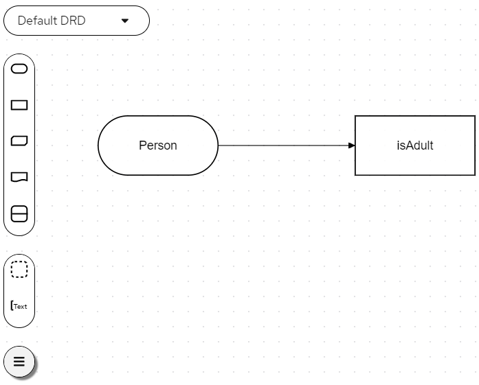Figure 11. ExamplePersonDecisionsDMN decision requirements diagram (DRD)This example DMN model consists of a basic DMN input node and a decision node defined by a DMN decision table with a custom structured data type.
In VSCode (recommended), you can add the Apache KIE™ Kogito Bundle VSCode extension to design the decision requirements diagram (DRD), boxed expression, and data types with the Kogito DMN modeler.
To create this example DMN model quickly, you can copy Example
PersonDecisions.dmnfile.To create this example DMN model in VSCode using the Kogito DMN modeler, follow these steps:
-
Open the empty
PersonDecisions.dmnfile and in the upper-right corner of the DMN modeler, click the Properties icon and confirm that the DMN model Name is set toPersonDecisions. -
In the left palette, select DMN Input Data, drag the node to the canvas, and double-click the node to name it
Person. -
In the left palette, select DMN Decision, drag the node to the canvas, double-click the node to name it
isAdult, and link to it from the input node. -
Select the decision node to display the node options and click the Edit icon to open the DMN boxed expression editor to define the decision logic for the node.
-
Click the undefined expression field and select Decision Table.
-
Click the upper-left corner of the decision table to set the hit policy to Unique.
-
Set the input and output columns so that the input source
Person.Agewith typenumberdetermines the age limit and the output targetisAdultwith typebooleandetermines adult status:Figure 12. Example DMN decision table forisAdultdecision -
In the upper tab options, select the Data Types tab and add the following
tPersonstructured data type and nested data types:Figure 13. Example DMN data types -
After you define the data types, select the Editor tab to return to the DMN modeler canvas.
-
Select the Person input node, click the Properties icon, and under Information item, set the Data type to
tPerson. -
Select the isAdult decision node, click the Properties icon, and under Information item, confirm that the Data type is still set to
boolean. You previously set this data type when you created the decision table. -
Save the DMN decision file.
-
-
In the
src/main/resourcesfolder, add the followingPersonProcess.bpmn2BPMN process model:
Figure 14. ExamplePersonProcessBPMN processThis example process consists of the following basic BPMN components:
-
Start event
-
Business rule task
-
Exclusive gateway
-
User task
-
End events
In VSCode (recommended), you can add the Apache KIE™ Kogito Bundle VSCode extension to model the business process with the Kogito BPMN modeler.
To create this example process quickly, you can copy the following
PersonProcess.bpmn2file content:Example BPMN file<bpmn2:definitions xmlns:xsi="http://www.w3.org/2001/XMLSchema-instance" xmlns:bpmn2="http://www.omg.org/spec/BPMN/20100524/MODEL" xmlns:bpmndi="http://www.omg.org/spec/BPMN/20100524/DI" xmlns:bpsim="http://www.bpsim.org/schemas/1.0" xmlns:dc="http://www.omg.org/spec/DD/20100524/DC" xmlns:di="http://www.omg.org/spec/DD/20100524/DI" xmlns:drools="http://www.jboss.org/drools" id="_J4ElsVJgEDiScotxwBQ14Q" exporter="jBPM Process Modeler" exporterVersion="2.0" targetNamespace="http://www.omg.org/bpmn20"> <bpmn2:itemDefinition id="_personItem" structureRef="org.acme.Person"/> <bpmn2:itemDefinition id="_isAdultItem" structureRef="Boolean"/> <bpmn2:itemDefinition id="_UserTask_1_SkippableInputXItem" structureRef="Object"/> <bpmn2:itemDefinition id="_UserTask_1_PriorityInputXItem" structureRef="Object"/> <bpmn2:itemDefinition id="_UserTask_1_CommentInputXItem" structureRef="Object"/> <bpmn2:itemDefinition id="_UserTask_1_DescriptionInputXItem" structureRef="Object"/> <bpmn2:itemDefinition id="_UserTask_1_CreatedByInputXItem" structureRef="Object"/> <bpmn2:itemDefinition id="_UserTask_1_TaskNameInputXItem" structureRef="Object"/> <bpmn2:itemDefinition id="_UserTask_1_GroupIdInputXItem" structureRef="Object"/> <bpmn2:itemDefinition id="_UserTask_1_ContentInputXItem" structureRef="Object"/> <bpmn2:itemDefinition id="_UserTask_1_NotStartedReassignInputXItem" structureRef="Object"/> <bpmn2:itemDefinition id="_UserTask_1_NotCompletedReassignInputXItem" structureRef="Object"/> <bpmn2:itemDefinition id="_UserTask_1_NotStartedNotifyInputXItem" structureRef="Object"/> <bpmn2:itemDefinition id="_UserTask_1_NotCompletedNotifyInputXItem" structureRef="Object"/> <bpmn2:itemDefinition id="_UserTask_1_personInputXItem" structureRef="org.acme.Person"/> <bpmn2:itemDefinition id="_BusinessRuleTask_1_namespaceInputXItem" structureRef="java.lang.String"/> <bpmn2:itemDefinition id="_BusinessRuleTask_1_modelInputXItem" structureRef="java.lang.String"/> <bpmn2:itemDefinition id="_BusinessRuleTask_1_decisionInputXItem" structureRef="java.lang.String"/> <bpmn2:itemDefinition id="_BusinessRuleTask_1_PersonInputXItem" structureRef="org.acme.Person"/> <bpmn2:itemDefinition id="_BusinessRuleTask_1_isAdultOutputXItem" structureRef="Boolean"/> <bpmn2:process id="persons" drools:packageName="org.acme" drools:version="1.0" drools:adHoc="false" name="Person Process" isExecutable="true" processType="Public"> <bpmn2:property id="person" itemSubjectRef="_personItem" name="person"/> <bpmn2:property id="isAdult" itemSubjectRef="_isAdultItem" name="isAdult"/> <bpmn2:sequenceFlow id="SequenceFlow_1" sourceRef="StartEvent_1" targetRef="BusinessRuleTask_1"/> <bpmn2:sequenceFlow id="SequenceFlow_2" sourceRef="BusinessRuleTask_1" targetRef="ExclusiveGateway_1"/> <bpmn2:sequenceFlow id="SequenceFlow_3" sourceRef="ExclusiveGateway_1" targetRef="UserTask_1"> <bpmn2:conditionExpression xsi:type="bpmn2:tFormalExpression" language="http://www.java.com/java">return isAdult == false;</bpmn2:conditionExpression> </bpmn2:sequenceFlow> <bpmn2:sequenceFlow id="SequenceFlow_4" sourceRef="UserTask_1" targetRef="EndEvent_1"/> <bpmn2:sequenceFlow id="SequenceFlow_5" sourceRef="ExclusiveGateway_1" targetRef="EndEvent_2"> <bpmn2:conditionExpression xsi:type="bpmn2:tFormalExpression" language="http://www.java.com/java">return isAdult == true;</bpmn2:conditionExpression> </bpmn2:sequenceFlow> <bpmn2:startEvent id="StartEvent_1" name="StartProcess"> <bpmn2:extensionElements> <drools:metaData name="elementname"> <drools:metaValue>StartProcess</drools:metaValue> </drools:metaData> </bpmn2:extensionElements> <bpmn2:outgoing>SequenceFlow_1</bpmn2:outgoing> </bpmn2:startEvent> <bpmn2:businessRuleTask id="BusinessRuleTask_1" name="Evaluate person" implementation="http://www.jboss.org/drools/dmn"> <bpmn2:extensionElements> <drools:metaData name="elementname"> <drools:metaValue>Evaluate person</drools:metaValue> </drools:metaData> </bpmn2:extensionElements> <bpmn2:incoming>SequenceFlow_1</bpmn2:incoming> <bpmn2:outgoing>SequenceFlow_2</bpmn2:outgoing> <bpmn2:ioSpecification> <bpmn2:dataInput id="BusinessRuleTask_1_namespaceInputX" drools:dtype="java.lang.String" itemSubjectRef="_BusinessRuleTask_1_namespaceInputXItem" name="namespace"/> <bpmn2:dataInput id="BusinessRuleTask_1_decisionInputX" drools:dtype="java.lang.String" itemSubjectRef="_BusinessRuleTask_1_decisionInputXItem" name="decision"/> <bpmn2:dataInput id="BusinessRuleTask_1_modelInputX" drools:dtype="java.lang.String" itemSubjectRef="_BusinessRuleTask_1_modelInputXItem" name="model"/> <bpmn2:dataInput id="BusinessRuleTask_1_PersonInputX" drools:dtype="org.acme.Person" itemSubjectRef="_BusinessRuleTask_1_PersonInputXItem" name="Person"/> <bpmn2:dataOutput id="BusinessRuleTask_1_isAdultOutputX" drools:dtype="Boolean" itemSubjectRef="_BusinessRuleTask_1_isAdultOutputXItem" name="isAdult"/> <bpmn2:inputSet> <bpmn2:dataInputRefs>BusinessRuleTask_1_namespaceInputX</bpmn2:dataInputRefs> <bpmn2:dataInputRefs>BusinessRuleTask_1_decisionInputX</bpmn2:dataInputRefs> <bpmn2:dataInputRefs>BusinessRuleTask_1_modelInputX</bpmn2:dataInputRefs> <bpmn2:dataInputRefs>BusinessRuleTask_1_PersonInputX</bpmn2:dataInputRefs> </bpmn2:inputSet> <bpmn2:outputSet> <bpmn2:dataOutputRefs>BusinessRuleTask_1_isAdultOutputX</bpmn2:dataOutputRefs> </bpmn2:outputSet> </bpmn2:ioSpecification> <bpmn2:dataInputAssociation> <bpmn2:targetRef>BusinessRuleTask_1_namespaceInputX</bpmn2:targetRef> <bpmn2:assignment> <bpmn2:from xsi:type="bpmn2:tFormalExpression">https://kie.org/dmn/_F322E39A-1EF2-470E-BD8C-960352D1EA36</bpmn2:from> <bpmn2:to xsi:type="bpmn2:tFormalExpression">BusinessRuleTask_1_namespaceInputX</bpmn2:to> </bpmn2:assignment> </bpmn2:dataInputAssociation> <bpmn2:dataInputAssociation> <bpmn2:targetRef>BusinessRuleTask_1_decisionInputX</bpmn2:targetRef> <bpmn2:assignment> <bpmn2:from xsi:type="bpmn2:tFormalExpression">isAdult</bpmn2:from> <bpmn2:to xsi:type="bpmn2:tFormalExpression">BusinessRuleTask_1_decisionInputX</bpmn2:to> </bpmn2:assignment> </bpmn2:dataInputAssociation> <bpmn2:dataInputAssociation> <bpmn2:targetRef>BusinessRuleTask_1_modelInputX</bpmn2:targetRef> <bpmn2:assignment> <bpmn2:from xsi:type="bpmn2:tFormalExpression">PersonDecisions</bpmn2:from> <bpmn2:to xsi:type="bpmn2:tFormalExpression">BusinessRuleTask_1_modelInputX</bpmn2:to> </bpmn2:assignment> </bpmn2:dataInputAssociation> <bpmn2:dataInputAssociation> <bpmn2:sourceRef>person</bpmn2:sourceRef> <bpmn2:targetRef>BusinessRuleTask_1_PersonInputX</bpmn2:targetRef> </bpmn2:dataInputAssociation> <bpmn2:dataOutputAssociation> <bpmn2:sourceRef>BusinessRuleTask_1_isAdultOutputX</bpmn2:sourceRef> <bpmn2:targetRef>isAdult</bpmn2:targetRef> </bpmn2:dataOutputAssociation> </bpmn2:businessRuleTask> <bpmn2:exclusiveGateway id="ExclusiveGateway_1" name="Exclusive Gateway 1" gatewayDirection="Diverging"> <bpmn2:extensionElements> <drools:metaData name="elementname"> <drools:metaValue>Exclusive Gateway 1</drools:metaValue> </drools:metaData> </bpmn2:extensionElements> <bpmn2:incoming>SequenceFlow_2</bpmn2:incoming> <bpmn2:outgoing>SequenceFlow_5</bpmn2:outgoing> <bpmn2:outgoing>SequenceFlow_3</bpmn2:outgoing> </bpmn2:exclusiveGateway> <bpmn2:userTask id="UserTask_1" name="Special handling for children"> <bpmn2:extensionElements> <drools:metaData name="elementname"> <drools:metaValue>Special handling for children</drools:metaValue> </drools:metaData> </bpmn2:extensionElements> <bpmn2:incoming>SequenceFlow_3</bpmn2:incoming> <bpmn2:outgoing>SequenceFlow_4</bpmn2:outgoing> <bpmn2:ioSpecification> <bpmn2:dataInput id="UserTask_1_TaskNameInputX" drools:dtype="Object" itemSubjectRef="_UserTask_1_TaskNameInputXItem" name="TaskName"/> <bpmn2:dataInput id="UserTask_1_personInputX" drools:dtype="org.acme.Person" itemSubjectRef="_UserTask_1_personInputXItem" name="person"/> <bpmn2:dataInput id="UserTask_1_SkippableInputX" drools:dtype="Object" itemSubjectRef="_UserTask_1_SkippableInputXItem" name="Skippable"/> <bpmn2:dataInput id="UserTask_1_PriorityInputX" drools:dtype="Object" itemSubjectRef="_UserTask_1_PriorityInputXItem" name="Priority"/> <bpmn2:inputSet> <bpmn2:dataInputRefs>UserTask_1_TaskNameInputX</bpmn2:dataInputRefs> <bpmn2:dataInputRefs>UserTask_1_personInputX</bpmn2:dataInputRefs> <bpmn2:dataInputRefs>UserTask_1_SkippableInputX</bpmn2:dataInputRefs> <bpmn2:dataInputRefs>UserTask_1_PriorityInputX</bpmn2:dataInputRefs> </bpmn2:inputSet> </bpmn2:ioSpecification> <bpmn2:dataInputAssociation> <bpmn2:targetRef>UserTask_1_TaskNameInputX</bpmn2:targetRef> <bpmn2:assignment> <bpmn2:from xsi:type="bpmn2:tFormalExpression">ChildrenHandling</bpmn2:from> <bpmn2:to xsi:type="bpmn2:tFormalExpression">UserTask_1_TaskNameInputX</bpmn2:to> </bpmn2:assignment> </bpmn2:dataInputAssociation> <bpmn2:dataInputAssociation> <bpmn2:sourceRef>person</bpmn2:sourceRef> <bpmn2:targetRef>UserTask_1_personInputX</bpmn2:targetRef> </bpmn2:dataInputAssociation> <bpmn2:dataInputAssociation> <bpmn2:targetRef>UserTask_1_SkippableInputX</bpmn2:targetRef> <bpmn2:assignment> <bpmn2:from xsi:type="bpmn2:tFormalExpression">true</bpmn2:from> <bpmn2:to xsi:type="bpmn2:tFormalExpression">UserTask_1_SkippableInputX</bpmn2:to> </bpmn2:assignment> </bpmn2:dataInputAssociation> <bpmn2:dataInputAssociation> <bpmn2:targetRef>UserTask_1_PriorityInputX</bpmn2:targetRef> <bpmn2:assignment> <bpmn2:from xsi:type="bpmn2:tFormalExpression">1</bpmn2:from> <bpmn2:to xsi:type="bpmn2:tFormalExpression">UserTask_1_PriorityInputX</bpmn2:to> </bpmn2:assignment> </bpmn2:dataInputAssociation> </bpmn2:userTask> <bpmn2:endEvent id="EndEvent_1" name="End Event 1"> <bpmn2:extensionElements> <drools:metaData name="elementname"> <drools:metaValue>End Event 1</drools:metaValue> </drools:metaData> </bpmn2:extensionElements> <bpmn2:incoming>SequenceFlow_4</bpmn2:incoming> </bpmn2:endEvent> <bpmn2:endEvent id="EndEvent_2" name="End Event 2"> <bpmn2:extensionElements> <drools:metaData name="elementname"> <drools:metaValue>End Event 2</drools:metaValue> </drools:metaData> </bpmn2:extensionElements> <bpmn2:incoming>SequenceFlow_5</bpmn2:incoming> </bpmn2:endEvent> </bpmn2:process> <bpmndi:BPMNDiagram> <bpmndi:BPMNPlane bpmnElement="persons"> <bpmndi:BPMNShape id="shape_EndEvent_2" bpmnElement="EndEvent_2"> <dc:Bounds height="56" width="56" x="622" y="201"/> </bpmndi:BPMNShape> <bpmndi:BPMNShape id="shape_EndEvent_1" bpmnElement="EndEvent_1"> <dc:Bounds height="56" width="56" x="622" y="105"/> </bpmndi:BPMNShape> <bpmndi:BPMNShape id="shape_UserTask_1" bpmnElement="UserTask_1"> <dc:Bounds height="78" width="134" x="449" y="94"/> </bpmndi:BPMNShape> <bpmndi:BPMNShape id="shape_ExclusiveGateway_1" bpmnElement="ExclusiveGateway_1"> <dc:Bounds height="56" width="56" x="365" y="105"/> </bpmndi:BPMNShape> <bpmndi:BPMNShape id="shape_BusinessRuleTask_1" bpmnElement="BusinessRuleTask_1"> <dc:Bounds height="71" width="141" x="180" y="97"/> </bpmndi:BPMNShape> <bpmndi:BPMNShape id="shape_StartEvent_1" bpmnElement="StartEvent_1"> <dc:Bounds height="56" width="56" x="80" y="105"/> </bpmndi:BPMNShape> <bpmndi:BPMNEdge id="edge_shape_ExclusiveGateway_1_to_shape_EndEvent_2" bpmnElement="SequenceFlow_5"> <di:waypoint x="390" y="155"/> <di:waypoint x="393" y="231"/> <di:waypoint x="622" y="219"/> </bpmndi:BPMNEdge> <bpmndi:BPMNEdge id="edge_shape_UserTask_1_to_shape_EndEvent_1" bpmnElement="SequenceFlow_4"> <di:waypoint x="583" y="133"/> <di:waypoint x="622" y="123"/> </bpmndi:BPMNEdge> <bpmndi:BPMNEdge id="edge_shape_ExclusiveGateway_1_to_shape_UserTask_1" bpmnElement="SequenceFlow_3"> <di:waypoint x="415" y="130"/> <di:waypoint x="449" y="133"/> </bpmndi:BPMNEdge> <bpmndi:BPMNEdge id="edge_shape_BusinessRuleTask_1_to_shape_ExclusiveGateway_1" bpmnElement="SequenceFlow_2"> <di:waypoint x="321" y="132.5"/> <di:waypoint x="365" y="130"/> </bpmndi:BPMNEdge> <bpmndi:BPMNEdge id="edge_shape_StartEvent_1_to_shape_BusinessRuleTask_1" bpmnElement="SequenceFlow_1"> <di:waypoint x="116" y="123"/> <di:waypoint x="180" y="132.5"/> </bpmndi:BPMNEdge> </bpmndi:BPMNPlane> </bpmndi:BPMNDiagram> <bpmn2:relationship type="BPSimData"> <bpmn2:extensionElements> <bpsim:BPSimData> <bpsim:Scenario id="default" name="Simulationscenario"> <bpsim:ScenarioParameters/> <bpsim:ElementParameters elementRef="UserTask_1"> <bpsim:TimeParameters> <bpsim:ProcessingTime> <bpsim:NormalDistribution mean="0" standardDeviation="0"/> </bpsim:ProcessingTime> </bpsim:TimeParameters> <bpsim:ResourceParameters> <bpsim:Availability> <bpsim:FloatingParameter value="0"/> </bpsim:Availability> <bpsim:Quantity> <bpsim:FloatingParameter value="0"/> </bpsim:Quantity> </bpsim:ResourceParameters> <bpsim:CostParameters> <bpsim:UnitCost> <bpsim:FloatingParameter value="0"/> </bpsim:UnitCost> </bpsim:CostParameters> </bpsim:ElementParameters> <bpsim:ElementParameters elementRef="BusinessRuleTask_1"> <bpsim:TimeParameters> <bpsim:ProcessingTime> <bpsim:NormalDistribution mean="0" standardDeviation="0"/> </bpsim:ProcessingTime> </bpsim:TimeParameters> <bpsim:ResourceParameters> <bpsim:Availability> <bpsim:FloatingParameter value="0"/> </bpsim:Availability> <bpsim:Quantity> <bpsim:FloatingParameter value="0"/> </bpsim:Quantity> </bpsim:ResourceParameters> <bpsim:CostParameters> <bpsim:UnitCost> <bpsim:FloatingParameter value="0"/> </bpsim:UnitCost> </bpsim:CostParameters> </bpsim:ElementParameters> <bpsim:ElementParameters elementRef="StartEvent_1"> <bpsim:TimeParameters> <bpsim:ProcessingTime> <bpsim:NormalDistribution mean="0" standardDeviation="0"/> </bpsim:ProcessingTime> </bpsim:TimeParameters> </bpsim:ElementParameters> </bpsim:Scenario> </bpsim:BPSimData> </bpmn2:extensionElements> <bpmn2:source>_J4ElsVJgEDiScotxwBQ14Q</bpmn2:source> <bpmn2:target>_J4ElsVJgEDiScotxwBQ14Q</bpmn2:target> </bpmn2:relationship> </bpmn2:definitions>To create this example BPMN process in VSCode using the Kogito BPMN modeler, follow these steps:
-
Open the empty
PersonProcess.bpmn2file and in the upper-right corner of the BPMN modeler, click the Properties icon and define the following properties:-
Process: Set the following values:
-
Name:
Person Process -
ID:
persons -
Package:
org.acme
-
-
Process Data: Add the following process variables:
-
personwith the typeorg.acme.Person(Use the Custom data type option to define the custom type.) -
isAdultwith the typeBoolean
-
-
-
In the left palette, select Activities → Business Rule, drag the task to the canvas, and link to it from the start event.
-
Select the business rule task and define the following properties:
-
General: Set the rule task Name to
Evaluate person. -
Implementation/Execution: Set the following values:
-
Rule Language:
DMN -
Namespace: The
namespaceproperty value from thePersonDecisions.dmnfile that you created previously, such ashttps://kie.org/dmn/_F322E39A-1EF2-470E-BD8C-960352D1EA36 -
Decision Name:
isAdult -
DMN Model Name:
PersonDecisions
-
-
Data Assignments: Add the following assignments:
-
Data Input: Add a data input with the name
Person, with the typeorg.acme.Person, and with the sourceperson. -
Data Output: Add a data output with the name
isAdult, with the typeBoolean, and with the sourceisAdult.
-
-
-
In the left palette, select Gateways → Exclusive, drag the gateway to the canvas, and link to it from the rule task.
-
In the left palette, select Activities → User, drag the user task to the canvas, and link to it from the exclusive gateway.
-
Select the user task and define the following properties:
-
General: Set the user task Name to
Special handling for children. -
Implementation/Execution: Set the Task Name to
ChildrenHandling, and add a data input with the nameperson, the typeorg.acme.Person, and the sourceperson.
-
-
In the left palette, select End Events → End, drag two end events to the canvas, and link to one end event from the user task and to the other end event from the exclusive gateway.
-
Select the connector that connects the exclusive gateway to the end event and for the Implementation/Execution property, set the Condition Expression to
Javaand enter the conditionreturn isAdult == true;. -
Select the connector that connects the exclusive gateway to the user task and for the Implementation/Execution property, set the Condition Expression to
Javaand enter the condition toreturn isAdult == false; -
Save the BPMN process file.
-
1.8.1. Using DRL rule units as an alternative decision service
As an alternative to using Decision Model and Notation (DMN) to define this example decision service, you can also use a Drools Rule Language (DRL) file implemented as a rule unit.
A DRL rule unit is a module for rules and a unit of execution. A rule unit collects a set of rules with the declaration of the type of facts that the rules act on. A rule unit also serves as a unique namespace for each group of rules. A single rule base can contain multiple rule units. You typically store all the rules for a unit in the same file as the unit declaration so that the unit is self-contained. For more information about rule units, see Developing decision services with Kogito.
-
In the
src/main/resourcesfolder of your example Kogito project, instead of using a DMN file, add the followingPersonRules.drlfile:ExamplePersonRulesDRL filepackage org.acme unit PersonRules; import org.acme.Person; rule isAdult when $person: /person[ age > 18 ] then modify($person) { setAdult(true) }; endThis example rule determines that any person who is older than 18 is classified as an adult. The rule file also declares that the rule belongs to the rule unit
PersonRules. This is the rule unit that you define as part of the business rule task in the example BPMN process. When you build the project, the rule unit is generated and associated with the DRL file.The rule also defines the condition using OOPath notation. OOPath is an object-oriented syntax extension to XPath for navigating through related elements while handling collections and filtering constraints.
You can also rewrite the same rule condition in a more explicit form using the traditional rule pattern syntax, as shown in the following example:
ExamplePersonRulesDRL file using traditional notationpackage org.acme unit PersonRules; import org.acme.Person; rule isAdult when $person: Person(age > 18) from person then modify($person) { setAdult(true) }; end -
In the
src/main/resourcesfolder, use the Kogito BPMN modeler in VSCode to open thePersonProcess.bpmn2process diagram that you created. -
Select the
Evaluate personbusiness rule task and modify the following properties:-
Implementation/Execution: Set the following values:
-
Rule Language:
DRL(instead ofDMN) -
Rule Flow Group:
unit:org.acme.PersonRulesThis rule unit syntax in the Rule Flow Group field specifies that you are using the
org.acme.PersonRulesrule unit instead of a traditional rule flow group. This is the rule unit that you referenced in the example DRL file. When you build the project, the business process implicitly declares the rule unit as part of the business rule task to execute the DRL file.
-
-
Data Assignments: Open the assignment settings and change the data input Name to
person(instead ofPerson). This accommodates the input variable syntax required by the DRL file.
-
-
Select the connector that connects the exclusive gateway to the end event and for the Implementation/Execution property, verify that the Condition Expression is set to
Javaand change the condition toreturn person.isAdult();. -
Select the connector that connects the exclusive gateway to the user task and for the Implementation/Execution property, verify that the Condition Expression is set to
Javaand change the conditionreturn ! person.isAdult();. -
Save the process file to update the model.
1.9. Testing the decision logic for a Kogito service using test scenarios
As you develop business decisions in your Kogito services, you can use test scenarios to validate the functionality of your decisions before you begin running and using your Kogito services. With a test scenario, you use data from your project to set given conditions and expected results based on one or more defined business decisions. When you run the scenario, the expected results and actual results of the decision instance are compared. If the expected results match the actual results, the test is successful. If the expected results do not match the actual results, then the test fails.
You define test scenarios in .scesim (scenario simulation) files that you can model in Visual Studio Code (VSCode) using the Apache KIE™ Kogito Bundle VSCode extension. You can use one or multiple .scesim files in your Kogito project, and each .scesim file can contain one or multiple test scenarios based on the defined decision data.
The example for this procedure uses a basic PersonDecisionsTest.scesim test scenario file that validates the decision logic in the example PersonDecisions.dmn Decision Model and Notation (DMN) model that you created previously.
| Test scenarios in Kogito currently support DMN decision services only. Test scenarios will support Drools Rule Language (DRL) decision services in a future release. |
-
You have created the
PersonDecisions.dmnDMN model that determines whether a specified person is an adult or is underage. For more information about this DMN model, see Designing the application logic for a Kogito service using DMN and BPMN.
-
In the Maven project that contains your Kogito decision services, add the following dependency to the
pom.xmlfile to enable test scenario execution for your project:Dependency to enable test scenario execution<dependency> <groupId>org.drools</groupId> <artifactId>drools-scenario-simulation</artifactId> <scope>test</scope> </dependency> -
Navigate to the
src/mainfolder of the project and create atestfolder with the following subfolders. If you have an existingtestfolder structure, you can adapt the steps that follow according to your project layout.Test folder structure for test scenariossrc/main/test/ └── java/testscenario └── resources -
Navigate to the
test/java/testscenariofolder and add the followingKogitoScenarioJunitActivatorTest.javaclass:Activator class for test scenariospackage testscenario; @org.junit.runner.RunWith(org.kogito.scenariosimulation.runner.KogitoJunitActivator.class) public class KogitoScenarioJunitActivatorTest { }This activator class is a custom JUnit 5 runner that enables the execution of test scenario files in your Kogito project. When you run test scenarios, this class loads all
.scesimfiles available in the project and executes them. For each row (scenario) in a test scenario file, the activator class generates a JUnit test result. -
Navigate to the
test/resourcesfolder and add the followingPersonDecisionsTest.scesimtest scenario file:Figure 15. Example test scenarios forPersonDecisionsDMN decision logicThe GIVEN columns specify input conditions based on the corresponding decision service. The EXPECT column specifies the expected results of the decision service based on the defined GIVEN conditions. Each row in the table is a defined scenario with example values for the GIVEN and EXPECT definitions to test the decision logic of the corresponding decision service.
This example test scenario file tests the decision logic for the following
PersonDecisions.dmnmodel that you created previously. This DMN model determines whether a specified person is an adult or is underage.Figure 16. ExamplePersonDecisionsDMN decision requirements diagram (DRD)Figure 17. Example DMN boxed expression forisAdultdecisionIn VSCode (recommended), you can add the Apache KIE™ Kogito Bundle VSCode extension to design the test scenarios with the test scenario modeler.
To create these example test scenarios quickly, you can copy the following
PersonDecisionsTest.scesimfile content:Example test scenario file<ScenarioSimulationModel version="1.8"> <simulation> <scesimModelDescriptor> <factMappings> <FactMapping> <expressionElements/> <expressionIdentifier> <name>Index</name> <type>OTHER</type> </expressionIdentifier> <factIdentifier> <name>#</name> <className>java.lang.Integer</className> </factIdentifier> <className>java.lang.Integer</className> <factAlias>#</factAlias> <columnWidth>70</columnWidth> <factMappingValueType>NOT_EXPRESSION</factMappingValueType> </FactMapping> <FactMapping> <expressionElements/> <expressionIdentifier> <name>Description</name> <type>OTHER</type> </expressionIdentifier> <factIdentifier> <name>Scenario description</name> <className>java.lang.String</className> </factIdentifier> <className>java.lang.String</className> <factAlias>Scenario description</factAlias> <columnWidth>300</columnWidth> <factMappingValueType>NOT_EXPRESSION</factMappingValueType> </FactMapping> <FactMapping> <expressionElements> <ExpressionElement> <step>Person</step> </ExpressionElement> <ExpressionElement> <step>Age</step> </ExpressionElement> </expressionElements> <expressionIdentifier> <name>1|1</name> <type>GIVEN</type> </expressionIdentifier> <factIdentifier> <name>Person</name> <className>Person</className> </factIdentifier> <className>number</className> <factAlias>Person</factAlias> <expressionAlias>Age</expressionAlias> <genericTypes/> <columnWidth>114</columnWidth> <factMappingValueType>NOT_EXPRESSION</factMappingValueType> </FactMapping> <FactMapping> <expressionElements> <ExpressionElement> <step>Person</step> </ExpressionElement> <ExpressionElement> <step>Name</step> </ExpressionElement> </expressionElements> <expressionIdentifier> <name>1|2</name> <type>GIVEN</type> </expressionIdentifier> <factIdentifier> <name>Person</name> <className>Person</className> </factIdentifier> <className>string</className> <factAlias>Person</factAlias> <expressionAlias>Name</expressionAlias> <genericTypes/> <columnWidth>114</columnWidth> <factMappingValueType>NOT_EXPRESSION</factMappingValueType> </FactMapping> <FactMapping> <expressionElements> <ExpressionElement> <step>isAdult</step> </ExpressionElement> </expressionElements> <expressionIdentifier> <name>1|4</name> <type>EXPECT</type> </expressionIdentifier> <factIdentifier> <name>isAdult</name> <className>isAdult</className> </factIdentifier> <className>boolean</className> <factAlias>isAdult</factAlias> <expressionAlias>value</expressionAlias> <genericTypes/> <columnWidth>114</columnWidth> <factMappingValueType>NOT_EXPRESSION</factMappingValueType> </FactMapping> </factMappings> </scesimModelDescriptor> <scesimData> <Scenario> <factMappingValues> <FactMappingValue> <factIdentifier> <name>Scenario description</name> <className>java.lang.String</className> </factIdentifier> <expressionIdentifier> <name>Description</name> <type>OTHER</type> </expressionIdentifier> <rawValue class="string">Is an adult</rawValue> </FactMappingValue> <FactMappingValue> <factIdentifier> <name>Person</name> <className>Person</className> </factIdentifier> <expressionIdentifier> <name>1|1</name> <type>GIVEN</type> </expressionIdentifier> <rawValue class="string">20</rawValue> </FactMappingValue> <FactMappingValue> <factIdentifier> <name>Person</name> <className>Person</className> </factIdentifier> <expressionIdentifier> <name>1|2</name> <type>GIVEN</type> </expressionIdentifier> <rawValue class="string">"John Quark"</rawValue> </FactMappingValue> <FactMappingValue> <factIdentifier> <name>isAdult</name> <className>isAdult</className> </factIdentifier> <expressionIdentifier> <name>1|4</name> <type>EXPECT</type> </expressionIdentifier> <rawValue class="string">true</rawValue> </FactMappingValue> <FactMappingValue> <factIdentifier> <name>#</name> <className>java.lang.Integer</className> </factIdentifier> <expressionIdentifier> <name>Index</name> <type>OTHER</type> </expressionIdentifier> <rawValue class="string">1</rawValue> </FactMappingValue> </factMappingValues> </Scenario> <Scenario> <factMappingValues> <FactMappingValue> <factIdentifier> <name>Scenario description</name> <className>java.lang.String</className> </factIdentifier> <expressionIdentifier> <name>Description</name> <type>OTHER</type> </expressionIdentifier> <rawValue class="string">Is underage</rawValue> </FactMappingValue> <FactMappingValue> <factIdentifier> <name>Person</name> <className>Person</className> </factIdentifier> <expressionIdentifier> <name>1|1</name> <type>GIVEN</type> </expressionIdentifier> <rawValue class="string">15</rawValue> </FactMappingValue> <FactMappingValue> <factIdentifier> <name>Person</name> <className>Person</className> </factIdentifier> <expressionIdentifier> <name>1|2</name> <type>GIVEN</type> </expressionIdentifier> <rawValue class="string">"Jenny Quark"</rawValue> </FactMappingValue> <FactMappingValue> <factIdentifier> <name>isAdult</name> <className>isAdult</className> </factIdentifier> <expressionIdentifier> <name>1|4</name> <type>EXPECT</type> </expressionIdentifier> <rawValue class="string">false</rawValue> </FactMappingValue> <FactMappingValue> <factIdentifier> <name>#</name> <className>java.lang.Integer</className> </factIdentifier> <expressionIdentifier> <name>Index</name> <type>OTHER</type> </expressionIdentifier> <rawValue class="string">2</rawValue> </FactMappingValue> </factMappingValues> </Scenario> </scesimData> </simulation> <background> <scesimModelDescriptor> <factMappings> <FactMapping> <expressionElements/> <expressionIdentifier> <name>1|1</name> <type>GIVEN</type> </expressionIdentifier> <factIdentifier> <name>Empty</name> <className>java.lang.Void</className> </factIdentifier> <className>java.lang.Void</className> <factAlias>INSTANCE 1</factAlias> <expressionAlias>PROPERTY 1</expressionAlias> <columnWidth>114</columnWidth> <factMappingValueType>NOT_EXPRESSION</factMappingValueType> </FactMapping> </factMappings> </scesimModelDescriptor> <scesimData> <BackgroundData> <factMappingValues> <FactMappingValue> <factIdentifier> <name>Empty</name> <className>java.lang.Void</className> </factIdentifier> <expressionIdentifier> <name>1|1</name> <type>GIVEN</type> </expressionIdentifier> </FactMappingValue> </factMappingValues> </BackgroundData> </scesimData> </background> <settings> <dmnFilePath>src/main/resources/PersonDecisions.dmn</dmnFilePath> <type>DMN</type> <dmnNamespace>https://kie.org/dmn/_F322E39A-1EF2-470E-BD8C-960352D1EA36</dmnNamespace> <dmnName>PersonDecisions</dmnName> <skipFromBuild>false</skipFromBuild> <stateless>false</stateless> </settings> <imports> <imports/> </imports> </ScenarioSimulationModel>To create this example test scenario file in VSCode using the Kogito test scenario modeler, follow these steps:
-
Open the empty
PersonDecisionsTest.scesimfile and in the Create Test Scenario window that appears, set the Source type to DMN, select thePersonDecisions.dmnDMN model from the drop-down options, and click Create.Figure 18. Create test scenario definitionThe test scenario modeler automatically generates a scenario template based on the available DMN data types and fields that you defined in the DMN model.
You can right-click the relevant header cells to insert or delete columns as needed to modify the table structure. You can also select the relevant header cells to modify or insert data objects from the Test Tools panel in the right toolbar.
-
For this example, modify the generated test scenario header cells and specified data objects as needed to create the following test scenario template. Use the Test Tools panel in the right toolbar to select and insert the data objects as needed. Many of the header cell values might already be defined for you.
-
GIVEN: Verify that the first header cell (instance) is set to the Person data object and that the subheader cells (properties) are set to the Age and Name data objects. Delete any other columns under GIVEN that were automatically generated, if applicable.
-
EXPECT: Verify that the first header cell (instance) is set to the isAdult data object and that the subheader cell (property) is set to the value data object. Delete any other columns under EXPECT that were automatically generated, if applicable.
Figure 19. Define test scenario header cells
-
-
In row 1, create a test scenario with the following values:
-
Scenario description:
Is an adult -
GIVEN: Set the following values:
-
Person → Age:
20 -
Person → Name:
John Quark
-
-
EXPECT: Set the following value:
-
isAdult → value:
true
-
This example scenario tests whether the person John Quark with 20 years of age is correctly identified by the
isAdultDMN decision as an adult (true), based on the decision logic that adults are more than 18 years old. -
-
Right-click any cell in row 1, select Insert row below, and in row 2, create another test scenario with the following values:
-
Scenario description:
Is underage -
GIVEN: Set the following values:
-
Person → Age:
15 -
Person → Name:
Jenny Quark
-
-
EXPECT: Set the following value:
-
isAdult → value:
false
-
This example scenario tests whether the person Jenny Quark with 15 years of age is correctly identified by the
isAdultDMN decision as not an adult (false), based on the decision logic that adults are more than 18 years old. -
-
Save the test scenario file.
-
-
After you define and save the test scenarios, in a command terminal, navigate to the project that contains your Kogito decision service and test scenarios and enter the following command to run the test scenarios:
Run the test scenariosmvn clean testA summary of the test scenario execution appears in the command terminal, and detailed reports are generated in the
target/surefire-reportsfolder of your Kogito project.In the following example output, the test scenarios were executed successfully and encountered no errors:
Terminal output for successful test scenarios[INFO] --- maven-surefire-plugin:2.22.1:test (default-test) @ sample-kogito --- [INFO] [INFO] ------------------------------------------------------- [INFO] T E S T S [INFO] ------------------------------------------------------- [INFO] Running testscenario.KogitoScenarioJunitActivatorTest ./target/classes/PersonDecisions.dmn ./src/main/resources/PersonDecisions.dmn ./target/classes/PersonDecisions.dmn ./src/main/resources/PersonDecisions.dmn [INFO] Tests run: 2, Failures: 0, Errors: 0, Skipped: 0, Time elapsed: 0.535 s - in testscenario.KogitoScenarioJunitActivatorTest [INFO] [INFO] Results: [INFO] [INFO] Tests run: 2, Failures: 0, Errors: 0, Skipped: 0 [INFO] [INFO] ------------------------------------------------------------------------ [INFO] BUILD SUCCESS [INFO] ------------------------------------------------------------------------ [INFO] Total time: 52.884 s [INFO] Finished at: 2020-05-05T15:19:53-04:00 [INFO] ------------------------------------------------------------------------The expected results defined in the test scenarios matched the actual results of the
isAdultDMN decision instance in thePersonDecisions.dmnfile. This match of expected and actual results for the decision instance means that the decision logic functions as intended.In the following example output, the test scenarios were executed and the
Is underagescenario encountered an error:Terminal output for a test scenario that encountered a decision error[INFO] --- maven-surefire-plugin:2.22.1:test (default-test) @ sample-kogito --- [INFO] [INFO] ------------------------------------------------------- [INFO] T E S T S [INFO] ------------------------------------------------------- [INFO] Running testscenario.KogitoScenarioJunitActivatorTest ./target/classes/PersonDecisions.dmn ./src/main/resources/PersonDecisions.dmn ./target/classes/PersonDecisions.dmn ./src/main/resources/PersonDecisions.dmn [ERROR] Tests run: 2, Failures: 0, Errors: 1, Skipped: 0, Time elapsed: 0.534 s <<< FAILURE! - in testscenario.KogitoScenarioJunitActivatorTest [ERROR] #2: Is underage Time elapsed: 0.06 s <<< ERROR! org.drools.scenariosimulation.backend.runner.IndexedScenarioException: #2: Scenario 'Is underage' failed(/home/jsmith/sample-kogito/target/test-classes/PersonDecisionsTest.scesim) Caused by: org.drools.scenariosimulation.backend.runner.ScenarioException: Scenario 'Is underage' failed [INFO] [INFO] Results: [INFO] [ERROR] Errors: [ERROR] KogitoScenarioJunitActivatorTest » IndexedScenario #2: Scenario 'Is underage' ... [INFO] [ERROR] Tests run: 2, Failures: 0, Errors: 1, Skipped: 0 [INFO] [INFO] ------------------------------------------------------------------------ [INFO] BUILD FAILURE [INFO] ------------------------------------------------------------------------ [INFO] Total time: 6.521 s [INFO] Finished at: 2020-05-05T15:26:10-04:00 [INFO] ------------------------------------------------------------------------ [ERROR] Failed to execute goal org.apache.maven.plugins:maven-surefire-plugin:2.22.1:test (default-test) on project sample-kogito: There are test failures. [ERROR] [ERROR] Please refer to /home/jsmith/sample-kogito/target/surefire-reports for the individual test results. [ERROR] Please refer to dump files (if any exist) [date].dump, [date]-jvmRun[N].dump and [date].dumpstream.The expected results defined in the
Is underagetest scenario did not match the actual results of theisAdultDMN decision instance in thePersonDecisions.dmnfile. This mismatch of expected and actual results for the decision instance means that either the test scenario identified a flaw in the decision logic or the test scenario is incorrectly defined. In this case, theIs underagetest scenario was intentionally modified incorrectly with an age of20instead of an age of18or less. Reverting the age to15as shown in the previous example resolves the error.
1.10. Running a Kogito service
After you design the business decisions and processes for your Kogito service, you can run your Quarkus or Spring Boot application in one of the following modes:
-
Development mode: For local testing. On Quarkus, development mode also offers live reload of your processes and decisions in your running applications for advanced debugging.
-
JVM mode: For compatibility with a Java virtual machine (JVM).
-
Native mode: (Quarkus only, requires GraalVM or Mandrel) For direct binary execution as native code.
In a command terminal, navigate to the project that contains your Kogito service and enter one of the following commands, depending on your preferred run mode and application environment:
-
For development mode:
On Quarkus$ mvn clean compile quarkus:devOn Spring Boot$ mvn clean compile spring-boot:run -
For JVM mode:
On Quarkus$ mvn clean package $ java -jar target/quarkus-app/quarkus-run.jarOn Spring Boot$ mvn clean package $ java -jar target/sample-kogito-1.0-SNAPSHOT-runner.jar -
For native mode (requires GraalVM):
On Quarkus only$ mvn clean package -Dnative $ ./target/sample-kogito-1.0-SNAPSHOT-runner
|
Alternatively, you can use a container builder image. You do not need to install GraalVM because a container containing GraalVM is pulled automatically. Note that the executable targets a Linux kernel by default. For example: On Quarkus only (GraalVM native build using container)
To use Mandrel instead of GraalVM, run the following command: On Quarkus only (Mandrel native build using container)
|
For further information about building a native image, see Quarkus - Building a Native Executable.
1.11. Interacting with a running Kogito service
After your Kogito service is running, you can send REST API requests to interact with your application and execute your services according to how you set up the application.
This example tests the /persons REST API endpoint that is automatically generated based on the PersonProcess.bpmn2 business process, according to the decisions in the PersonDecisions.dmn file (or the rules in the PersonRules.drl file if you used a DRL rule unit).
For this example, use a REST client, curl utility, or the Swagger UI configured for the application (such as http://localhost:8080/q/swagger-ui or http://localhost:8080/swagger-ui.html) to send API requests with the following components:
-
URL:
http://localhost:8080/persons -
HTTP headers: For
POSTrequests only:-
accept:application/json -
content-type:application/json
-
-
HTTP methods:
GET,POST, orDELETE
{
"person": {
"name": "John Quark",
"age": 20
}
}curl -X POST http://localhost:8080/persons -H 'content-type: application/json' -H 'accept: application/json' -d '{"person": {"name":"John Quark", "age": 20}}'{
"id": "3af806dd-8819-4734-a934-728f4c819682",
"person": {
"name": "John Quark",
"age": 20,
"adult": false
},
"isAdult": true
}This example procedure uses curl commands for convenience.
In a command terminal window that is separate from your running application, navigate to the project that contains your Kogito service and use any of the following curl commands with JSON requests to interact with your running service:
On Spring Boot, you might need to modify how your application exposes API endpoints in order for these example requests to function. For more information, see the README file included in the example Spring Boot project that you created for this tutorial.
|
-
Add an adult person:
Example requestcurl -X POST http://localhost:8080/persons -H 'content-type: application/json' -H 'accept: application/json' -d '{"person": {"name":"John Quark", "age": 20}}'Example response{"id":"3af806dd-8819-4734-a934-728f4c819682","person":{"name":"John Quark","age":20,"adult":false},"isAdult":true} -
Add an underage person:
Example requestcurl -X POST http://localhost:8080/persons -H 'content-type: application/json' -H 'accept: application/json' -d '{"person": {"name":"Jenny Quark", "age": 15}}'Example response{"id":"8eef502b-012b-4628-acb7-73418a089c08","person":{"name":"Jenny Quark","age":15,"adult":false},"isAdult":false} -
View active process instances:
Example requestcurl -X GET http://localhost:8080/persons -H 'content-type: application/json' -H 'accept: application/json'Example response[{"id":"8eef502b-012b-4628-acb7-73418a089c08","person":{"name":"Jenny Quark","age":15,"adult":false},"isAdult":false}] -
View process instance details using the returned process UUID:
Example requestcurl -X GET http://localhost:8080/persons/8eef502b-012b-4628-acb7-73418a089c08/tasks -H 'content-type: application/json' -H 'accept: application/json'Example response (JSON){"cdec4241-d676-47de-8c55-4ee4f9598bac":"ChildrenHandling"} -
View task instance details using the returned process and task UUIDs:
Example requestcurl -X GET http://localhost:8080/persons/8eef502b-012b-4628-acb7-73418a089c08/ChildrenHandling/cdec4241-d676-47de-8c55-4ee4f9598bac -H 'content-type: application/json' -H 'accept: application/json'Example response{"person":{"name":"Jenny Quark","age":15,"adult":false},"name":"ChildrenHandling","id":"cdec4241-d676-47de-8c55-4ee4f9598bac"} -
Complete the evaluation using the returned UUIDs:
Example requestcurl -X POST http://localhost:8080/persons/8eef502b-012b-4628-acb7-73418a089c08/ChildrenHandling/cdec4241-d676-47de-8c55-4ee4f9598bac -H 'content-type: application/json' -H 'accept: application/json' -d '{}'
1.12. Kogito glossary of terms
This glossary defines terms, concepts, or components that are referenced frequently in Kogito documentation or that have a unique meaning or function in Kogito.
- BPMN model
-
A definition of a business process workflow based on the Business Process Model and Notation (BPMN) specification. BPMN is a standard established by the Object Management Group (OMG) for describing and modeling business processes. BPMN defines an XML schema that enables BPMN models to be shared between BPMN-compliant platforms and across organizations so that business analysts and business process developers can collaborate in designing and implementing BPMN process services. The BPMN standard is similar to and can be used together with the Decision Model and Notation (DMN) standard for designing and modeling business decisions.
Additional resources - business domain API
-
An API that your business develops and implements within business applications that contain Kogito services.
- business models
-
The collection of BPMN process models, DMN decision models, DRL rules, XLS decision tables, and any other assets that define the business logic for a Kogito service.
- CloudEvents format
-
A specification for describing event data in a common way. Kogito runtime events for messages, processes, tasks, and other application activities are published in CloudEvents format so that they can be consumed efficiently by other entities, such as the Kogito Data Index Service.
Additional resources - decision table
-
A set of business rules defined in a tabular format. Each row in a decision table is a rule, and each column is a condition, an action, or another rule attribute.
Additional resources - development mode
-
A project build option that provides a fast feedback loop from code changes to a running system using hot reload. Development mode also enables debugging tools such as Swagger in Kogito runtime services.
Additional resources - DRL rule
-
A definition of a business rule in Drools Rule Language (DRL) format. DRL is a notation established by the Drools open source business automation project for defining and describing business rules.
Additional resources - DRL rule unit
-
A module for rules and a unit of execution. A rule unit collects a set of rules with the declaration of the type of facts that the rules act on. A rule unit also serves as a unique namespace for each group of rules. A single rule base can contain multiple rule units. You typically store all the rules for a unit in the same file as the unit declaration so that the unit is self-contained.
Additional resources - DMN model
-
A definition of a business decision flow based on the Decision Model and Notation (DMN) specification. DMN is a standard established by the Object Management Group (OMG) for describing and modeling operational decisions. DMN defines an XML schema that enables DMN models to be shared between DMN-compliant platforms and across organizations so that business analysts and business rules developers can collaborate in designing and implementing DMN decision services. The DMN standard is similar to and can be used together with the Business Process Model and Notation (BPMN) standard for designing and modeling business processes.
Additional resources - event listener
-
A procedure or function in a program that reacts to a specified event, such as a completed node in a process or an executed decision.
Additional resources - intelligent application
-
An optimized, integrated solution that uses Kogito services to implement business-domain knowledge.
- Kogito Audit Investigation Console
-
A user interface for monitoring and investigating Decision Model and Notation (DMN) model executions in Kogito.
Additional resources
- Kogito Data Index Service
-
A dedicated service in Kogito that stores all Kogito events related to processes, tasks, and domain data. The Data Index Service uses Apache Kafka messaging to consume CloudEvents messages from Kogito services, and then indexes the returned data for future GraphQL queries and stores the data in the Infinispan or MongoDB persistence store. The Data Index Service is at the core of all Kogito search, insight, and management capabilities.
Additional resources - Kogito domain-specific service
-
A business automation service for your business domain that you create using Kogito. You define the logic of this service using BPMN process models, DMN decision models, or other business models, and any other supported runtime configurations. In Kogito documentation, the general term for Kogito services that you create refers to this type of service.
- Kogito Explainability Service
-
A dedicated service in Kogito that provides an explanation for the decisions made in Kogito services, in conjunction with the Kogito Trusty Service.
Additional resources - Kogito Jobs Service
-
A dedicated service in Kogito for scheduling BPMN process events that are configured to be executed at a specified time. These time-based events in a process model are known as jobs. The Jobs Service does not execute a job, but triggers a callback that might be an HTTP request on a given endpoint specified for the job request or any other configured callback. The Jobs Service receives requests for job scheduling and then sends a request at the time specified on the job request.
Additional resources - Kogito Management Console
-
A user interface for viewing the state of all available Kogito services and managing process instances.
Additional resources - Kogito runtime event
-
A record of a significant change of state in the application domain at a point in time. Kogito emits runtime events as a result of successfully executed requests, or units of work, in a process instance or task instance in a process. Kogito can use these events to notify third parties about changes to the BPMN process instance and its data.
Additional resources - Kogito runtime persistence
-
An optional capability for preserving Kogito process data in your services across application restarts. Kogito persistence is based on Infinispan and enables you to configure key-value storage definitions to persist data, such as active process nodes and process instance variables. Alternatively, MongoDB can be used.
Additional resources - Kogito supporting services
-
The collection of middleware infrastructure services and other dedicated services that help you build additional functionality in the Kogito domain-specific services that you develop. Key middleware infrastructure services in Kogito include Infinispan, MongoDB, or Kafka Streams persistence, and Apache Kafka reactive messaging. Dedicated services provided by Kogito include the Kogito Data Index Service, Jobs Service, Trusty Service, and Explainability Service.
Additional resources - Kogito Task Console
-
A user interface for viewing and interacting with user tasks in Kogito process services.
Additional resources - Kogito Trusty Service
-
A dedicated service in Kogito for storing all Kogito tracing events related to decisions made in Kogito services. The Kogito Explainability Service is typically used in conjunction with this service.
Additional resources - message event
-
A specified point in a business process where a defined message is used as the input (received) or output (sent) as a result of the process execution. For example, a message event might be an email sent to a specified user after a task is complete.
Additional resources - MicroProfile Reactive Messaging
-
A specification for sending and receiving messages within and between microservices using message brokers. Kogito supports MicroProfile Reactive Messaging for messaging in Kogito services, such as message events used as either input or output of business process execution.
Additional resources - middleware infrastructure services
-
The collection of supplemental services in Kogito that provide capabilities such as persistence, messaging, and security. Key middleware infrastructure services in Kogito include Infinispan persistence and Apache Kafka reactive messaging.
- process definition
-
A model that defines the components, workflow, and functionality for a business process, such as a BPMN model.
- process instance
-
An occurrence of a pending, running, or completed business process, based on the process definition.
- PROTO file (
.proto) -
A data library used for marshalling Java objects in protobuf (protocol buffers) format. Kogito runtime persistence and communication with Infinispan or MongoDB are handled through a protobuf schema and generated marshallers.
Additional resources - task lifecycle
-
A mechanism that moves a user task or custom task (work item) across various phases, such as Active → Claim → Complete. Kogito provides standard lifecycle phases for user tasks and also supports custom lifecycles or lifecycle phases.
Additional resources - unit of work
-
A component in Kogito that serves as the basis for Kogito runtime execution. Units of work capture all steps in a process and are used internally to move a process instance from one state to the next state. After all possible steps in a process are successfully executed, the final state is sent to the Kogito runtime as a runtime event. Kogito can then use these events to notify third parties about changes to the BPMN process instance and its data.
Additional resources
2. Developing decision services with Kogito
As a developer of business decisions, you can use Kogito business automation to develop decision services using Decision Model and Notation (DMN) models, Drools Rule Language (DRL) rules, XLS or XLSX spreadsheet decision tables, or a combination of all three methods.
2.1. Using DMN models in Kogito services
As a developer of business decisions, you can use Decision Model and Notation (DMN) to model a decision service graphically. The decision requirements of a DMN decision model are determined by a decision requirements graph (DRG) that is depicted in one or more decision requirements diagrams (DRDs). A DRD can represent part or all of the overall DRG for the DMN model. DRDs trace business decisions from start to finish, with each decision node using logic defined in DMN boxed expressions such as decision tables.
Kogito provides runtime support for DMN 1.1, 1.2, 1.3, 1.4 and 1.5 models at conformance level 3 and design support for DMN 1.2 (Classic DMN Editor) and 1.5 models (New DMN Editor) at conformance level 3.
For more information about DMN, see the Object Management Group (OMG) Decision Model and Notation specification.
2.1.1. Decision-authoring assets in Kogito
Kogito supports several assets that you can use to define business decisions for your decision service. Each decision-authoring asset has different advantages, and you might prefer to use one or a combination of multiple assets depending on your goals and needs.
The following table highlights the main decision-authoring assets supported in Kogito projects to help you decide or confirm the best method for defining decisions in your decision service.
| Asset | Highlights | Authoring tools | Documentation |
|---|---|---|---|
Decision Model and Notation (DMN) models |
|
Kogito DMN modeler in VSCode or other DMN-compliant editor |
|
DRL rules |
|
Any integrated development environment (IDE) |
|
Spreadsheet decision tables |
|
Spreadsheet editor |
2.1.2. Decision Model and Notation (DMN)
Decision Model and Notation (DMN) is a standard established by the Object Management Group (OMG) for describing and modeling operational decisions. DMN defines an XML schema that enables DMN models to be shared between DMN-compliant platforms and across organizations so that business analysts and business rules developers can collaborate in designing and implementing DMN decision services. The DMN standard is similar to and can be used together with the Business Process Model and Notation (BPMN) standard for designing and modeling business processes.
For more information about the background and applications of DMN, see the OMG Decision Model and Notation specification.
2.1.2.1. DMN conformance levels
The DMN specification defines three incremental levels of conformance in a software implementation. A product that claims compliance at one level must also be compliant with any preceding levels. For example, a conformance level 3 implementation must also include the supported components in conformance levels 1 and 2. For the formal definitions of each conformance level, see the OMG Decision Model and Notation specification.
The following list summarizes the three DMN conformance levels:
- Conformance level 1
-
A DMN conformance level 1 implementation supports decision requirement diagrams (DRDs), decision logic, and decision tables, but decision models are not executable. Any language can be used to define the expressions, including natural, unstructured languages.
- Conformance level 2
-
A DMN conformance level 2 implementation includes the requirements in conformance level 1, and supports Simplified Friendly Enough Expression Language (S-FEEL) expressions and fully executable decision models.
- Conformance level 3
-
A DMN conformance level 3 implementation includes the requirements in conformance levels 1 and 2, and supports Friendly Enough Expression Language (FEEL) expressions, the full set of boxed expressions, and fully executable decision models.
Kogito provides runtime support for DMN 1.1, 1.2, 1.3, 1.4 and 1.5 models at conformance level 3 and design support for DMN 1.2 (Classic DMN Editor) and 1.5 models (New DMN Editor) at conformance level 3.
2.1.2.2. DMN decision requirements diagram (DRD) components
A decision requirements diagram (DRD) is a visual representation of your DMN model. A DRD can represent part or all of the overall decision requirements graph (DRG) for the DMN model. DRDs trace business decisions using decision nodes, business knowledge models, sources of business knowledge, input data, and decision services.
The following table summarizes the components in a DRD:
| Component | Description | Notation | |
|---|---|---|---|
Elements |
Decision |
Node where one or more input elements determine an output based on defined decision logic. |
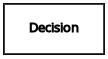
|
Business knowledge model |
Reusable function with one or more decision elements. Decisions that have the same logic but depend on different sub-input data or sub-decisions use business knowledge models to determine which procedure to follow. |

|
|
Knowledge source |
External authorities, documents, committees, or policies that regulate a decision or business knowledge model. Knowledge sources are references to real-world factors rather than executable business rules. |
||
Input data |
Information used in a decision node or a business knowledge model. Input data usually includes business-level concepts or objects relevant to the business, such as loan applicant data used in a lending strategy. |

|
|
Decision service |
Top-level decision containing a set of reusable decisions published as a service for invocation. A decision service can be invoked from an external application or a BPMN business process. |

|
|
Requirement connectors |
Information requirement |
Connection from an input data node or decision node to another decision node that requires the information. |

|
Knowledge requirement |
Connection from a business knowledge model to a decision node or to another business knowledge model that invokes the decision logic. |

|
|
Authority requirement |
Connection from an input data node or a decision node to a dependent knowledge source or from a knowledge source to a decision node, business knowledge model, or another knowledge source. |

|
|
Artifacts |
Text annotation |
Explanatory note associated with an input data node, decision node, business knowledge model, or knowledge source. |

|
Association |
Connection from an input data node, decision node, business knowledge model, or knowledge source to a text annotation. |

|
|
The following table summarizes the permitted connectors between DRD elements:
| Starts from | Connects to | Connection type | Example |
|---|---|---|---|
Decision |
Decision |
Information requirement |

|
Business knowledge model |
Decision |
Knowledge requirement |

|
Business knowledge model |

|
||
Decision service |
Decision |
Knowledge requirement |
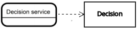
|
Business knowledge model |

|
||
Input data |
Decision |
Information requirement |

|
Knowledge source |
Authority requirement |

|
|
Knowledge source |
Decision |
Authority requirement |

|
Business knowledge model |

|
||
Knowledge source |

|
||
Decision |
Text annotation |
Association |
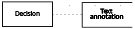
|
Business knowledge model |

|
||
Knowledge source |

|
||
Input data |

|
The following example DRD illustrates some of these DMN components in practice:

The following example DRD illustrates DMN components that are part of a reusable decision service:

In a DMN decision service node, the decision nodes in the bottom segment incorporate input data from outside of the decision service to arrive at a final decision in the top segment of the decision service node. The resulting top-level decisions from the decision service are then implemented in any subsequent decisions or business knowledge requirements of the DMN model. You can reuse DMN decision services in other DMN models to apply the same decision logic with different input data and different outgoing connections.
2.1.2.3. Rule expressions in FEEL
Friendly Enough Expression Language (FEEL) is an expression language defined by the Object Management Group (OMG) DMN specification. FEEL expressions define the logic of a decision in a DMN model. FEEL is designed to facilitate both decision modeling and execution by assigning semantics to the decision model constructs. FEEL expressions in decision requirements diagrams (DRDs) occupy table cells in boxed expressions for decision nodes and business knowledge models.
For more information about FEEL in DMN, see the OMG Decision Model and Notation specification.
Data types in FEEL
Friendly Enough Expression Language (FEEL) supports the following data types:
-
Numbers
-
Strings
-
Boolean values
-
Dates
-
Time
-
Date and time
-
Days and time duration
-
Years and months duration
-
Functions
-
Contexts
-
Ranges (or intervals)
-
Lists
The DMN specification currently does not provide an explicit way of declaring a variable as a function, context, range, or list, but Kogito extends the DMN built-in types to support variables of these types.
|
The following list describes each data type:
- Numbers
-
Numbers in FEEL are based on the IEEE 754-2008 Decimal 128 format, with 34 digits of precision. Internally, numbers are represented in Java as
BigDecimalswithMathContext DECIMAL128. FEEL supports only one number data type, so the same type is used to represent both integers and floating point numbers.FEEL numbers use a dot (
.) as a decimal separator. FEEL does not support-INF,+INF, orNaN. FEEL usesnullto represent invalid numbers.Kogito extends the DMN specification and supports additional number notations:
-
Scientific: You can use scientific notation with the suffix
e<exp>orE<exp>. For example,1.2e3is the same as writing the expression1.2*10**3, but is a literal instead of an expression. -
Hexadecimal: You can use hexadecimal numbers with the prefix
0x. For example,0xffis the same as the decimal number255. Both uppercase and lowercase letters are supported. For example,0XFFis the same as0xff. -
Type suffixes: You can use the type suffixes
f,F,d,D,l, andL. These suffixes are ignored.
-
- Strings
-
Strings in FEEL are any sequence of characters delimited by double quotation marks.
Example"John Doe"
- Boolean values
-
FEEL uses three-valued boolean logic, so a boolean logic expression may have values
true,false, ornull. - Dates
-
Date literals are not supported in FEEL, but you can use the built-in
date()function to construct date values. Date strings in FEEL follow the format defined in the XML Schema Part 2: Datatypes document. The format is"YYYY-MM-DD"whereYYYYis the year with four digits,MMis the number of the month with two digits, andDDis the number of the day.Example:
date( "2017-06-23" )
Date objects have time equal to
"00:00:00", which is midnight. The dates are considered to be local, without a timezone. - Time
-
Time literals are not supported in FEEL, but you can use the built-in
time()function to construct time values. Time strings in FEEL follow the format defined in the XML Schema Part 2: Datatypes document. The format is"hh:mm:ss[.uuu][(-)hh:mm]"` where `hh` is the hour of the day (from `00` to `23`), `mm` is the minutes in the hour, and `ss` is the number of seconds in the minute. Optionally, the string may define the number of milliseconds (`uuu`) within the second and contain a positive (`) or negative (-) offset from UTC time to define its timezone. Instead of using an offset, you can use the letterzto represent the UTC time, which is the same as an offset of-00:00. If no offset is defined, the time is considered to be local.Examples:
time( "04:25:12" ) time( "14:10:00+02:00" ) time( "22:35:40.345-05:00" ) time( "15:00:30z" )
Time values that define an offset or a timezone cannot be compared to local times that do not define an offset or a timezone.
- Date and time
-
Date and time literals are not supported in FEEL, but you can use the built-in
date and time()function to construct date and time values. Date and time strings in FEEL follow the format defined in the XML Schema Part 2: Datatypes document. The format is"<date>T<time>", where<date>and<time>follow the prescribed XML schema formatting, conjoined byT.Examples:
date and time( "2017-10-22T23:59:00" ) date and time( "2017-06-13T14:10:00+02:00" ) date and time( "2017-02-05T22:35:40.345-05:00" ) date and time( "2017-06-13T15:00:30z" )
Date and time values that define an offset or a timezone cannot be compared to local date and time values that do not define an offset or a timezone.
If your implementation of the DMN specification does not support spaces in the XML schema, use the keyword dateTimeas a synonym ofdate and time. - Days and time duration
-
Days and time duration literals are not supported in FEEL, but you can use the built-in
duration()function to construct days and time duration values. Days and time duration strings in FEEL follow the format defined in the XML Schema Part 2: Datatypes document, but are restricted to only days, hours, minutes and seconds. Months and years are not supported.Examples:
duration( "P1DT23H12M30S" ) duration( "P23D" ) duration( "PT12H" ) duration( "PT35M" )
If your implementation of the DMN specification does not support spaces in the XML schema, use the keyword dayTimeDurationas a synonym ofdays and time duration. - Years and months duration
-
Years and months duration literals are not supported in FEEL, but you can use the built-in
duration()function to construct days and time duration values. Years and months duration strings in FEEL follow the format defined in the XML Schema Part 2: Datatypes document, but are restricted to only years and months. Days, hours, minutes, or seconds are not supported.Examples:
duration( "P3Y5M" ) duration( "P2Y" ) duration( "P10M" ) duration( "P25M" )
If your implementation of the DMN specification does not support spaces in the XML schema, use the keyword yearMonthDurationas a synonym ofyears and months duration. - Functions
-
FEEL has
functionliterals (or anonymous functions) that you can use to create functions. The DMN specification currently does not provide an explicit way of declaring a variable as afunction, but Kogito extends the DMN built-in types to support variables of functions.Example:
function(a, b) a + b
In this example, the FEEL expression creates a function that adds the parameters
aandband returns the result. - Contexts
-
FEEL has
contextliterals that you can use to create contexts. Acontextin FEEL is a list of key and value pairs, similar to maps in languages like Java. The DMN specification currently does not provide an explicit way of declaring a variable as acontext, but Kogito extends the DMN built-in types to support variables of contexts.Example:
{ x : 5, y : 3 }In this example, the expression creates a context with two entries,
xandy, representing a coordinate in a chart.In DMN 1.2, another way to create contexts is to create an item definition that contains the list of keys as attributes, and then declare the variable as having that item definition type.
The Kogito DMN API supports DMN
ItemDefinitionstructural types in aDMNContextrepresented in two ways:-
User-defined Java type: Must be a valid JavaBeans object defining properties and getters for each of the components in the DMN
ItemDefinition. If necessary, you can also use the@FEELPropertyannotation for those getters representing a component name which would result in an invalid Java identifier. -
java.util.Mapinterface: The map needs to define the appropriate entries, with the keys corresponding to the component name in the DMNItemDefinition.
-
- Ranges (or intervals)
-
FEEL has
rangeliterals that you can use to create ranges or intervals. Arangein FEEL is a value that defines a lower and an upper bound, where either can be open or closed. The DMN specification currently does not provide an explicit way of declaring a variable as arange, but Kogito extends the DMN built-in types to support variables of ranges.The syntax of a range is defined in the following formats:
range := interval_start endpoint '..' endpoint interval_end interval_start := open_start | closed_start open_start := '(' | ']' closed_start := '[' interval_end := open_end | closed_end open_end := ')' | '[' closed_end := ']' endpoint := expressionThe expression for the endpoint must return a comparable value, and the lower bound endpoint must be lower than the upper bound endpoint.
For example, the following literal expression defines an interval between
1and10, including the boundaries (a closed interval on both endpoints):[ 1 .. 10 ]
The following literal expression defines an interval between 1 hour and 12 hours, including the lower boundary (a closed interval), but excluding the upper boundary (an open interval):
[ duration("PT1H") .. duration("PT12H") )You can use ranges in decision tables to test for ranges of values, or use ranges in simple literal expressions. For example, the following literal expression returns
trueif the value of a variablexis between0and100:x in [ 1 .. 100 ]
- Lists
-
FEEL has
listliterals that you can use to create lists of items. Alistin FEEL is represented by a comma-separated list of values enclosed in square brackets. The DMN specification currently does not provide an explicit way of declaring a variable as alist, but Kogito extends the DMN built-in types to support variables of lists.Example:
[ 2, 3, 4, 5 ]
All lists in FEEL contain elements of the same type and are immutable. Elements in a list can be accessed by index, where the first element is
1. Negative indexes can access elements starting from the end of the list so that-1is the last element.For example, the following expression returns the second element of a list
x:x[2]
The following expression returns the second-to-last element of a list
x:x[-2]
Elements in a list can also be counted by the function
count, which uses the list of elements as the parameter.For example, the following expression returns
4:count([ 2, 3, 4, 5 ])
Built-in functions in FEEL
To promote interoperability with other platforms and systems, Friendly Enough Expression Language (FEEL) includes a library of built-in functions. The built-in FEEL functions are implemented in the Drools Decision Model and Notation (DMN) engine so that you can use the functions in your DMN decision services.
The following sections describe each built-in FEEL function, listed in the format NAME( PARAMETERS ). For more information about FEEL functions in DMN, see the OMG Decision Model and Notation specification.
The following functions support conversion between values of different types. Some of these functions use specific string formats, such as the following examples:
-
date string: Follows the format defined in the XML Schema Part 2: Datatypes document, such as2020-06-01 -
time string: Follows one of the following formats:-
Format defined in the XML Schema Part 2: Datatypes document, such as
23:59:00z -
Format for a local time defined by ISO 8601 followed by
@and an IANA Timezone, such as00:01:00@Etc/UTC
-
-
date time string: Follows the format of adate stringfollowed byTand atime string, such as2012-12-25T11:00:00Z -
duration string: Follows the format ofdays and time durationandyears and months durationdefined in the XQuery 1.0 and XPath 2.0 Data Model, such asP1Y2M
- date( from ) - using date
-
Converts
fromto adatevalue.Table 10. Parameters Parameter Type Format fromstringdate stringExampledate( "2012-12-25" ) - date( "2012-12-24" ) = duration( "P1D" )
- date( from ) - using date and time
-
Converts
fromto adatevalue and sets time components to null.Table 11. Parameters Parameter Type fromdate and timeExampledate(date and time( "2012-12-25T11:00:00Z" )) = date( "2012-12-25" )
- date( year, month, day )
-
Produces a
datefrom the specified year, month, and day values.Table 12. Parameters Parameter Type yearnumbermonthnumberdaynumberExampledate( 2012, 12, 25 ) = date( "2012-12-25" )
- date and time( date, time )
-
Produces a
date and timefrom the specified date and ignores any time components and the specified time.Table 13. Parameters Parameter Type datedateordate and timetimetimeExampledate and time ( "2012-12-24T23:59:00" ) = date and time(date( "2012-12-24" ), time( "23:59:00" ))
- date and time( from )
-
Produces a
date and timefrom the specified string.Table 14. Parameters Parameter Type Format fromstringdate time stringExampledate and time( "2012-12-24T23:59:00" ) + duration( "PT1M" ) = date and time( "2012-12-25T00:00:00" )
- time( from )
-
Produces a
timefrom the specified string.Table 15. Parameters Parameter Type Format fromstringtime stringExampletime( "23:59:00z" ) + duration( "PT2M" ) = time( "00:01:00@Etc/UTC" )
- time( from )
-
Produces a
timefrom the specified parameter and ignores any date components.Table 16. Parameters Parameter Type fromtimeordate and timeExampletime(date and time( "2012-12-25T11:00:00Z" )) = time( "11:00:00Z" )
- time( hour, minute, second, offset? )
-
Produces a
timefrom the specified hour, minute, and second component values.Table 17. Parameters Parameter Type hournumberminutenumbersecondnumberoffset(Optional)days and time durationor nullExampletime( "23:59:00z" ) = time(23, 59, 0, duration( "PT0H" ))
- number( from, grouping separator, decimal separator )
-
Converts
fromto anumberusing the specified separators.Table 18. Parameters Parameter Type fromstringrepresenting a valid numbergrouping separatorSpace ( ), comma (
,), period (.), or nulldecimal separatorSame types as
grouping separator, but the values cannot matchExamplenumber( "1 000,0", " ", "," ) = number( "1,000.0", ",", "." )
- string( from )
-
Provides a string representation of the specified parameter.
Table 19. Parameters Parameter Type fromNon-null value
Examplesstring( 1.1 ) = "1.1" string( null ) = null
- duration( from )
-
Converts
fromto adays and time durationvalue oryears and months durationvalue.Table 20. Parameters Parameter Type Format fromstringduration stringExamplesdate and time( "2012-12-24T23:59:00" ) - date and time( "2012-12-22T03:45:00" ) = duration( "P2DT20H14M" ) duration( "P2Y2M" ) = duration( "P26M" )
- years and months duration( from, to )
-
Calculates the
years and months durationbetween the two specified parameters.Table 21. Parameters Parameter Type fromdateordate and timetodateordate and timeExampleyears and months duration( date( "2011-12-22" ), date( "2013-08-24" ) ) = duration( "P1Y8M" )
The following functions support Boolean operations.
- not( negand )
-
Performs the logical negation of the
negandoperand.Table 22. Parameters Parameter Type negandbooleanExamplesnot( true ) = false not( null ) = null
The following functions support string operations.
| In FEEL, Unicode characters are counted based on their code points. |
- substring( string, start position, length? )
-
Returns the substring from the start position for the specified length. The first character is at position value
1.Table 23. Parameters Parameter Type stringstringstart positionnumberlength(Optional)numberExamplessubstring( "testing",3 ) = "sting" substring( "testing",3,3 ) = "sti" substring( "testing", -2, 1 ) = "n" substring( "\U01F40Eab", 2 ) = "ab"In FEEL, the string literal "\U01F40Eab"is the🐎abstring (horse symbol followed byaandb).
- string length( string )
-
Calculates the length of the specified string.
Table 24. Parameters Parameter Type stringstringExamplesstring length( "tes" ) = 3 string length( "\U01F40Eab" ) = 3
- upper case( string )
-
Produces an uppercase version of the specified string.
Table 25. Parameters Parameter Type stringstringExampleupper case( "aBc4" ) = "ABC4"
- lower case( string )
-
Produces a lowercase version of the specified string.
Table 26. Parameters Parameter Type stringstringExamplelower case( "aBc4" ) = "abc4"
- substring before( string, match )
-
Calculates the substring before the match.
Table 27. Parameters Parameter Type stringstringmatchstringExamplessubstring before( "testing", "ing" ) = "test" substring before( "testing", "xyz" ) = ""
- substring after( string, match )
-
Calculates the substring after the match.
Table 28. Parameters Parameter Type stringstringmatchstringExamplessubstring after( "testing", "test" ) = "ing" substring after( "", "a" ) = ""
- replace( input, pattern, replacement, flags? )
-
Calculates the regular expression replacement.
Table 29. Parameters Parameter Type inputstringpatternstringreplacementstringflags(Optional)stringThis function uses regular expression parameters as defined in XQuery 1.0 and XPath 2.0 Functions and Operators. Examplereplace( "banana", "a", "o" ) = "bonono" replace( "abcd", "(ab)|(a)", "[1=$1][2=$2]" ) = "[1=ab][2=]cd"
- contains( string, match )
-
Returns
trueif the string contains the match.Table 30. Parameters Parameter Type stringstringmatchstringExamplecontains( "testing", "to" ) = false
- starts with( string, match )
-
Returns
trueif the string starts with the matchTable 31. Parameters Parameter Type stringstringmatchstringExamplestarts with( "testing", "te" ) = true
- ends with( string, match )
-
Returns
trueif the string ends with the match.Table 32. Parameters Parameter Type stringstringmatchstringExampleends with( "testing", "g" ) = true - matches( input, pattern, flags? )
-
Returns
trueif the input matches the regular expression.Table 33. Parameters Parameter Type inputstringpatternstringflags(Optional)stringThis function uses regular expression parameters as defined in XQuery 1.0 and XPath 2.0 Functions and Operators. Examplematches( "teeesting", "^te*sting" ) = true - split( string, delimiter )
-
Returns a list of the original string and splits it at the delimiter regular expression pattern.
Table 34. Parameters Parameter Type stringstringdelimiterstringfor a regular expression patternThis function uses regular expression parameters as defined in XQuery 1.0 and XPath 2.0 Functions and Operators. Examplessplit( "John Doe", "\\s" ) = ["John", "Doe"] split( "a;b;c;;", ";" ) = ["a","b","c","",""] - string join( list, delimiter )
-
Returns a string which is composed by joining all the string elements from the list parameter, separated by the delimiter. The
delimitercan be an empty string. Null elements in the list parameter are ignored. Iflistis empty, the result is the empty string. Ifdelimiteris null, the string elements are joined without a separator.Table 35. Parameters Parameter Type listlistofstringdelimiterstringExamplesstring join(["a","b","c"], "_and_") = "a_and_b_and_c" string join(["a","b","c"], "") = "abc" string join(["a","b","c"], null) = "abc" string join(["a"], "X") = "a" string join(["a",null,"c"], "X") = "aXc" string join([], "X") = "" - string join( list )
-
Returns a string which is composed by joining all the string elements from the list parameter. Null elements in the
listparameter are ignored. Iflistis empty, the result is the empty string.Table 36. Parameters Parameter Type listlistofstringExamplesstring join(["a","b","c"]) = "abc" string join(["a",null,"c"]) = "ac" string join([]) = ""
The following functions support list operations.
In FEEL, the index of the first element in a list is 1. The index of the last element in a list can be identified as -1.
|
- list contains( list, element )
-
Returns
trueif the list contains the element.Table 37. Parameters Parameter Type listlistelementAny type, including null
Examplelist contains( [1,2,3], 2 ) = true - count( list )
-
Counts the elements in the list.
Table 38. Parameters Parameter Type listlistExamplescount( [1,2,3] ) = 3 count( [] ) = 0 count( [1,[2,3]] ) = 2 - min( list )
-
Returns the minimum comparable element in the list.
Table 39. Parameters Parameter Type listlistAlternative signaturemin( e1, e2, ..., eN )
Examplesmin( [1,2,3] ) = 1 min( 1 ) = 1 min( [1] ) = 1 - max( list )
-
Returns the maximum comparable element in the list.
Table 40. Parameters Parameter Type listlistAlternative signaturemax( e1, e2, ..., eN )
Examplesmax( 1,2,3 ) = 3 max( [] ) = null - sum( list )
-
Returns the sum of the numbers in the list.
Table 41. Parameters Parameter Type listlistofnumberelementsAlternative signaturesum( n1, n2, ..., nN )
Examplessum( [1,2,3] ) = 6 sum( 1,2,3 ) = 6 sum( 1 ) = 1 sum( [] ) = null - mean( list )
-
Calculates the average (arithmetic mean) of the elements in the list.
Table 42. Parameters Parameter Type listlistofnumberelementsAlternative signaturemean( n1, n2, ..., nN )
Examplesmean( [1,2,3] ) = 2 mean( 1,2,3 ) = 2 mean( 1 ) = 1 mean( [] ) = null - all( list )
-
Returns
trueif all elements in the list are true.Table 43. Parameters Parameter Type listlistofbooleanelementsAlternative signatureall( b1, b2, ..., bN )
Examplesall( [false,null,true] ) = false all( true ) = true all( [true] ) = true all( [] ) = true all( 0 ) = null - any( list )
-
Returns
trueif any element in the list is true.Table 44. Parameters Parameter Type listlistofbooleanelementsAlternative signatureany( b1, b2, ..., bN )
Examplesany( [false,null,true] ) = true any( false ) = false any( [] ) = false any( 0 ) = null - sublist( list, start position, length? )
-
Returns the sublist from the start position, limited to the length elements.
Table 45. Parameters Parameter Type listliststart positionnumberlength(Optional)numberExamplesublist( [4,5,6], 1, 2 ) = [4,5] - append( list, item )
-
Creates a list that is appended to the item or items.
Table 46. Parameters Parameter Type listlistitemAny type
Exampleappend( [1], 2, 3 ) = [1,2,3] - concatenate( list )
-
Creates a list that is the result of the concatenated lists.
Table 47. Parameters Parameter Type listlistExampleconcatenate( [1,2],[3] ) = [1,2,3] - insert before( list, position, newItem )
-
Creates a list with the
newIteminserted at the specified position.Table 48. Parameters Parameter Type listlistpositionnumbernewItemAny type
Exampleinsert before( [1,3],1,2 ) = [2,1,3] - remove( list, position )
-
Creates a list with the removed element excluded from the specified position.
Table 49. Parameters Parameter Type listlistpositionnumberExampleremove( [1,2,3], 2 ) = [1,3] - reverse( list )
-
Returns a reversed list.
Table 50. Parameters Parameter Type listlistExamplereverse( [1,2,3] ) = [3,2,1] - index of( list, match )
-
Returns indexes matching the element.
Parameters-
listof typelist -
matchof any type
Table 51. Parameters Parameter Type listlistmatchAny type
Exampleindex of( [1,2,3,2],2 ) = [2,4] -
- union( list )
-
Returns a list of all the elements from multiple lists and excludes duplicates.
Table 52. Parameters Parameter Type listlistExampleunion( [1,2],[2,3] ) = [1,2,3] - distinct values( list )
-
Returns a list of elements from a single list and excludes duplicates.
Table 53. Parameters Parameter Type listlistExampledistinct values( [1,2,3,2,1] ) = [1,2,3] - flatten( list )
-
Returns a flattened list.
Table 54. Parameters Parameter Type listlistExampleflatten( [[1,2],[[3]], 4] ) = [1,2,3,4] - product( list )
-
Returns the product of the numbers in the list.
Table 55. Parameters Parameter Type listlistofnumberelementsAlternative signatureproduct( n1, n2, ..., nN )
Examplesproduct( [2, 3, 4] ) = 24 product( [] ) = null product( 2, 3, 4 ) = 24 - median( list )
-
Returns the median of the numbers in the list. If the number of elements is odd, the result is the middle element. If the number of elements is even, the result is the average of the two middle elements.
Table 56. Parameters Parameter Type listlistofnumberelementsAlternative signaturemedian( n1, n2, ..., nN )
Examplesmedian( 8, 2, 5, 3, 4 ) = 4 median( [6, 1, 2, 3] ) = 2.5 median( [ ] ) = null - stddev( list )
-
Returns the standard deviation of the numbers in the list.
Table 57. Parameters Parameter Type listlistofnumberelementsAlternative signaturestddev( n1, n2, ..., nN )
Examplesstddev( 2, 4, 7, 5 ) = 2.081665999466132735282297706979931 stddev( [47] ) = null stddev( 47 ) = null stddev( [ ] ) = null - mode( list )
-
Returns the mode of the numbers in the list. If multiple elements are returned, the numbers are sorted in ascending order.
Table 58. Parameters Parameter Type listlistofnumberelementsAlternative signaturemode( n1, n2, ..., nN )
Examplesmode( 6, 3, 9, 6, 6 ) = [6] mode( [6, 1, 9, 6, 1] ) = [1, 6] mode( [ ] ) = [ ]
The following functions support number operations.
- decimal( n, scale )
-
Returns a number with the specified scale.
Table 59. Parameters Parameter Type nnumberscalenumberin the range[−6111..6176]This function is implemented to be consistent with the FEEL:numberdefinition for rounding decimal numbers to the nearest even decimal number.Examplesdecimal( 1/3, 2 ) = .33 decimal( 1.5, 0 ) = 2 decimal( 2.5, 0 ) = 2 decimal( 1.035, 2 ) = 1.04 decimal( 1.045, 2 ) = 1.04 decimal( 1.055, 2 ) = 1.06 decimal( 1.065, 2 ) = 1.06 - floor( n )
-
Returns
nwith given scale and rounding mode flooring. If at least one ofnorscaleis null, the result is null.Table 60. Parameters Parameter Type nnumberAlternative signaturefloor( n, scale )
Examplesfloor( 1.5 ) = 1 floor( -1.56, 1 ) = -1.6 floor( -1.5 ) = -2 - ceiling( n )
-
Returns
nwith given scale and rounding mode ceiling. If at least one ofnorscaleis null, the result is null.Table 61. Parameters Parameter Type nnumberAlternative signatureceiling( n, scale )
Examplesceiling( 1.5 ) = 2 ceiling( -1.56, 1 ) = -1.5 ceiling( -1.5 ) = -1 - round up( n, scale )
-
Returns
nwith given scale and rounding mode round up. If at least one ofnorscaleis null, the result is null.Table 62. Parameters Parameter Type nnumberscalenumberExamplesround up( 5.5, 0 ) = 6 round up( -5.5, 0 ) = -6 round up( 1.121, 2 ) = 1.13 round up( -1.126, 2 ) = -1.13 - round down( n, scale )
-
Returns
nwith given scale and rounding mode round down. If at least one ofnorscaleis null, the result is null.Table 63. Parameters Parameter Type nnumberscalenumberExamplesround down( 5.5, 0 ) = 5 round down( -5.5, 0 ) = -5 round down( 1.121, 2 ) = 1.12 round down( -1.126, 2 ) = -1.12 - round half up( n, scale )
-
Returns
nwith given scale and rounding mode round half up. If at least one ofnorscaleis null, the result is null.Table 64. Parameters Parameter Type nnumberscalenumberExamplesround half up( 5.5, 0 ) = 6 round half up( -5.5, 0 ) = -6 round half up( 1.121, 2 ) = 1.12 round half up( -1.126, 2 ) = -1.13 - round half down( n, scale )
-
Returns
nwith given scale and rounding mode round half down. If at least one ofnorscaleis null, the result is null.Table 65. Parameters Parameter Type nnumberscalenumberExamplesround half down( 5.5, 0 ) = 5 round half down( -5.5, 0 ) = -5 round half down( 1.121, 2 ) = 1.12 round half down( -1.126, 2 ) = -1.13 - abs( n )
-
Returns the absolute value.
Table 66. Parameters Parameter Type nnumber,days and time duration, oryears and months durationExamplesabs( 10 ) = 10 abs( -10 ) = 10 abs( @"PT5H" ) = @"PT5H" abs( @"-PT5H" ) = @"PT5H" - modulo( dividend, divisor )
-
Returns the remainder of the division of the dividend by the divisor. If either the dividend or divisor is negative, the result is of the same sign as the divisor.
This function is also expressed as modulo(dividend, divisor) = dividend - divisor*floor(dividen d/divisor).Table 67. Parameters Parameter Type dividendnumberdivisornumberExamplesmodulo( 12, 5 ) = 2 modulo( -12,5 )= 3 modulo( 12,-5 )= -3 modulo( -12,-5 )= -2 modulo( 10.1, 4.5 )= 1.1 modulo( -10.1, 4.5 )= 3.4 modulo( 10.1, -4.5 )= -3.4 modulo( -10.1, -4.5 )= -1.1 - sqrt( number )
-
Returns the square root of the specified number.
Table 68. Parameters Parameter Type nnumberExamplesqrt( 16 ) = 4 - log( number )
-
Returns the logarithm of the specified number.
Table 69. Parameters Parameter Type nnumberExampledecimal( log( 10 ), 2 ) = 2.30 - exp( number )
-
Returns Euler’s number
eraised to the power of the specified number.Table 70. Parameters Parameter Type nnumberExampledecimal( exp( 5 ), 2 ) = 148.41 - odd( number )
-
Returns
trueif the specified number is odd.Table 71. Parameters Parameter Type nnumberExamplesodd( 5 ) = true odd( 2 ) = false - even( number )
-
Returns
trueif the specified number is even.Table 72. Parameters Parameter Type nnumberExampleseven( 5 ) = false even ( 2 ) = true
The following functions support date and time operations.
- is( value1, value2 )
-
Returns
trueif both values are the same element in the FEEL semantic domain.Table 73. Parameters Parameter Type value1Any type
value2Any type
Examplesis( date( "2012-12-25" ), time( "23:00:50" ) ) = false is( date( "2012-12-25" ), date( "2012-12-25" ) ) = true is( time( "23:00:50z" ), time( "23:00:50" ) ) = false is( time( "23:00:50z" ), time( "23:00:50+00:00" ) ) = true
The following functions support temporal ordering operations to establish relationships between single scalar values and ranges of such values. These functions are similar to the components in the Health Level Seven (HL7) International Clinical Quality Language (CQL) 1.4 syntax.
- before( )
-
Returns
truewhen an elementAis before an elementBand when the relevant requirements for evaluating totrueare also met.Signatures-
before( point1 point2 ) -
before( point range ) -
before( range point ) -
before( range1,range2 )
Requirements for evaluating totrue-
point1 < point2 -
point < range.start or ( point = range.start and not(range.start included) ) -
range.end < point or ( range.end = point and not(range.end included) ) -
range1.end < range2.start or (( not(range1.end included) or not(range2.start included) ) and range1.end = range2.start )
Examplesbefore( 1, 10 ) = true before( 10, 1 ) = false before( 1, [1..10] ) = false before( 1, (1..10] ) = true before( 1, [5..10] ) = true before( [1..10], 10 ) = false before( [1..10), 10 ) = true before( [1..10], 15 ) = true before( [1..10], [15..20] ) = true before( [1..10], [10..20] ) = false before( [1..10), [10..20] ) = true before( [1..10], (10..20] ) = true -
- after( )
-
Returns
truewhen an elementAis after an elementBand when the relevant requirements for evaluating totrueare also met.Signatures-
after( point1 point2 ) -
after( point range ) -
after( range, point ) -
after( range1 range2 )
Requirements for evaluating totrue-
point1 > point2 -
point > range.end or ( point = range.end and not(range.end included) ) -
range.start > point or ( range.start = point and not(range.start included) ) -
range1.start > range2.end or (( not(range1.start included) or not(range2.end included) ) and range1.start = range2.end )
Examplesafter( 10, 5 ) = true after( 5, 10 ) = false after( 12, [1..10] ) = true after( 10, [1..10) ) = true after( 10, [1..10] ) = false after( [11..20], 12 ) = false after( [11..20], 10 ) = true after( (11..20], 11 ) = true after( [11..20], 11 ) = false after( [11..20], [1..10] ) = true after( [1..10], [11..20] ) = false after( [11..20], [1..11) ) = true after( (11..20], [1..11] ) = true -
- meets( )
-
Returns
truewhen an elementAmeets an elementBand when the relevant requirements for evaluating totrueare also met.Signatures-
meets( range1, range2 )
Requirements for evaluating totrue-
range1.end included and range2.start included and range1.end = range2.start
Examplesmeets( [1..5], [5..10] ) = true meets( [1..5), [5..10] ) = false meets( [1..5], (5..10] ) = false meets( [1..5], [6..10] ) = false -
- met by( )
-
Returns
truewhen an elementAis met by an elementBand when the relevant requirements for evaluating totrueare also met.Signatures-
met by( range1, range2 )
Requirements for evaluating totrue-
range1.start included and range2.end included and range1.start = range2.end
Examplesmet by( [5..10], [1..5] ) = true met by( [5..10], [1..5) ) = false met by( (5..10], [1..5] ) = false met by( [6..10], [1..5] ) = false -
- overlaps( )
-
Returns
truewhen an elementAoverlaps an elementBand when the relevant requirements for evaluating totrueare also met.Signatures-
overlaps( range1, range2 )
Requirements for evaluating totrue-
( range1.end > range2.start or (range1.end = range2.start and range1.end included and range2.end included) ) and ( range1.start < range2.end or (range1.start = range2.end and range1.start included and range2.end included) )
Examplesoverlaps( [1..5], [3..8] ) = true overlaps( [3..8], [1..5] ) = true overlaps( [1..8], [3..5] ) = true overlaps( [3..5], [1..8] ) = true overlaps( [1..5], [6..8] ) = false overlaps( [6..8], [1..5] ) = false overlaps( [1..5], [5..8] ) = true overlaps( [1..5], (5..8] ) = false overlaps( [1..5), [5..8] ) = false overlaps( [1..5), (5..8] ) = false overlaps( [5..8], [1..5] ) = true overlaps( (5..8], [1..5] ) = false overlaps( [5..8], [1..5) ) = false overlaps( (5..8], [1..5) ) = false -
- overlaps before( )
-
Returns
truewhen an elementAoverlaps before an elementBand when the relevant requirements for evaluating totrueare also met.Signatures-
overlaps before( range1 range2 )
Requirements for evaluating totrue-
( range1.start < range2.start or (range1.start = range2.start and range1.start included and not(range2.start included)) ) and ( range1.end > range2.start or (range1.end = range2.start and range1.end included and range2.start included) ) and ( range1.end < range2.end or (range1.end = range2.end and (not(range1.end included) or range2.end included )) )
Examplesoverlaps before( [1..5], [3..8] ) = true overlaps before( [1..5], [6..8] ) = false overlaps before( [1..5], [5..8] ) = true overlaps before( [1..5], (5..8] ) = false overlaps before( [1..5), [5..8] ) = false overlaps before( [1..5), (1..5] ) = true overlaps before( [1..5], (1..5] ) = true overlaps before( [1..5), [1..5] ) = false overlaps before( [1..5], [1..5] ) = false -
- overlaps after( )
-
Returns
truewhen an elementAoverlaps after an elementBand when the relevant requirements for evaluating totrueare also met.Signatures-
overlaps after( range1 range2 )
Requirements for evaluating totrue-
( range2.start < range1.start or (range2.start = range1.start and range2.start included and not( range1.start included)) ) and ( range2.end > range1.start or (range2.end = range1.start and range2.end included and range1.start included) ) and ( range2.end < range1.end or (range2.end = range1.end and (not(range2.end included) or range1.end included)) )
Examplesoverlaps after( [3..8], [1..5] )= true overlaps after( [6..8], [1..5] )= false overlaps after( [5..8], [1..5] )= true overlaps after( (5..8], [1..5] )= false overlaps after( [5..8], [1..5) )= false overlaps after( (1..5], [1..5) )= true overlaps after( (1..5], [1..5] )= true overlaps after( [1..5], [1..5) )= false overlaps after( [1..5], [1..5] )= false overlaps after( (1..5), [1..5] )= false overlaps after( (1..5], [1..6] )= false overlaps after( (1..5], (1..5] )= false overlaps after( (1..5], [2..5] )= false -
- finishes( )
-
Returns
truewhen an elementAfinishes an elementBand when the relevant requirements for evaluating totrueare also met.Signatures-
finishes( point, range ) -
finishes( range1, range2 )
Requirements for evaluating totrue-
range.end included and range.end = point -
range1.end included = range2.end included and range1.end = range2.end and ( range1.start > range2.start or (range1.start = range2.start and (not(range1.start included) or range2.start included)) )
Examplesfinishes( 10, [1..10] ) = true finishes( 10, [1..10) ) = false finishes( [5..10], [1..10] ) = true finishes( [5..10), [1..10] ) = false finishes( [5..10), [1..10) ) = true finishes( [1..10], [1..10] ) = true finishes( (1..10], [1..10] ) = true -
- finished by( )
-
Returns
truewhen an elementAis finished by an elementBand when the relevant requirements for evaluating totrueare also met.Signatures-
finished by( range, point ) -
finished by( range1 range2 )
Requirements for evaluating totrue-
range.end included and range.end = point -
range1.end included = range2.end included and range1.end = range2.end and ( range1.start < range2.start or (range1.start = range2.start and (range1.start included or not(range2.start included))) )
Examplesfinished by( [1..10], 10 ) = true finished by( [1..10), 10 ) = false finished by( [1..10], [5..10] ) = true finished by( [1..10], [5..10) ) = false finished by( [1..10), [5..10) ) = true finished by( [1..10], [1..10] ) = true finished by( [1..10], (1..10] ) = true -
- includes( )
-
Returns
truewhen an elementAincludes an elementBand when the relevant requirements for evaluating totrueare also met.Signatures-
includes( range, point ) -
includes( range1, range2 )
Requirements for evaluating totrue-
(range.start < point and range.end > point) or (range.start = point and range.start included) or (range.end = point and range.end included) -
( range1.start < range2.start or (range1.start = range2.start and (range1.start included or not(range2.start included))) ) and ( range1.end > range2.end or (range1.end = range2.end and (range1.end included or not(range2.end included))) )
Examplesincludes( [1..10], 5 ) = true includes( [1..10], 12 ) = false includes( [1..10], 1 ) = true includes( [1..10], 10 ) = true includes( (1..10], 1 ) = false includes( [1..10), 10 ) = false includes( [1..10], [4..6] ) = true includes( [1..10], [1..5] ) = true includes( (1..10], (1..5] ) = true includes( [1..10], (1..10) ) = true includes( [1..10), [5..10) ) = true includes( [1..10], [1..10) ) = true includes( [1..10], (1..10] ) = true includes( [1..10], [1..10] ) = true -
- during( )
-
Returns
truewhen an elementAis during an elementBand when the relevant requirements for evaluating totrueare also met.Signatures-
during( point, range ) -
during( range1 range2 )
Requirements for evaluating totrue-
(range.start < point and range.end > point) or (range.start = point and range.start included) or (range.end = point and range.end included) -
( range2.start < range1.start or (range2.start = range1.start and (range2.start included or not(range1.start included))) ) and ( range2.end > range1.end or (range2.end = range1.end and (range2.end included or not(range1.end included))) )
Examplesduring( 5, [1..10] ) = true during( 12, [1..10] ) = false during( 1, [1..10] ) = true during( 10, [1..10] ) = true during( 1, (1..10] ) = false during( 10, [1..10) ) = false during( [4..6], [1..10] ) = true during( [1..5], [1..10] ) = true during( (1..5], (1..10] ) = true during( (1..10), [1..10] ) = true during( [5..10), [1..10) ) = true during( [1..10), [1..10] ) = true during( (1..10], [1..10] ) = true during( [1..10], [1..10] ) = true -
- starts( )
-
Returns
truewhen an elementAstarts an elementBand when the relevant requirements for evaluating totrueare also met.Signatures-
starts( point, range ) -
starts( range1, range2 )
Requirements for evaluating totrue-
range.start = point and range.start included -
range1.start = range2.start and range1.start included = range2.start included and ( range1.end < range2.end or (range1.end = range2.end and (not(range1.end included) or range2.end included)) )
Examplesstarts( 1, [1..10] ) = true starts( 1, (1..10] ) = false starts( 2, [1..10] ) = false starts( [1..5], [1..10] ) = true starts( (1..5], (1..10] ) = true starts( (1..5], [1..10] ) = false starts( [1..5], (1..10] ) = false starts( [1..10], [1..10] ) = true starts( [1..10), [1..10] ) = true starts( (1..10), (1..10) ) = true -
- started by( )
-
Returns
truewhen an elementAis started by an elementBand when the relevant requirements for evaluating totrueare also met.Signatures-
started by( range, point ) -
started by( range1, range2 )
Requirements for evaluating totrue-
range.start = point and range.start included -
range1.start = range2.start and range1.start included = range2.start included and ( range2.end < range1.end or (range2.end = range1.end and (not(range2.end included) or range1.end included)) )
Examplesstarted by( [1..10], 1 ) = true started by( (1..10], 1 ) = false started by( [1..10], 2 ) = false started by( [1..10], [1..5] ) = true started by( (1..10], (1..5] ) = true started by( [1..10], (1..5] ) = false started by( (1..10], [1..5] ) = false started by( [1..10], [1..10] ) = true started by( [1..10], [1..10) ) = true started by( (1..10), (1..10) ) = true -
- coincides( )
-
Returns
truewhen an elementAcoincides with an elementBand when the relevant requirements for evaluating totrueare also met.Signatures-
coincides( point1, point2 ) -
coincides( range1, range2 )
Requirements for evaluating totrue-
point1 = point2 -
range1.start = range2.start and range1.start included = range2.start included and range1.end = range2.end and range1.end included = range2.end included
Examplescoincides( 5, 5 ) = true coincides( 3, 4 ) = false coincides( [1..5], [1..5] ) = true coincides( (1..5), [1..5] ) = false coincides( [1..5], [2..6] ) = false -
The following functions support general temporal operations.
- day of year( date )
-
Returns the Gregorian number of the day of the year.
Table 74. Parameters Parameter Type datedateordate and timeExampleday of year( date(2019, 9, 17) ) = 260 - day of week( date )
-
Returns the Gregorian day of the week:
"Monday","Tuesday","Wednesday","Thursday","Friday","Saturday", or"Sunday".Table 75. Parameters Parameter Type datedateordate and timeExampleday of week( date(2019, 9, 17) ) = "Tuesday" - month of year( date )
-
Returns the Gregorian month of the year:
"January","February","March","April","May","June","July","August","September","October","November", or"December".Table 76. Parameters Parameter Type datedateordate and timeExamplemonth of year( date(2019, 9, 17) ) = "September" - month of year( date )
-
Returns the Gregorian week of the year as defined by ISO 8601.
Table 77. Parameters Parameter Type datedateordate and timeExamplesweek of year( date(2019, 9, 17) ) = 38 week of year( date(2003, 12, 29) ) = 1 week of year( date(2004, 1, 4) ) = 1 week of year( date(2005, 1, 1) ) = 53 week of year( date(2005, 1, 3) ) = 1 week of year( date(2005, 1, 9) ) = 1
The following functions support sorting operations.
- sort( list, precedes )
-
Returns a list of the same elements but ordered according to the sorting function.
Table 78. Parameters Parameter Type listlistprecedesfunctionExamplesort( list: [3,1,4,5,2], precedes: function(x,y) x < y ) = [1,2,3,4,5]
The following functions support context operations.
- get value( m, key )
-
Returns the value from the context for the specified entry key.
Table 79. Parameters Parameter Type mcontextkeystringExamplesget value( {key1 : "value1"}, "key1" ) = "value1" get value( {key1 : "value1"}, "unexistent-key" ) = null - get entries( m )
-
Returns a list of key-value pairs for the specified context.
Table 80. Parameters Parameter Type mcontextExampleget entries( {key1 : "value1", key2 : "value2"} ) = [ { key : "key1", value : "value1" }, {key : "key2", value : "value2"} ] - context( entries )
-
Returns a new context that includes all specified entries. If a context item contains additional entries beyond the required "key" and "value" entries, the additional entries are ignored. If a context item is missing the required "key" and "value" entries, the final result is null. See also: get entries() built-in function.
Table 81. Parameters Parameter Type entrieslistofcontext, each item SHALL have two entries having keys named "key" and "value" respectivelyExamplescontext([{key:"a", value:1}, {key:"b", value:2}]) = {a:1, b:2} context([{key:"a", value:1}, {key:"b", value:2, something: "else"}]) = {a:1, b:2} context([{key:"a", value:1}, {key:"b"}]) = null - context put( context, key, value )
-
Returns a new context that includes the new entry, or overrides the existing value if an entry for the same key already exists in the supplied context parameter. A new entry is added as the last entry of the new context. If overriding an existing entry, the order of the keys maintains the same order as in the original context.
Table 82. Parameters Parameter Type contextcontextkeystringvalueAnytypeExamplescontext put({x:1}, "y", 2) = {x:1, y:2} context put({x:1, y:0}, "y", 2) = {x:1, y:2} context put({x:1, y:0, z:0}, "y", 2) = {x:1, y:2, z:0} - context put( context, keys, value )
-
Returns the composite of nested invocations to
context put()for each item inkeyshierarchy in context.If
keysis a list of 1 element, this is equivalent tocontext put(context, key', value), wherekey'is the only element in the list keys.If
keysis a list of 2 or more elements, this is equivalent of callingcontext put(context, key', value'), with:
key'is the head element in the list keys,
value'is the result of invocation ofcontext put(context', keys', value), where:
context'is the result ofcontext.key',
keys'is the remainder of the list keys without the head elementkey'.If
keysis an empty list or null, the result is null.Table 83. Parameters Parameter Type contextcontextkeyslistofstringvalueAnytypeExamplescontext put({x:1}, ["y"], 2) = context put({x:1}, "y", 2) context put({x:1}, ["y"], 2) = {x:1, y:2} context put({x:1, y: {a: 0} }, ["y", "a"], 2) = context put({x:1, y: {a: 0} }, "y", context put({a: 0}, ["a"], 2)) context put({x:1, y: {a: 0} }, ["y", "a"], 2) = {x:1, y: {a: 2} } context put({x:1, y: {a: 0} }, [], 2) = null - context merge( contexts )
-
Returns a new context that includes all entries from the given contexts; if some of the keys are equal, the entries are overridden. The entries are overridden in the same order as specified by the supplied parameter, with new entries added as the last entry in the new context.
Table 84. Parameters Parameter Type contextslistofcontextExamplescontext merge([{x:1}, {y:2}]) = {x:1, y:2} context merge([{x:1, y:0}, {y:2}]) = {x:1, y:2}
These functions provide support utilities for several miscellaneous use-cases. For example, when a decision depends on the current date, like deciding the support SLA over the weekends, additional charges for weekend delivery, etc.
It is important to note that the functions in this section are intended to be side-effect-free, but they are not deterministic and not idempotent from the perspective of an external observer.
As a user, you are encouraged to isolate the decision logic that uses these functions in specific DRG elements, such as Decisions. The encapsulation enables them to be overridden with synthetic values during scenario testing, that remain constant across executions of the DMN model’s test cases.
- now()
-
Returns the current
date and time.Examplesnow() - today()
-
Returns the current
date.Examplestoday()
These functions are provided as an extension to the DMN Standard to enable support for various use-cases on top of the Drools DMN Engine.
- invoke( namespace, modelName, decisionName, parameters )
-
Returns the result of the decision evaluation in the specified DMN model available to the
DMNRuntimeenvironment in the current DMN model is executed.This function is deprecated in favor of encouraging the usage of DMN Standard capabilities wherever possible; since DMNv1.2 it shall be possible to use the DMN standard’s Import functionality to import Business Knowledge Model (BKM) nodes and Decision Service nodes, to be invoked from another model.
Table 85. Parameters Parameter Type namespacestringmodelNamestringdecisionNamestringparametercontextExamplesinvoke( "http://namespace_of_model", "my model name", "my decision name", { a:1, b:2 } )
2.1.2.4. Variable and function names in FEEL
Unlike many traditional expression languages, Friendly Enough Expression Language (FEEL) supports spaces and a few special characters as part of variable and function names. A FEEL name must start with a letter, ?, or _ element. The unicode letter characters are also allowed. Variable names cannot start with a language keyword, such as and, true, or every. The remaining characters in a variable name can be any of the starting characters, as well as digits, white spaces, and special characters such as +, -, /, *, ', and ..
For example, the following names are all valid FEEL names:
-
Age
-
Birth Date
-
Flight 234 pre-check procedure
Several limitations apply to variable and function names in FEEL:
- Ambiguity
-
The use of spaces, keywords, and other special characters as part of names can make FEEL ambiguous. The ambiguities are resolved in the context of the expression, matching names from left to right. The parser resolves the variable name as the longest name matched in scope. You can use
( )to disambiguate names if necessary. - Spaces in names
-
The DMN specification limits the use of spaces in FEEL names. According to the DMN specification, names can contain multiple spaces but not two consecutive spaces.
In order to make the language easier to use and avoid common errors due to spaces, Kogito removes the limitation on the use of consecutive spaces. Kogito supports variable names with any number of consecutive spaces, but normalizes them into a single space. For example, the variable references
First Namewith one space andFirst Namewith two spaces are both acceptable in Kogito.Kogito also normalizes the use of other white spaces, like the non-breakable white space that is common in web pages, tabs, and line breaks. From a Kogito FEEL engine perspective, all of these characters are normalized into a single white space before processing.
- The keyword
in -
The keyword
inis the only keyword in the language that cannot be used as part of a variable name. Although the specifications allow the use of keywords in the middle of variable names, the use ofinin variable names conflicts with the grammar definition offor,everyandsomeexpression constructs.
2.1.2.5. DMN decision logic in boxed expressions
Boxed expressions in DMN are tables that you use to define the underlying logic of decision nodes and business knowledge models in a decision requirements diagram (DRD). Some boxed expressions can contain other boxed expressions, but the top-level boxed expression corresponds to the decision logic of a single DRD artifact. While DRDs represent the flow of a DMN decision model, boxed expressions define the actual decision logic of individual nodes. DRDs and boxed expressions together form a complete and functional DMN decision model.
The following are the types of DMN boxed expressions:
-
Decision tables
-
Literal expressions
-
Contexts
-
Relations
-
Functions
-
Invocations
-
Lists
-
Conditionals or Lists conditionals
-
Iterators
-
Filters
All Friendly Enough Expression Language (FEEL) expressions that you use in your boxed expressions must conform to the FEEL syntax requirements in the OMG Decision Model and Notation specification.
DMN decision tables
A decision table in DMN is a visual representation of one or more business rules in a tabular format. You use decision tables to define rules for a decision node that applies those rules at a given point in the decision model. Each rule consists of a single row in the table, and includes columns that define the conditions (input) and outcome (output) for that particular row. The definition of each row is precise enough to derive the outcome using the values of the conditions. Input and output values can be FEEL expressions or defined data type values.
For example, the following decision table determines credit score ratings based on a defined range of a loan applicant’s credit score:
The following decision table determines the next step in a lending strategy for applicants depending on applicant loan eligibility and the bureau call type:
The following decision table determines applicant qualification for a loan as the concluding decision node in a loan prequalification decision model:
Decision tables are a popular way of modeling rules and decision logic, and are used in many methodologies (such as DMN) and implementation frameworks (such as Drools).
| Kogito supports both DMN decision tables and Drools-native decision tables, but they are different types of assets with different syntax requirements and are not interchangeable. For more information about Drools-native decision tables in Kogito, see Spreadsheet decision tables. |
Hit policies determine how to reach an outcome when multiple rules in a decision table match the provided input values. For example, if one rule in a decision table applies a sales discount to military personnel and another rule applies a discount to students, then when a customer is both a student and in the military, the decision table hit policy must indicate whether to apply one discount or the other (Unique, First) or both discounts (Collect Sum). You specify the single character of the hit policy (U, F, C+) in the upper-left corner of the decision table.
The following decision table hit policies are supported in DMN:
-
Unique (U): Permits only one rule to match. Any overlap raises an error.
-
Any (A): Permits multiple rules to match, but they must all have the same output. If multiple matching rules do not have the same output, an error is raised.
-
Priority (P): Permits multiple rules to match, with different outputs. The output that comes first in the output values list is selected.
-
First (F): Uses the first match in rule order.
-
Collect (C+, C>, C<, C#): Aggregates output from multiple rules based on an aggregation function.
-
Collect ( C ): Aggregates values in an arbitrary list.
-
Collect Sum (C+): Outputs the sum of all collected values. Values must be numeric.
-
Collect Min (C<): Outputs the minimum value among the matches. The resulting values must be comparable, such as numbers, dates, or text (lexicographic order).
-
Collect Max (C>): Outputs the maximum value among the matches. The resulting values must be comparable, such as numbers, dates or text (lexicographic order).
-
Collect Count (C#): Outputs the number of matching rules.
-
Rule Order ®: Collects output from multiple rules into a list ordered according to rules order. It is very similar to 'Collect' without any aggregation function, but with explicit consistent ordering in the final list as defined in the table.
-
Output Order (O): Collects output from multiple rules into a list ordered using the same sorting mechanism as the 'Priority' hit policy.
-
Boxed literal expressions
A boxed literal expression in DMN is a literal FEEL expression as text in a table cell, typically with a labeled column and an assigned data type. You use boxed literal expressions to define simple or complex node logic or decision data directly in FEEL for a particular node in a decision. Literal FEEL expressions must conform to FEEL syntax requirements in the OMG Decision Model and Notation specification.
For example, the following boxed literal expression defines the minimum acceptable PITI calculation (principal, interest, taxes, and insurance) in a lending decision, where acceptable rate is a variable defined in the DMN model:
The following boxed literal expression sorts a list of possible dating candidates (soul mates) in an online dating application based on their score on criteria such as age, location, and interests:
Boxed context expressions
A boxed context expression in DMN is a set of variable names and values with a result value. Each name-value pair is a context entry. You use context expressions to represent data definitions in decision logic and set a value for a desired decision element within the DMN decision model. A value in a boxed context expression can be a data type value or FEEL expression, or can contain a nested sub-expression of any type, such as a decision table, a literal expression, or another context expression.
For example, the following boxed context expression defines the factors for sorting delayed passengers in a flight-rebooking decision model, based on defined data types (tPassengerTable, tFlightNumberList):
The following boxed context expression defines the factors that determine whether a loan applicant can meet minimum mortgage payments based on principal, interest, taxes, and insurance (PITI), represented as a front-end ratio calculation with a sub-context expression:
Boxed relation expressions
A boxed relation expression in DMN is a traditional data table with information about given entities, listed as rows. You use boxed relation tables to define decision data for relevant entities in a decision at a particular node. Boxed relation expressions are similar to context expressions in that they set variable names and values, but relation expressions contain no result value and list all variable values based on a single defined variable in each column.
For example, the following boxed relation expression provides information about employees in an employee rostering decision:
Boxed function expressions
A boxed function expression in DMN is a parameterized boxed expression containing a literal FEEL expression, a nested context expression of an external JAVA or PMML function, or a nested boxed expression of any type. By default, all business knowledge models are defined as boxed function expressions. You use boxed function expressions to call functions on your decision logic and to define all business knowledge models.
For example, the following boxed function expression determines if the airline flight has a capacity in a flight-rebooking decision model:
The following boxed function expression contains a basic Java function as a context expression for determining absolute value in a decision model calculation:
The following boxed function expression determines a monthly mortgage installment as a business knowledge model in a lending decision, with the function value defined as a nested context expression:

The following boxed function expression uses a PMML model included in the DMN file to define the minimum acceptable PITI calculation (principal, interest, taxes, and insurance) in a lending decision:
Boxed invocation expressions
A boxed invocation expression in DMN is a boxed expression that invokes a business knowledge model. A boxed invocation expression contains the name of the business knowledge model to be invoked and a list of parameter bindings. Each binding is represented by two boxed expressions on a row: The box on the left contains the name of a parameter and the box on the right contains the binding expression whose value is assigned to the parameter to evaluate the invoked business knowledge model. You use boxed invocations to invoke at a particular decision node a business knowledge model defined in the decision model.
For example, the following boxed invocation expression invokes a Reassign Next Passenger business knowledge model as the concluding decision node in a flight-rebooking decision model:
The following boxed invocation expression invokes an InstallmentCalculation business knowledge model to calculate a monthly installment amount for a loan before proceeding to affordability decisions:
Boxed list expressions
A boxed list expression in DMN represents a FEEL list of items. You use boxed lists to define lists of relevant items for a particular node in a decision. You can also use literal FEEL expressions for list items in cells to create more complex lists.
For example, the following boxed list expression identifies approved credit score agencies in a loan application decision service:
Boxed conditional expressions
Is an alternative way for constructing if then else expressions.
The attached example below uses just true and false literal expressions.
However, both then and else can be replaced with more complex nested expressions.
For example, a decision table expression.
Boxed conditional every expressions
To be evaluated as true every single item every of the collection in needs to satisfy condition satisfies.
Otherwise it is evaluated as false.
Boxed conditional some expressions
This is the same expression as every, however to be evaluated as true, it is enough one item of the collection satisfies the codnition.
Boxed iterator for expressions
This expression is used for transform every item for of the collection int to a new value return.
In the example below we map list of objects representing attachments, into list of numbers representig file sizes.
Boxed filter expressions
This expression filters items of the collection defined in the first row using the condition defined in the second row.
Please notice there is reserved keyword item to access particular items of the collection.
2.1.2.6. DMN model example
The following is a real-world DMN model example that demonstrates how you can use decision modeling to reach a decision based on input data, circumstances, and company guidelines. In this scenario, a flight from San Diego to New York is canceled, requiring the affected airline to find alternate arrangements for its inconvenienced passengers.
First, the airline collects the information necessary to determine how best to get the travelers to their destinations:
- Input data
-
-
List of flights
-
List of passengers
-
- Decisions
-
-
Prioritize the passengers who will get seats on a new flight
-
Determine which flights those passengers will be offered
-
- Business knowledge models
-
-
The company process for determining passenger priority
-
Any flights that have space available
-
Company rules for determining how best to reassign inconvenienced passengers
-
The airline then uses the DMN standard to model its decision process in the following decision requirements diagram (DRD) for determining the best rebooking solution:

Similar to flowcharts, DRDs use shapes to represent the different elements in a process. Ovals contain the two necessary input data, rectangles contain the decision points in the model, and rectangles with clipped corners (business knowledge models) contain reusable logic that can be repeatedly invoked.
The DRD draws logic for each element from boxed expressions that provide variable definitions using FEEL expressions or data type values.
Some boxed expressions are basic, such as the following decision for establishing a prioritized waiting list:
Some boxed expressions are more complex with greater detail and calculation, such as the following business knowledge model for reassigning the next delayed passenger:
The following is the DMN source file for this decision model:
<?xml version="1.0" encoding="UTF-8" ?>
<dmn:definitions xmlns:dmn="https://www.omg.org/spec/DMN/20230324/MODEL/" xmlns="https://www.drools.org/kie-dmn/Flight-rebooking" xmlns:feel="http://www.omg.org/spec/DMN/20180521/FEEL/" xmlns:kie="https://kie.org/dmn/extensions/1.0" xmlns:dmndi="https://www.omg.org/spec/DMN/20230324/DMNDI/" xmlns:di="http://www.omg.org/spec/DMN/20180521/DI/" xmlns:dc="http://www.omg.org/spec/DMN/20180521/DC/" id="_0019_flight_rebooking" name="0019-flight-rebooking" typeLanguage="https://www.omg.org/spec/DMN/20230324/FEEL/" namespace="https://www.drools.org/kie-dmn/Flight-rebooking">
<dmn:extensionElements />
<dmn:itemDefinition id="_tFlight" name="tFlight" isCollection="false">
<dmn:itemComponent id="_tFlight_Flight" name="Flight Number" isCollection="false">
<dmn:typeRef>string</dmn:typeRef>
</dmn:itemComponent>
<dmn:itemComponent id="_tFlight_From" name="From" isCollection="false">
<dmn:typeRef>string</dmn:typeRef>
</dmn:itemComponent>
<dmn:itemComponent id="_tFlight_To" name="To" isCollection="false">
<dmn:typeRef>string</dmn:typeRef>
</dmn:itemComponent>
<dmn:itemComponent id="_tFlight_Dep" name="Departure" isCollection="false">
<dmn:typeRef>dateTime</dmn:typeRef>
</dmn:itemComponent>
<dmn:itemComponent id="_tFlight_Arr" name="Arrival" isCollection="false">
<dmn:typeRef>dateTime</dmn:typeRef>
</dmn:itemComponent>
<dmn:itemComponent id="_tFlight_Capacity" name="Capacity" isCollection="false">
<dmn:typeRef>number</dmn:typeRef>
</dmn:itemComponent>
<dmn:itemComponent id="_tFlight_Status" name="Status" isCollection="false">
<dmn:typeRef>string</dmn:typeRef>
</dmn:itemComponent>
</dmn:itemDefinition>
<dmn:itemDefinition id="_tFlightTable" name="tFlightTable" isCollection="true">
<dmn:typeRef>tFlight</dmn:typeRef>
</dmn:itemDefinition>
<dmn:itemDefinition id="_tPassenger" name="tPassenger" isCollection="false">
<dmn:itemComponent id="_tPassenger_Name" name="Name" isCollection="false">
<dmn:typeRef>string</dmn:typeRef>
</dmn:itemComponent>
<dmn:itemComponent id="_tPassenger_Status" name="Status" isCollection="false">
<dmn:typeRef>string</dmn:typeRef>
</dmn:itemComponent>
<dmn:itemComponent id="_tPassenger_Miles" name="Miles" isCollection="false">
<dmn:typeRef>number</dmn:typeRef>
</dmn:itemComponent>
<dmn:itemComponent id="_tPassenger_Flight" name="Flight Number" isCollection="false">
<dmn:typeRef>string</dmn:typeRef>
</dmn:itemComponent>
</dmn:itemDefinition>
<dmn:itemDefinition id="_tPassengerTable" name="tPassengerTable" isCollection="true">
<dmn:typeRef>tPassenger</dmn:typeRef>
</dmn:itemDefinition>
<dmn:itemDefinition id="_tFlightNumberList" name="tFlightNumberList" isCollection="true">
<dmn:typeRef>string</dmn:typeRef>
</dmn:itemDefinition>
<dmn:inputData id="i_Flight_List" name="Flight List">
<dmn:extensionElements />
<dmn:variable id="_92ADF79C-B4A8-4591-80EB-9124BF397C89" name="Flight List" typeRef="tFlightTable" />
</dmn:inputData>
<dmn:inputData id="i_Passenger_List" name="Passenger List">
<dmn:extensionElements />
<dmn:variable id="_96FABA70-F83C-468F-8BA3-451A483A99E5" name="Passenger List" typeRef="tPassengerTable" />
</dmn:inputData>
<dmn:decision id="d_PrioritizedWaitingList" name="Prioritized Waiting List">
<dmn:extensionElements />
<dmn:variable id="_74957FC7-1D76-48FC-B28F-58FC5F53DC63" name="Prioritized Waiting List" typeRef="tPassengerTable" />
<dmn:informationRequirement id="_17AADFCF-8D56-4670-80F1-38A1A0DCD5A6">
<dmn:requiredInput href="#i_Passenger_List" />
</dmn:informationRequirement>
<dmn:informationRequirement id="_F9A052C7-8382-4631-AFB3-E5D223796069">
<dmn:requiredInput href="#i_Flight_List" />
</dmn:informationRequirement>
<dmn:knowledgeRequirement id="_F96A303F-40D4-418A-942A-22E5CAD5E32A">
<dmn:requiredKnowledge href="#b_PassengerPriority" />
</dmn:knowledgeRequirement>
<dmn:context id="_52143AF6-0B54-4BA5-999D-90C6C9FB915F">
<dmn:contextEntry id="_A6644891-01CB-4251-8ECA-4A3955FB8A7E">
<dmn:variable id="_A6943F25-AB09-4C57-8E5B-20ADF3BEA2A9" name="Cancelled Flights" typeRef="tFlightNumberList" />
<dmn:literalExpression id="_EC1CBF4D-DE17-4061-81DA-8829B3317AE4">
<dmn:text>Flight List[ Status = "cancelled" ].Flight Number</dmn:text>
</dmn:literalExpression>
</dmn:contextEntry>
<dmn:contextEntry id="_AE7B6A7E-52C4-4543-AFD3-34CCCC514961">
<dmn:variable id="_A579E75D-7A4C-47FF-A4A8-D75F04BCB0F0" name="Waiting List" typeRef="tPassengerTable" />
<dmn:literalExpression id="_69421A6E-4B85-4728-B11D-2A961FD6C3F8">
<dmn:text>Passenger List[ list contains( Cancelled Flights, Flight Number ) ]</dmn:text>
</dmn:literalExpression>
</dmn:contextEntry>
<dmn:contextEntry id="_7C26C0AE-98B4-43E3-89B0-16BE01C4A7F0">
<dmn:literalExpression id="_E6FE9128-E9F4-4352-B516-AFEC20744218">
<dmn:text>sort( Waiting List, Passenger Priority )</dmn:text>
</dmn:literalExpression>
</dmn:contextEntry>
</dmn:context>
</dmn:decision>
<dmn:decision id="d_RebookedPassengers" name="Rebooked Passengers">
<dmn:extensionElements />
<dmn:variable id="_472D6DCE-E646-4976-A54B-3C7F96F64701" name="Rebooked Passengers" typeRef="tPassengerTable" />
<dmn:informationRequirement id="_9D249E20-3D5C-465C-BB79-8496389A2A61">
<dmn:requiredDecision href="#d_PrioritizedWaitingList" />
</dmn:informationRequirement>
<dmn:informationRequirement id="_3DED24A5-DF2B-45E3-9F65-E2C2A3B23CFB">
<dmn:requiredInput href="#i_Flight_List" />
</dmn:informationRequirement>
<dmn:knowledgeRequirement id="_3F5C3E35-C002-4A59-85A0-FF1044D98AE2">
<dmn:requiredKnowledge href="#b_ReassignNextPassenger" />
</dmn:knowledgeRequirement>
<dmn:invocation id="_06FFA2CF-F3FB-4EF7-80FB-8102AE35DA43" label="Rebooked Passengers" typeRef="tPassengerTable">
<dmn:literalExpression id="_C240EFED-9E51-4818-B13B-456C8D825BA0">
<dmn:text>Reassign Next Passenger</dmn:text>
</dmn:literalExpression>
<dmn:binding>
<dmn:parameter id="_E580944F-81F7-4882-9BF1-929743403184" name="Waiting List" typeRef="tPassengerTable" />
<dmn:literalExpression id="_43D8C887-CECB-4220-A175-605E59B07BFE" label="Waiting List" typeRef="tPassengerTable">
<dmn:text>Prioritized Waiting List</dmn:text>
</dmn:literalExpression>
</dmn:binding>
<dmn:binding>
<dmn:parameter id="_2D3D7440-28AC-4DC7-B6EF-C8A9F3C1E191" name="Reassigned Passengers List" typeRef="tPassengerTable" />
<dmn:literalExpression id="_3A736784-ADD6-4752-820B-B91A48A863AC" label="Reassigned Passengers List" typeRef="tPassengerTable">
<dmn:text>[]</dmn:text>
</dmn:literalExpression>
</dmn:binding>
<dmn:binding>
<dmn:parameter id="_31DDBD92-037D-4358-AA20-17EACF402924" name="Flights" typeRef="tFlightTable" />
<dmn:literalExpression id="_45BE62E7-58BA-42E0-9D9B-FC3B1C1D4E5E" label="Flights" typeRef="tFlightTable">
<dmn:text>Flight List</dmn:text>
</dmn:literalExpression>
</dmn:binding>
</dmn:invocation>
</dmn:decision>
<dmn:businessKnowledgeModel id="b_PassengerPriority" name="Passenger Priority">
<dmn:extensionElements />
<dmn:variable id="_36FDB559-D50D-4CFD-9D2E-25266104806F" name="Passenger Priority" typeRef="boolean" />
<dmn:encapsulatedLogic id="_A12D9A11-40CB-4169-83F0-533EE52AF683" kind="FEEL" label="Passenger Priority">
<dmn:formalParameter id="_70EEFA25-30B6-4451-AD55-ACE6B97B9414" name="Passenger1" typeRef="tPassenger" />
<dmn:formalParameter id="_77208957-C112-400F-85C6-100B983CD49E" name="Passenger2" typeRef="tPassenger" />
<dmn:decisionTable id="_8C153723-4E9C-4B79-A7BB-D8E6BD627F54" hitPolicy="UNIQUE" preferredOrientation="Rule-as-Row">
<dmn:input id="b_Passenger_Priority_dt_i_P1_Status">
<dmn:inputExpression id="_0010A7B6-F021-4136-BBD7-464614721E05" typeRef="string">
<dmn:text>Passenger1.Status</dmn:text>
</dmn:inputExpression>
<dmn:inputValues id="_FB57465B-D909-4E5F-9B68-98ACCB9ECC22">
<dmn:text>"gold", "silver", "bronze"</dmn:text>
</dmn:inputValues>
</dmn:input>
<dmn:input id="b_Passenger_Priority_dt_i_P2_Status">
<dmn:inputExpression id="_E9245558-4DDC-47D9-8198-718BC2B56369" typeRef="string">
<dmn:text>Passenger2.Status</dmn:text>
</dmn:inputExpression>
<dmn:inputValues id="_0B1A73C7-07EE-4C25-94CE-8E5975B10B04">
<dmn:text>"gold", "silver", "bronze"</dmn:text>
</dmn:inputValues>
</dmn:input>
<dmn:input id="b_Passenger_Priority_dt_i_P1_Miles">
<dmn:inputExpression id="_D61DF10C-13D2-46E7-938B-CFF273890F2C" typeRef="string">
<dmn:text>Passenger1.Miles</dmn:text>
</dmn:inputExpression>
</dmn:input>
<dmn:output id="b_Status_Priority_dt_o">
<dmn:outputValues id="_AFBEAC3A-D643-47BB-88D0-134201ACFF23">
<dmn:text>true, false</dmn:text>
</dmn:outputValues>
<dmn:defaultOutputEntry id="_65509263-B427-41E3-8079-AD7DEC0E0D56">
<dmn:text>false</dmn:text>
</dmn:defaultOutputEntry>
</dmn:output>
<dmn:annotation name="" />
<dmn:rule id="b_Passenger_Priority_dt_r1">
<dmn:inputEntry id="b_Passenger_Priority_dt_r1_i1">
<dmn:text>"gold"</dmn:text>
</dmn:inputEntry>
<dmn:inputEntry id="b_Passenger_Priority_dt_r1_i2">
<dmn:text>"gold"</dmn:text>
</dmn:inputEntry>
<dmn:inputEntry id="b_Passenger_Priority_dt_r1_i3">
<dmn:text>>= Passenger2.Miles</dmn:text>
</dmn:inputEntry>
<dmn:outputEntry id="b_Passenger_Priority_dt_r1_o1">
<dmn:text>true</dmn:text>
</dmn:outputEntry>
<dmn:annotationEntry>
<dmn:text></dmn:text>
</dmn:annotationEntry>
</dmn:rule>
<dmn:rule id="b_Passenger_Priority_dt_r2">
<dmn:inputEntry id="b_Passenger_Priority_dt_r2_i1">
<dmn:text>"gold"</dmn:text>
</dmn:inputEntry>
<dmn:inputEntry id="b_Passenger_Priority_dt_r2_i2">
<dmn:text>"silver","bronze"</dmn:text>
</dmn:inputEntry>
<dmn:inputEntry id="b_Passenger_Priority_dt_r2_i3">
<dmn:text>-</dmn:text>
</dmn:inputEntry>
<dmn:outputEntry id="b_Passenger_Priority_dt_r2_o1">
<dmn:text>true</dmn:text>
</dmn:outputEntry>
<dmn:annotationEntry>
<dmn:text></dmn:text>
</dmn:annotationEntry>
</dmn:rule>
<dmn:rule id="b_Passenger_Priority_dt_r3">
<dmn:inputEntry id="b_Passenger_Priority_dt_r3_i1">
<dmn:text>"silver"</dmn:text>
</dmn:inputEntry>
<dmn:inputEntry id="b_Passenger_Priority_dt_r3_i2">
<dmn:text>"silver"</dmn:text>
</dmn:inputEntry>
<dmn:inputEntry id="b_Passenger_Priority_dt_r3_i3">
<dmn:text>>= Passenger2.Miles</dmn:text>
</dmn:inputEntry>
<dmn:outputEntry id="b_Passenger_Priority_dt_r3_o1">
<dmn:text>true</dmn:text>
</dmn:outputEntry>
<dmn:annotationEntry>
<dmn:text></dmn:text>
</dmn:annotationEntry>
</dmn:rule>
<dmn:rule id="b_Passenger_Priority_dt_r4">
<dmn:inputEntry id="b_Passenger_Priority_dt_r4_i1">
<dmn:text>"silver"</dmn:text>
</dmn:inputEntry>
<dmn:inputEntry id="b_Passenger_Priority_dt_r4_i2">
<dmn:text>"bronze"</dmn:text>
</dmn:inputEntry>
<dmn:inputEntry id="b_Passenger_Priority_dt_r4_i3">
<dmn:text>-</dmn:text>
</dmn:inputEntry>
<dmn:outputEntry id="b_Passenger_Priority_dt_r4_o1">
<dmn:text>true</dmn:text>
</dmn:outputEntry>
<dmn:annotationEntry>
<dmn:text></dmn:text>
</dmn:annotationEntry>
</dmn:rule>
<dmn:rule id="b_Passenger_Priority_dt_r5">
<dmn:inputEntry id="b_Passenger_Priority_dt_r5_i1">
<dmn:text>"bronze"</dmn:text>
</dmn:inputEntry>
<dmn:inputEntry id="b_Passenger_Priority_dt_r5_i2">
<dmn:text>"bronze"</dmn:text>
</dmn:inputEntry>
<dmn:inputEntry id="b_Passenger_Priority_dt_r5_i3">
<dmn:text>>= Passenger2.Miles</dmn:text>
</dmn:inputEntry>
<dmn:outputEntry id="b_Passenger_Priority_dt_r5_o1">
<dmn:text>true</dmn:text>
</dmn:outputEntry>
<dmn:annotationEntry>
<dmn:text></dmn:text>
</dmn:annotationEntry>
</dmn:rule>
</dmn:decisionTable>
</dmn:encapsulatedLogic>
</dmn:businessKnowledgeModel>
<dmn:businessKnowledgeModel id="b_ReassignNextPassenger" name="Reassign Next Passenger">
<dmn:extensionElements />
<dmn:variable id="_41A73A5D-92D4-446F-A4E5-34219738B5B4" name="Reassign Next Passenger" typeRef="tPassengerTable" />
<dmn:encapsulatedLogic label="Reassign Next Passenger" typeRef="tPassengerTable" id="_BA138AA8-7F53-4DF6-B065-51B5B69C1E1E" kind="FEEL">
<dmn:formalParameter id="_079D9B01-66C5-4EE4-BC20-94C202A8305E" name="Waiting List" typeRef="tPassengerTable" />
<dmn:formalParameter id="_AED0030C-0CEB-47BB-A9DA-49C5425380EC" name="Reassigned Passengers List" typeRef="tPassengerTable" />
<dmn:formalParameter id="_07788CAF-36F6-4482-8978-75035E6574DC" name="Flights" typeRef="tFlightTable" />
<dmn:context id="_16299B5F-1F35-408A-AF34-E42B6BFA3185">
<dmn:contextEntry id="_94F5F8C3-B195-4CD2-9DDD-2DEEEE6970DC">
<dmn:variable id="_46340F69-2156-4545-86A9-49B2D0E99EEE" name="Next Passenger" typeRef="tPassenger" />
<dmn:literalExpression id="_011682F2-D817-4002-A291-3CD9EAB4F6C8">
<dmn:text>Waiting List[1]</dmn:text>
</dmn:literalExpression>
</dmn:contextEntry>
<dmn:contextEntry id="_7E261BA1-D8A9-426F-9D03-462358524C55">
<dmn:variable id="_26B9ABE1-53B4-4E77-9554-7554C8C03BB9" name="Original Flight" typeRef="tFlight" />
<dmn:literalExpression id="_D788D461-6466-44E6-947C-79CB0565F8B3">
<dmn:text>Flights[ Flight Number = Next Passenger.Flight Number ][1]</dmn:text>
</dmn:literalExpression>
</dmn:contextEntry>
<dmn:contextEntry id="_B0CAE4E8-0CD0-4282-8F93-1116AAE31453">
<dmn:variable id="_CE22E635-50E0-464F-8BBD-73C6C4260E46" name="Best Alternate Flight" typeRef="tFlight" />
<dmn:literalExpression id="_E718531A-DADE-4A94-8820-01255E99BE4A">
<dmn:text>Flights[ From = Original Flight.From and To = Original Flight.To and Departure > Original Flight.Departure and Status = "scheduled" and Has Capacity( item, Reassigned Passengers List ) ][1]</dmn:text>
</dmn:literalExpression>
</dmn:contextEntry>
<dmn:contextEntry id="_0BF8AA52-5E85-4EA2-8856-59CB343F7FE2">
<dmn:variable id="_F447DFC2-5F03-4934-A039-D6E0136894FA" name="Reassigned Passenger" typeRef="tPassenger" />
<dmn:context id="_A1190B20-8D81-47F8-A2DB-90962B6B0D6A">
<dmn:contextEntry id="_07F1D257-7E12-416F-889A-E9E9F404FBFA">
<dmn:variable id="_C506F923-8DB2-4320-8E0A-ED98D92E0C8A" name="Name" typeRef="string" />
<dmn:literalExpression id="_310215F5-27BC-41F2-A7E8-0B0E2118ADB8">
<dmn:text>Next Passenger.Name</dmn:text>
</dmn:literalExpression>
</dmn:contextEntry>
<dmn:contextEntry id="_492523E6-B422-441C-BABD-C49762DA95F4">
<dmn:variable id="_82D7A27B-4855-42BE-9ED3-1B19D4C82963" name="Status" typeRef="string" />
<dmn:literalExpression id="_2CE91293-14BC-4927-B554-9F5D14D7E06C">
<dmn:text>Next Passenger.Status</dmn:text>
</dmn:literalExpression>
</dmn:contextEntry>
<dmn:contextEntry id="_948F3E97-140A-4D81-935C-428431471641">
<dmn:variable id="_1A4A9CA8-87F0-4FE1-97E9-1DF836736B3E" name="Miles" typeRef="number" />
<dmn:literalExpression id="_673BC185-8101-4D53-B0FD-CBB3C84D2D63">
<dmn:text>Next Passenger.Miles</dmn:text>
</dmn:literalExpression>
</dmn:contextEntry>
<dmn:contextEntry id="_0D03AEC3-6622-4579-9FF9-B001E31802FE">
<dmn:variable id="_FF4B08AE-2B00-4BB1-AEE7-E0D648F54895" name="Flight Number" typeRef="string" />
<dmn:literalExpression id="_B857CFA3-8026-4F52-9D16-6023D5401CF2">
<dmn:text>Best Alternate Flight.Flight Number</dmn:text>
</dmn:literalExpression>
</dmn:contextEntry>
</dmn:context>
</dmn:contextEntry>
<dmn:contextEntry id="_A9A4BDE9-5CB4-4476-A9E1-05D15558DF7A">
<dmn:variable id="_CB8AF390-5F44-42A6-8785-0E21E42A0D46" name="Remaining Waiting List" typeRef="tPassengerTable" />
<dmn:literalExpression id="_F098987F-B83D-4248-AA87-E0EDA51C6489">
<dmn:text>remove( Waiting List, 1 )</dmn:text>
</dmn:literalExpression>
</dmn:contextEntry>
<dmn:contextEntry id="_43439528-BE5D-4699-AE31-4CC9A0D5896A">
<dmn:variable id="_77C9EAC3-290F-4257-9CB1-21320A29B110" name="Updated Reassigned Passengers List" typeRef="tPassengerTable" />
<dmn:literalExpression id="_040FFB3A-5547-423A-941B-66A7DD494D15">
<dmn:text>append( Reassigned Passengers List, Reassigned Passenger )</dmn:text>
</dmn:literalExpression>
</dmn:contextEntry>
<dmn:contextEntry id="_7D17464F-CF70-4B1C-BB6D-1F6EF118228F">
<dmn:literalExpression id="_32FC2785-E382-488F-9809-53D16B3BDDC7">
<dmn:text>if count( Remaining Waiting List ) > 0 then Reassign Next Passenger( Remaining Waiting List, Updated Reassigned Passengers List, Flights ) else Updated Reassigned Passengers List</dmn:text>
</dmn:literalExpression>
</dmn:contextEntry>
</dmn:context>
</dmn:encapsulatedLogic>
<dmn:knowledgeRequirement id="_F40BEF92-01D5-477E-84C4-958DAFD05F3C">
<dmn:requiredKnowledge href="#b_HasCapacity" />
</dmn:knowledgeRequirement>
</dmn:businessKnowledgeModel>
<dmn:businessKnowledgeModel id="b_HasCapacity" name="Has Capacity">
<dmn:extensionElements />
<dmn:variable id="_CB3E3B55-4A09-4B0C-AB69-2B23329BA605" name="Has Capacity" typeRef="boolean" />
<dmn:encapsulatedLogic id="_02BB134E-37A5-4377-9E05-8020A95431C1" kind="FEEL" label="Has Capacity">
<dmn:formalParameter id="_39834437-3345-41F2-85CE-E180C7C3CCBF" name="flight" typeRef="tFlight" />
<dmn:formalParameter id="_C3979622-AC93-42F1-9C25-3582A1A2A177" name="rebooked list" typeRef="tPassengerTable" />
<dmn:literalExpression id="_E34A45D9-BF5C-47A4-8F75-1D00C2F8ADEA">
<dmn:text>flight.Capacity > count( rebooked list[ Flight Number = flight.Flight Number ] )</dmn:text>
</dmn:literalExpression>
</dmn:encapsulatedLogic>
</dmn:businessKnowledgeModel>
</dmn:definitions>2.1.3. DMN support in Kogito
Kogito provides runtime support for DMN 1.1, 1.2, 1.3, 1.4 and 1.5 models at conformance level 3 and design support for DMN 1.2 (Classic DMN Editor) and 1.5 models (New DMN Editor) at conformance level 3.
The following table summarizes the design and runtime support for each DMN version in Kogito:
DMN version |
DMN engine support |
Classic DMN Editor |
New DMN Editor |
||
|---|---|---|---|---|---|
Execution |
Open |
Save |
Open |
Save |
|
DMN 1.1 |
|
|
|||
DMN 1.2 |
|
||||
DMN 1.3 |
|
|
|||
DMN 1.4 |
|
|
|
||
DMN 1.5 |
|
|
|||

In addition to all DMN conformance level 3 requirements, Kogito also includes enhancements and fixes to FEEL and DMN model components to optimize the experience of implementing DMN decision services with Kogito. From a platform perspective, DMN models are like any other business asset in Kogito, such as DRL files or spreadsheet decision tables, that you can include in your Kogito project and execute to start your DMN decision services.
2.1.3.1. Configurable DMN validation in Kogito
By default, the Kogito CodeGen component uses the kogito.decisions.validation=ENABLED configuration to perform pre-compilation validation of DMN model assets and to perform DMN decision table static analysis.
When this configuration is enabled, Kogito performs the following DMN validations:
-
DMN model files are verified against the DMN specification XSD schema to ensure that the files are valid XML and compliant with the specification.
-
The pre-compilation analysis is performed for the DMN model to ensure that the basic semantic is aligned with the DMN specification.
-
DMN decision tables are statically analyzed for gaps or overlaps and to ensure that the semantic of the decision table follows best practices.
Any DMN validation error causes the Kogito CodeGen build to fail and errors are reported accordingly, as shown in the following example:
You can modify the default DMN validation and DMN decision table analysis behavior to ignore errors during the project build, or you can disable this default behavior completely, as shown in the following examples:
kogito.decisions.validation=ENABLEDkogito.decisions.validation=IGNOREkogito.decisions.validation=DISABLED
If you enter an unrecognized kogito.decisions.validation configuration flag, all pre-compilation validation features are disabled and the Kogito CodeGen emits related log messages.
|
2.1.3.2. FEEL enhancements in Kogito
Kogito includes the following enhancements and other changes to FEEL in the current DMN implementation:
-
Space Sensitivity: This DMN implementation of the FEEL language is space insensitive. The goal is to avoid non-deterministic behavior based on the context and differences in behavior based on invisible characters, such as white spaces. This means that for this implementation, a variable named
first namewith one space is exactly the same asfirst namewith two spaces in it. -
List functions
or()andand(): The specification defines two list functions namedor()andand(). However, according to the FEEL grammar, these are not valid function names, asandandorare reserved keywords. This implementation renames these functions toany()andall()respectively, in anticipation for DMN 1.2. -
Keyword
incannot be used in variable names: The specification defines that any keyword can be reused as part of a variable name, but the ambiguities caused with thefor … in … returnloop prevent the reuse of theinkeyword. All other keywords are supported as part of variable names. -
Keywords are not supported in attributes of anonymous types: FEEL is not a strongly typed language and the parser must resolve ambiguity in name parts of an attribute of an anonymous type. The parser supports reusable keywords as part of a variable name defined in the scope, but the parser does not support keywords in attributes of an anonymous type. For example,
for item in Order.items return Federal Tax for Item( item )is a valid and supported FEEL expression, where a function namedFederal Tax for Item(…)can be defined and invoked correctly in the scope. However, the expressionfor i in [ {x and y : true, n : 1}, {x and y : false, n: 2} ] return i.x and yis not supported because anonymous types are defined in the iteration context of theforexpression and the parser cannot resolve the ambiguity. -
Support for date and time literals on ranges: According to the grammar rules #8, #18, #19, #34 and #62,
date and timeliterals are supported in ranges (pages 110-111). Chapter 10.3.2.7 on page 114, on the other hand, contradicts the grammar and says they are not supported. This implementation chose to follow the grammar and supportdate and timeliterals on ranges, as well as extend the specification to support any arbitrary expression (see extensions below). -
Invalid time syntax: Chapter 10.3.2.3.4 on page 112 and bullet point about
timeon page 131 both state that thetimestring lexical representation follows the XML Schema Datatypes specification as well as ISO 8601. According to the XML Schema specification (https://www.w3.org/TR/xmlschema-2/#time), the lexical representation of a time follows the patternhh:mm:ss.ssswithout any leading character. The DMN specification uses a leading "T" in several examples, that we understand is a typo and not in accordance with the standard. -
Support for scientific and hexadecimal notations: This implementation supports scientific and hexadecimal notation for numbers. For example,
1.2e5(scientific notation),0xD5(hexadecimal notation). -
Support for expressions as end points in ranges: This implementation supports expressions as endpoints for ranges. For example,
[date("2016-11-24")..date("2016-11-27")] -
Support for additional types: The specification only defines the following as basic types of the language:
-
number
-
string
-
boolean
-
days and time duration
-
years and month duration
-
time
-
date and time
For completeness and orthogonality, this implementation also supports the following types:
-
context
-
list
-
range
-
function
-
unary test
-
-
Support for unary tests: For completeness and orthogonality, unary tests are supported as first class citizens in the language. They are functions with an implicit single parameter and can be invoked in the same way as functions. For example,
UnaryTestAsFunction.feel{ is minor : < 18, Bob is minor : is minor( bob.age ) } -
Support for additional built-in functions: The following additional functions are supported:
-
now(): Returns the current local date and time. -
today(): Returns the current local date. -
decision table(): Returns a decision table function, although the specification mentions a decision table. The function on page 114 is not implementable as defined. -
string( mask, p… ): Returns a string formatted as per the mask. See Java String.format() for details on the mask syntax. For example,string( "%4.2f", 7.1298 )returns the string"7.12".
-
-
Support for additional date and time arithmetics: Subtracting two dates returns a day and time duration with the number of days between the two dates, ignoring daylight savings. For example,
DateArithmetic.feeldate( "2017-05-12" ) - date( "2017-04-25" ) = duration( "P17D" )
2.1.3.3. DMN model enhancements in Kogito
Kogito includes the following enhancements to DMN model support in the current DMN implementation:
-
Support for types with spaces on names: The DMN XML schema defines type refs such as QNames. The QNames do not allow spaces. Therefore, it is not possible to use types like FEEL
date and time,days and time durationoryears and months duration. This implementation does parse such typerefs as strings and allows type names with spaces. However, in order to comply with the XML schema, it also adds the following aliases to such types that can be used instead:-
date and time=dateTime -
days and time duration=durationordayTimeDuration -
years and months duration=durationoryearMonthDurationNote that, for the "duration" types, the user can simply use
durationand the decision engine will infer the proper duration, eitherdays and time durationoryears and months duration.
-
-
Lists support heterogeneous element types: Currently this implementation supports lists with heterogeneous element types. This is an experimental extension and does limit the functionality of some functions and filters. This decision will be re-evaluated in the future.
-
TypeRef link between Decision Tables and Item Definitions: On decision tables/input clause, if no values list is defined, the decision engine automatically checks the type reference and applies the allowed values check if it is defined.
2.1.4. Creating and editing DMN models in the Kogito DMN modeler
You can use the Kogito DMN modeler in VSCode to design DMN decision requirements diagrams (DRDs) and define decision logic for a complete and functional DMN decision model. Kogito provides design support for DMN 1.2 models at conformance level 3, and includes enhancements and fixes to FEEL and DMN model components to optimize the experience of implementing DMN decision services with Kogito. Kogito provides runtime support for DMN 1.1, 1.2, 1.3, 1.4 and 1.5 models at conformance level 3 and design support for DMN 1.2 (Classic DMN Editor) and 1.5 models (New DMN Editor) at conformance level 3.
-
VSCode is installed.
-
The Apache KIE™ Kogito Bundle VSCode extension is installed and enabled in your VSCode IDE. For information about enabling the VSCode extension, see Creating and running your first Kogito services.
-
You have created a Kogito project and have included any Java objects required for your Kogito service. For information about creating a project, see Creating and running your first Kogito services.
-
In your VSCode IDE, create or import a DMN file in the relevant folder of your Kogito project, typically in
src/main/resources.When you finish creating your decision model, you can click Download in the Apache KIE™ Sandbox page to import your DMN file into your Kogito project. -
Open the new or imported DMN file to view the decision requirements diagram (DRD) in the Kogito DMN modeler.
If the DRD does not open in the Kogito DMN modeler, ensure that you have installed and enabled the Apache KIE™ Kogito Bundle VSCode extension.
If the Kogito DMN modeler opens only the XML source of the DMN file and displays an error message, review the reported errors and the DMN model file to ensure that all DMN elements are correctly defined.
-
Begin adding components to your new or imported DRD by clicking and dragging one of the DMN nodes from the left toolbar:
Figure 41. Adding DRD componentsThe following DRD components are available:
-
Decision: Use this node for a DMN decision, where one or more input elements determine an output based on defined decision logic.
-
Business knowledge model: Use this node for reusable functions with one or more decision elements. Decisions that have the same logic but depend on different sub-input data or sub-decisions use business knowledge models to determine which procedure to follow.
-
Knowledge source: Use this node for external authorities, documents, committees, or policies that regulate a decision or business knowledge model. Knowledge sources are references to real-world factors rather than executable business rules.
-
Input data: Use this node for information used in a decision node or a business knowledge model. Input data usually includes business-level concepts or objects relevant to the business, such as loan applicant data used in a lending strategy.
-
Text annotation: Use this node for explanatory notes associated with an input data node, decision node, business knowledge model, or knowledge source.
-
Decision service: Use this node to enclose a set of reusable decisions implemented as a decision service for invocation. A decision service can be used in other DMN models and can be invoked from an external application or a BPMN business process.
-
-
In the DMN modeler canvas, double-click the new DRD node to enter an informative node name.
-
If the node is a decision or business knowledge model, select the node to display the node options and click the Edit icon to open the DMN boxed expression editor to define the decision logic for the node:
 Figure 42. Opening a new decision node boxed expression
Figure 42. Opening a new decision node boxed expression Figure 43. Opening a new business knowledge model boxed expression
Figure 43. Opening a new business knowledge model boxed expressionBy default, all business knowledge models are defined as boxed function expressions containing a literal FEEL expression, a nested context expression of an external JAVA or PMML function, or a nested boxed expression of any type.
For decision nodes, you click the undefined table to select the type of boxed expression you want to use, such as a boxed literal expression, boxed context expression, decision table, or other DMN boxed expression.
Figure 44. Selecting the logic type for a decision nodeFor business knowledge models, you click the upper-left function cell to select the function type, or right-click the function value cell, select Clear, and select a boxed expression of another type.
Figure 45. Selecting the function or other logic type for a business knowledge model -
In the selected boxed expression editor for either a decision node (any expression type) or business knowledge model (function expression), click the applicable table cells to define the table name, variable data types, variable names and values, function parameters and bindings, or FEEL expressions to include in the decision logic.
You can right-click cells for additional actions where applicable, such as inserting or removing table rows and columns or clearing table contents.
The following is an example decision table for a decision node that determines credit score ratings based on a defined range of a loan applicant’s credit score:
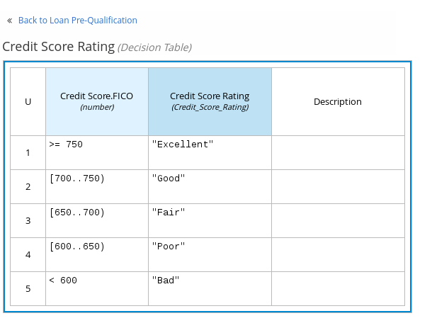Figure 46. Decision node decision table for credit score ratingThe following is an example boxed function expression for a business knowledge model that calculates mortgage payments based on principal, interest, taxes, and insurance (PITI) as a literal expression:
 Figure 47. Business knowledge model function for PITI calculation
Figure 47. Business knowledge model function for PITI calculation -
After you define the decision logic for the selected node, click Back to MODEL_NAME to return to the DRD view.
-
For the selected DRD node, use the available connection options to create and connect to the next node in the DRD, or click and drag a new node onto the DRD canvas from the left toolbar.
The node type determines which connection options are supported. For example, an Input data node can connect to a decision node, knowledge source, or text annotation using the applicable connection type, whereas a Knowledge source node can connect to any DRD element. A Decision node can connect only to another decision or a text annotation.
The following connection types are available, depending on the node type:
-
Information requirement: Use this connection from an input data node or decision node to another decision node that requires the information.
-
Knowledge requirement: Use this connection from a business knowledge model to a decision node or to another business knowledge model that invokes the decision logic.
-
Authority requirement: Use this connection from an input data node or a decision node to a dependent knowledge source or from a knowledge source to a decision node, business knowledge model, or another knowledge source.
-
Association: Use this connection from an input data node, decision node, business knowledge model, or knowledge source to a text annotation.
 Figure 48. Connecting credit score input to the credit score rating decision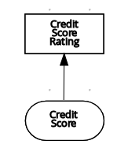
Figure 48. Connecting credit score input to the credit score rating decision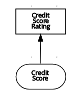 -
-
Continue adding and defining the remaining DRD components of your decision model and save the completed DRD.
The following is an example DRD for a loan prequalification decision model:
Figure 49. Completed DRD for loan prequalificationThe following is an example DRD for a phone call handling decision model using a reusable decision service:
Figure 50. Completed DRD for phone call handling with a decision serviceIn a DMN decision service node, the decision nodes in the bottom segment incorporate input data from outside of the decision service to arrive at a final decision in the top segment of the decision service node. The resulting top-level decisions from the decision service are then implemented in any subsequent decisions or business knowledge requirements of the DMN model. You can reuse DMN decision services in other DMN models to apply the same decision logic with different input data and different outgoing connections.
2.1.4.1. Defining DMN decision logic in boxed expressions in the Kogito DMN modeler
Boxed expressions in DMN are tables that you use to define the underlying logic of decision nodes and business knowledge models in a decision requirements diagram (DRD). Some boxed expressions can contain other boxed expressions, but the top-level boxed expression corresponds to the decision logic of a single DRD artifact. While DRDs represent the flow of a DMN decision model, boxed expressions define the actual decision logic of individual nodes. DRDs and boxed expressions together form a complete and functional DMN decision model.
You can use the Kogito DMN modeler in VSCode to define decision logic for your DRD components using built-in boxed expressions.
-
A DMN file is created or imported in your Kogito project in VSCode.
-
In your VSCode IDE, open the DMN file to view the decision requirements diagram (DRD) in the Kogito DMN modeler.
If the DRD does not open in the Kogito DMN modeler, ensure that you have installed and enabled the Apache KIE™ Kogito Bundle VSCode extension.
If the Kogito DMN modeler opens only the XML source of the DMN file and displays an error message, review the reported errors and the DMN model file to ensure that all DMN elements are correctly defined.
-
In the DMN modeler canvas, select a decision node or business knowledge model node that you want to define and click the Edit icon to open the DMN boxed expression editor:
Figure 51. Opening a new decision node boxed expression
Figure 52. Opening a new business knowledge model boxed expressionBy default, all business knowledge models are defined as boxed function expressions containing a literal FEEL expression, a nested context expression of an external JAVA or PMML function, or a nested boxed expression of any type.
For decision nodes, you click the undefined table to select the type of boxed expression you want to use, such as a boxed literal expression, boxed context expression, decision table, or other DMN boxed expression.
Figure 53. Selecting the logic type for a decision nodeFor business knowledge model nodes, you click the upper-left function cell to select the function type, or right-click the function value cell, select Clear, and select a boxed expression of another type.
Figure 54. Selecting the function or other logic type for a business knowledge model -
For this example, use a decision node and select Decision Table as the boxed expression type.
A decision table in DMN is a visual representation of one or more rules in a tabular format. Each rule consists of a single row in the table, and includes columns that define the conditions (input) and outcome (output) for that particular row.
-
Click the input column header to define the name and data type for the input condition. For example, name the input column Credit Score.FICO with a
numberdata type. This column specifies numeric credit score values or ranges of loan applicants. -
Click the output column header to define the name and data type for the output values. For example, name the output column Credit Score Rating and next to the Data Type option, click Manage to go to the Data Types page where you can create a custom data type with score ratings as constraints.
Figure 55. Managing data types for a column header value -
On the Data Types page, click New Data Type to add a new data type.
For this example, click New Data Type and create a Credit_Score_Rating data type as a
string:Figure 56. Adding a new data type -
Click Add Constraints, select Enumeration from the drop-down options, and add the following constraints:
-
"Excellent" -
"Good" -
"Fair" -
"Poor" -
"Bad"
Figure 57. Adding constraints to the new data typeTo change the order of data type constraints, you can click the left end of the constraint row and drag the row as needed:
Figure 58. Dragging constraints to change constraint orderFor information about constraint types and syntax requirements for the specified data type, see the Decision Model and Notation specification.
-
-
Click OK to save the constraints and click the check mark to the right of the data type to save the data type.
-
Return to the Credit Score Rating decision table, click the Credit Score Rating column header, and set the data type to this new custom data type.
-
Use the Credit Score.FICO input column to define credit score values or ranges of values, and use the Credit Score Rating column to specify one of the corresponding ratings you defined in the Credit_Score_Rating data type.
Right-click any value cell to insert or delete rows (rules) or columns (clauses).
Figure 59. Decision node decision table for credit score rating -
After you define all rules, click the upper-left corner of the decision table to define the rule Hit Policy and Builtin Aggregator (for COLLECT hit policy only).
The hit policy determines how to reach an outcome when multiple rules in a decision table match the provided input values. The built-in aggregator determines how to aggregate rule values when you use the COLLECT hit policy.
 Figure 60. Defining the decision table hit policy
Figure 60. Defining the decision table hit policyThe following example is a more complex decision table that determines applicant qualification for a loan as the concluding decision node in the same loan prequalification decision model:
Figure 61. Decision table for loan prequalification
For boxed expression types other than decision tables, you follow these guidelines similarly to navigate the boxed expression tables and define variables and parameters for decision logic, but according to the requirements of the boxed expression type. Some boxed expressions, such as boxed literal expressions, can be single-column tables, while other boxed expressions, such as function, context, and invocation expressions, can be multi-column tables with nested boxed expressions of other types.
For example, the following boxed context expression defines the parameters that determine whether a loan applicant can meet minimum mortgage payments based on principal, interest, taxes, and insurance (PITI), represented as a front-end ratio calculation with a sub-context expression:
The following boxed function expression determines a monthly mortgage installment as a business knowledge model in a lending decision, with the function value defined as a nested context expression:
For more information and examples of each boxed expression type, see DMN decision logic in boxed expressions.
2.1.4.2. Creating custom data types for DMN boxed expressions in the Kogito DMN modeler
In DMN boxed expressions in the Kogito DMN modeler, data types determine the structure of the data that you use within an associated table, column, or field in the boxed expression. You can use default DMN data types (such as String, Number, Boolean) or you can create custom data types to specify additional fields and constraints that you want to implement for the boxed expression values.
Custom data types that you create for a boxed expression can be simple or structured:
-
Simple data types have only a name and a type assignment. Example:
Age (number). -
Structured data types contain multiple fields associated with a parent data type. Example: A single type
Personcontaining the fieldsName (string),Age (number),Email (string).
-
A DMN file is created or imported in your Kogito project in VSCode.
-
In your VSCode IDE, open the DMN file to view the decision requirements diagram (DRD) in the Kogito DMN modeler.
If the DRD does not open in the Kogito DMN modeler, ensure that you have installed and enabled the Apache KIE™ Kogito Bundle VSCode extension.
If the Kogito DMN modeler opens only the XML source of the DMN file and displays an error message, review the reported errors and the DMN model file to ensure that all DMN elements are correctly defined.
-
In the DMN modeler canvas, select a decision node or business knowledge model for which you want to define the data types and click the Edit icon to open the DMN boxed expression editor.
-
If the boxed expression is for a decision node that is not yet defined, click the undefined table to select the type of boxed expression you want to use, such as a boxed literal expression, boxed context expression, decision table, or other DMN boxed expression.
Figure 64. Selecting the logic type for a decision node -
Click the cell for the table header, column header, or parameter field (depending on the boxed expression type) for which you want to define the data type and click Manage to go to the Data Types page where you can create a custom data type.
Figure 65. Managing data types for a column header valueYou can also set and manage custom data types for a specified decision node or business knowledge model node by selecting the Properties icon in the upper-right corner of the DMN modeler:
 Figure 66. Managing data types in decision requirements diagram (DRD) properties
Figure 66. Managing data types in decision requirements diagram (DRD) propertiesThe data type that you define for a specified cell in a boxed expression determines the structure of the data that you use within that associated table, column, or field in the boxed expression.
In this example, an output column Credit Score Rating for a DMN decision table defines a set of custom credit score ratings based on an applicant’s credit score.
-
On the Data Types page, click New Data Type to add a new data type.
For this example, click New Data Type and create a Credit_Score_Rating data type as a
string:Figure 67. Adding a new data typeIf the data type requires a list of items, enable the List setting.
-
Click Add Constraints, select Enumeration from the drop-down options, and add the following constraints:
-
"Excellent" -
"Good" -
"Fair" -
"Poor" -
"Bad"
Figure 68. Adding constraints to the new data typeTo change the order of data type constraints, you can click the left end of the constraint row and drag the row as needed:
Figure 69. Dragging constraints to change constraint orderFor information about constraint types and syntax requirements for the specified data type, see the Decision Model and Notation specification.
-
-
Click OK to save the constraints and click the check mark to the right of the data type to save the data type.
-
Return to the Credit Score Rating decision table, click the Credit Score Rating column header, set the data type to this new custom data type, and define the rule values for that column with the rating constraints that you specified.
Figure 70. Decision table for credit score ratingIn the DMN decision model for this scenario, the Credit Score Rating decision flows into the following Loan Prequalification decision that also requires custom data types:
 Figure 71. Decision table for loan prequalification
Figure 71. Decision table for loan prequalification -
Continuing with this example, return to the Data Types window, click New Data Type, and create a Loan_Qualification data type as a
Structurewith no constraints.When you save the new structured data type, the first sub-field appears so that you can begin defining nested data fields in this parent data type. You can use these sub-fields in association with the parent structured data type in boxed expressions, such as nested column headers in decision tables or nested table parameters in context or function expressions.
For additional sub-fields, select the addition icon next to the Loan_Qualification data type:
Figure 72. Adding a new structured data type with nested fields -
For this example, under the structured Loan_Qualification data type, add a Qualification field with
"Qualified"and"Not Qualified"enumeration constraints, and a Reason field with no constraints. Add also a simple Back_End_Ratio and a Front_End_Ratio data type, both with"Sufficient"and"Insufficient"enumeration constraints.Click the check mark to the right of each data type that you create to save your changes.
Figure 73. Adding nested data types with constraintsTo change the order or nesting of data types, you can click the left end of the data type row and drag the row as needed:
Figure 74. Dragging data types to change data type order or nesting -
Return to the decision table and, for each column, click the column header cell, set the data type to the new corresponding custom data type, and define the rule values as needed for the column with the constraints that you specified, if applicable.
Figure 75. Decision table for loan prequalification
For boxed expression types other than decision tables, you follow these guidelines similarly to navigate the boxed expression tables and define custom data types as needed.
For example, the following boxed function expression uses custom tCandidate and tProfile structured data types to associate data for online dating compatibility:


2.1.4.3. Included models in DMN files in the Kogito VSCode DMN modeler
In the Kogito DMN modeler in VSCode, you can use the Included Models tab to include other DMN models and Predictive Model Markup Language (PMML) models from your project in a specified DMN file. When you include a DMN model within another DMN file, you can use all of the nodes and logic from both models in the same decision requirements diagram (DRD). When you include a PMML model within a DMN file, you can invoke that PMML model as a boxed function expression for a DMN decision node or business knowledge model node.
You cannot include DMN or PMML models from different directories within your Kogito project or from other Kogito projects.
| Included models are not supported in the Apache KIE™ BPMN, DMN & Test Scenario Editors for GitHub Chrome extension and BPMN and DMN Standalone Editors. |
Including other DMN models within a DMN file in the Kogito VSCode DMN modeler
In the Kogito DMN modeler in VSCode, you can include other DMN models from the same directory of your Kogito project in a specified DMN file. When you include a DMN model within another DMN file, you can use all of the nodes and logic from both models in the same decision requirements diagram (DRD), but you cannot edit the nodes from the included model. To edit nodes from included models, you must update the source file for the included model directly. If you update the source file for an included DMN model, open the DMN file where the DMN model is included (or close and re-open) to verify the changes.
You cannot include DMN models from different directories within your Kogito project or from other Kogito projects.
-
The DMN models are created or imported (as
.dmnfiles) in the same directory of your Kogito project as the DMN file in which you want to include the models, such as insrc/main/resources.
-
In your VSCode IDE, open the DMN file to view the decision requirements diagram (DRD) in the Kogito DMN modeler.
If the DRD does not open in the Kogito DMN modeler, ensure that you have installed and enabled the Apache KIE™ Kogito Bundle VSCode extension.
If the Kogito DMN modeler opens only the XML source of the DMN file and displays an error message, review the reported errors and the DMN model file to ensure that all DMN elements are correctly defined.
-
In the DMN modeler, click the Included Models tab.
-
Click Include Model, select a DMN model from your directory in the Models list, enter a unique name for the included model, and click Include:
Figure 79. Including a DMN modelThe DMN model is added to this DMN file, and all DRD nodes from the included model are listed under Decision Components in the Decision Navigator view:
Figure 80. DMN file with decision components from the included DMN modelAll data types from the included model are also listed in read-only mode in the Data Types tab for the DMN file:
Figure 81. DMN file with data types from the included DMN model -
In the Editor tab of the DMN modeler, click and drag the included DRD components onto the canvas to begin implementing them in your DRD:
Figure 82. Adding DRD components from the included DMN modelTo edit DRD nodes or data types from included models, you must update the source file for the included model directly. If you update the source file for an included DMN model, open the DMN file where the DMN model is included (or close and re-open) to verify the changes.
To edit the included model name or to remove the included model from the DMN file, use the Included Models tab in the DMN modeler.
When you remove an included model, any nodes from that included model that are currently used in the DRD are also removed.
Including PMML models within a DMN file in the Kogito VSCode DMN modeler
In the Kogito DMN modeler in VSCode, you can include Predictive Model Markup Language (PMML) models from your project in a specified DMN file. When you include a PMML model within a DMN file, you can invoke that PMML model as a boxed function expression for a DMN decision node or business knowledge model node. If you update the source file for an included PMML model, you must remove and re-include the PMML model in the DMN file to apply the source changes.
You cannot include PMML models from different directories within your Kogito project or from other Kogito projects.
-
The PMML models are created or imported (as
.pmmlfiles) in the same directory of your Kogito project as the DMN file in which you want to include the models, such as insrc/main/resources.
-
In your VSCode IDE, open the DMN file to view the decision requirements diagram (DRD) in the Kogito DMN modeler.
If the DRD does not open in the Kogito DMN modeler, ensure that you have installed and enabled the Apache KIE™ Kogito Bundle VSCode extension.
If the Kogito DMN modeler opens only the XML source of the DMN file and displays an error message, review the reported errors and the DMN model file to ensure that all DMN elements are correctly defined.
-
In the DMN modeler, click the Included Models tab.
-
Click Include Model, select a PMML model from your directory in the Models list, enter a unique name for the included model, and click Include:
Figure 83. Including a PMML modelThe PMML model is added to this DMN file:
Figure 84. DMN file with included PMML model -
In the Editor tab of the DMN modeler, select or create the decision node or business knowledge model node in which you want to invoke the PMML model and click the Edit icon to open the DMN boxed expression editor:
Figure 85. Opening a new decision node boxed expression
Figure 86. Opening a new business knowledge model boxed expression -
Set the expression type to Function (default for business knowledge model nodes), click the upper-left function cell, and select PMML.
-
In the document and model rows in the table, double-click the undefined cells to specify the included PMML document and the relevant PMML model within that document:
 Figure 87. Adding a PMML model in a DMN business knowledge modelFigure 88. Example PMML definition in a DMN business knowledge model
Figure 87. Adding a PMML model in a DMN business knowledge modelFigure 88. Example PMML definition in a DMN business knowledge modelIf you update the source file for an included PMML model, you must remove and re-include the PMML model in the DMN file to apply the source changes.
To edit the included model name or to remove the included model from the DMN file, use the Included Models tab in the DMN modeler.
2.1.4.4. Creating DMN models with multiple diagrams in the Kogito DMN modeler
For complex DMN models, you can use the Kogito DMN modeler in VSCode to design multiple DMN decision requirements diagrams (DRDs) that represent parts of the overall decision requirements graph (DRG) for the DMN decision model. In simple cases, you can use a single DRD to represent all of the overall DRG for the decision model, but in complex cases, a single DRD can become large and difficult to follow. Therefore, to better organize DMN decision models with many decision requirements, you can divide the model into smaller nested DRDs that constitute the larger central DRD representation of the overall DRG.
-
You understand how to design DRDs in the Kogito DMN modeler. For information about creating DRDs, see Creating and editing DMN models in the Kogito DMN modeler.
-
In your VSCode IDE, create or import a DMN file in the relevant folder of your Kogito project, typically in
src/main/resources.When you finish creating your decision model, you can click Download in the Apache KIE™ Sandbox page to import your DMN file into your Kogito project. -
Open the new or imported DMN file to view the DRD in the Kogito DMN modeler, and begin designing or modifying the DRD using the DMN nodes in the left toolbar.
If the DRD does not open in the Kogito DMN modeler, ensure that you have installed and enabled the Apache KIE™ Kogito Bundle VSCode extension.
If the Kogito DMN modeler opens only the XML source of the DMN file and displays an error message, review the reported errors and the DMN model file to ensure that all DMN elements are correctly defined.
-
For any DMN nodes that you want to define in a separate nested DRD, select the node, click the DRD Actions icon, and select from the available options.
 Figure 89. DRD actions icon for subdividing a DRD
Figure 89. DRD actions icon for subdividing a DRDThe following options are available:
-
Create: Use this option to create a nested DRD where you can separately define the DMN components and diagram for the selected node.
-
Add to: If you already created a nested DRD, use this option to add the selected node to an existing DRD.
-
Remove: If the node that you selected is already within a nested DRD, use this option to remove the node from that nested DRD.
After you create a nested DRD within your DMN decision model, the new DRD opens in a separate DRD canvas and the available DRD and components are listed in the Decision Navigator right menu. You can use the Decision Navigator menu to rename or remove a nested DRD.
Figure 90. Rename new nested DRD in the Decision Navigator menu -
-
In the separate canvas for the new nested DRD, design the flow and logic for all required components in this portion of the DMN model, as usual.
-
Continue adding and defining any other nested DRDs for your decision model and save the completed DMN file.
For example, the following DRD for a loan prequalification decision model contains all DMN components for the model without any nested DRDs. This example relies on the single DRD for all components and logic, resulting in a large and complex diagram.
Figure 91. Single DRD for loan prequalificationAlternatively, by following the steps in this procedure, you can divide this example DRD into multiple nested DRDs to better organize the decision requirements, as shown in the following example:
Figure 92. Multiple nested DRDs for loan prequalificationFigure 93. Overview of front end ratio DRDFigure 94. DRD for front end ratioFigure 95. Overview of credit score rating DRD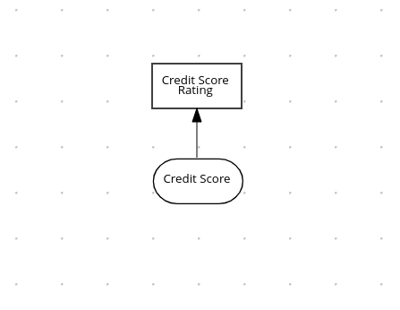Figure 96. DRD for credit score ratingFigure 97. Overview of back end ratio DRD Figure 98. DRD for back end ratio
Figure 98. DRD for back end ratio
2.1.4.5. DMN model documentation in the Kogito DMN modeler
In the Kogito DMN modeler, you can use the Documentation tab to generate a report of your DMN model. The DMN model report contains all decision requirements diagrams (DRDs), data types, and boxed expressions in your DMN model. You can use this report to share your DMN model details or as part of your internal reporting workflow.
2.1.4.6. Kogito DMN modeler navigation and properties
The Kogito DMN modeler provides the following additional features to help you navigate through the components and properties of decision requirements diagrams (DRDs).
- DMN decision and diagram views
-
In the upper-right corner of the DMN modeler, select the Decision Navigator view to navigate between the decision components, graphs, and boxed expressions of a selected DRD:
 Figure 100. Decision Navigator view
Figure 100. Decision Navigator viewThe DRD components from any DMN models included in the DMN file (in the Included Models tab) are also listed in the Decision Components panel for the DMN file. In the upper-right corner of the DMN modeler, select the Preview icon to view an elevated preview of the DRD:
Figure 101. Diagram preview - DRD properties and design
-
In the upper-right corner of the DMN modeler, select the Properties icon to modify the identifying information, data types, and appearance of a selected DRD, DRD node, or boxed expression cell:
Figure 102. DRD node propertiesTo view the properties of the entire DRD, click the DRD canvas background instead of a specific node.
- DRD search
-
In the upper-right corner of the DMN modeler, use the search bar to search for text that appears in your DRD. The search feature is especially helpful in complex DRDs with many nodes:
 Figure 103. DRD search
Figure 103. DRD search - DMN decision service details
-
Select a decision service node in the DMN designer to view additional properties, including Input Data, Encapsulated Decisions, and Output Decisions in the Properties panel.
Figure 104. Decision Service details
2.1.5. Kogito service execution
After you design your Kogito service, you can build and run your application and then send REST API requests to the application to execute your services. The exact REST API requests that you can use depend on how you set up the application.
For example, consider a Kogito service that is set up to generate a /persons REST API endpoint and determines whether a specified customer is an adult or is underage. In this example, you can send the following POST request using a REST client or curl utility to add an adult and execute the service:
{
"person": {
"name": "John Quark",
"age": 20
}
}curl -X POST http://localhost:8080/persons -H 'content-type: application/json' -H 'accept: application/json' -d '{"person": {"name":"John Quark", "age": 20}}'{
"id": "3af806dd-8819-4734-a934-728f4c819682",
"person": {
"name": "John Quark",
"age": 20,
"adult": false
},
"isAdult": true
}Note that for JSON marshaling, Kogito is relying on the default mappers of Quarkus and SpringBoot, which can be configured according to the specific requirements.
For information about creating, running, and testing an example application with Kogito services, see Creating and running your first Kogito services.
2.1.5.1. REST endpoints for DMN models in Kogito
For each DMN model in a Kogito application, the following REST endpoints are automatically generated based on the content of the model:
-
[POST] /{modelName}: A business-domain endpoint for evaluating the entire DMN model -
[POST] /{modelName}/{decisionServiceName}: A business-domain endpoint for evaluating a specified decision service component in the DMN model -
[POST] /{modelName}/dmnresult: An endpoint for evaluating the entire DMN model and returning aDMNResultresponse, including the business-domain context, helper messages, and helper decision pointers for the DMN model -
[POST] /{modelName}/{decisionServiceName}/dmnresult: An endpoint for evaluating a specified decision service component in the DMN model and returning aDMNResultresponse, including the business-domain context, helper messages, and helper decision pointers for the decision service -
[GET] /{modelName}: An endpoint for returning the DMN XML without decision logic, typically for DMN model introspection
You can use these endpoints to interact with a DMN model or a specific decision service within a model. As you decide between using business-domain and dmnresult variants of these REST endpoints, review the following considerations:
-
REST business-domain endpoints: Use this endpoint type if a client application is only concerned with a positive evaluation outcome, is not interested in parsing
InfoorWarnmessages, and only needs an HTTP 5xx response for any errors. This type of endpoint is also helpful for single-page application-like clients, due to singleton coercion of decision service results that resemble the DMN modeling behavior. -
REST
dmnresultendpoints: Use this endpoint type if a client needs to parseInfo,Warn, orErrormessages in all cases.
For each endpoint, use a REST client, curl utility, or Swagger UI (if configured for the application) to send requests with the following components:
-
Base URL:
http://HOST:PORT/{modelName} -
Path parameters:
-
{modelName}: The string identifier of the DMN model, such asTraffic Violation -
{decisionServiceName}: The string identifier of the decision service component in the DMN DRG, such asTrafficViolationDecisionService -
dmnresult: The string identifier that enables the endpoint to return a fullDMNResultresponse with more detailedInfo,Warn, andErrormessaging
-
-
HTTP headers: For
POSTrequests only:-
accept:application/json -
content-type:application/json
-
-
HTTP methods:
GETorPOST
The examples in the following endpoints are based on a Traffic Violation DMN model that contains a TrafficViolationDecisionService decision service component.
For all of these endpoints, if a DMN evaluation Error message occurs, a DMNResult response is returned along with an HTTP 5xx error. If a DMN Info or Warn message occurs, the relevant response is returned along with the business-domain REST body, in the X-Kogito-decision-messages extended HTTP header, to be used for client-side business logic. When more refined client-side business logic is required, the client can use the dmnresult variant of the endpoints.
- Return the DMN XML without decision logic
-
[GET] /{modelName}Example REST endpointhttp://localhost:8080/Traffic ViolationExample curl requestcurl -X GET http://localhost:8080/Traffic ViolationExample response (XML)<?xml version="1.0" encoding="UTF-8"?> <dmn:definitions xmlns:dmn="http://www.omg.org/spec/DMN/20180521/MODEL/" xmlns="https://github.com/apache/incubator-kie-drools/kie-dmn/_A4BCA8B8-CF08-433F-93B2-A2598F19ECFF" xmlns:di="http://www.omg.org/spec/DMN/20180521/DI/" xmlns:kie="http://www.drools.org/kie/dmn/1.2" xmlns:feel="http://www.omg.org/spec/DMN/20180521/FEEL/" xmlns:dmndi="http://www.omg.org/spec/DMN/20180521/DMNDI/" xmlns:dc="http://www.omg.org/spec/DMN/20180521/DC/" id="_1C792953-80DB-4B32-99EB-25FBE32BAF9E" name="Traffic Violation" expressionLanguage="http://www.omg.org/spec/DMN/20180521/FEEL/" typeLanguage="http://www.omg.org/spec/DMN/20180521/FEEL/" namespace="https://github.com/apache/incubator-kie-drools/kie-dmn/_A4BCA8B8-CF08-433F-93B2-A2598F19ECFF"> <dmn:itemDefinition id="_63824D3F-9173-446D-A940-6A7F0FA056BB" name="tDriver" isCollection="false"> ... </dmn:itemDefinition> <dmn:itemDefinition id="_2D4F30EE-21A6-4A78-A524-A5C238D433AE" name="tFine" isCollection="false"> ... </dmn:itemDefinition> <dmn:decision id="_4055D956-1C47-479C-B3F4-BAEB61F1C929" name="Fine"> <dmn:variable id="_8C1EAC83-F251-4D94-8A9E-B03ACF6849CD" name="Fine" typeRef="tFine"> </dmn:variable> <dmn:informationRequirement id="_800A3BBB-90A3-4D9D-BA5E-A311DED0134F"> <dmn:requiredInput href="#_1929CBD5-40E0-442D-B909-49CEDE0101DC"> </dmn:requiredInput> </dmn:informationRequirement> </dmn:decision> <dmn:decision id="_8A408366-D8E9-4626-ABF3-5F69AA01F880" name="Should the driver be suspended?"> <dmn:question>Should the driver be suspended due to points on his license?</dmn:question> <dmn:allowedAnswers>"Yes", "No"</dmn:allowedAnswers> <dmn:variable id="_40387B66-5D00-48C8-BB90-E83EE3332C72" name="Should the driver be suspended?" typeRef="string"> </dmn:variable> <dmn:informationRequirement id="_982211B1-5246-49CD-BE85-3211F71253CF"> <dmn:requiredInput href="#_1F9350D7-146D-46F1-85D8-15B5B68AF22A"> </dmn:requiredInput> </dmn:informationRequirement> <dmn:informationRequirement id="_AEC4AA5F-50C3-4FED-A0C2-261F90290731"> <dmn:requiredDecision href="#_4055D956-1C47-479C-B3F4-BAEB61F1C929"> </dmn:requiredDecision> </dmn:informationRequirement> </dmn:decision> <dmn:inputData id="_1929CBD5-40E0-442D-B909-49CEDE0101DC" name="Violation"> <dmn:variable id="_C16CF9B1-5FAB-48A0-95E0-5FCD661E0406" name="Violation" typeRef="tViolation"> </dmn:variable> </dmn:inputData> <dmn:inputData id="_1F9350D7-146D-46F1-85D8-15B5B68AF22A" name="Driver"> <dmn:variable id="_A80F16DF-0DB4-43A2-B041-32900B1A3F3D" name="Driver" typeRef="tDriver"> </dmn:variable> </dmn:inputData> </dmn:definitions> - Evaluate a specified DMN model
-
[POST] /{modelName}For this endpoint, the request body must contain all input data of the DMN model. The response is the resulting DMN context of the model, including the decision values, the original input values, and all other parametric DRG components in serialized form. For example, a business knowledge model is available in string-serialized form in its signature.
Figure 105. ExampleTraffic ViolationDMN modelExample REST endpointhttp://localhost:8080/Traffic ViolationExample POST request body with input data{ "Driver": { "Points": 2 }, "Violation": { "Type": "speed", "Actual Speed": 120, "Speed Limit": 100 } }Example curl requestcurl -X POST http://localhost:8080/Traffic Violation -H 'content-type: application/json' -H 'accept: application/json' -d '{"Driver": {"Points": 2}, "Violation": {"Type": "speed", "Actual Speed": 120, "Speed Limit": 100}}'Example response (JSON){ "Violation": { "Type": "speed", "Speed Limit": 100, "Actual Speed": 120 }, "Driver": { "Points": 2 }, "Fine": { "Points": 3, "Amount": 500 }, "Should the driver be suspended?": "No" } - Evaluate a specified decision service within a DMN model
-
[POST] /{modelName}/{decisionServiceName}For this endpoint, the request body must contain all the requirements of the decision service. The response is the resulting DMN context of the decision service, including the decision values, the original input values, and all other parametric DRG components in serialized form. For example, a business knowledge model is available in string-serialized form in its signature.
If the decision service is composed of a single-output decision, the response is the resulting value of that specific decision. This behavior provides an equivalent value at the API level of a specification feature when invoking the decision service in the model itself. As a result, you can, for example, interact with a DMN decision service from single-page web applications.
Figure 106. ExampleTrafficViolationDecisionServicedecision service with single-output decisionFigure 107. ExampleTrafficViolationDecisionServicedecision service with multiple-output decisionExample REST endpointhttp://localhost:8080/Traffic Violation/TrafficViolationDecisionServiceExample POST request body with input data{ "Driver": { "Points": 2 }, "Violation": { "Type": "speed", "Actual Speed": 120, "Speed Limit": 100 } }Example curl requestcurl -X POST http://localhost:8080/Traffic Violation/TrafficViolationDecisionService -H 'content-type: application/json' -H 'accept: application/json' -d '{"Driver": {"Points": 2}, "Violation": {"Type": "speed", "Actual Speed": 120, "Speed Limit": 100}}'Example response for single-output decision (JSON)"No"Example response for multiple-output decision (JSON){ "Violation": { "Type": "speed", "Speed Limit": 100, "Actual Speed": 120 }, "Driver": { "Points": 2 }, "Fine": { "Points": 3, "Amount": 500 }, "Should the driver be suspended?": "No" } - Evaluate a specified DMN model and return a
DMNResultresponse -
[POST] /{modelName}/dmnresultExample REST endpointhttp://localhost:8080/Traffic ViolationExample POST request body with input data{ "Driver": { "Points": 2 }, "Violation": { "Type": "speed", "Actual Speed": 120, "Speed Limit": 100 } }Example curl requestcurl -X POST http://localhost:8080/Traffic Violation -H 'content-type: application/json' -H 'accept: application/json' -d '{"Driver": {"Points": 2}, "Violation": {"Type": "speed", "Actual Speed": 120, "Speed Limit": 100}}'Example response (JSON){ "namespace": "https://github.com/apache/incubator-kie-drools/kie-dmn/_A4BCA8B8-CF08-433F-93B2-A2598F19ECFF", "modelName": "Traffic Violation", "dmnContext": { "Violation": { "Type": "speed", "Speed Limit": 100, "Actual Speed": 120, "Code": null, "Date": null }, "Driver": { "Points": 2, "State": null, "City": null, "Age": null, "Name": null }, "Fine": { "Points": 3, "Amount": 500 }, "Should the driver be suspended?": "No" }, "messages": [], "decisionResults": [ { "decisionId": "_4055D956-1C47-479C-B3F4-BAEB61F1C929", "decisionName": "Fine", "result": { "Points": 3, "Amount": 500 }, "messages": [], "evaluationStatus": "SUCCEEDED" }, { "decisionId": "_8A408366-D8E9-4626-ABF3-5F69AA01F880", "decisionName": "Should the driver be suspended?", "result": "No", "messages": [], "evaluationStatus": "SUCCEEDED" } ] } - Evaluate a specified decision service within a DMN model and return a
DMNResultresponse -
[POST] /{modelName}/{decisionServiceName}/dmnresultExample REST endpointhttp://localhost:8080/Traffic Violation/TrafficViolationDecisionServiceExample POST request body with input data{ "Driver": { "Points": 2 }, "Violation": { "Type": "speed", "Actual Speed": 120, "Speed Limit": 100 } }Example curl requestcurl -X POST http://localhost:8080/Traffic Violation/TrafficViolationDecisionService -H 'content-type: application/json' -H 'accept: application/json' -d '{"Driver": {"Points": 2}, "Violation": {"Type": "speed", "Actual Speed": 120, "Speed Limit": 100}}'Example response (JSON){ "namespace": "https://github.com/apache/incubator-kie-drools/kie-dmn/_A4BCA8B8-CF08-433F-93B2-A2598F19ECFF", "modelName": "Traffic Violation", "dmnContext": { "Violation": { "Type": "speed", "Speed Limit": 100, "Actual Speed": 120, "Code": null, "Date": null }, "Driver": { "Points": 2, "State": null, "City": null, "Age": null, "Name": null }, "Should the driver be suspended?": "No" }, "messages": [], "decisionResults": [ { "decisionId": "_8A408366-D8E9-4626-ABF3-5F69AA01F880", "decisionName": "Should the driver be suspended?", "result": "No", "messages": [], "evaluationStatus": "SUCCEEDED" } ] }
2.1.6. Kogito Audit Investigation Console
The Kogito Audit Investigation Console is a user interface for monitoring and investigating Decision Model and Notation (DMN) model executions in Kogito.
You can use the Audit Investigation Console to browse DMN model executions, verify execution status, retrieve execution details, such as decision outcomes, input data, and model preview, and obtain explanation information about how the processed decisions were made.
The Audit Investigation Console requires your Kogito services to use the following Kogito components:
-
Kogito Trusty Service: Enables the Audit Investigation Console to access stored events related to decision tracing from your Kogito services. The Kogito Trusty Service requires Infinispan persistence and Apache Kafka messaging for your Kogito service. For more information about the Trusty Service, see Configuring Kogito supporting services and runtime capabilities.
-
Kogito Explainability Service: Generates explainability data that is stored in the Kogito Trusty Service. The Audit Investigation Console accesses the explainbility information from tracing-event data for decisions in your Kogito services. The Kogito Explainbility Service requires Apache Kafka messaging for your Kogito service.
-
Kogito Tracing decision add-on: Enables the Kogito service to produce tracing events and publish the events to Apache Kafka. The add-on also exposes the REST endpoint
/predictfor the Kogito Explainbility Service.
2.1.6.1. Supported configurations for the tracing add-on
The Kogito Audit Investigation Console requires the following project dependency for the tracing add-on:
<dependency>
<groupId>org.kie</groupId>
<artifactId>kie-addons-quarkus-tracing-decision</artifactId>
</dependency><dependency>
<groupId>org.kie</groupId>
<artifactId>kie-addons-springboot-tracing-decision</artifactId>
</dependency>The tracing add-on enables the Trusty Service to interact with the decision-tracing data through the CloudEvents messages. The default configuration for the add-on pushes the decision-tracing events to the kogito-tracing-decision Apache Kafka topic and pushes the DMN models used by the Kogito service to the kogito-tracing-model topic under the group ID kogito-runtimes.
To specify the Kafka bootstrap server for your Kogito service, set the following property in the application.properties file of your Kogito project:
kafka.bootstrap.servers=http://HOST:PORT
In a Kubernetes or OpenShift environment, if you specified the KAFKA_BOOTSTRAP_SERVERS environment variable in the relevant container, this application property in your Kogito project is not required.
|
On Quarkus, to customize the tracing add-on configurations, use the format mp.messaging.outgoing.kogito-tracing-decision.PROPERTY_NAME for the decisions, and the format mp.messaging.outgoing.kogito-tracing-model.PROPERTY_NAME for the DMN models.
For example, to change the topic name for the decision-tracing events, add the following line to the application.properties file:
mp.messaging.outgoing.kogito-tracing-decision.topic=my-kogito-tracing-decisionOn SpringBoot, to customize the tracing add-on configurations, set the following properties in the application.properties file of your Kogito project as needed:
| Property | Description |
|---|---|
|
Sets the address used in the initial connection to find a bootstrap server on the cluster of Default value: None (must be set by user) |
|
Sets the topic name for the decision-tracing events Default value: |
|
Sets the number of partitions to use for the decision-tracing events topic Default value: |
|
Sets the factor of the data for the decision-tracing events topic Default value: |
|
Enables asynchronous callback with the results of the send (success or failure) instead of waiting to complete Default value: |
|
Sets the topic name for the DMN models used by the Kogito service Default value: |
-
Using Apache Kafka with Reactive Messaging in Quarkus documentation
-
Producer Configs in Apache Kafka documentation
2.1.6.2. Using the Kogito Audit Investigation Console to view DMN model execution details
You can use the Kogito Audit Investigation Console to view DMN model execution details for your Kogito services. You can run the Audit Investigation Console for local Kogito services or add it to your Kogito infrastructure on OpenShift.
-
A Kogito Trusty Service instance and Explainbility Service instance are configured and running for your Kogito service. The Trusty Service enables the Audit Investigation Console to access stored DMN model execution data. The Trusty Service requires Infinispan persistence and Apache Kafka messaging for your Kogito service. For information about the Trusty Service, see Configuring Kogito supporting services and runtime capabilities.
-
The
pom.xmlfile of your Kogito project contains the following dependency for the tracing add-on:Project dependency to enable tracing capability on Quarkus<dependency> <groupId>org.kie</groupId> <artifactId>kie-addons-quarkus-tracing-decision</artifactId> </dependency>Project dependency to enable tracing capability SpringBoot<dependency> <groupId>org.kie</groupId> <artifactId>kie-addons-springboot-tracing-decision</artifactId> </dependency> -
The
application.propertiesfile of your Kogito project contains the following system properties:Application property for REST URLskogito.service.url=http://HOST:PORTIn a Kubernetes or OpenShift environment, if you specified the KOGITO_SERVICE_URLenvironment variable in the relevant container, this application property in your Kogito project is not required for the Explainability Service.Application property for Kafka bootstrap serverkafka.bootstrap.servers=http://HOST:PORTIn a Kubernetes or OpenShift environment, if you specified the KAFKA_BOOTSTRAP_SERVERSenvironment variable in the relevant container, this application property in your Kogito project is not required.The service URL property defines the location where the Kogito service is deployed, such as
http://localhost:8080. This property enables the Explainability Service to generate the URLs to interact with Kogito and enrich tracing data with explainbility. The bootstrap property defines the Kafka bootstrap server for your Kogito service.
-
Go to the
trusty-uiartifacts page, select the latest release of the Kogito Audit Investigation Console, and download thetrusty-ui-VERSION-runner.jarfile to a local directory. -
In a command terminal, navigate to the directory location of the downloaded
trusty-ui-VERSION-runner.jarfile and enter the following command to run the Audit Investigation Console:Running the Audit Investigation Console$ java -Dquarkus.http.port=9000 -Dkogito.trusty.http.url=http://HOST:PORT -jar trusty-ui-VERSION-runner.jarThe default port for the Audit Investigation Console is 8080, but this example specifies port 9000 to avoid conflicts with the example Kogito service running at port 8080.
Figure 109. Kogito Audit Investigation Console instance on OpenShift web consoleIf you did not already install the required Trusty Service and Explainability Service, you can likewise use the OpenShift web console to add these instances under the Kogito Supporting Service tab and try again to add the Audit Investigation Console instance.
Figure 110. Kogito Trusty Service and Explainability Service instances on OpenShift web console -
In a web browser, navigate to
http://localhost:9000to open the Audit Investigation Console. If you modified the configured Trusty UI port, use the modified location.On OpenShift, navigate to the route URL for the Audit Investigation Console instance.
Figure 111. Kogito Audit Investigation ConsoleThe Audit Investigation Console displays data for all available DMN model executions. By default, executions are filtered to display results from the last month. To modify the list view, you can use the search or sort fields at the top of the screen.
-
In the DMN model executions list, select an execution ID to view and navigate through the details for the selected execution.
 Figure 112. Execution details page
Figure 112. Execution details pageAt the top of the execution details page, you can hover your cursor over the execution status to view information about execution date, time, and executor.
Figure 113. Execution status tooltip -
In the execution details page, use the following tabs in the top menu to view different aspects of the DMN model execution:
-
Outcomes: Use this page to view a list of the decision outcomes in the current execution. Each outcome is a card containing the output of the decision. You can click View Details for each card to open the Outcome Details section for that specific outcome.
-
Outcome Details: Use this page to view information about decision outcomes of the execution.
Figure 114. Outcome Details pageYou can change which outcome to view by selecting from the drop-down options in the top menu.
Figure 115. Outcomes selectionThe Explanation section provides insight about how the inputs of the model influenced the decision outcome. A score from
-1to1is assigned to each input, representing its positive or negative effect on the decision result. Score values are rounded to the second decimal digit. If you hover your cursor over the graph bars, you can also see the full score value. Next to the Features Score Chart panel, the Features Weight panel contains the same scores in a tabular view, grouped by positive and negative weight.The Outcome Influencing Inputs section provides a list of the inputs that were considered during the elaboration of the current decision outcome. The inputs typically consist of a sub-set of the inputs provided to the DMN model, or may consist of all provided inputs. For complex input structures, you can select from the Browse Sections options to view different input sections.
-
Input Data: Use this page to view all inputs submitted to the DMN model for the current execution, including all inputs that were not incorporated in the outcomes processing. For complex input structures, you can select from the Browse Sections options to view different input sections.
Figure 116. Input Data page -
Model Lookup: Use this page to view the decision requirements diagram (DRD) of the executed DMN model.
Figure 117. Model Lookup pageThe Model Lookup viewer currently does not support DMN models that include other DMN models or PMML models.
-
For example Kogito services that use the Trusty Service and Explainability Service, see the following example applications in GitHub:
-
dmn-tracing-quarkus: A DMN decision service on Quarkus that uses thekie-addons-quarkus-tracing-decisionadd-on to generate tracing events that the Kogito Trusty Service and Explainability Service can consume and expose.
2.1.7. Additional resources
2.1.7.1. Enabling Kogito Audit Console security with OpenID Connect
For Quarkus-based Kogito services, you can use the Quarkus OpenID Connect adapter with the Kogito Audit Console to enable the console to interact with the Kogito Trusty Service using bearer token authorization. These tokens are issued by OpenID Connect and OAuth 2.0 compliant authorization servers such as Keycloak.
| This procedure applies only when you are using a locally cloned copy of the Kogito Audit Console repository in GitHub. |
-
You have cloned the Kogito Audit Console repository from GitHub.
-
In a command terminal, navigate to the local clone of the Kogito Audit Console repository and enter the following command to run the application with security enabled:
Run the Audit Console with security enabledmvn clean compile quarkus:dev -Dquarkus.profile=keycloakEnsure that the service is not started at the same port as the security server. You can change the port by adding -Dquarkus.http.port=PORT_NUMBERto the start-up properties.The Kogito Audit Console contains a Quarkus profile to encapsulate the security configuration, so if the service requires security, you can specify the
quarkus.profile=keycloakproperty at build time to enable the needed security. If thekeycloakQuarkus profile is not added, the OpenID Connect extension is disabled. -
Navigate to the
src/main/resources/application.propertiesfile of the Audit Console project and add the following properties:Required security properties inapplications.propertiesfile# OpenID Connect configurations %keycloak.quarkus.oidc.enabled=true %keycloak.quarkus.oidc.tenant-enabled=true %keycloak.quarkus.oidc.auth-server-url=http://localhost:8280/auth/realms/kogito %keycloak.quarkus.oidc.client-id=kogito-console-quarkus %keycloak.quarkus.oidc.credentials.secret=secret %keycloak.quarkus.oidc.application-type=web-app %keycloak.quarkus.oidc.logout.path=/logout %keycloak.quarkus.oidc.logout.post-logout-path=/ # HTTP security configurations %keycloak.quarkus.http.auth.permission.authenticated.paths=/* %keycloak.quarkus.http.auth.permission.authenticated.policy=authenticatedThe quarkus.oidc.enabledproperty enables or disables security at build time, while thequarkus.oidc.tenant-enabledproperty enables or disables security at runtime. -
Replace any property definitions with those of your specific environment, especially the following properties:
-
quarkus.oidc.auth-server-url: The base URL of the OpenID Connect (OIDC) server, such ashttps://localhost:8280/auth. All other OIDC server page and service URLs are derived from this URL. If you work with Keycloak OIDC server, ensure that the base URL is in the following format:https://HOST:PORT/auth/realms/KEYCLOAK_REALM. -
quarkus.oidc.client-id: The client ID of the application. Each application has a client ID that is used to identify the application. -
quarkus.oidc.credentials.secret: The client secret for the application.
-
-
In the same
application.propertiesfile, also configure the resources to be exposed and the required permissions for accessing the resources.If you are enabling security at runtime using the quarkus.oidc.tenant-enabledproperty, thequarkus.http.auth.permissionpath and policy must specify how authentication is applied. By default, if security is enabled, the user must be authenticated to access any path. -
Stop and restart the Kogito Audit Console to ensure that the security changes are applied.
2.2. Using DRL rules in Kogito services
As a developer of business decisions, you can define business rules using Drools Rule Language (DRL) directly in free-form .drl text files. A DRL file can contain one or more rules that define at a minimum the rule conditions (when) and actions (then).
2.2.1. Decision-authoring assets in Kogito
Kogito supports several assets that you can use to define business decisions for your decision service. Each decision-authoring asset has different advantages, and you might prefer to use one or a combination of multiple assets depending on your goals and needs.
The following table highlights the main decision-authoring assets supported in Kogito projects to help you decide or confirm the best method for defining decisions in your decision service.
| Asset | Highlights | Authoring tools | Documentation |
|---|---|---|---|
Decision Model and Notation (DMN) models |
|
Kogito DMN modeler in VSCode or other DMN-compliant editor |
|
DRL rules |
|
Any integrated development environment (IDE) |
|
Spreadsheet decision tables |
|
Spreadsheet editor |
2.2.2. Drools Rule Language (DRL)
Drools Rule Language (DRL) is a notation established by the Drools open source business automation project for defining and describing business rules. You define DRL rules in .drl text files. A DRL file can contain one or more rules that define at a minimum the rule conditions (when) and actions (then).
DRL files consist of the following components:
package
unit
import
declare // Optional
query // Optional
rule "rule name"
// Attributes
when
// Conditions
then
// Actions
end
rule "rule2 name"
...The following example DRL rule determines the age limit in a loan application decision service:
rule "Underage"
when
/applicant[ applicantName : name, age < 21 ]
$application : /loanApplication[ applicant == applicantName ]
then
$application.setApproved( false );
$application.setExplanation( "Underage" );
endA DRL file can contain single or multiple rules and queries, and can define resource declarations and attributes that are assigned and used by your rules and queries. The components in a DRL file are grouped in a defined rule unit that serves as a unique namespace for each group of rules. The DRL package followed by the rule unit definition must be listed at the top of a DRL file, and the rules are typically listed last. All other DRL components can follow any order.
Each rule must have a unique name within the rule unit. If you use the same rule name more than once in any DRL file in the unit, the rules fail to compile. Rule names generally must follow standard Java identifier conventions. However, you can enclose rule names with double quotation marks (rule "rule name") to prevent possible compilation errors, especially if you use spaces in rule names.
2.2.2.1. Packages in DRL
A package is a folder of related assets in Kogito, such as data objects, DRL files, decision tables, and other asset types. A package also serves as a unique namespace for each group of rules. A single rule base can contain multiple packages. You typically store all the rules for a package in the same file as the package declaration so that the package is self-contained. However, you can import objects from other packages that you want to use in the rules.
The following example is a package name and namespace for a DRL file in a mortgage application decision service:
package org.mortgages;The following railroad diagram shows all the components that may make up a package:

Note that a package must have a namespace and be declared using standard Java conventions for package names; i.e., no spaces, unlike rule names which allow spaces.
In terms of the order of elements, they can appear in any order in the rule file, with the exception of the package and unit statements, which must be at the top of the file.
In all cases, the semicolons are optional.
Notice that any rule attribute (as described in the section [rules-attributes-ref-drl-rules]) may also be written at package level, superseding the attribute’s default value. The modified default may still be replaced by an attribute setting within a rule.
2.2.2.2. Rule units in DRL
A DRL rule unit is a module for rules and a unit of execution. A rule unit collects a set of rules with the declaration of the type of facts that the rules act on. A rule unit also serves as a unique namespace for each group of rules. A single rule base can contain multiple rule units. You typically store all the rules for a unit in the same file as the unit declaration so that the unit is self-contained.
The following example is a rule unit designated in a DRL file in a mortgage application decision service:
package org.mortgages;
unit MortgageRules;To define a rule unit, you declare the relevant fact types and declare the data sources for the types by implementing the RuleUnitData interface, and then define the rules in the unit:
package org.mortgages;
unit MortgageRules;
import org.kie.kogito.rules.DataSource;
import org.kie.kogito.rules.DataStream;
declare Person
name : String
dateOfBirth : Date
address : Address
end
declare MortgageRules extends RuleUnitData
person: DataStream<Person> = DataSource.createStream()
end
rule "Using a rule unit with a declared type"
when
$p : /person[ name == "James" ]
then // Insert Mark, who is a customer of James.
Person mark = new Person();
mark.setName( "Mark" );
person.append( mark );
endTo separate the fact types from the rule unit for use with other DRL rules, you can declare the types in a separate DRL file and then use the DRL rule file to declare the data sources by using the RuleUnitData interface implementation:
package org.mortgages;
declare Person
name : String
dateOfBirth : Date
address : Address
endpackage org.mortgages;
unit MortgageRules;
import org.kie.kogito.rules.DataSource;
import org.kie.kogito.rules.DataStream;
declare MortgageRules extends RuleUnitData
person: DataStream<Person> = DataSource.createStream()
end
rule "Using a rule unit with a declared type"
when
$p : /person[ name == "James" ]
then // Insert Mark, who is a customer of James.
Person mark = new Person();
mark.setName( "Mark" );
person.append( mark );
endIn this example, persons is a DataStream data source for facts of type Person. Data sources are typed sources of data that rule units can subscribe to for updates. You interact with the rule unit through the data sources it exposes. A data source can be a DataStream source for append-only storage, a DataStore source for writable storage to add or remove data, or a SingletonStore source for writable storage to set and clear a single element.
As part of your data source declaration, you also import org.kie.kogito.rules.DataSource and the relevant data source support, such as import org.kie.kogito.rules.DataStream in this example.
You can add several rules to the same DRL file, or further break down the rule set and type declarations by creating more files. However you construct your rule sets, ensure that all DRL rule files exist in the same directory and start with the correct package and unit declarations.
Rule unit use case
As an additional rule unit use case, consider the following example decision service that evaluates incoming data from a heat sensor for temperature measurements and produces alerts when the temperature is above a specified threshold.
This example service uses the following types.drl file in the src/main/resources/org/acme folder of the Kogito project to declare the Temperature and the Alert fact types:
package com.acme;
declare Temperature
value: double
end
declare Alert
severity: String
message: String
endTo define DRL rules that pattern-match against Temperature values, the example service must expose an entry point for the incoming data to the decision engine and publish alerts on a separate channel. To establish this data source for decision data, the example service uses a rule unit with DataStream data sources for Temperature objects and for Alert objects.
The DataStream data source is an append-only store for incoming data, similar to a queue. This type of data source is logical for both sources in this example because the temperature data is coming from an external source (the sensor) and the service publishes the alerts externally as they are produced.
The example service uses the following MonitoringService.drl file in the same src/main/resources/com/acme folder of the Kogito project to declare the data sources for the fact types and defines the rules for the rule unit:
package com.acme;
unit MonitoringService;
import org.kie.kogito.rules.DataSource;
import org.kie.kogito.rules.DataStream;
declare MonitoringService extends RuleUnitData
temperature: DataStream<Temperature> = DataSource.createStream()
alertData: DataStream<Alert> = DataSource.createStream()
end
rule "tooHot"
when
$temp : /temperature[value >= 80]
then
alertData.append(new Alert("HIGH", "Temperature exceeds threshold: " + temp.value));
endThe rule unit implements the required RuleUnitData interface and declares the data sources for the previously defined types. The sample rule raises an alert when the temperature reaches or exceeds 80 degrees.
Data sources for DRL rule units
Data sources are typed sources of data that rule units can subscribe to for updates. You interact with the rule unit through the data sources it exposes.
Kogito supports the following types of data sources. When you declare data sources in DRL rule files, the sources are internally rendered as shown in these examples.
-
DataStream: An append-only storage option. Use this storage option when you want to publish or share data values. You can use the notationDataSource.createStream()to return aDataStream<T>object and use the methodappend(T)to add more data.Example DataStream data source definitionDataStream<Temperature> temperature = DataSource.createStream(); // Append value and notify all subscribers temperature.append(new Temperature(100)); -
DataStore: A writable storage option for adding or removing data and then notifying all subscribers that mutable data has been modified. Rules can pattern-match against incoming values and update or remove available values. For users familiar with Drools, this option is equivalent to a typed version of an entry point. In fact, aDataStore<Object>is equivalent to an old-style entry point.Example DataStore data source definitionDataStore<Temperature> temperature = DataSource.createStore(); Temperature temp = new Temperature(100); // Add value `t` and notify all subscribers DataHandle t = temperature.add(temp); temp.setValue(50); // Notify all subscribers that the value referenced by `t` has changed temperature.update(t, temp); // Remove value referenced by `t` and notify all subscribers temperature.remove(t); -
SingletonStore: A writable storage option for setting or clearing a single element and then notifying all subscribers that the element has been modified. Rules can pattern-match against the value and update or clear available values. For users familiar with Drools, this option is equivalent to a global. In fact, aSingleton<Object>is similar to an old-style global, except that when used in conjuction with rules, you can pattern-match against it.Example SingletonStore data source definitionSingletonStore<Temperature> temperature = DataSource.createSingleton(); Temperature temp = new Temperature(100); // Add value `temp` and notify all subscribers temperature.set(temp); temp.setValue(50); // Notify all subscribers that the value has changed temperature.update(); Temperature temp2 = new Temperature(200); // Overwrite contained value with `temp2` and notify all subscribers temperature.set(temp2); temp2.setValue(150); // Notify all subscribers that the value has changed temperature.update(); // Clear store and notify all subscribers temperature.clear();
Subscribers to a data source are known as data processors. A data processor implements the DataProcessor<T> interface. This interface contains callbacks to all the events that a subscribed data source can trigger.
public interface DataProcessor<T> {
void insert(DataHandle handle, T object);
void update(DataHandle handle, T object);
void delete(DataHandle handle);
}The DataHandle method is an internal reference to an object of a data source. Each callaback method might or might not be invoked, depending on whether the corresponding data source implements the capability. For example, a DataStream source invokes only the insert callback, whereas a SingletonStore source invokes the insert callback on set and the delete callback on clear or before an overwriting set.
DRL rule unit declaration using Java
As an alternative to declaring fact types and rule units in DRL files, you can also declare types and units using Java classes. In this case, you add the source code to the src/main/java folder of your Kogito project instead of src/main/resources.
For example, the following Java classes define the type and rule unit declarations for the example temperature monitoring service:
package com.acme;
public class Temperature {
private final double value;
public Temperature(double value) { this.value = value; }
public double getValue() { return value; }
}package com.acme;
public class Alert {
private final String severity
private final String message;
public Temperature(String severity, String message) {
this.severity = severity;
this.message = message;
}
public String getSeverity() { return severity; }
public String getMessage() { return message; }
}package com.acme;
import org.kie.kogito.rules.DataSource;
import org.kie.kogito.rules.DataStream;
public class MonitoringService implements RuleUnitData {
private DataStream<Temperature> temperature = DataSource.createStream();
private DataStream<Alert> alertData = DataSource.createStream();
public DataStream<Temperature> getTemperature() { return temperature; }
public DataStream<Alert> getAlertData() { return alertData; }
}In this scenario, the DRL rule files then stand alone in the src/main/resources folder and consist of the unit and the rules, with no direct declarations, as shown in the following example:
package com.acme;
unit MonitoringService;
rule "tooHot"
when
$temp : /temperature[value >= 80]
then
alertData.append(new Alert("HIGH", "Temperature exceeds threshold: " + temp.value));
endDRL rule units with BPMN processes
If you use a DRL rule unit as part of a business rule task in a Business Process Model and Notation (BPMN) process in your Kogito project, you do not need to create an explicit data type declaration or a rule unit class that implements the RuleUnitData interface. Instead, you designate the rule unit in the DRL file as usual and specify the rule unit in the format unit:PACKAGE_NAME.UNIT_NAME in the implementation details for the business rule task in the BPMN process. When you build the project, the business process implicitly declares the rule unit as part of the business rule task to execute the DRL file.
For example, the following is a DRL file with a rule unit designation:
package com.acme;
unit MonitoringService;
rule "tooHot"
when
$temp : Temperature( value >= 80 ) from temperature
then
alertData.add(new Alert("HIGH", "Temperature exceeds threshold: " + temp.value));
endIn the relevant business process in a BPMN 2.0 process modeler, you select the business rule task and for the Implementation/Execution property, you set the rule language to DRL and the rule flow group to unit:com.acme.MonitoringService.
This rule unit syntax specifies that you are using the com.acme.MonitoringService rule unit instead of a traditional rule flow group. This is the rule unit that you referenced in the example DRL file. When you build the project, the business process implicitly declares the rule unit as part of the business rule task to execute the DRL file.
2.2.2.3. Import statements in DRL
Similar to import statements in Java, imports in DRL files identify the fully qualified paths and type names for any objects that you want to use in the rules. You specify the package and data object in the format packageName.objectName, with multiple imports on separate lines. The decision engine automatically imports classes from the Java package with the same name as the DRL package and from the package java.lang.
The following example is an import statement for a loan application object in a mortgage application decision service:
import org.mortgages.LoanApplication;2.2.2.4. Type declarations and metadata in DRL

Declarations in DRL files define new fact types or metadata for fact types to be used by rules in the DRL file:
-
New fact types: The default fact type in the
java.langpackage of Kogito isObject, but you can declare other types in DRL files as needed. Declaring fact types in DRL files enables you to define a new fact model directly in the decision engine, without creating models in a lower-level language like Java. You can also declare a new type when a domain model is already built and you want to complement this model with additional entities that are used mainly during the reasoning process. -
Metadata for fact types: You can associate metadata in the format
@KEY( VALUE )with new or existing facts. Metadata can be any kind of data that is not represented by the fact attributes and is consistent among all instances of that fact type. The metadata can be queried at run time by the decision engine and used in the reasoning process.
Type declarations without metadata in DRL
A declaration of a new fact does not require any metadata, but must include a list of attributes or fields. If a type declaration does not include identifying attributes, the decision engine searches for an existing fact class in the classpath and raises an error if the class is missing.
For example, the following DRL file contains a declaration of a new fact type Person from a person data source and uses no metadata:
declare Person
name : String
dateOfBirth : java.util.Date
address : Address
end
rule "Using a declared type"
when
$p : /person[ name == "James" ]
then // Insert Mark, who is a customer of James.
Person mark = new Person();
mark.setName( "Mark" );
person.append( mark );
endIn this example, the new fact type Person has the three attributes name, dateOfBirth, and address. Each attribute has a type that can be any valid Java type, including another class that you create or a fact type that you previously declared. The dateOfBirth attribute has the type java.util.Date, from the Java API, and the address attribute has the previously defined fact type Address.
To avoid writing the fully qualified name of a class every time you declare it, you can define the full class name as part of the import clause:
import java.util.Date
declare Person
name : String
dateOfBirth : Date
address : Address
endWhen you declare a new fact type, the decision engine generates at compile time a Java class representing the fact type. The generated Java class is a one-to-one JavaBeans mapping of the type definition.
For example, the following Java class is generated from the example Person type declaration:
public class Person implements Serializable {
private String name;
private java.util.Date dateOfBirth;
private Address address;
// Empty constructor
public Person() {...}
// Constructor with all fields
public Person( String name, Date dateOfBirth, Address address ) {...}
// If keys are defined, constructor with keys
public Person( ...keys... ) {...}
// Getters and setters
// `equals` and `hashCode`
// `toString`
}You can then use the generated class in your rules like any other fact, as illustrated in the previous rule example with the Person type declaration from a person data source:
rule "Using a declared type"
when
$p : /person[ name == "James" ]
then // Insert Mark, who is a customer of James.
Person mark = new Person();
mark.setName( "Mark" );
person.append( mark );
endEnumerative type declarations in DRL
DRL supports the declaration of enumerative types in the format declare enum FACT_TYPE, followed by a comma-separated list of values ending with a semicolon. You can then use the enumerative list in the rules in the DRL file.
For example, the following enumerative type declaration defines days of the week for an employee scheduling rule:
declare enum DaysOfWeek
SUN("Sunday"),MON("Monday"),TUE("Tuesday"),WED("Wednesday"),THU("Thursday"),FRI("Friday"),SAT("Saturday");
fullName : String
end
rule "Using a declared Enum"
when
$emp : /employee[ dayOff == DaysOfWeek.MONDAY ]
then
...
endExtended type declarations in DRL
DRL supports type declaration inheritance in the format declare FACT_TYPE_1 extends FACT_TYPE_2. To extend a type declared in Java by a subtype declared in DRL, you repeat the parent type in a declaration statement without any fields.
For example, the following type declarations extend a Student type from a top-level Person type, and a LongTermStudent type from the Student subtype:
import org.people.Person
declare Person end
declare Student extends Person
school : String
end
declare LongTermStudent extends Student
years : int
course : String
endType declarations with metadata in DRL
You can associate metadata in the format @KEY( VALUE ) (the value is optional) with fact types or fact attributes. Metadata can be any kind of data that is not represented by the fact attributes and is consistent among all instances of that fact type. The metadata can be queried at run time by the decision engine and used in the reasoning process. Any metadata that you declare before the attributes of a fact type are assigned to the fact type, while metadata that you declare after an attribute are assigned to that particular attribute.
In the following example, the two metadata attributes @author and @dateOfCreation are declared for the Person fact type, and the two metadata items @key (literal) and @maxLength are declared for the name attribute. The @key literal metadata attribute has no required value, so the parentheses and the value are omitted.
import java.util.Date
declare Person
@author( Bob )
@dateOfCreation( 01-Feb-2009 )
name : String @key @maxLength( 30 )
dateOfBirth : Date
address : Address
endFor declarations of metadata attributes for existing types, you can identify the fully qualified class name as part of the import clause for all declarations or as part of the individual declare clause:
import org.drools.examples.Person
declare Person
@author( Bob )
@dateOfCreation( 01-Feb-2009 )
enddeclare org.drools.examples.Person
@author( Bob )
@dateOfCreation( 01-Feb-2009 )
endMetadata tags for fact type and attribute declarations in DRL
Although you can define custom metadata attributes in DRL declarations, the decision engine also supports the following predefined metadata tags for declarations of fact types or fact type attributes.
|
The examples in this section that refer to the VoiceCall fact class in an example Telecom domain model
|
- @role
-
This tag determines whether a given fact type is handled as a regular fact or an event in the decision engine during complex event processing.
Default parameter:
factSupported parameters:
fact,event@role( fact | event )Example: Declare VoiceCall as event typedeclare VoiceCall @role( event ) end - @timestamp
-
This tag is automatically assigned to every event in the decision engine. By default, the time is provided by the session clock and assigned to the event when it is inserted into the working memory of the decision engine. You can specify a custom time stamp attribute instead of the default time stamp added by the session clock.
Default parameter: The time added by the decision engine session clock
Supported parameters: Session clock time or custom time stamp attribute
@timestamp( ATTRIBUTE_NAME )Example: Declare VoiceCall timestamp attributedeclare VoiceCall @role( event ) @timestamp( callDateTime ) end - @duration
-
This tag determines the duration time for events in the decision engine. Events can be interval-based events or point-in-time events. Interval-based events have a duration time and persist in the working memory of the decision engine until their duration time has lapsed. Point-in-time events have no duration and are essentially interval-based events with a duration of zero. By default, every event in the decision engine has a duration of zero. You can specify a custom duration attribute instead of the default.
Default parameter: Null (zero)
Supported parameters: Custom duration attribute
@duration( ATTRIBUTE_NAME )Example: Declare VoiceCall duration attributedeclare VoiceCall @role( event ) @timestamp( callDateTime ) @duration( callDuration ) end - @expires
-
This tag determines the time duration before an event expires in the working memory of the decision engine. By default, an event expires when the event can no longer match and activate any of the current rules. You can define an amount of time after which an event should expire. This tag definition also overrides the implicit expiration offset calculated from temporal constraints and sliding windows in the KIE base. This tag is available only when the decision engine is running in stream mode.
Default parameter: Null (event expires after event can no longer match and activate rules)
Supported parameters: Custom
timeOffsetattribute in the format[#d][#h][#m][#s][[ms]]@expires( TIME_OFFSET )Example: Declare expiration offset for VoiceCall eventsdeclare VoiceCall @role( event ) @timestamp( callDateTime ) @duration( callDuration ) @expires( 1h35m ) end - @typesafe
-
This tab determines whether a given fact type is compiled with or without type safety. By default, all type declarations are compiled with type safety enabled. You can override this behavior to type-unsafe evaluation, where all constraints are generated as MVEL constraints and executed dynamically. This is useful when dealing with collections that do not have any generics or mixed type collections.
Default parameter:
trueSupported parameters:
true,false@typesafe( BOOLEAN )Example: Declare VoiceCall for type-unsafe evaluationdeclare VoiceCall @role( fact ) @typesafe( false ) end - @serialVersionUID
-
This tag defines an identifying
serialVersionUIDvalue for a serializable class in a fact declaration. If a serializable class does not explicitly declare aserialVersionUID, the serialization run time calculates a defaultserialVersionUIDvalue for that class based on various aspects of the class, as described in the Java Object Serialization Specification. However, for optimal deserialization results and for greater compatibility with serialized KIE sessions, set theserialVersionUIDas needed in the relevant class or in your DRL declarations.Default parameter: Null
Supported parameters: Custom
serialVersionUIDinteger@serialVersionUID( INTEGER )Example: Declare serialVersionUID for a VoiceCall classdeclare VoiceCall @serialVersionUID( 42 ) end - @key
-
This tag enables a fact type attribute to be used as a key identifier for the fact type. The generated class can then implement the
equals()andhashCode()methods to determine if two instances of the type are equal to each other. The decision engine can also generate a constructor using all the key attributes as parameters.Default parameter: None
Supported parameters: None
ATTRIBUTE_DEFINITION @keyExample: Declare Person type attributes as keysdeclare Person firstName : String @key lastName : String @key age : int endFor this example, the decision engine checks the
firstNameandlastNameattributes to determine if two instances ofPersonare equal to each other, but it does not check theageattribute. The decision engine also implicitly generates three constructors: one without parameters, one with the@keyfields, and one with all fields:Example constructors from the key declarationsPerson() // Empty constructor Person( String firstName, String lastName ) Person( String firstName, String lastName, int age )You can then create instances of the type based on the key constructors, as shown in the following example:
Example instance using the key constructorPerson person = new Person( "John", "Doe" );
2.2.2.5. Queries in DRL

Queries in DRL files search the working memory of the decision engine for facts related to the rules in the DRL file. You add the query definitions in DRL files and then obtain the matching results in your application code. Queries search for a set of defined conditions and do not require when or then specifications. Query names are scoped to the rule unit, so each query name must be unique within the same rule unit. In Kogito, queries are automatically exposed as REST endpoints.
The following example is a query definition for an Alert object with a severity field set to HIGH:
package com.acme;
unit MonitoringService;
query highSeverity
alerts : /alertData[ severity == "HIGH" ]
endKogito automatically exposes this query through an endpoint /high-severity.
For this example, assume that the MonitoringService rule unit class has the following form:
package com.acme;
import org.kie.kogito.rules.DataSource;
import org.kie.kogito.rules.DataStream;
public class MonitoringService implements RuleUnitData {
private DataStream<Temperature> temperature = DataSource.createStream();
private DataStream<Alert> alertData = DataSource.createStream();
public DataStream<Temperature> getTemperature() { return temperature; }
public DataStream<Alert> getAlertData() { return alertData; }
}In this case, you can invoke the query using the following command:
/high-severity endpoint$ curl -X POST \
-H 'Accept: application/json' \
-H 'Content-Type: application/json' \
-d '{ "eventData": [ { "type": "temperature", "value" : 20 }, { "type": "temperature", "value" : 100 } ] }' \
http://localhost:8080/high-severity{
"alerts" : [
{
"severity" : "HIGH",
"message" : "Temperature exceeds threshold: 100"
}
]
}This example submits the data to the eventData data source and returns the result of the highSeverity query as a response.
2.2.2.6. Property-change settings and listeners for fact types
By default, the decision engine does not re-evaluate all fact patterns for fact types each time a rule is triggered, but instead reacts only to modified properties that are constrained or bound inside a given pattern. For example, if a rule calls modify() on a fact as part of the rule actions, this modification does not automatically trigger the re-evaluation of all patterns referring to the modified type. Only the patterns constrained on the changed properties of that fact are re-evaluated. This property reactivity behavior prevents unwanted recursions and results in more efficient rule evaluation. This behavior also avoids the need of using the no-loop rule attribute to prevent infinite recursion.
You can modify or disable this property reactivity behavior with the following options, and then use a property-change setting in your Java class or DRL files to fine-tune property reactivity as needed:
-
ALWAYS: (Default) All types are property reactive, but you can disable property reactivity for a specific type by using the@classReactiveproperty-change setting. -
ALLOWED: No types are property reactive, but you can enable property reactivity for a specific type by using the@propertyReactiveproperty-change setting. -
DISABLED: No types are property reactive. All property-change listeners are ignored.
To set the property reactivity behavior, update the drools.propertySpecific system property in the application.properties file of your Kogito project:
drools.propertySpecific=ALLOWEDThe decision engine supports the following property-change settings and listeners for fact classes or declared DRL fact types:
- @classReactive
-
If property reactivity is set to
ALWAYSin the decision engine (all types are property reactive), this tag disables the default property reactivity behavior for a specific Java class or a declared DRL fact type. You can use this tag if you want the decision engine to re-evaluate all fact patterns for the specified fact type each time the rule is triggered, instead of reacting only to modified properties that are constrained or bound inside a given pattern.Example: Disable default property reactivity in a DRL type declarationdeclare Person @classReactive firstName : String lastName : String endExample: Disable default property reactivity in a Java class@classReactive public static class Person { private String firstName; private String lastName; } - @propertyReactive
-
If property reactivity is set to
ALLOWEDin the decision engine (no types are property reactive unless specified), this tag enables property reactivity for a specific Java class or a declared DRL fact type. You can use this tag if you want the decision engine to react only to modified properties that are constrained or bound inside a given pattern for the specified fact type, instead of re-evaluating all fact patterns for the fact each time the rule is triggered.Example: Enable property reactivity in a DRL type declaration (when reactivity is disabled globally)declare Person @propertyReactive firstName : String lastName : String endExample: Enable property reactivity in a Java class (when reactivity is disabled globally)@propertyReactive public static class Person { private String firstName; private String lastName; }
- @propertyChangeSupport
-
For facts that implement support for property changes as defined in the JavaBeans Specification, this tag enables the decision engine to monitor changes in the fact properties.
Example: Declare property change support in JavaBeans objectdeclare Person @propertyChangeSupport end
2.2.2.7. Rule attributes in DRL

Rule attributes are additional specifications that you can add to business rules to modify rule behavior. In DRL files, you typically define rule attributes above the rule conditions and actions, with multiple attributes on separate lines, in the following format:
rule "rule_name"
// Attribute
// Attribute
when
// Conditions
then
// Actions
endThe following table lists the names and supported values of the attributes that you can assign to rules:
| Attribute | Value |
|---|---|
|
An integer defining the priority of the rule. Rules with a higher salience value are given higher priority when ordered in the activation queue. Example: |
|
A Boolean value. When the option is selected, the rule is enabled. When the option is not selected, the rule is disabled. Example: |
|
A string containing a date and time definition. The rule can be activated only if the current date and time is after a Example: |
|
A string containing a date and time definition. The rule cannot be activated if the current date and time is after the Example: |
|
A Boolean value. When the option is selected, the rule cannot be reactivated (looped) if a consequence of the rule re-triggers a previously met condition. When the condition is not selected, the rule can be looped in these circumstances. Example: |
|
A string identifying an activation (or XOR) group to which you want to assign the rule. In activation groups, only one rule can be activated. The first rule to fire will cancel all pending activations of all rules in the activation group. Example: |
|
A long integer value defining the duration of time in milliseconds after which the rule can be activated, if the rule conditions are still met. Example: |
|
A string identifying either Example: |
|
A Quartz calendar definition for scheduling the rule. Example: |
|
A Boolean value, applicable only to rules within agenda groups. When the option is selected, the next time the rule is activated, a focus is automatically given to the agenda group to which the rule is assigned. Example: |
|
A Boolean value, applicable only to rules within rule flow groups or agenda groups. When the option is selected, the next time the ruleflow group for the rule becomes active or the agenda group for the rule receives a focus, the rule cannot be activated again until the ruleflow group is no longer active or the agenda group loses the focus. This is a stronger version of the Example: |
|
A string identifying either Example: |
2.2.2.8. Rule conditions in DRL


The when part of a DRL rule (also known as the Left Hand Side (LHS) of the rule) contains the conditions that must be met to execute an action. Conditions consist of a series of stated OOPath expressions of patterns and constraints, with optional bindings and supported rule condition elements (keywords), based on the available data objects in the package. OOPath is an object-oriented syntax extension to XPath for navigating through related elements while handling collections and filtering constraints.
For example, in a decision service that raises alerts when the temperature reaches or exceeds 80 degrees, a rule tooHot contains the when condition /temperature[value >= 80].
DRL uses when instead of if because if is typically part of a procedural execution flow during which a condition is checked at a specific point in time. In contrast, when indicates that the condition evaluation is not limited to a specific evaluation sequence or point in time, but instead occurs continually at any time. Whenever the condition is met, the actions are executed.
|
If the when section is empty, then the conditions are considered to be true and the actions in the then section are executed the first time the rules are fired. This is useful if you want to use rules to set up the decision engine state.
The following example rule uses empty conditions to insert a fact every time the rule is executed:
rule "start-up"
when
// Empty
then // Actions to be executed once
alerts.add( new Alert("INFO", "System started") );
endFormally, the core grammar of an OOPath expression is defined in extended Backus-Naur form (EBNF) notation in the following way:
OOPExpr = [ID ( ":" | ":=" )] ( "/" | "?/" ) OOPSegment { ( "/" | "?/" | "." ) OOPSegment } ;
OOPSegment = ID ["#" ID] ["[" ( Number | Constraints ) "]"]OOPath expressions and constraints
An OOPath expression of a pattern in a DRL rule condition is the segment to be matched by the decision engine. An OOPath expression can potentially match each fact that is inserted into the working memory of the decision engine. It can also contain constraints to further define the facts to be matched.
In the simplest form, with no constraints, an OOPath expression matches a fact in the given data source. In the following example with a DataSource<Person> named person, the expression matches against all Person objects in the data source of the decision engine:
/personPatterns can also refer to superclasses or even interfaces, potentially matching facts from many different classes. For example, the following pattern matches all Student subtypes of the Person object:
/person # StudentSquare brackets in a pattern enclose the constraints, such as the following constraint on the person’s age:
/person[ age == 50 ]A constraint is an expression that returns true or false. Constraints in DRL are essentially Java expressions with some enhancements, such as property access, and some differences, such as equals() and !equals() semantics for == and != (instead of the usual same and not same semantics).
Any JavaBeans property can be accessed directly from pattern constraints. A JavaBeans property is exposed internally using a standard JavaBeans getter that takes no arguments and returns something. For example, the age property is written as age in DRL instead of the getter getAge():
/person[ age == 50 ]
// This is equivalent to the following getter format:
/person[ getAge() == 50 ]Kogito uses the standard JDK Introspector class to achieve this mapping and follows the standard JavaBeans specification. For optimal decision engine performance, use the property access format, such as age, instead of using getters explicitly, such as getAge().
|
Do not use property accessors to change the state of the object in a way that might affect the rules because the decision engine caches the results of the match between invocations for higher efficiency. For example, do not use property accessors in the following ways: Instead of following the second example, insert a fact that wraps the current date in the working memory and update that fact between rule executions as needed. |
However, if the getter of a property cannot be found, the compiler uses the property name as a fallback method name, without arguments:
/person[ age == 50 ]
// If `Person.getAge()` does not exist, the compiler uses the following syntax:
/person[ age() == 50 ]You can also nest access properties in patterns, as shown in the following example. Nested properties are indexed by the decision engine.
/person[ address.houseNumber == 50 ]
// This is equivalent to the following expression:
/person[ getAddress().getHouseNumber() == 50 ]You can use any Java expression that returns a boolean value as a constraint inside the parentheses of a pattern. Java expressions can be mixed with other expression enhancements, such as property access:
/person[ age == 50 ]You can change the evaluation priority by using parentheses, as in any logical or mathematical expression:
/person[ age > 100 && ( age % 10 == 0 ) ]You can also reuse Java methods in constraints, as shown in the following example:
/person[ Math.round( weight / ( height * height ) ) < 25.0 ]|
Do not use constraints to change the state of the object in a way that might affect the rules because the decision engine caches the results of the match between invocations for higher efficiency. Any method that is executed on a fact in the rule conditions must be a read-only method. Also, the state of a fact should not change between rule invocations unless those facts are marked as updated in the working memory on every change. For example, do not use a pattern constraint in the following ways: |
Standard Java operator precedence applies to constraint operators in DRL, and DRL operators follow standard Java semantics except for the == and != operators.
The == operator uses null-safe equals() semantics instead of the usual same semantics. For example, the pattern /person[ firstName == "John" ] is similar to java.util.Objects.equals(person.getFirstName(), "John"), and because "John" is not null, the pattern is also similar to "John".equals(person.getFirstName()).
The != operator uses null-safe !equals() semantics instead of the usual not same semantics. For example, the pattern /person[ firstName != "John" ] is similar to !java.util.Objects.equals(person.getFirstName(), "John").
If the field and the value of a constraint are of different types, the decision engine uses type coercion to resolve the conflict and reduce compilation errors. For instance, if "ten" is provided as a string in a numeric evaluator, a compilation error occurs, whereas "10" is coerced to a numeric 10. In coercion, the field type always takes precedence over the value type:
/person[ age == "10" ] // "10" is coerced to 10For groups of constraints, you can use a delimiting comma , to use implicit and connective semantics:
// Person is at least 50 years old and weighs at least 80 kilograms:
/person[ age > 50, weight > 80 ]
// Person is at least 50 years old, weighs at least 80 kilograms, and is taller than 2 meters:
/person[ age > 50, weight > 80, height > 2 ]
Although the && and , operators have the same semantics, they are resolved with different priorities. The && operator precedes the || operator, and both the && and || operators together precede the , operator. Use the comma operator at the top-level constraint for optimal decision engine performance and human readability.
|
You cannot embed a comma operator in a composite constraint expression, such as in parentheses:
// Do not use the following format:
/person[ ( age > 50, weight > 80 ) || height > 2 ]
// Use the following format instead:
/person[ ( age > 50 && weight > 80 ) || height > 2 ]Bound variables in patterns and constraints
You can bind variables to OOPath expressions of patterns and constraints to refer to matched objects in other portions of a rule. Bound variables can help you define rules more efficiently or more consistently with how you annotate facts in your data model.
For example, the following DRL rule uses the variable $p for an OOPath expression with the Person fact:
rule "simple rule"
when
$p : /person
then
System.out.println( "Person " + p );
endSimilarly, you can also bind variables to nested properties, as shown in the following example:
// Two persons of the same age:
/person[ firstAge : age ] // Binding
and
/person[ age == firstAge ] // Constraint expression|
Ensure that you separate constraint bindings and constraint expressions for clearer and more efficient rule definitions. Although mixed bindings and expressions are supported, they can complicate patterns and affect evaluation efficiency. |
Nested constraints and inline casts
In some cases, you might need to access multiple properties of a nested object, as shown in the following example:
/person[ name == "mark", address.city == "london", address.country == "uk" ]You can group these property accessors to nested objects for more readable rules, as shown in the following example:
/person[ name == "mark"]/address[ city == "london", country == "uk" ]When you work with nested objects, you can use the syntax TYPE#SUB_TYPE to cast to a subtype and make the getters from the parent type available to the subtype. You can use either the object name or fully qualified class name, and you can cast to one or multiple subtypes, as shown in the following examples:
// Inline casting with subtype name:
/person[ name == "mark"]/address#LongAddress[ country == "uk" ]
// Inline casting with fully qualified class name:
/person[ name == "mark"]/address#org.domain.LongAddress[ country == "uk" ]
// Multiple inline casts:
/person[ name == "mark" ]/address#LongAddress/country#DetailedCountry[ population > 10000000 ]These example patterns cast Address to LongAddress, and additionally to DetailedCountry in the last example, making the parent getters available to the subtypes in each case.
Date literal in constraints
By default, the decision engine supports the date format dd-mmm-yyyy. You can customize the date format, including a time format mask if needed, by providing an alternative format mask with the system property drools.dateformat="dd-mmm-yyyy hh:mm". You can also customize the date format by changing the language locale with the drools.defaultlanguage and drools.defaultcountry system properties. For example, the locale of Thailand is set as drools.defaultlanguage=th and drools.defaultcountry=TH.
/person[ bornBefore < "27-Oct-2009" ]Auto-boxing and primitive types
Drools attempts to preserve numbers in their primitive or object wrapper form, so a variable bound to an int primitive when used in a code block or expression will no longer need manual unboxing; unlike early Drools versions where all primitives were autoboxed, requiring manual unboxing. A variable bound to an object wrapper will remain as an object; the existing JDK 1.5 and JDK 5 rules to handle auto-boxing and unboxing apply in this case. When evaluating field constraints, the system attempts to coerce one of the values into a comparable format; so a primitive is comparable to an object wrapper.
Supported operators in DRL constraints
DRL supports standard Java semantics for operators in constraints, with some exceptions and with some additional operators that are unique in DRL. The following list summarizes the operators that are handled differently in DRL constraints than in standard Java semantics or that are unique in DRL constraints.
/,#-
Use the
/operator to group property accessors to nested objects, and use the#operator to cast to a subtype in nested objects. Casting to a subtype makes the getters from the parent type available to the subtype. You can use either the object name or fully qualified class name, and you can cast to one or multiple subtypes.Example constraints with nested objects// Ungrouped property accessors: /person[ name == "mark", address.city == "london", address.country == "uk" ] // Grouped property accessors: /person[ name == "mark"]/address[ city == "london", country == "uk" ]Example constraints with inline casting to a subtype// Inline casting with subtype name: /person[ name == "mark", address#LongAddress.country == "uk" ] // Inline casting with fully qualified class name: /person[ name == "mark", address#org.domain.LongAddress.country == "uk" ] // Multiple inline casts: /person[ name == "mark", address#LongAddress.country#DetailedCountry.population > 10000000 ] !.-
Use this operator to dereference a property in a null-safe way. The value to the left of the
!.operator must be not null (interpreted as!= null) in order to give a positive result for pattern matching.Example constraint with null-safe dereferencing/person[ $streetName : address!.street ] // This is internally rewritten in the following way: /person[ address != null, $streetName : address.street ] []-
Use this operator to access a
Listvalue by index or aMapvalue by key.Example constraints withListandMapaccess// The following format is the same as `childList(0).getAge() == 18`: /person[childList[0].age == 18] // The following format is the same as `credentialMap.get("jdoe").isValid()`: /person[credentialMap["jdoe"].valid] <,<=,>,>=-
Use these operators on properties with natural ordering. For example, for
Datefields, the<operator means before, and forStringfields, the operator means alphabetically before. These properties apply only to comparable properties.Example constraints withbeforeoperator/person[ birthDate < $otherBirthDate ] /person[ firstName < $otherFirstName ] ==,!=-
Use these operators as
equals()and!equals()methods in constraints, instead of the usualsameandnot samesemantics.Example constraint with null-safe equality/person[ firstName == "John" ] // This is similar to the following formats: java.util.Objects.equals(person.getFirstName(), "John") "John".equals(person.getFirstName())Example constraint with null-safe not equality/person[ firstName != "John" ] // This is similar to the following format: !java.util.Objects.equals(person.getFirstName(), "John") &&,||-
Use these operators to create an abbreviated combined relation condition that adds more than one restriction on a field. You can group constraints with parentheses
()to create a recursive syntax pattern.Example constraints with abbreviated combined relation// Simple abbreviated combined relation condition using a single `&&`: /person[age > 30 && < 40] // Complex abbreviated combined relation using groupings: /person[age ((> 30 && < 40) || (> 20 && < 25))] // Mixing abbreviated combined relation with constraint connectives: /person[age > 30 && < 40 || location == "london"] Figure 126. Abbreviated combined relation condition
Figure 126. Abbreviated combined relation condition Figure 127. Abbreviated combined relation condition withparentheses
Figure 127. Abbreviated combined relation condition withparentheses matches,not matches-
Use these operators to indicate that a field matches or does not match a specified Java regular expression. Typically, the regular expression is a
Stringliteral, but variables that resolve to a valid regular expression are also supported. These operators apply only toStringproperties. If you usematchesagainst anullvalue, the resulting evaluation is alwaysfalse. If you usenot matchesagainst anullvalue, the resulting evaluation is alwaystrue. As in Java, regular expressions that you write asStringliterals must use a double backslash\\to escape.Example constraint to match or not match a regular expression/person[ country matches "(USA)?\\S*UK" ] /person[ country not matches "(USA)?\\S*UK" ] contains,not contains-
Use these operators to verify whether a field that is an
Arrayor aCollectioncontains or does not contain a specified value. These operators apply toArrayorCollectionproperties, but you can also use these operators in place ofString.contains()and!String.contains()constraints checks.Example constraints withcontainsandnot containsfor a Collection// Collection with a specified field: /familyTree[ countries contains "UK" ] /familyTree[ countries not contains "UK" ] // Collection with a variable: /familyTree[ countries contains $var ] /familyTree[ countries not contains $var ]Example constraints withcontainsandnot containsfor a String literal// Sting literal with a specified field: /person[ fullName contains "Jr" ] /person[ fullName not contains "Jr" ] // String literal with a variable: /person[ fullName contains $var ] /person[ fullName not contains $var ]For backward compatibility, the excludesoperator is a supported synonym fornot contains. memberOf,not memberOf-
Use these operators to verify whether a field is a member of or is not a member of an
Arrayor aCollectionthat is defined as a variable. TheArrayorCollectionmust be a variable.Example constraints withmemberOfandnot memberOfwith a Collection/familyTree[ person memberOf $europeanDescendants ] /familyTree[ person not memberOf $europeanDescendants ] soundslike-
Use this operator to verify whether a word has almost the same sound, using English pronunciation, as the given value (similar to the
matchesoperator). This operator uses the Soundex algorithm.Example constraint withsoundslike// Match firstName "Jon" or "John": /person[ firstName soundslike "John" ] str-
Use this operator to verify whether a field that is a
Stringstarts with or ends with a specified value. You can also use this operator to verify the length of theString.Example constraints withstr// Verify what the String starts with: /message[ routingValue str[startsWith] "R1" ] // Verify what the String ends with: /message[ routingValue str[endsWith] "R2" ] // Verify the length of the String: /message[ routingValue str[length] 17 ] in,notin-
Use these operators to specify more than one possible value to match in a constraint (compound value restriction). This functionality of compound value restriction is supported only in the
inandnot inoperators. The second operand of these operators must be a comma-separated list of values enclosed in parentheses. You can provide values as variables, literals, return values, or qualified identifiers. These operators are internally rewritten as a list of multiple restrictions using the operators==or!=. Figure 128. compoundValueRestrictionExample constraints with
Figure 128. compoundValueRestrictionExample constraints withinandnotin/person[ $color : favoriteColor ] /color[ type in ( "red", "blue", $color ) ] /person[ $color : favoriteColor ] /color[ type notin ( "red", "blue", $color ) ]
Operator precedence in DRL pattern constraints
DRL supports standard Java operator precedence for applicable constraint operators, with some exceptions and with some additional operators that are unique in DRL. The following table lists DRL operator precedence where applicable, from highest to lowest precedence:
| Operator type | Operators | Notes |
|---|---|---|
Nested or null-safe property access |
|
Not standard Java semantics |
|
|
Not standard Java semantics |
Constraint binding |
|
Not standard Java semantics |
Multiplicative |
|
|
Additive |
|
|
Shift |
|
|
Relational |
|
|
Equality |
|
Uses |
Non-short-circuiting |
|
|
Non-short-circuiting exclusive |
|
|
Non-short-circuiting inclusive |
|
|
Logical |
|
|
Logical |
|
|
Ternary |
|
|
Comma-separated |
|
Not standard Java semantics |
Supported rule condition elements in DRL (keywords)
DRL supports the following rule condition elements (keywords) that you can use with the patterns that you define in DRL rule conditions:
and-
Use this to group conditional components into a logical conjunction. Infix and prefix
andare supported. You can group patterns explicitly with parentheses(). By default, all listed patterns are combined withandwhen no conjunction is specified. Figure 129. infixAnd
Figure 129. infixAnd Figure 130. prefixAndExample patterns with
Figure 130. prefixAndExample patterns withand//Infix `and`: colorType: /color/type and /person[ favoriteColor == colorType ] //Infix `and` with grouping: (colorType: /color/type and (/person[ favoriteColor == colorType ] or /person[ favoriteColor == colorType ]) // Prefix `and`: (and colorType: /color/type /person[ favoriteColor == colorType ]) // Default implicit `and`: colorType: /color/type /person[ favoriteColor == colorType ]Do not use a leading declaration binding with the
andkeyword (as you can withor, for example). A declaration can only reference a single fact at a time, and if you use a declaration binding withand, then whenandis satisfied, it matches both facts and results in an error.Example misuse ofand// Causes compile error: $person : (/person[ name == "Romeo" ] and /person[ name == "Juliet"]) or-
Use this to group conditional components into a logical disjunction. Infix and prefix
orare supported. You can group patterns explicitly with parentheses(). You can also use pattern binding withor, but each pattern must be bound separately. Figure 131. infixOr
Figure 131. infixOr Figure 132. prefixOrExample patterns with
Figure 132. prefixOrExample patterns withor//Infix `or`: colorType: /color/type or /person[ favoriteColor == colorType] //Infix `or` with grouping: colorType: /color/type or (/person[ favoriteColor == colorType] and /person[ favoriteColor == colorType]) // Prefix `or`: (or colorType: /color/type /person[ favoriteColor == colorType])Example patterns withorand pattern bindingpensioner : ( /person[ sex == "f", age > 60 ] or /person[ sex == "m", age > 65 ] ) (or pensioner : /person[ sex == "f", age > 60 ] pensioner : /person[ sex == "m", age > 65 ])The behavior of the
orcondition element is different from the connective||operator for constraints and restrictions in field constraints. The decision engine does not directly interpret theorelement but uses logical transformations to rewrite a rule withoras a number of sub-rules. This process ultimately results in a rule that has a singleoras the root node and one sub-rule for each of its condition elements. Each sub-rule is activated and executed like any normal rule, with no special behavior or interaction between the sub-rules.Therefore, consider the
orcondition element a shortcut for generating two or more similar rules that, in turn, can create multiple activations when two or more terms of the disjunction are true. exists-
Use this to specify facts and constraints that must exist. This option is triggered on only the first match, not subsequent matches. If you use this element with multiple patterns, enclose the patterns with parentheses
(). Figure 133. ExistsExample patterns with
Figure 133. ExistsExample patterns withexistsexists /person[ firstName == "John"] exists (/person[ firstName == "John", age == 42 ]) exists (/person[ firstName == "John" ] and /person[ lastName == "Doe" ]) not-
Use this to specify facts and constraints that must not exist. If you use this element with multiple patterns, enclose the patterns with parentheses
(). Figure 134. NotExample patterns with
Figure 134. NotExample patterns withnotnot /person[ firstName == "John"] not (/person[ firstName == "John", age == 42 )] not (/person[ firstName == "John" ] and /person[ lastName == "Doe" ]) forall-
Use this to verify whether all facts that match the first pattern match all the remaining patterns. When a
forallconstruct is satisfied, the rule evaluates totrue. This element is a scope delimiter, so it can use any previously bound variable, but no variable bound inside of it is available for use outside of it. Figure 135. ForallExample rule with
Figure 135. ForallExample rule withforallrule "All full-time employees have red ID badges" when forall( $emp : /employee[ type == "fulltime" ] /employee[ this == $emp, badgeColor = "red" ] ) then // True, all full-time employees have red ID badges. endIn this example, the rule selects all
employeeobjects whose type is"fulltime". For each fact that matches this pattern, the rule evaluates the patterns that follow (badge color) and if they match, the rule evaluates totrue.To state that all facts of a given type in the working memory of the decision engine must match a set of constraints, you can use
forallwith a single pattern for simplicity.Example rule withforalland a single patternrule "All full-time employees have red ID badges" when forall( /employee[ badgeColor = "red" ] ) then // True, all full-time employees have red ID badges. endYou can use
forallconstructs with multiple patterns or nest them with other condition elements, such as inside anotelement construct.Example rule withforalland multiple patternsrule "All employees have health and dental care programs" when forall( $emp : /employee /healthCare[ employee == $emp ] /dentalCare[ employee == $emp ] ) then // True, all employees have health and dental care. endExample rule withforallandnotrule "Not all employees have health and dental care" when not ( forall( $emp : /employee /healthCare[ employee == $emp ] /dentalCare[ employee == $emp ] ) ) then // True, not all employees have health and dental care. endThe format forall( p1 p2 p3 …)is equivalent tonot( p1 and not( and p2 p3 … ) ). accumulate-
Use this to iterate over a collection of objects, execute custom actions for each of the elements, and return one or more result objects (if the constraints evaluate to
true). You can use predefined functions in youraccumulateconditions or implement custom functions as needed. You can also use the abbreviationaccforaccumulatein rule conditions.Use the following format to define
accumulateconditions in rules:Preferred format foraccumulateaccumulate( SOURCE_PATTERN; FUNCTIONS [;CONSTRAINTS] ) Figure 136. Accumulate
Figure 136. AccumulateAlthough the decision engine supports alternate formats for the accumulateelement for backward compatibility, this format is preferred for optimal performance in rules and applications.The decision engine supports the following predefined
accumulatefunctions. These functions accept any expression as input.-
average -
min -
max -
count -
sum -
collectList -
collectSet
In the following example rule,
min,max, andaverageareaccumulatefunctions that calculate the minimum, maximum, and average temperature values over all the readings for each sensor:Example rule withaccumulateto calculate temperature valuesrule "Raise alarm" when s : /sensor accumulate( /reading( sensor == $s, $temp : temperature ); $min : min( $temp ), $max : max( $temp ), $avg : average( $temp ); $min < 20, $avg > 70 ) then // Raise the alarm. endThe following example rule uses the
averagefunction withaccumulateto calculate the average profit for all items in an order:Example rule withaccumulateto calculate average profitrule "Average profit" when $order : /order accumulate( /orderItem( order == $order, $cost : cost, $price : price ); $avgProfit : average( 1 - $cost / $price ) ) then // Average profit for `$order` is `$avgProfit`. endTo use custom, domain-specific functions in
accumulateconditions, create a Java class that implements theorg.kie.api.runtime.rule.AccumulateFunctioninterface. For example, the following Java class defines a custom implementation of anAverageDatafunction:Example Java class with custom implementation ofaveragefunction// An implementation of an accumulator capable of calculating average values public class AverageAccumulateFunction implements org.kie.api.runtime.rule.AccumulateFunction<AverageAccumulateFunction.AverageData> { public void readExternal(ObjectInput in) throws IOException, ClassNotFoundException { } public void writeExternal(ObjectOutput out) throws IOException { } public static class AverageData implements Externalizable { public int count = 0; public double total = 0; public AverageData() {} public void readExternal(ObjectInput in) throws IOException, ClassNotFoundException { count = in.readInt(); total = in.readDouble(); } public void writeExternal(ObjectOutput out) throws IOException { out.writeInt(count); out.writeDouble(total); } } /* (non-Javadoc) * @see org.kie.api.runtime.rule.AccumulateFunction#createContext() */ public AverageData createContext() { return new AverageData(); } /* (non-Javadoc) * @see org.kie.api.runtime.rule.AccumulateFunction#init(java.io.Serializable) */ public void init(AverageData context) { context.count = 0; context.total = 0; } /* (non-Javadoc) * @see org.kie.api.runtime.rule.AccumulateFunction#accumulate(java.io.Serializable, java.lang.Object) */ public void accumulate(AverageData context, Object value) { context.count++; context.total += ((Number) value).doubleValue(); } /* (non-Javadoc) * @see org.kie.api.runtime.rule.AccumulateFunction#reverse(java.io.Serializable, java.lang.Object) */ public void reverse(AverageData context, Object value) { context.count--; context.total -= ((Number) value).doubleValue(); } /* (non-Javadoc) * @see org.kie.api.runtime.rule.AccumulateFunction#getResult(java.io.Serializable) */ public Object getResult(AverageData context) { return new Double( context.count == 0 ? 0 : context.total / context.count ); } /* (non-Javadoc) * @see org.kie.api.runtime.rule.AccumulateFunction#supportsReverse() */ public boolean supportsReverse() { return true; } /* (non-Javadoc) * @see org.kie.api.runtime.rule.AccumulateFunction#getResultType() */ public Class< ? > getResultType() { return Number.class; } }To use the custom function in a DRL rule, import the function using the
import accumulatestatement:Format to import a custom functionimport accumulate CLASS_NAME FUNCTION_NAMEExample rule with the importedaveragefunctionimport accumulate AverageAccumulateFunction.AverageData average rule "Average profit" when $order : /order accumulate( /orderItem[ order == $order, $cost : cost, $price : price ]; $avgProfit : average( 1 - $cost / $price ) ) then // Average profit for `$order` is `$avgProfit`. endFor backward compatibility, the decision engine also supports the configuration of
accumulatefunctions through configuration files and system properties, but this is a deprecated method. To configure theaveragefunction from the previous example using the configuration file or system property, set a property as shown in the following example:drools.accumulate.function.average = AverageAccumulateFunction.AverageDataNote that
drools.accumulate.functionis a required prefix,averageis how the function is used in the DRL files, andAverageAccumulateFunction.AverageDatais the fully qualified name of the class that implements the function behavior. -
Railroad diagrams for rule condition elements in DRL


2.2.2.9. Rule actions in DRL
The then part of the rule (also known as the Right Hand Side (RHS) of the rule) contains the actions to be performed when the conditional part of the rule has been met. Rule actions are typically determined by one or more data sources that you define as part of your DRL rule unit. For example, if a bank requires loan applicants to have over 21 years of age (with a rule condition /applicant[ applicantName : name, age < 21 ]) and a loan applicant is under 21 years old, the then action of an "Underage" rule would be setApproved( false ) based on a defined data source, declining the loan because the applicant is under age.
The main purpose of rule actions is to to insert, delete, or modify data in the working memory of the decision engine. Effective rule actions are small, declarative, and readable. If you need to use imperative or conditional code in rule actions, then divide the rule into multiple smaller and more declarative rules.
rule "Underage"
when
/applicant[ applicantName : name, age < 21 ]
$application : /loanApplication[ applicant == applicantName ]
then
$application.setApproved( false );
$application.setExplanation( "Underage" );
endFor more information about using data sources for rule actions, see Rule units in DRL.
2.2.2.10. Comments in DRL files
DRL supports single-line comments prefixed with a double forward slash // and multi-line comments enclosed with a forward slash and asterisk /* … */. You can use DRL comments to annotate rules or any related components in DRL files. DRL comments are ignored by the decision engine when the DRL file is processed.
rule "Underage"
// This is a single-line comment.
when
/applicant[ applicantName : name, age < 21 ] // This is an in-line comment
$application : /loanApplication[ applicant == applicantName ]
then
/* This is a multi-line comment
in the rule actions. */
$application.setApproved( false );
$application.setExplanation( "Underage" );
end
The hash symbol # is not supported for DRL comments.
|
2.2.2.11. Error messages for DRL troubleshooting
Kogito provides standardized messages for DRL errors to help you troubleshoot and resolve problems in your DRL files. The error messages use the following format:

-
1st Block: Error code
-
2nd Block: Line and column in the DRL source where the error occurred
-
3rd Block: Description of the problem
-
4th Block: Component in the DRL source (rule, function, query) where the error occurred
-
5th Block: Pattern in the DRL source where the error occurred (if applicable)
Kogito supports the following standardized error messages:
- 101: no viable alternative
-
Indicates that the parser reached a decision point but could not identify an alternative.
Example rule with incorrect spelling1: rule "simple rule" 2: when 3: exists /person 4: exits /student // Must be `exists` 5: then 6: endError message[ERR 101] Line 4:4 no viable alternative at input 'exits' in rule "simple rule"Example rule without a rule name1: package org.drools.examples; 2: rule // Must be `rule "rule name"` (or `rule rule_name` if no spacing) 3: when 4: Object() 5: then 6: System.out.println("A RHS"); 7: endError message[ERR 101] Line 3:2 no viable alternative at input 'when'In this example, the parser encountered the keyword
whenbut expected the rule name, so it flagswhenas the incorrect expected token.Example rule with incorrect syntax1: rule "simple rule" 2: when 3: /student[ name == "Andy ] // Must be `"Andy"` 4: then 5: endError message[ERR 101] Line 0:-1 no viable alternative at input '<eof>' in rule "simple rule" in pattern studentA line and column value of 0:-1means the parser reached the end of the source file (<eof>) but encountered incomplete constructs, usually due to missing quotation marks"…", apostrophes'…', or parentheses(…). - 102: mismatched input
-
Indicates that the parser expected a particular symbol that is missing at the current input position.
Example rule with an incomplete rule statement1: rule "simple rule" 2: when 3: $p : /person[ // Must be a complete rule statementError message[ERR 102] Line 0:-1 mismatched input '<eof>' expecting ']' in rule "simple rule" in pattern personA line and column value of 0:-1means the parser reached the end of the source file (<eof>) but encountered incomplete constructs, usually due to missing quotation marks"…", apostrophes'…', or parentheses(…).Example rule with incorrect syntax1: package org.drools.examples; 2: 3: rule "Wrong syntax" 4: when 5: not /car[ ( type == "tesla", price == 10000 ) || ( type == "kia", price == 1000 ) ] // Must use `&&` operators instead of commas `,` 6: then 7: System.out.println("OK"); 8: endError messages[ERR 102] Line 5:36 mismatched input ',' expecting ')' in rule "Wrong syntax" in pattern car [ERR 101] Line 5:57 no viable alternative at input 'type' in rule "Wrong syntax" [ERR 102] Line 5:106 mismatched input ']' expecting 'then' in rule "Wrong syntax"In this example, the syntactic problem results in multiple error messages related to each other. The single solution of replacing the commas
,with&&operators resolves all errors. If you encounter multiple errors, resolve one at a time in case errors are consequences of previous errors. - 103: failed predicate
-
Indicates that a validating semantic predicate evaluated to
false. These semantic predicates are typically used to identify component keywords in DRL files, such asdeclare,rule,exists,not, and others.Example rule with an invalid keyword1: package nesting; 2: 3: import org.drools.compiler.Person 4: import org.drools.compiler.Address 5: 6: Some text // Must be a valid DRL keyword 7: 8: rule "test something" 9: when 10: $p: /person[ name=="Michael" ] 11: then 12: $p.name = "other"; 13: System.out.println(p.name); 14: endError message[ERR 103] Line 6:0 rule 'rule_key' failed predicate: {(validateIdentifierKey(DroolsSoftKeywords.RULE))}? in ruleThe
Some textline is invalid because it does not begin with or is not a part of a DRL keyword construct, so the parser fails to validate the rest of the DRL file.This error is similar to 102: mismatched input, but usually involves DRL keywords. - 104: trailing semi-colon not allowed
-
Indicates that an
eval()clause in a rule condition uses a semicolon;but must not use one.Example rule witheval()and trailing semicolon1: rule "simple rule" 2: when 3: eval( abc(); ) // Must not use semicolon `;` 4: then 5: endError message[ERR 104] Line 3:4 trailing semi-colon not allowed in rule "simple rule" - 105: did not match anything
-
Indicates that the parser reached a sub-rule in the grammar that must match an alternative at least once, but the sub-rule did not match anything. The parser has entered a branch with no way out.
Example rule with invalid text in an empty condition1: rule "empty condition" 2: when 3: None // Must remove `None` if condition is empty 4: then 5: insert( new Person() ); 6: endError message[ERR 105] Line 2:2 required (...)+ loop did not match anything at input 'WHEN' in rule "empty condition"In this example, the condition is intended to be empty but the word
Noneis used. This error is resolved by removingNone, which is not a valid DRL keyword, data type, or pattern construct.
2.2.2.12. Legacy DRL conventions
The following Drools Rule Language (DRL) conventions are no longer applicable or optimal in Kogito but might be available for backward compatibility.
Legacy functions in DRL

Functions in DRL files put semantic code in your rule source file instead of in Java classes. Functions are especially useful if an action (then) part of a rule is used repeatedly and only the parameters differ for each rule. Above the rules in the DRL file, you can declare the function or import a static method from a helper class as a function, and then use the function by name in an action (then) part of the rule.
The following examples illustrate a function that is either declared or imported in a DRL file:
function String hello(String applicantName) {
return "Hello " + applicantName + "!";
}
rule "Using a function"
when
// Empty
then
System.out.println( hello( "James" ) );
endimport function my.package.applicant.hello;
rule "Using a function"
when
// Empty
then
System.out.println( hello( "James" ) );
endLegacy rule attributes
The following attributes were used in earlier versions of the decision engine to provide grouping of rules across a rule base. These attributes are superseded by DRL rule units and are only available for backward compatibility reasons. If you need to group your rules, use DRL rule units as a clearer and simpler grouping method.
| Attribute | Value |
|---|---|
|
A string identifying an agenda group to which you want to assign the rule. Agenda groups allow you to partition the agenda to provide more execution control over groups of rules. Only rules in an agenda group that has acquired a focus are able to be activated. Example: |
|
A string identifying a rule flow group. In rule flow groups, rules can fire only when the group is activated by the associated rule flow. Example: |
Legacy DRL rule condition syntax
In Kogito, the preferred syntax for DRL rule conditions is through OOPath expressions. For legacy use cases, you can write rules using traditional pattern matching. In this case, you must explicitly indicate the data source using the from clause, as shown in the following comparative examples:
PersonRules DRL file using OOPath notationpackage org.acme
unit PersonRules;
import org.acme.Person;
rule isAdult
when
$person: /person[ age > 18 ]
then
modify($person) {
setAdult(true)
};
endPersonRules DRL file using traditional notationpackage org.acme
unit PersonRules;
import org.acme.Person;
rule isAdult
when
$person: Person(age > 18) from person
then
modify($person) {
setAdult(true)
};
endLegacy DRL rule condition elements
The following rule condition elements (keywords) are obsolete in Kogito:
from-
(Obsolete with OOPath notation)
Use this to specify a data source for a pattern. This enables the decision engine to reason over data that is not in the working memory. The data source can be a sub-field on a bound variable or the result of a method call. The expression used to define the object source is any expression that follows regular MVEL syntax. Therefore, the
fromelement enables you to easily use object property navigation, execute method calls, and access maps and collection elements.Figure 140. fromExample rule withfromand pattern bindingrule "Validate zipcode" when Person( $personAddress : address ) Address( zipcode == "23920W" ) from $personAddress then // Zip code is okay. endExample rule withfromand a graph notationrule "Validate zipcode" when $p : Person() $a : Address( zipcode == "23920W" ) from $p.address then // Zip code is okay. endExample rule withfromto iterate over all objectsrule "Apply 10% discount to all items over US$ 100 in an order" when $order : Order() $item : OrderItem( value > 100 ) from $order.items then // Apply discount to `$item`. endFor large collections of objects, instead of adding an object with a large graph that the decision engine must iterate over frequently, add the collection directly to the KIE session and then join the collection in the condition, as shown in the following example:
when $order : Order() OrderItem( value > 100, order == $order )Example rule withfromandlock-on-activerule attributerule "Assign people in North Carolina (NC) to sales region 1" ruleflow-group "test" lock-on-active true when $p : Person() $a : Address( state == "NC" ) from $p.address then modify ($p) {} // Assign the person to sales region 1. end rule "Apply a discount to people in the city of Raleigh" ruleflow-group "test" lock-on-active true when $p : Person() $a : Address( city == "Raleigh" ) from $p.address then modify ($p) {} // Apply discount to the person. endUsing
fromwithlock-on-activerule attribute can result in rules not being executed. You can address this issue in one of the following ways:-
Avoid using the
fromelement when you can insert all facts into the working memory of the decision engine or use nested object references in your constraint expressions. -
Place the variable used in the
modify()block as the last sentence in your rule condition. -
Avoid using the
lock-on-activerule attribute when you can explicitly manage how rules within the same ruleflow group place activations on one another.
The pattern that contains a
fromclause cannot be followed by another pattern starting with a parenthesis. The reason for this restriction is that the DRL parser reads thefromexpression as"from $l (String() or Number())"and it cannot differentiate this expression from a function call. The simplest workaround to this is to wrap thefromclause in parentheses, as shown in the following example:Example rules withfromused incorrectly and correctly// Do not use `from` in this way: rule R when $l : List() String() from $l (String() or Number()) then // Actions end // Use `from` in this way instead: rule R when $l : List() (String() from $l) (String() or Number()) then // Actions end -
entry-point-
(Superseded by rule unit data sources)
Use this to define an entry point, or event stream, corresponding to a data source for the pattern. This element is typically used with the
fromcondition element. You can declare an entry point for events so that the decision engine uses data from only that entry point to evaluate the rules. You can declare an entry point either implicitly by referencing it in DRL rules or explicitly in your Java application.Example rule withfrom entry-pointrule "Authorize withdrawal" when WithdrawRequest( $ai : accountId, $am : amount ) from entry-point "ATM Stream" CheckingAccount( accountId == $ai, balance > $am ) then // Authorize withdrawal. end collect-
(Obsolete with OOPath notation)
Use this to define a collection of objects that the rule can use as part of the condition. The rule obtains the collection either from a specified source or from the working memory of the decision engine. The result pattern of the
collectelement can be any concrete class that implements thejava.util.Collectioninterface and provides a default no-arg public constructor. You can use Java collections likeList,LinkedList, andHashSet, or your own class. If variables are bound before thecollectelement in a condition, you can use the variables to constrain both your source and result patterns. However, any binding made inside thecollectelement is not available for use outside of it. Figure 141. CollectExample rule with
Figure 141. CollectExample rule withcollectimport java.util.List rule "Raise priority when system has more than three pending alarms" when $system : System() $alarms : List( size >= 3 ) from collect( Alarm( system == $system, status == 'pending' ) ) then // Raise priority because `$system` has three or more `$alarms` pending. endIn this example, the rule assesses all pending alarms in the working memory of the decision engine for each given system and groups them in a
List. If three or more alarms are found for a given system, the rule is executed.You can also use the
collectelement with nestedfromelements, as shown in the following example:Example rule withcollectand nestedfromimport java.util.LinkedList; rule "Send a message to all parents" when $town : Town( name == 'Paris' ) $mothers : LinkedList() from collect( Person( children > 0 ) from $town.getPeople() ) then // Send a message to all parents. end accumulatealternate syntax for a single function with return type-
The accumulate syntax evolved over time with the goal of becoming more compact and expressive. Nevertheless, Kogito still supports previous syntaxes for backward compatibility purposes.
In case the rule is using a single accumulate function on a given accumulate, the author may add a pattern for the result object and use the "from" keyword to link it to the accumulate result.
Example: a rule to apply a 10% discount on orders over $100 could be written in the following way:
rule "Apply 10% discount to orders over US$ 100,00" when $order : /order $total : Number( doubleValue > 100 ) from accumulate( OrderItem( order == $order, $value : value ), sum( $value ) ) then // apply discount to $order endIn the above example, the accumulate element is using only one function (sum), and so, the rules author opted to explicitly write a pattern for the result type of the accumulate function (Number) and write the constraints inside it. There are no problems in using this syntax over the compact syntax presented before, except that is is a bit more verbose. Also note that it is not allowed to use both the return type and the functions binding in the same accumulate statement.
Compile-time checks are performed in order to ensure the pattern used with the "
from" keyword is assignable from the result of the accumulate function used.With this syntax, the "
from" binds to the single result returned by the accumulate function, and it does not iterate.In the above example, "
$total" is bound to the result returned by the accumulate sum() function.As another example however, if the result of the accumulate function is a collection, "
from" still binds to the single result and it does not iterate:rule "Person names" when $x : Object() from accumulate(MyPerson( $val : name ); collectList( $val ) ) then // $x is a List endThe bound "
$x : Object()" is the List itself, returned by the collectList accumulate function used.This is an important distinction to highlight, as the "
from" keyword can also be used separately of accumulate, to iterate over the elements of a collection:rule "Iterate the numbers" when $xs : List() $x : Integer() from $xs then // $x matches and binds to each Integer in the collection endWhile this syntax is still supported for backward compatibility purposes, for this and other reasons we encourage rule authors to make use instead of the preferred
accumulatesyntax (described previously), to avoid any potential pitfalls. accumulatewith inline custom code-
Another possible syntax for the
accumulateis to define inline custom code, instead of using accumulate functions.The use of accumulate with inline custom code is not a good practice for several reasons, including difficulties on maintaining and testing rules that use them, as well as the inability of reusing that code. Implementing your own accumulate functions is very simple and straightforward, they are easy to unit test and to use. This form of accumulate is supported for backward compatibility only.
Only limited support for inline accumulate is provided while using the executable model. For example, you cannot use an external binding in the code while using the MVEL dialect:
rule R dialect "mvel" when String( $l : length ) $sum : Integer() from accumulate ( Person( age > 18, $age : age ), init( int sum = 0 * $l; ), action( sum += $age; ), reverse( sum -= $age; ), result( sum ) )The general syntax of the
accumulateCE with inline custom code is:RESULT_PATTERN from accumulate( SOURCE_PATTERN, init( INIT_CODE ), action( ACTION_CODE ), reverse( REVERSE_CODE ), result( RESULT_EXPRESSION ) )The meaning of each of the elements is the following:
-
SOURCE_PATTERN: the source pattern is a regular pattern that the decision engine will try to match against each of the source objects.
-
INIT_CODE: this is a semantic block of code in the selected dialect that will be executed once for each tuple, before iterating over the source objects.
-
ACTION_CODE: this is a semantic block of code in the selected dialect that will be executed for each of the source objects.
-
REVERSE_CODE: this is an optional semantic block of code in the selected dialect that if present will be executed for each source object that no longer matches the source pattern. The objective of this code block is to undo any calculation done in the ACTION_CODE block, so that the decision engine can do decremental calculation when a source object is modified or deleted, hugely improving performance of these operations.
-
RESULT_EXPRESSION: this is a semantic expression in the selected dialect that is executed after all source objects are iterated.
-
RESULT_PATTERN: this is a regular pattern that the decision engine tries to match against the object returned from the RESULT_EXPRESSION. If it matches, the
accumulateconditional element evaluates to true and the decision engine proceeds with the evaluation of the next CE in the rule. If it does not matches, theaccumulateCE evaluates to false and the decision engine stops evaluating CEs for that rule.
It is easier to understand if we look at an example:
rule "Apply 10% discount to orders over US$ 100,00" when $order : Order() $total : Number( doubleValue > 100 ) from accumulate( OrderItem( order == $order, $value : value ), init( double total = 0; ), action( total += $value; ), reverse( total -= $value; ), result( total ) ) then // apply discount to $order endIn the above example, for each
Orderin the Working Memory, the decision engine will execute the INIT_CODE initializing the total variable to zero. Then it will iterate over allOrderItemobjects for that order, executing the action for each one (in the example, it will sum the value of all items into the total variable). After iterating over allOrderItemobjects, it will return the value corresponding to the result expression (in the above example, the value of variabletotal). Finally, the decision engine will try to match the result with theNumberpattern, and if the double value is greater than 100, the rule will fire.The example used Java as the semantic dialect, and as such, note that the usage of the semicolon as statement delimiter is mandatory in the init, action and reverse code blocks. The result is an expression and, as such, it does not admit ';'. If the user uses any other dialect, he must comply to that dialect’s specific syntax.
As mentioned before, the REVERSE_CODE is optional, but it is strongly recommended that the user writes it in order to benefit from the improved performance on update and delete.
The
accumulateCE can be used to execute any action on source objects. The following example instantiates and populates a custom object:rule "Accumulate using custom objects" when $person : Person( $likes : likes ) $cheesery : Cheesery( totalAmount > 100 ) from accumulate( $cheese : Cheese( type == $likes ), init( Cheesery cheesery = new Cheesery(); ), action( cheesery.addCheese( $cheese ); ), reverse( cheesery.removeCheese( $cheese ); ), result( cheesery ) ); then // do something end -
eval-
The conditional element
evalis essentially a catch-all which allows any semantic code (that returns a primitive boolean) to be executed. This code can refer to variables that were bound in the conditions of the rule and functions in the rule package. Overuse ofevalreduces the declarativeness of your rules and can result in a poorly performing decision engine. Whileevalcan be used anywhere in the patterns, it is typically added as the last conditional element in the conditions of a rule. Figure 142. Eval
Figure 142. EvalInstances of
evalcannot be indexed and thus are not as efficient as Field Constraints. However this makes them ideal for being used when functions return values that change over time, which is not allowed within Field Constraints.For those who are familiar with Kogito 2.x lineage, the old Kogito parameter and condition tags are equivalent to binding a variable to an appropriate type, and then using it in an
evalnode.p1 : Parameter() p2 : Parameter() eval( p1.getList().containsKey( p2.getItem() ) )p1 : Parameter() p2 : Parameter() // call function isValid in the LHS eval( isValid( p1, p2 ) )
2.2.3. Creating DRL rules for your Kogito project
You can create and manage DRL rules for your Kogito project in your integrated development environment (IDE). For Kogito service, VSCode is the preferred IDE. In each DRL rule file, you define rule conditions, actions, and other components related to the rule, based on the data objects you create or import in the package.
In Kogito, you typically define DRL rules in rule units. A DRL rule unit is a module for rules and a unit of execution. A rule unit collects a set of rules with the declaration of the type of facts that the rules act on. A rule unit also serves as a unique namespace for each group of rules. A single rule base can contain multiple rule units. You typically store all the rules for a unit in the same file as the unit declaration so that the unit is self-contained.
For this procedure, create the following example DRL type declarations and DRL rule unit to define DRL rules in a decision service for a loan application:
package org.mortgages;
declare Bankruptcy
name: String
yearOfOccurrence: int
end
declare Applicant
name: String
age: int
end
declare LoanApplication
applicant: String
approved: boolean
explanation: String
endpackage org.mortgages;
unit MortgageRules;
import org.kie.kogito.rules.DataSource;
import org.kie.kogito.rules.DataStream;
declare MortgageRules extends RuleUnitData
bankruptcy: DataStore<Bankruptcy> = DataSource.createStore()
applicant: DataStore<Applicant> = DataSource.createStore()
application: DataStore<LoanApplication> = DataSource.createStore()
end
rule "Bankruptcy history"
salience 10
when
$a : /loanApplication[ applicantName: applicant ]
exists (/bankruptcy[ name == applicantName, yearOfOccurrence > 1990 || amountOwed > 100000 ])
then
$a.setApproved( false );
$a.setExplanation( "has been bankrupt" );
loanApplication.remove( $a );
end
rule "Underage"
salience 15
when
/applicant[ applicantName : name, age < 21 ]
$application : /loanApplication[ applicant == applicantName ]
then
$application.setApproved( false );
$application.setExplanation( "Underage" );
loanApplication.remove( $a );
end-
You have created a Kogito project and have included any Java data objects required for your Kogito service. For information about creating a project, see Creating and running your first Kogito services.
-
In your VSCode IDE, open your Kogito project and create a
src/main/resources/org/mortgagesfolder. This folder serves as the package for your DRL files in this example. -
In your new
src/main/resources/org/mortgagesfolder, add the followingApplicationTypes.drlfile to define the fact types for the loan application service:Example DRL type declarations for a loan applicationpackage org.mortgages; declare Bankruptcy name: String yearOfOccurrence: int end declare Applicant name: String age: int end declare LoanApplication applicant: String approved: boolean explanation: String endThis DRL file defines the fact types that you can declare in any rule units in the same package for the decision service. Declarations in DRL files define new fact types or metadata for fact types to be used by rules in a DRL files. If you declare these types directly in the DRL rule unit file, you cannot declare them in any other rule units.
This example defines the following fact types:
-
Bankruptcy: Provides data for bankruptcy status, if applicable -
Applicant: Provides data about the loan applicant -
LoanApplication: Provides data about loan approval status for a specified applicant, with an explanation if needed
-
-
In the same
src/main/resources/org/mortgagesfolder of your Kogito project, create the followingLoanApplication.drlfile to declare the DRL rule unit and data sources:Example DRL file with rule unit and data sourcespackage org.mortgages; unit MortgageRules; import org.kie.kogito.rules.DataSource; import org.kie.kogito.rules.DataStore; declare MortgageRules extends RuleUnitData bankruptcy: DataStore<Bankruptcy> = DataSource.createStore() applicant: DataStore<Applicant> = DataSource.createStore() application: DataStore<LoanApplication> = DataSource.createStore() end ...In this example, the rule unit is named
MortgageRulesand the previously defined fact types are declared asDataStoredata sources.Data sources are typed sources of data that rule units can subscribe to for updates. You interact with the rule unit through the data sources it exposes. A data source can be a
DataStreamsource for append-only storage, aDataStoresource for writable storage to add or remove data, or aSingletonStoresource for writable storage to set and clear a single element.This example uses the
DataStoredata source to enable application data to be added or removed as part of the decision service. -
To complete the DRL rule unit file, add the following rules for
"Bankruptcy history"and"Underage"logic:Example DRL rule unit file for a loan applicationpackage org.mortgages; unit MortgageRules; import org.kie.kogito.rules.DataSource; import org.kie.kogito.rules.DataStream; declare MortgageRules extends RuleUnitData bankruptcy: DataStore<Bankruptcy> = DataSource.createStore() applicant: DataStore<Applicant> = DataSource.createStore() application: DataStore<LoanApplication> = DataSource.createStore() end rule "Bankruptcy history" salience 10 when $a : /loanApplication[ applicantName: applicant ] exists (/bankruptcy[ name == applicantName, yearOfOccurrence > 1990 || amountOwed > 100000 ]) then $a.setApproved( false ); $a.setExplanation( "has been bankrupt" ); loanApplication.remove( $a ); end rule "Underage" salience 15 when /applicant[ applicantName : name, age < 21 ] $application : /loanApplication[ applicant == applicantName ] then $application.setApproved( false ); $application.setExplanation( "Underage" ); loanApplication.remove( $a ); endThe example rules consist of the following rule components:
-
rule: Use this segment to define each rule in the DRL file. Rules consist of a rule name in the formatrule "rule name", followed by optional attributes that define rule behavior, such assalienceorno-loop, followed bywhenandthendefinitions. Each rule must have a unique name within the rule package.In this example, the
"Bankruptcy history"rule has a defined salience of10and the"Underage"rule has a defined salience of15. These values ensure that the"Bankruptcy history"rule is executed first. -
whenandthen: Use thewhenportion to define the condition patterns and constraints in OOPath syntax and use thethenportion to define the actions to be executed when the conditions are met.In this example, the
"Bankruptcy history"rule states that if an applicant has owed more than 100,000 USD of unresolved debt since 1990 (beginning 1991), then the applicant is considered to have been bankrupt and is not approved for a loan. The application is removed from memory.If the applicant passes the bankruptcy check, then the
"Underage"rule states that if the applicant is younger than 21 years old, then the applicant is not approved for the loan. The application is removed from memory.If the applicant passes both checks, then the loan is approved.
-
-
After you define all components of the data sources and rules, save all DRL files.
2.2.4. Kogito service execution
After you design your Kogito service, you can build and run your application and then send REST API requests to the application to execute your services. The exact REST API requests that you can use depend on how you set up the application.
For example, consider a Kogito service that is set up to generate a /persons REST API endpoint and determines whether a specified customer is an adult or is underage. In this example, you can send the following POST request using a REST client or curl utility to add an adult and execute the service:
{
"person": {
"name": "John Quark",
"age": 20
}
}curl -X POST http://localhost:8080/persons -H 'content-type: application/json' -H 'accept: application/json' -d '{"person": {"name":"John Quark", "age": 20}}'{
"id": "3af806dd-8819-4734-a934-728f4c819682",
"person": {
"name": "John Quark",
"age": 20,
"adult": false
},
"isAdult": true
}Note that for JSON marshaling, Kogito is relying on the default mappers of Quarkus and SpringBoot, which can be configured according to the specific requirements.
For information about creating, running, and testing an example application with Kogito services, see Creating and running your first Kogito services.
2.3. Using spreadsheet decision tables in Kogito services
As a developer of business decisions, you can define business rules in a tabular format in spreadsheet decision tables and then include the spreadsheet file in your Kogito project. These rules are compiled into Drools Rule Language (DRL) for the decision service in your project.
2.3.1. Decision-authoring assets in Kogito
Kogito supports several assets that you can use to define business decisions for your decision service. Each decision-authoring asset has different advantages, and you might prefer to use one or a combination of multiple assets depending on your goals and needs.
The following table highlights the main decision-authoring assets supported in Kogito projects to help you decide or confirm the best method for defining decisions in your decision service.
| Asset | Highlights | Authoring tools | Documentation |
|---|---|---|---|
Decision Model and Notation (DMN) models |
|
Kogito DMN modeler in VSCode or other DMN-compliant editor |
|
DRL rules |
|
Any integrated development environment (IDE) |
|
Spreadsheet decision tables |
|
Spreadsheet editor |
2.3.2. Spreadsheet decision tables
Spreadsheet decision tables are XLS or XLSX spreadsheet files that contain business rules defined in a tabular format. You can include spreadsheet decision tables as part of your Kogito project. Each row in a decision table is a rule, and each column is a condition, an action, or another rule attribute. After you create and include your spreadsheet decision tables in your project, the rules you defined are compiled into Drools Rule Language (DRL) rules for the decision service.
2.3.3. Decision table use case
An online shopping site lists the shipping charges for ordered items. The site provides free shipping under the following conditions:
-
The number of items ordered is 4 or more and the checkout total is $300 or more.
-
Standard shipping is selected (4 or 5 business days from the date of purchase).
The following are the shipping rates under these conditions:
| Number of items | Delivery day | Shipping charge in USD, N = Number of items |
|---|---|---|
3 or fewer |
Next day 2nd day Standard |
35 15 10 |
4 or more |
Next day 2nd day Standard |
N*7.50 N*3.50 N*2.50 |
| Number of items | Delivery day | Shipping charge in USD, N = Number of items |
|---|---|---|
3 or fewer |
Next day 2nd day Standard |
25 10 N*1.50 |
4 or more |
Next day 2nd day Standard |
N*5 N*2 FREE |
These conditions and rates are shown in the following example spreadsheet decision table:

In order for a decision table to be compiled in your Kogito project, the table must comply with certain structure and syntax requirements within an XLS or XLSX spreadsheet, as shown in this example. For more information, see Creating spreadsheet decision tables for your Kogito project.
2.3.4. Creating spreadsheet decision tables for your Kogito project
Spreadsheet decision tables (XLS or XLSX) require two key areas that define rule data: a RuleSet area and a RuleTable area. The RuleSet area of the spreadsheet defines elements that you want to apply globally to all rules in the same package (not only the spreadsheet), such as a rule set name or universal rule attributes. The RuleTable area defines the actual rules (rows) and the conditions, actions, and other rule attributes (columns) that constitute that rule table within the specified rule set. A spreadsheet of decision tables can contain multiple RuleTable areas, but only one RuleSet area.
For each Kogito project, try to include only one spreadsheet of decision tables, containing all necessary RuleTable definitions. Although you can include separate decision table spreadsheets, including multiple spreadsheets in the same project package can cause compilation errors from conflicting RuleSet or RuleTable attributes and is therefore not recommended.
|
Refer to the following sample spreadsheet as you define your decision table:
-
You have added the following dependency to the
pom.xmlfile of your Kogito project to enable decision tables for decision services:Dependency to enable decision tables for decision services<dependency> <groupId>org.drools</groupId> <artifactId>drools-decisiontables</artifactId> </dependency>
-
In a new XLS or XLSX spreadsheet, go to the second or third column and label a cell
RuleSet(row 1 in example). Reserve the column or columns to the left for descriptive metadata (optional). -
In the next cell to the right, enter a name for the
RuleSet. This named rule set will contain allRuleTablerules defined in the rule package. -
Under the
RuleSetcell, define any rule attributes (one per cell) that you want to apply globally to all rule tables in the package. Specify attribute values in the cells to the right. For example, you can enter anImportlabel and in the cell to the right, specify relevant data objects from other packages that you want to import into the package for the decision table (in the formatpackage.name.object.name). For supported cell labels and values, see RuleSet definitions. -
Below the
RuleSetarea and in the same column as theRuleSetcell, skip a row and label a new cellRuleTable(row 7 in example) and enter a table name in the same cell. The name is used as the initial part of the name for all rules derived from this rule table, with the row number appended for distinction. You can override this automatic naming by inserting aNAMEattribute column. -
Use the next four rows to define the following elements as needed (rows 8-11 in example):
-
Rule attributes: Conditions, actions, or other attributes. For supported cell labels and values, see RuleTable definitions.
-
Object types: The data objects to which the rule attributes apply. If the same object type applies to multiple columns, merge the object cells into one cell across multiple columns (as shown in the sample decision table), instead of repeating the object type in multiple cells. When an object type is merged, all columns below the merged range will be combined into one set of constraints within a single pattern for matching a single fact at a time. When an object is repeated in separate columns, the separate columns can create different patterns, potentially matching different or identical facts.
-
Constraints: Constraints on the object types.
-
Column label: (Optional) Any descriptive label for the column, as a visual aid. Leave blank if unused.
As an alternative to populating both the object type and constraint cells, you can leave the object type cell or cells empty and enter the full expression in the corresponding constraint cell or cells. For example, instead of Orderas the object type anditemsCount > $1as a constraint (separate cells), you can leave the object type cell empty and enterOrder( itemsCount > $1 )in the constraint cell, and then do the same for other constraint cells.
-
-
After you have defined all necessary rule attributes (columns), enter values for each column as needed, row by row, to generate rules (rows 12-17 in example). Cells with no data are ignored (such as when a condition or action does not apply).
If you need to add more rule tables to this decision table spreadsheet, skip a row after the last rule in the previous table, label another
RuleTablecell in the same column as the previousRuleTableandRuleSetcells, and create the new table following the same steps in this section (rows 19-29 in example). -
Save your XLS or XLSX spreadsheet to finish.
-
In your VSCode IDE, import the XLS or XLSX spreadsheet file in the relevant folder of your Kogito project, typically in
src/main/resources.
Only the first worksheet in a spreadsheet workbook is processed as a decision table when you include the spreadsheet in your Kogito project. Each RuleSet name combined with the RuleTable name must be unique across all decision table files in the same package.
|
After you include the decision table in your Kogito project, the rules are rendered as DRL rules like the following example, from the sample spreadsheet:
//row 12
rule "Basic_12"
salience 10
when
$order : /orders[ itemsCount > 0, itemsCount <= 3, deliverInDays == 1 ]
then
insert( new Charge( 35 ) );
end
|
Enabling white space used in cell values
By default, any white space before or after values in decision table cells is removed before the decision table is processed by the decision engine. To retain white space that you use intentionally before or after values in cells, set the Enable white space in
application.propertiesYou can also set this property as a start-up option when you build your Kogito project: On Quarkus
On Spring Boot
|
2.3.4.1. RuleSet definitions
Entries in the RuleSet area of a decision table define DRL constructs and rule attributes that you want to apply to all rules in a package (not only in the spreadsheet). Entries must be in a vertically stacked sequence of cell pairs, where the first cell contains a label and the cell to the right contains the value. A decision table spreadsheet can have only one RuleSet area.
The following table lists the supported labels and values for RuleSet definitions:
| Label | Value | Usage |
|---|---|---|
|
The package name for the generated DRL file. Optional, the default is |
Must be the first entry. |
|
The name of the rule unit for the generated DRL file. |
Recommended for optimal rule grouping and execution. |
|
|
Optional, at most once. If omitted, no firing order is imposed. |
|
Integer numeric value. |
Optional, at most once. In sequential mode, this option is used to set the start value of the salience. If omitted, the default value is |
|
Integer numeric value. |
Optional, at most once. In sequential mode, this option is used to check if this minimum salience value is not violated. If omitted, the default value is |
|
|
Optional, at most once. If omitted, quotation marks are escaped. |
|
A comma-separated list of Java classes to import from another package. |
Optional, may be used repeatedly. |
|
One or more query definitions, according to DRL syntax. |
Optional, may be used repeatedly. |
|
One or more declarative types, according to DRL syntax. |
Optional, may be used repeatedly. |
In some cases, Microsoft Office, LibreOffice, and OpenOffice might encode a double quotation mark differently, causing a compilation error. For example, “A” fails, but "A" succeeds.
|
2.3.4.2. RuleTable definitions
Entries in the RuleTable area of a decision table define conditions, actions, and other rule attributes for the rules in that rule table. A spreadsheet of decision tables can contain multiple RuleTable areas.
The following table lists the supported labels (column headers) and values for RuleTable definitions. For column headers, you can use either the given labels or any custom labels that begin with the letters listed in the table.
| Label | Or custom label that begins with | Value | Usage |
|---|---|---|---|
|
N |
Provides the name for the rule generated from that row. The default is constructed from the text following the |
At most one column. |
|
I |
Results in a comment within the generated rule. |
At most one column. |
|
C |
Code snippet and interpolated values for constructing a constraint within a pattern in a condition. |
At least one per rule table. |
|
A |
Code snippet and interpolated values for constructing an action for the consequence of the rule. |
At least one per rule table. |
|
@ |
Code snippet and interpolated values for constructing a metadata entry for the rule. |
Optional, any number of columns. |
The following sections provide more details about how condition, action, and metadata columns use cell data:
- Conditions
-
For columns headed
CONDITION, the cells in consecutive lines result in a conditional element:-
First cell: Text in the first cell below
CONDITIONdevelops into a pattern for the rule condition, and uses the snippet in the next line as a constraint. If the cell is merged with one or more neighboring cells, a single pattern with multiple constraints is formed. All constraints are combined into a parenthesized list and appended to the text in this cell.If this cell is empty, the code snippet in the cell below it must result in a valid conditional element on its own. For example, instead of
Orderas the object type anditemsCount > $1as a constraint (separate cells), you can leave the object type cell empty and enterOrder( itemsCount > $1 )in the constraint cell, and then do the same for any other constraint cells.To include a pattern without constraints, you can write the pattern in front of the text of another pattern, with or without an empty pair of parentheses. You can also append a
fromclause to the pattern.If the pattern ends with
eval, code snippets produce boolean expressions for inclusion into a pair of parentheses aftereval. -
Second cell: Text in the second cell below
CONDITIONis processed as a constraint on the object reference in the first cell. The code snippet in this cell is modified by interpolating values from cells farther down in the column. If you want to create a constraint consisting of a comparison using==with the value from the cells below, then the field selector alone is sufficient. Any other comparison operator must be specified as the last item within the snippet, and the value from the cells below is appended. For all other constraint forms, you must mark the position for including the contents of a cell with the symbol$param. Multiple insertions are possible if you use the symbols$1,$2, and so on, and a comma-separated list of values in the cells below. However, do not separate$1,$2, and so on, by commas, or the table will fail to process.To expand a text according to the pattern
forall($delimiter){$snippet}, repeat the$snippetonce for each of the values of the comma-separated list in each of the cells below, insert the value in place of the symbol$, and join these expansions by the given$delimiter. Note that theforallconstruct may be surrounded by other text.If the first cell contains an object, the completed code snippet is added to the conditional element from that cell. A pair of parentheses is provided automatically, as well as a separating comma if multiple constraints are added to a pattern in a merged cell. If the first cell is empty, the code snippet in this cell must result in a valid conditional element on its own. For example, instead of
Orderas the object type anditemsCount > $1as a constraint (separate cells), you can leave the object type cell empty and enterOrder( itemsCount > $1 )in the constraint cell, and then do the same for any other constraint cells. -
Third cell: Text in the third cell below
CONDITIONis a descriptive label that you define for the column, as a visual aid. -
Fourth cell: From the fourth row on, non-blank entries provide data for interpolation. A blank cell omits the condition or constraint for this rule.
-
- Actions
-
For columns headed
ACTION, the cells in consecutive lines result in an action statement:-
First cell: Text in the first cell below
ACTIONis optional. If present, the text is interpreted as an object reference. -
Second cell: Text in the second cell below
ACTIONis a code snippet that is modified by interpolating values from cells farther down in the column. For a singular insertion, mark the position for including the contents of a cell with the symbol$param. Multiple insertions are possible if you use the symbols$1,$2, and so on, and a comma-separated list of values in the cells below. However, do not separate$1,$2, and so on, by commas, or the table will fail to process.A text without any marker symbols can execute a method call without interpolation. In this case, use any non-blank entry in a row below the cell to include the statement. The
forallconstruct is supported.If the first cell contains an object, then the cell text (followed by a period), the text in the second cell, and a terminating semicolon are strung together, resulting in a method call that is added as an action statement for the consequence. If the first cell is empty, the code snippet in this cell must result in a valid action element on its own.
-
Third cell: Text in the third cell below
ACTIONis a descriptive label that you define for the column, as a visual aid. -
Fourth cell: From the fourth row on, non-blank entries provide data for interpolation. A blank cell omits the condition or constraint for this rule.
-
- Metadata
-
For columns headed
METADATA, the cells in consecutive lines result in a metadata annotation for the generated rules:-
First cell: Text in the first cell below
METADATAis ignored. -
Second cell: Text in the second cell below
METADATAis subject to interpolation, using values from the cells in the rule rows. The metadata marker character@is prefixed automatically, so you do not need to include that character in the text for this cell. -
Third cell: Text in the third cell below
METADATAis a descriptive label that you define for the column, as a visual aid. -
Fourth cell: From the fourth row on, non-blank entries provide data for interpolation. A blank cell results in the omission of the metadata annotation for this rule.
-
2.3.4.3. Additional rule attributes for RuleSet or RuleTable definitions
The RuleSet and RuleTable areas also support labels and values for other rule attributes, such as PRIORITY or NO-LOOP. Rule attributes specified in a RuleSet area will affect all rule assets in the same package (not only in the spreadsheet). Rule attributes specified in a RuleTable area will affect only the rules in that rule table. You can use each rule attribute only once in a RuleSet area and once in a RuleTable area. If the same attribute is used in both RuleSet and RuleTable areas within the spreadsheet, then RuleTable takes priority and the attribute in the RuleSet area is overridden.
The following table lists the supported labels (column headers) and values for additional RuleSet or RuleTable definitions. For column headers, you can use either the given labels or any custom labels that begin with the letters listed in the table.
| Label | Or custom label that begins with | Value |
|---|---|---|
|
P |
An integer defining the Example: |
|
V |
A string containing a date and time definition. The rule can be activated only if the current date and time is after a Example: |
|
Z |
A string containing a date and time definition. The rule cannot be activated if the current date and time is after the Example: |
|
U |
A Boolean value. When this option is set to Example: |
|
X |
A string identifying an activation (or XOR) group to which you want to assign the rule. In activation groups, only one rule can be activated. The first rule to fire will cancel all pending activations of all rules in the activation group. Example: |
|
D |
A long integer value defining the duration of time in milliseconds after which the rule can be activated, if the rule conditions are still met. Example: |
|
T |
A string identifying either Example: |
|
E |
A Quartz calendar definition for scheduling the rule. Example: |
|
F |
A Boolean value, applicable only to rules within agenda groups. When this option is set to Example: |
|
L |
A Boolean value, applicable only to rules within rule flow groups or agenda groups. When this option is set to Example: |
2.3.5. Kogito service execution
After you design your Kogito service, you can build and run your application and then send REST API requests to the application to execute your services. The exact REST API requests that you can use depend on how you set up the application.
For example, consider a Kogito service that is set up to generate a /persons REST API endpoint and determines whether a specified customer is an adult or is underage. In this example, you can send the following POST request using a REST client or curl utility to add an adult and execute the service:
{
"person": {
"name": "John Quark",
"age": 20
}
}curl -X POST http://localhost:8080/persons -H 'content-type: application/json' -H 'accept: application/json' -d '{"person": {"name":"John Quark", "age": 20}}'{
"id": "3af806dd-8819-4734-a934-728f4c819682",
"person": {
"name": "John Quark",
"age": 20,
"adult": false
},
"isAdult": true
}Note that for JSON marshaling, Kogito is relying on the default mappers of Quarkus and SpringBoot, which can be configured according to the specific requirements.
For information about creating, running, and testing an example application with Kogito services, see Creating and running your first Kogito services.
2.4. Decision engine in Kogito
As a developer of business decisions, your understanding of the decision engine in Kogito can help you design more effective business assets and a more scalable decision management architecture. The decision engine is the Kogito component that stores, processes, and evaluates data to execute business rules and to reach the decisions that you define. This document describes basic concepts and functions of the decision engine to consider as you create your business rule system and decision services in Kogito.
2.4.1. Decision engine in Kogito
The decision engine is the rules engine in Kogito. The decision engine stores, processes, and evaluates data to execute the business rules or decision models that you define. The basic function of the decision engine is to match incoming data, or facts, to the conditions of rules and determine whether and how to execute the rules.
The decision engine operates using the following basic components:
-
Rules: Business rules or DMN decisions that you define. All rules must contain at a minimum the conditions that trigger the rule and the actions that the rule dictates.
-
Facts: Data that enters or changes in the decision engine that the decision engine matches to rule conditions to execute applicable rules.
-
Production memory: Location where rules are stored in the decision engine.
-
Working memory: Location where facts are stored in the decision engine.
-
Agenda: Location where activated rules are registered and sorted (if applicable) in preparation for execution.
When a business user or an automated system adds or updates rule-related information in Kogito, that information is inserted into the working memory of the decision engine in the form of one or more facts. The decision engine matches those facts to the conditions of the rules that are stored in the production memory to determine eligible rule executions. (This process of matching facts to rules is often referred to as pattern matching.) When rule conditions are met, the decision engine activates and registers rules in the agenda, where the decision engine then sorts prioritized or conflicting rules in preparation for execution.
The following diagram illustrates these basic components of the decision engine:
These core concepts can help you to better understand other more advanced components, processes, and subprocesses of the decision engine, and as a result, to design more effective business assets in Kogito.
2.4.2. Execution control in the decision engine
When new rule data enters the working memory of the decision engine, rules may become fully matched and eligible for execution. A single working memory action can result in multiple eligible rule executions. When a rule is fully matched, the decision engine creates an activation instance, referencing the rule and the matched facts, and adds the activation onto the decision engine agenda. The agenda controls the execution order of these rule activations using a conflict resolution strategy.
When rules are executed, the decision engine cycles repeatedly through two phases:
-
Agenda evaluation. In this phase, the decision engine selects all rules that can be executed. If no executable rules exist, the execution cycle ends. If an executable rule is found, the decision engine registers the activation in the agenda and then moves on to the working memory actions phase to perform rule consequence actions.
-
Working memory actions. In this phase, the decision engine performs the rule consequence actions (the
thenportion of each rule) for all activated rules previously registered in the agenda. After all the consequence actions are complete or the rules are executed again, the decision engine returns to the agenda evaluation phase to reassess rules.

When multiple rules exist on the agenda, the execution of one rule may cause another rule to be removed from the agenda. To avoid this, you can define how and when rules are executed in the decision engine. Some common methods for defining rule execution order are by using rule salience, agenda groups, activation groups, or rule units for DRL rule sets.
2.4.2.1. Salience for rules
Each rule has an integer salience attribute that determines the order of execution. Rules with a higher salience value are given higher priority when ordered in the activation queue. The default salience value for rules is zero, but the salience can be negative or positive.
For example, the following sample DRL rules are listed in the decision engine stack in the order shown:
rule "RuleA"
salience 95
when
$fact : /myFact[ field1 == true ]
then
System.out.println("Rule2 : " + $fact);
update($fact);
end
rule "RuleB"
salience 100
when
$fact : /myFact[ field1 == false ]
then
System.out.println("Rule1 : " + $fact);
$fact.setField1(true);
update($fact);
endThe RuleB rule is listed second, but it has a higher salience value than the RuleA rule and is therefore executed first.
2.4.2.2. Activation groups for rules
An activation group is a set of rules bound together by the same activation-group rule attribute. In this group, only one rule can be executed. After conditions are met for a rule in that group to be executed, all other pending rule executions from that activation group are removed from the agenda.
For example, the following sample DRL rules belong to the specified activation group and are listed in the decision engine stack in the order shown:
rule "Print balance for AccountPeriod1"
activation-group "report"
when
ap : AccountPeriod1()
acc : Account()
then
System.out.println( acc.accountNo +
" : " + acc.balance );
endrule "Print balance for AccountPeriod2"
activation-group "report"
when
ap : AccountPeriod2()
acc : Account()
then
System.out.println( acc.accountNo +
" : " + acc.balance );
endFor this example, if the first rule in the "report" activation group is executed, the second rule in the group and all other executable rules on the agenda are removed from the agenda.
2.4.3. Phreak rule algorithm in the decision engine
The decision engine in Kogito uses the Phreak algorithm for rule evaluation. Phreak evolved from the Rete algorithm, including the enhanced Rete algorithm ReteOO that was introduced in previous versions of Drools for object-oriented systems. Overall, Phreak is more scalable than Rete and ReteOO, and is faster in large systems.
While Rete is considered eager (immediate rule evaluation) and data oriented, Phreak is considered lazy (delayed rule evaluation) and goal oriented. The Rete algorithm performs many actions during the insert, update, and delete actions in order to find partial matches for all rules. This eagerness of the Rete algorithm during rule matching requires a lot of time before eventually executing rules, especially in large systems. With Phreak, this partial matching of rules is delayed deliberately to handle large amounts of data more efficiently.
The Phreak algorithm adds the following set of enhancements to previous Rete algorithms:
-
Three layers of contextual memory: Node, segment, and rule memory types
-
Rule-based, segment-based, and node-based linking
-
Lazy (delayed) rule evaluation
-
Stack-based evaluations with pause and resume
-
Isolated rule evaluation
-
Set-oriented propagations
2.4.3.1. Rule evaluation in Phreak
When the decision engine starts, all rules are considered to be unlinked from pattern-matching data that can trigger the rules. At this stage, the Phreak algorithm in the decision engine does not evaluate the rules. The rule actions are queued, and Phreak uses a heuristic, based on the rule most likely to result in execution, to calculate and select the next rule for evaluation. When all the required input values are populated for a rule, the rule is considered to be linked to the relevant pattern-matching data. Phreak then creates a goal that represents this rule and places the goal into a priority queue that is ordered by rule salience. Only the rule for which the goal was created is evaluated, and other potential rule evaluations are delayed. While individual rules are evaluated, node sharing is still achieved through the process of segmentation.
Unlike the tuple-oriented Rete, the Phreak propagation is collection oriented. For the rule that is being evaluated, the decision engine accesses the first node and processes all queued insert, update, and delete actions. The results are added to a set, and the set is propagated to the child node. In the child node, all queued insert, update, and delete actions are processed, adding the results to the same set. The set is then propagated to the next child node and the same process repeats until it reaches the terminal node. This cycle creates a batch process effect that can provide performance advantages for certain rule constructs.
The linking and unlinking of rules happens through a layered bit-mask system, based on network segmentation. When the rule network is built, segments are created for rule network nodes that are shared by the same set of rules. A rule is composed of a path of segments. In case a rule does not share any node with any other rule, it becomes a single segment.
A bit-mask offset is assigned to each node in the segment. Another bit mask is assigned to each segment in the path of the rule according to these requirements:
-
If at least one input for a node exists, the node bit is set to the
onstate. -
If each node in a segment has the bit set to the
onstate, the segment bit is also set to theonstate. -
If any node bit is set to the
offstate, the segment is also set to theoffstate. -
If each segment in the path of the rule is set to the
onstate, the rule is considered linked, and a goal is created to schedule the rule for evaluation.
The same bit-mask technique is used to track modified nodes, segments, and rules. This tracking ability enables an already linked rule to be unscheduled from evaluation if it has been modified since the evaluation goal for it was created. As a result, no rules can ever evaluate partial matches.
This process of rule evaluation is possible in Phreak because, as opposed to a single unit of memory in Rete, Phreak has three layers of contextual memory with node, segment, and rule memory types. This layering enables much more contextual understanding during the evaluation of a rule.

The following examples illustrate how rules are organized and evaluated in this three-layered memory system in Phreak.
Example 1: A single rule (R1) with three patterns: A, B and C. The rule forms a single segment, with bits 1, 2, and 4 for the nodes. The single segment has a bit offset of 1.

Example 2: Rule R2 is added and shares pattern A.
Pattern A is placed in its own segment, resulting in two segments for each rule. Those two segments form a path for their respective rules. The first segment is shared by both paths. When pattern A is linked, the segment becomes linked. The segment then iterates over each path that the segment is shared by, setting the bit 1 to on. If patterns B and C are later turned on, the second segment for path R1 is linked, and this causes bit 2 to be turned on for R1. With bit 1 and bit 2 turned on for R1, the rule is now linked and a goal is created to schedule the rule for later evaluation and execution.
When a rule is evaluated, the segments enable the results of the matching to be shared. Each segment has a staging memory to queue all inserts, updates, and deletes for that segment. When R1 is evaluated, the rule processes pattern A, and this results in a set of tuples. The algorithm detects a segmentation split, creates peered tuples for each insert, update, and delete in the set, and adds them to the R2 staging memory. Those tuples are then merged with any existing staged tuples and are executed when R2 is eventually evaluated.
Example 3: Rules R3 and R4 are added and share patterns A and B.
Rules R3 and R4 have three segments and R1 has two segments. Patterns A and B are shared by R1, R3, and R4, while pattern D is shared by R3 and R4.
Example 4: A single rule (R1) with a subnetwork and no pattern sharing.
Subnetworks are formed when a Not, Exists, or Accumulate node contains more than one element. In this example, the element B not( C ) forms the subnetwork. The element not( C ) is a single element that does not require a subnetwork and is therefore merged inside of the Not node. The subnetwork uses a dedicated segment. Rule R1 still has a path of two segments and the subnetwork forms another inner path. When the subnetwork is linked, it is also linked in the outer segment.
Example 5: Rule R1 with a subnetwork that is shared by rule R2.

The subnetwork nodes in a rule can be shared by another rule that does not have a subnetwork. This sharing causes the subnetwork segment to be split into two segments.
Constrained Not nodes and Accumulate nodes can never unlink a segment, and are always considered to have their bits turned on.
The Phreak evaluation algorithm is stack based instead of method-recursion based. Rule evaluation can be paused and resumed at any time when a StackEntry is used to represent the node currently being evaluated.
When a rule evaluation reaches a subnetwork, a StackEntry object is created for the outer path segment and the subnetwork segment. The subnetwork segment is evaluated first, and when the set reaches the end of the subnetwork path, the segment is merged into a staging list for the outer node that the segment feeds into. The previous StackEntry object is then resumed and can now process the results of the subnetwork. This process has the added benefit, especially for Accumulate nodes, that all work is completed in a batch, before propagating to the child node.
The same stack system is used for efficient backward chaining. When a rule evaluation reaches a query node, the evaluation is paused and the query is added to the stack. The query is then evaluated to produce a result set, which is saved in a memory location for the resumed StackEntry object to pick up and propagate to the child node. If the query itself called other queries, the process repeats, while the current query is paused and a new evaluation is set up for the current query node.
Rule evaluation with forward and backward chaining
The decision engine in Kogito is a hybrid reasoning system that uses both forward chaining and backward chaining to evaluate rules. A forward-chaining rule system is a data-driven system that starts with a fact in the working memory of the decision engine and reacts to changes to that fact. When objects are inserted into working memory, any rule conditions that become true as a result of the change are scheduled for execution by the agenda.
In contrast, a backward-chaining rule system is a goal-driven system that starts with a conclusion that the decision engine attempts to satisfy, often using recursion. If the system cannot reach the conclusion or goal, it searches for subgoals, which are conclusions that complete part of the current goal. The system continues this process until either the initial conclusion is satisfied or all subgoals are satisfied.
The following diagram illustrates how the decision engine evaluates rules using forward chaining overall with a backward-chaining segment in the logic flow:

2.4.3.2. Property-change settings and listeners for fact types
By default, the decision engine does not re-evaluate all fact patterns for fact types each time a rule is triggered, but instead reacts only to modified properties that are constrained or bound inside a given pattern. For example, if a rule calls modify() on a fact as part of the rule actions, this modification does not automatically trigger the re-evaluation of all patterns referring to the modified type. Only the patterns constrained on the changed properties of that fact are re-evaluated. This property reactivity behavior prevents unwanted recursions and results in more efficient rule evaluation. This behavior also avoids the need of using the no-loop rule attribute to prevent infinite recursion.
You can modify or disable this property reactivity behavior with the following options, and then use a property-change setting in your Java class or DRL files to fine-tune property reactivity as needed:
-
ALWAYS: (Default) All types are property reactive, but you can disable property reactivity for a specific type by using the@classReactiveproperty-change setting. -
ALLOWED: No types are property reactive, but you can enable property reactivity for a specific type by using the@propertyReactiveproperty-change setting. -
DISABLED: No types are property reactive. All property-change listeners are ignored.
To set the property reactivity behavior, update the drools.propertySpecific system property in the application.properties file of your Kogito project:
drools.propertySpecific=ALLOWEDThe decision engine supports the following property-change settings and listeners for fact classes or declared DRL fact types:
- @classReactive
-
If property reactivity is set to
ALWAYSin the decision engine (all types are property reactive), this tag disables the default property reactivity behavior for a specific Java class or a declared DRL fact type. You can use this tag if you want the decision engine to re-evaluate all fact patterns for the specified fact type each time the rule is triggered, instead of reacting only to modified properties that are constrained or bound inside a given pattern.Example: Disable default property reactivity in a DRL type declarationdeclare Person @classReactive firstName : String lastName : String endExample: Disable default property reactivity in a Java class@classReactive public static class Person { private String firstName; private String lastName; } - @propertyReactive
-
If property reactivity is set to
ALLOWEDin the decision engine (no types are property reactive unless specified), this tag enables property reactivity for a specific Java class or a declared DRL fact type. You can use this tag if you want the decision engine to react only to modified properties that are constrained or bound inside a given pattern for the specified fact type, instead of re-evaluating all fact patterns for the fact each time the rule is triggered.Example: Enable property reactivity in a DRL type declaration (when reactivity is disabled globally)declare Person @propertyReactive firstName : String lastName : String endExample: Enable property reactivity in a Java class (when reactivity is disabled globally)@propertyReactive public static class Person { private String firstName; private String lastName; }
- @propertyChangeSupport
-
For facts that implement support for property changes as defined in the JavaBeans Specification, this tag enables the decision engine to monitor changes in the fact properties.
Example: Declare property change support in JavaBeans objectdeclare Person @propertyChangeSupport end
2.4.4. Decision engine event listeners and debug logging
|
The APIs for decision engine event listeners in Kogito are subject to change. |
In Kogito, you can add or remove listeners for decision engine events, such as fact insertions and rule executions. With decision engine event listeners, you can be notified of decision engine activity and separate your logging and auditing work from the core of your application.
The decision engine supports the following default event listeners for the agenda and working memory:
-
AgendaEventListener -
WorkingMemoryEventListener

For each event listener, the decision engine also supports the following specific events that you can specify to be monitored:
-
MatchCreatedEvent -
MatchCancelledEvent -
BeforeMatchFiredEvent -
AfterMatchFiredEvent -
AgendaGroupPushedEvent -
AgendaGroupPoppedEvent -
ObjectInsertEvent -
ObjectDeletedEvent -
ObjectUpdatedEvent -
ProcessCompletedEvent -
ProcessNodeLeftEvent -
ProcessNodeTriggeredEvent -
ProcessStartEvent
For example, the following code uses a DefaultAgendaEventListener listener and specifies the AfterMatchFiredEvent event to be monitored. The code prints pattern matches after the rules are executed (fired):
AfterMatchFiredEvent events in the agendapublic class MyListener extends DefaultAgendaEventListener {
public void afterMatchFired(AfterMatchFiredEvent event) {
super.afterMatchFired( event );
System.out.println( event );
}
}
@ApplicationScoped
public class RuleEventListenerConfig extends DefaultRuleEventListenerConfig {
public RuleEventListenerConfig() {
super(new MyListener());
}
}The decision engine also supports the following agenda and working memory event listeners for debug logging:
-
DebugAgendaEventListener -
DebugRuleRuntimeEventListener
These event listeners implement the same supported event-listener methods and include a debug print statement by default. You can add a specific supported event to be monitored and documented, or monitor all agenda or working memory activity.
For example, the following code uses the DebugRuleRuntimeEventListener event listener to monitor and print all working memory events:
@ApplicationScoped
public class RuleEventListenerConfig extends DefaultRuleEventListenerConfig {
public RuleEventListenerConfig() {
super(new DebugRuleRuntimeEventListener());
}
}3. Developing process services with Kogito
As a developer of business processes, you can use Kogito business automation to develop process services using Business Process Model and Notation (BPMN) 2.0 models. BPMN process models are graphical representations of the steps required to achieve a business goal. You can design your BPMN processes with the Kogito BPMN modeler in VSCode or import existing BPMN processes into your Kogito projects for deployment and execution.
For more information about BPMN, see the Object Management Group (OMG) Business Process Model and Notation 2.0 specification.
3.1. Business Process Model and Notation (BPMN) 2.0
Business Process Model and Notation (BPMN) 2.0 is a standard established by the Object Management Group (OMG) for describing and modeling business processes. BPMN defines an XML schema that enables BPMN models to be shared between BPMN-compliant platforms and across organizations so that business analysts and business process developers can collaborate in designing and implementing BPMN process services. The BPMN standard is similar to and can be used together with the Decision Model and Notation (DMN) standard for designing and modeling business decisions.
For more information about BPMN, see the Object Management Group (OMG) Business Process Model and Notation 2.0 specification.
3.1.1. BPMN model example
A typical BPMN business process consists of the following basic components:
-
Start events to initiate the process
-
Tasks or other steps that are completed as part of the process
-
Connectors to link the process nodes and create a sequence flow
-
End events to terminate the process
The following example is a real-world BPMN model scenario that demonstrates how you can use process modeling to reach a business goal based on business decisions, tasks, or other services. In this scenario, an order service uses business processes for ordering items, for verifying the order, and for evaluating customer age.
This example is based on the process-quarkus-example application in the kogito-examples repository in GitHub. However, this example may differ from the exact example source code as Kogito continues to be developed. Be sure to explore this and other Kogito examples in GitHub to help you develop your own applications.
|
The orders.bpmn2 process in the example describes the steps that need to be followed when ordering items. The process includes a script task for writing debug information and a call activity for invoking a subprocess, using a custom Order data object.

orders.bpmn2 processThe Add items subprocess invokes the following orderItems.bpmn2 process, which uses a CalculationService.calculateTotal custom Java service and a user task to verify the order.

orderItems.bpmn2 process invoked as a subprocessThe persons.bpmn2 process invokes a Decision Model and Notation (DMN) model in a business rule task to determine customer age, followed by a user task for special handling requirements for children, if applicable.
persons.bpmn2 process invoked as a subprocessBased on these processes and on application configurations, Kogito generates a set of REST operations to create new orders, to list and delete active orders, and to determine the age of a specified person.
For example, the following REST operations use the endpoint /orders to interact with customer orders. You can use a REST client, curl utility, or the Swagger UI configured for the application (such as http://localhost:8080/q/swagger-ui or http://localhost:8080/swagger-ui.html) to send API requests to interact with the running application.
| For the predefined Kogito example applications, the Swagger UI for interacting with service endpoints is available only on Quarkus examples that you run in development mode or in native mode. |
{
"approver": "john",
"order": {
"orderNumber": "12345",
"shipped": false
}
}curl -X POST http://localhost:8080/orders -H 'content-type: application/json' -H 'accept: application/json' -d '{"approver" : "john", "order" : {"orderNumber" : "12345", "shipped" : false}}'The returned order displays an "id" field with a generated UUID that you can use to retrieve details about this specific order, if needed.
curl -X GET http://localhost:8080/orders -H 'content-type: application/json' -H 'accept: application/json'curl -X GET http://localhost:8080/orders/6b53c227-6d5e-40b7-8c8c-a541a2a47d58 -H 'content-type: application/json' -H 'accept: application/json'You use the "id" value for the order that was returned when you created the order or when you retrieved active orders.
curl -X DELETE http://localhost:8080/orders/6b53c227-6d5e-40b7-8c8c-a541a2a47d58 -H 'content-type: application/json' -H 'accept: application/json'The following is the BPMN source file for the orders.bpmn2 process model, as an example:
<?xml version="1.0" encoding="UTF-8"?>
<!-- origin at X=0.0 Y=0.0 -->
<bpmn2:definitions xmlns:xsi="http://www.w3.org/2001/XMLSchema-instance" xmlns:bpmn2="http://www.omg.org/spec/BPMN/20100524/MODEL" xmlns:bpmn20="http://www.omg.org/bpmn20" xmlns:bpmndi="http://www.omg.org/spec/BPMN/20100524/DI" xmlns:bpsim="http://www.bpsim.org/schemas/1.0" xmlns:dc="http://www.omg.org/spec/DD/20100524/DC" xmlns:di="http://www.omg.org/spec/DD/20100524/DI" xmlns:drools="http://www.jboss.org/drools" xmlns="http://www.jboss.org/drools" xmlns:ns="http://www.w3.org/2001/XMLSchema" xsi:schemaLocation="http://www.omg.org/spec/BPMN/20100524/MODEL BPMN20.xsd http://www.jboss.org/drools drools.xsd http://www.bpsim.org/schemas/1.0 bpsim.xsd" id="_gfw8oEcJEemyodG9iPy-Bw" exporter="org.eclipse.bpmn2.modeler.core" exporterVersion="1.5.0.Final-v20180515-1642-B1" targetNamespace="http://www.omg.org/bpmn20">
<bpmn2:itemDefinition id="_OrderItem" isCollection="false" structureRef="org.kie.kogito.examples.demo.Order"/>
<bpmn2:itemDefinition id="_approverItem" isCollection="false" structureRef="String"/>
<bpmn2:itemDefinition id="__9484CB12-FE52-434C-AE9F-3C3C267D1C96_orderInputXItem" isCollection="false" structureRef="org.kie.kogito.examples.demo.Order"/>
<bpmn2:itemDefinition id="__9484CB12-FE52-434C-AE9F-3C3C267D1C96_orderOutputXItem" isCollection="false" structureRef="org.kie.kogito.examples.demo.Order"/>
<bpmn2:process id="demo.Orders" drools:packageName="org.kie.kogito.examples" drools:version="1.0" drools:adHoc="false" name="Orders" isExecutable="true">
<bpmn2:documentation id="_gfw8oUcJEemyodG9iPy-Bw"><![CDATA[Deals with orders created by customer]]></bpmn2:documentation>
<bpmn2:property id="order" itemSubjectRef="_OrderItem" name="order"/>
<bpmn2:property id="approver" itemSubjectRef="_approverItem" name="approver"/>
<bpmn2:sequenceFlow id="_8216C810-34D8-4BFA-B814-1AA01907810F" sourceRef="_9484CB12-FE52-434C-AE9F-3C3C267D1C96" targetRef="_2D876EF2-93F4-4CBE-959A-04EF7BFA9CED"/>
<bpmn2:sequenceFlow id="_58684613-0155-48B2-8746-7675AFF24439" sourceRef="_0617D7DF-047A-4EC4-85E7-E201D640F4F5" targetRef="_9484CB12-FE52-434C-AE9F-3C3C267D1C96">
<bpmn2:extensionElements>
<drools:metaData name="isAutoConnection.target">
<drools:metaValue><![CDATA[true]]></drools:metaValue>
</drools:metaData>
</bpmn2:extensionElements>
</bpmn2:sequenceFlow>
<bpmn2:sequenceFlow id="_B7B4282B-F317-4BF9-95E9-962B046EE815" sourceRef="_B44545AB-8B78-4FE4-B6B9-1D467954C070" targetRef="_0617D7DF-047A-4EC4-85E7-E201D640F4F5"/>
<bpmn2:scriptTask id="_0617D7DF-047A-4EC4-85E7-E201D640F4F5" name="Dump order" scriptFormat="http://www.java.com/java">
<bpmn2:extensionElements>
<drools:metaData name="elementname">
<drools:metaValue><![CDATA[Dump order]]></drools:metaValue>
</drools:metaData>
</bpmn2:extensionElements>
<bpmn2:incoming>_B7B4282B-F317-4BF9-95E9-962B046EE815</bpmn2:incoming>
<bpmn2:outgoing>_58684613-0155-48B2-8746-7675AFF24439</bpmn2:outgoing>
<bpmn2:script>System.out.println("Order has been created " + order + " with assigned approver " + approver.toUpperCase());</bpmn2:script>
</bpmn2:scriptTask>
<bpmn2:endEvent id="_2D876EF2-93F4-4CBE-959A-04EF7BFA9CED">
<bpmn2:extensionElements>
<drools:metaData name="elementname">
<drools:metaValue><![CDATA[]]></drools:metaValue>
</drools:metaData>
</bpmn2:extensionElements>
<bpmn2:incoming>_8216C810-34D8-4BFA-B814-1AA01907810F</bpmn2:incoming>
</bpmn2:endEvent>
<bpmn2:callActivity id="_9484CB12-FE52-434C-AE9F-3C3C267D1C96" drools:independent="false" drools:waitForCompletion="true" name="Add items" calledElement="demo.orderItems">
<bpmn2:extensionElements>
<drools:metaData name="elementname">
<drools:metaValue><![CDATA[Add items]]></drools:metaValue>
</drools:metaData>
</bpmn2:extensionElements>
<bpmn2:incoming>_58684613-0155-48B2-8746-7675AFF24439</bpmn2:incoming>
<bpmn2:outgoing>_8216C810-34D8-4BFA-B814-1AA01907810F</bpmn2:outgoing>
<bpmn2:ioSpecification id="_gfw8okcJEemyodG9iPy-Bw">
<bpmn2:dataInput id="_9484CB12-FE52-434C-AE9F-3C3C267D1C96_orderInputX" drools:dtype="org.kie.kogito.examples.demo.Order" itemSubjectRef="__9484CB12-FE52-434C-AE9F-3C3C267D1C96_orderInputXItem" name="order"/>
<bpmn2:dataOutput id="_9484CB12-FE52-434C-AE9F-3C3C267D1C96_orderOutputX" drools:dtype="org.kie.kogito.examples.demo.Order" itemSubjectRef="__9484CB12-FE52-434C-AE9F-3C3C267D1C96_orderOutputXItem" name="order"/>
<bpmn2:inputSet id="_gfw8o0cJEemyodG9iPy-Bw">
<bpmn2:dataInputRefs>_9484CB12-FE52-434C-AE9F-3C3C267D1C96_orderInputX</bpmn2:dataInputRefs>
</bpmn2:inputSet>
<bpmn2:outputSet id="_gfw8pEcJEemyodG9iPy-Bw">
<bpmn2:dataOutputRefs>_9484CB12-FE52-434C-AE9F-3C3C267D1C96_orderOutputX</bpmn2:dataOutputRefs>
</bpmn2:outputSet>
</bpmn2:ioSpecification>
<bpmn2:dataInputAssociation id="_gfw8pUcJEemyodG9iPy-Bw">
<bpmn2:sourceRef>order</bpmn2:sourceRef>
<bpmn2:targetRef>_9484CB12-FE52-434C-AE9F-3C3C267D1C96_orderInputX</bpmn2:targetRef>
</bpmn2:dataInputAssociation>
<bpmn2:dataOutputAssociation id="_gfw8pkcJEemyodG9iPy-Bw">
<bpmn2:sourceRef>_9484CB12-FE52-434C-AE9F-3C3C267D1C96_orderOutputX</bpmn2:sourceRef>
<bpmn2:targetRef>order</bpmn2:targetRef>
</bpmn2:dataOutputAssociation>
</bpmn2:callActivity>
<bpmn2:startEvent id="_B44545AB-8B78-4FE4-B6B9-1D467954C070">
<bpmn2:extensionElements>
<drools:metaData name="elementname">
<drools:metaValue><![CDATA[]]></drools:metaValue>
</drools:metaData>
</bpmn2:extensionElements>
<bpmn2:outgoing>_B7B4282B-F317-4BF9-95E9-962B046EE815</bpmn2:outgoing>
</bpmn2:startEvent>
</bpmn2:process>
<bpmndi:BPMNDiagram id="_gfw8p0cJEemyodG9iPy-Bw">
<bpmndi:BPMNPlane id="_gfw8qEcJEemyodG9iPy-Bw" bpmnElement="demo.Orders">
<bpmndi:BPMNShape id="shape__B44545AB-8B78-4FE4-B6B9-1D467954C070" bpmnElement="_B44545AB-8B78-4FE4-B6B9-1D467954C070">
<dc:Bounds height="56.0" width="56.0" x="100.0" y="100.0"/>
<bpmndi:BPMNLabel/>
</bpmndi:BPMNShape>
<bpmndi:BPMNShape id="shape__9484CB12-FE52-434C-AE9F-3C3C267D1C96" bpmnElement="_9484CB12-FE52-434C-AE9F-3C3C267D1C96" isExpanded="true">
<dc:Bounds height="101.0" width="153.0" x="458.5" y="78.0"/>
<bpmndi:BPMNLabel>
<dc:Bounds height="11.0" width="41.0" x="514.0" y="123.0"/>
</bpmndi:BPMNLabel>
</bpmndi:BPMNShape>
<bpmndi:BPMNShape id="shape__2D876EF2-93F4-4CBE-959A-04EF7BFA9CED" bpmnElement="_2D876EF2-93F4-4CBE-959A-04EF7BFA9CED">
<dc:Bounds height="56.0" width="56.0" x="712.0" y="100.0"/>
<bpmndi:BPMNLabel/>
</bpmndi:BPMNShape>
<bpmndi:BPMNShape id="shape__0617D7DF-047A-4EC4-85E7-E201D640F4F5" bpmnElement="_0617D7DF-047A-4EC4-85E7-E201D640F4F5">
<dc:Bounds height="102.0" width="154.0" x="236.0" y="77.0"/>
<bpmndi:BPMNLabel>
<dc:Bounds height="11.0" width="48.0" x="289.0" y="122.0"/>
</bpmndi:BPMNLabel>
</bpmndi:BPMNShape>
<bpmndi:BPMNEdge id="edge_shape__B44545AB-8B78-4FE4-B6B9-1D467954C070_to_shape__0617D7DF-047A-4EC4-85E7-E201D640F4F5" bpmnElement="_B7B4282B-F317-4BF9-95E9-962B046EE815" sourceElement="shape__B44545AB-8B78-4FE4-B6B9-1D467954C070" targetElement="shape__0617D7DF-047A-4EC4-85E7-E201D640F4F5">
<di:waypoint xsi:type="dc:Point" x="156.0" y="128.0"/>
<di:waypoint xsi:type="dc:Point" x="236.0" y="128.0"/>
<bpmndi:BPMNLabel/>
</bpmndi:BPMNEdge>
<bpmndi:BPMNEdge id="edge_shape__0617D7DF-047A-4EC4-85E7-E201D640F4F5_to_shape__9484CB12-FE52-434C-AE9F-3C3C267D1C96" bpmnElement="_58684613-0155-48B2-8746-7675AFF24439" sourceElement="shape__0617D7DF-047A-4EC4-85E7-E201D640F4F5" targetElement="shape__9484CB12-FE52-434C-AE9F-3C3C267D1C96">
<di:waypoint xsi:type="dc:Point" x="313.0" y="128.0"/>
<di:waypoint xsi:type="dc:Point" x="458.5" y="128.5"/>
<bpmndi:BPMNLabel/>
</bpmndi:BPMNEdge>
<bpmndi:BPMNEdge id="edge_shape__9484CB12-FE52-434C-AE9F-3C3C267D1C96_to_shape__2D876EF2-93F4-4CBE-959A-04EF7BFA9CED" bpmnElement="_8216C810-34D8-4BFA-B814-1AA01907810F" sourceElement="shape__9484CB12-FE52-434C-AE9F-3C3C267D1C96" targetElement="shape__2D876EF2-93F4-4CBE-959A-04EF7BFA9CED">
<di:waypoint xsi:type="dc:Point" x="535.0" y="128.5"/>
<di:waypoint xsi:type="dc:Point" x="740.0" y="128.0"/>
<bpmndi:BPMNLabel/>
</bpmndi:BPMNEdge>
</bpmndi:BPMNPlane>
</bpmndi:BPMNDiagram>
</bpmn2:definitions>3.1.2. BPMN2 support in Kogito
Kogito currently supports a subset of the Business Process Model and Notation 2.0 specification. Although the Kogito BPMN modeler displays many BPMN components in the canvas palette, the process engine (process runtime component) in Kogito currently executes only the supported subset of components. If you use any BPMN components from the Kogito BPMN modeler palette that are not supported by the process engine, your Kogito project might fail to compile or execute. Additional BPMN components are added to Kogito runtime support with every release.
The following tables list the components from the BPMN2 specification that are currently supported by the Kogito runtime:
| Key | Description |
|---|---|
|
Supported by Kogito runtime |
|
Not supported by Kogito runtime |
| Component type | Component | Support status | |
|---|---|---|---|
Start events |
None |
||
Message |
|||
Timer |
|||
Signal |
|||
Compensation |
|||
Error |
|
||
Escalation |
|
||
Cancel |
|
||
Conditional |
|
||
Link |
|
||
Multiple |
|
||
Parallel multiple |
|
||
Intermediate events |
Catching |
Message |
|
Timer |
|||
Signal |
|||
Link |
|||
Compensation |
|||
Error |
|
||
Escalation |
|
||
Cancel |
|
||
Conditional |
|
||
Multiple |
|
||
Parallel multiple |
|
||
Boundary |
Message |
||
Timer |
|||
Signal |
|||
Compensation |
|||
Error |
|
||
Escalation |
|
||
Cancel |
|
||
Conditional |
|
||
Multiple |
|
||
Parallel multiple |
|
||
Throwing |
Message |
||
Timer |
|
||
Signal |
|
||
Error |
|
||
Escalation |
|
||
Cancel |
|
||
Compensation |
|
||
Conditional |
|
||
Link |
|
||
Multiple |
|
||
Parallel multiple |
|
||
End events |
None |
||
Message |
|||
Error |
|||
Terminate |
|||
Compensation |
|||
Signal |
|
||
Escalation |
|
||
Cancel |
|
||
Multiple |
|
||
Tasks |
Business rule |
||
Script |
|||
User |
|||
Service |
|||
Send |
|
||
Receive |
|
||
Subprocesses |
Embedded |
||
Reusable (call activity) |
|||
Ad hoc |
|||
Event |
|
||
Gateways |
Inclusive |
||
Exclusive |
|||
Parallel |
|||
Event-based |
|||
Complex |
|
||
Chaining |
|
||
Connectors |
Sequence flow |
||
Message flow |
|
||
Association |
|
||
Collaborators |
Lane |
|
|
Pool |
|
||
Artifacts |
Group |
|
|
Text annotation |
|
||
Data object |
|
||
For more information about BPMN components, see the Object Management Group (OMG) Business Process Model and Notation 2.0 specification.
3.1.3. Start events supported in Kogito
BPMN start events initiate a business process. A start event cannot have an incoming sequence flow and must have only one outgoing sequence flow. You can use start events in top-level processes, embedded subprocess, and callable subprocesses where applicable.
Kogito currently supports the following start events:
| Start event type | Top-level processes | Subprocesses | |
|---|---|---|---|
Interrupt |
Non-interrupt |
||
None |
|
Not applicable |
Not applicable |
Message |
|
|
|
Timer |
|
||
Signal |
|
||


- None
-
The none start event is a start event without a trigger condition. A process or a subprocess can contain at most one none start event, which is triggered on process or subprocess start by default, and the outgoing flow is taken immediately.
When you use a none start event in a subprocess, the execution of the process flow is transferred from the parent process into the subprocess and the none start event is triggered. This means that the token (the current location within the process flow) is passed from the parent process into the subprocess activity and the none start event of the subprocess generates a token of its own.
- Message
-
A process can contain multiple message start events, which are triggered by a particular message. The process instance with a message start event starts its execution from this event after it has received the respective message. After the message is received, the process is instantiated and its message start event is executed immediately (its outgoing flow is taken).
Because a message can be consumed by an arbitrary number of processes and process elements, including no elements, one message can trigger multiple message start events and therefore instantiate multiple processes.
- Timer
-
The timer start event is a start event with a timing mechanism that is triggered at the start of the process. A process can contain multiple timer start events.
When you use a timer start event in a subprocess, execution of the process flow is transferred from the parent process into the subprocess and the timer start event is triggered. The token is taken from the parent subprocess activity and the timer start event of the subprocess is triggered and waits for the timer to trigger.
After the time defined by the timer definition is reached, the outgoing flow is taken.
- Signal
-
The signal start event is triggered by a signal with a particular signal code. The signal start event is triggered when the process instance receives the required signal, and then the signal start event is executed and its outgoing flow is taken. A process can contain multiple signal start events.
3.1.4. Intermediate events supported in Kogito
BPMN intermediate events drive the flow of a business process. Intermediate events catch or throw an event during the execution of the business process. You can add these events between start and end events or as a catch event on the boundary of an activity, such as a subprocess or a user task. You can configure boundary catch events as interrupting or non-interrupting events. An interrupting boundary catch event cancels the bound activity whereas a non-interrupting event does not.
An intermediate event handles a particular situation that occurs during process execution. The situation is a trigger for an intermediate event. In a process, you can add an intermediate event with one outgoing flow to an activity boundary.
If the event occurs while the activity is being executed, the event triggers its execution to the outgoing flow. One activity may have multiple boundary intermediate events. Note that depending on the behavior you require from the activity with the boundary intermediate event, you can use either of the following intermediate event types:
-
Interrupting: The activity execution is interrupted and the execution of the intermediate event is triggered.
-
Non-interrupting: The intermediate event is triggered and the activity execution continues.
Kogito currently supports the following intermediate events:
| Intermediate event type | Catching | Boundary | Throwing | |
|---|---|---|---|---|
Interrupt |
Non-interrupt |
|||
Message |
|
|
|
|
Timer |
|
|
Not applicable |
|
Signal |
|
Not applicable |
||
Link |
Not applicable |
Not applicable |
||
Compensation |
|
|
Not applicable |


- Message
-
A message intermediate event is an intermediate event that enables you to manage a message object. Use one of the following events:
-
A throwing message intermediate event produces a message object based on the defined properties.
-
A catching message intermediate event listens for a message object with the defined properties.
-
- Timer
-
A timer intermediate event enables you to delay workflow execution or to trigger the workflow execution periodically. It represents a timer that can trigger one or multiple times after a specified period of time. When the timer intermediate event is triggered, the defined timer condition is checked and the outgoing flow is taken.
When you add a timer intermediate event in the process workflow, it has one incoming flow and one outgoing flow. Its execution starts when the incoming flow transfers to the event. When you add a timer intermediate event on an activity boundary, the execution is triggered at the same time as the activity execution.
The timer is canceled if the timer element is canceled, for example, by completing or aborting the enclosing process instance.
- Signal
-
A signal intermediate event enables you to produce or consume a signal object. Use either of the following options:
-
A throwing signal intermediate event produces a signal object based on the defined properties.
-
A catching signal intermediate event listens for a signal object with the defined properties.
-
- Link
-
A link intermediate event enables you to jump from one place of the diagram to another. A link intermediate event is equivalent to the
gotofunctionality in older programming languages.Use throwing and catching link intermediate events together, where each functions in the following way:
-
A throwing link intermediate event refers to the target catching node.
-
A catching link intermediate event refers to the source throwing node.
-
- Compensation
-
A compensation intermediate event is a boundary event attached to an activity in a transaction subprocess. It can finish with a compensation end event or a cancel end event. The compensation intermediate event must be associated with a flow, which is connected to the compensation activity.
The activity associated with the boundary compensation intermediate event is executed if the transaction subprocess finishes with the compensation end event. The execution continues with the respective flow.
3.1.5. End events supported in Kogito
BPMN end events terminate a business process. An end event has one or more incoming sequence flows and typically has no outgoing flows. A business process can contain multiple end events. All end events, with the exception of the none and terminate end events, are throw events. A process must contain at least one end event.
During runtime, an end event finishes the process workflow. The end event can finish only the workflow that reached it, or all workflows in the process instance, depending on the end event type.
Kogito currently supports the following end events:
| End event type | Icon |
|---|---|
None |
|
Message |
|
Error |
|
Terminate |
|
Compensation |
|


- None
-
The none end event specifies that no other special behavior is associated with the end of the process.
- Message
-
When a flow enters a message end event, the flow finishes and the end event produces a message as defined in its properties.
- Error
-
The throwing error end event finishes the incoming workflow (consumes the incoming token) and produces an error object. Any other running workflows in the process or subprocess remain uninfluenced.
- Terminate
-
The terminate end event finishes all execution flows in the specified process or subprocess instance. Activities being executed are canceled. A terminate end event inside a subprocess ends the subprocess instance but does not automatically end the parent process instance.
- Compensation
-
A compensation end event is used to finish a transaction subprocess and trigger the compensation defined by the compensation intermediate event attached to the boundary of the subprocess activities.
3.1.6. Tasks supported in Kogito
BPMN tasks identify actions to be completed in a business process model and are the smallest unit of work in a process flow.
Kogito currently supports the following tasks:
| Task type | Task node |
|---|---|
Business rule task |
|
Script task |
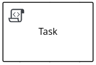 |
User task |
|
Service task |
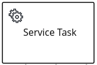 |

- Business rule task
-
A business rule task specifies a business decision to be executed either through a Decision Model and Notation (DMN) model or a Drools Rule Language (DRL) rule unit.
When a process reaches a business rule task defined by a DMN model, the process engine executes the DMN model decision with the inputs provided.
When a process reaches a business rule task defined by a DRL rule unit, the process engine begins executing the rules in the designated rule unit group. When there are no more active rules in the rule unit, the execution continues to the next element. During the rule unit execution, new activations in the rule unit are added to the decision engine agenda because these activations are changed by other rules.
In the Kogito BPMN modeler, you can modify the following properties for a selected business rule task:
Table 104. Business rule task properties Label Description Name
Identifies the name of the task.
Documentation
Describes the task. The text in this field is included in the process documentation, if applicable.
Rule Language
Determines whether the task invokes a decision from a Decision Model and Notation (DMN) model or a Drools Rule Language (DRL) rule unit.
Rule Flow Group (for DRL)
Defines the DRL rule unit in the format
unit:PACKAGE_NAME.UNIT_NAME, such asunit:org.acme.PersonRules. This rule unit syntax specifies that you are using a rule unit instead of a traditional rule flow group.Namespace, Decision Name, DMN Model Name (for DMN)
Identifies the relevant DMN model as found in the DMN model file.
On Entry Action
Not supported in Kogito. This property defines a Java, JavaScript, or MVEL script that directs an action at the start of the task, and is currently available only in distributions of the BPMN modeler in jBPM.
On Exit Action
Not supported in Kogito. This property defines a Java, JavaScript, or MVEL script that directs an action at the end of the task, and is currently available only in distributions of the BPMN modeler in jBPM.
Is Async
Determines whether this task is invoked asynchronously. Make tasks asynchronous if they cannot be executed instantaneously, such as a task performed by an outside service.
AdHoc Autostart
Determines whether this is an ad hoc task that is started automatically. This option enables the task to automatically start when the process is created instead of being started by the completion of the previous node or by a signal event.
SLA Due Date
Specifies the date when the service level agreement (SLA) expires.
Assignments
Defines data input and output for the task. Click to open the Data I/O window and add data input and output as required.
Metadata Attributes
Defines custom metadata attribute name and value that you want to use for custom event listeners, such as a listener to implement some action when a metadata attribute is present.
The Metadata Attributes enable the new
metaDataextensions to BPMN diagrams and modify the behavior of the overall task. - Script task
-
A script task represents a script to be executed during the process execution. The associated script can access process variables. When a script task is reached during execution, the script is executed and the outgoing flow is taken.
Review the following list of suggestions before using a script task:
-
Avoid low-level implementation details in the process. Although you can use a script task to manipulate variables, consider using a service task when modeling more complex operations.
-
Ensure that the script is executed immediately. If the script is not intended to be executed immediately, consider using an asynchronous service task.
-
Avoid contacting external services through a script task. Use a service task to model communication with an external service.
-
Ensure scripts do not generate exceptions. Runtime exceptions should be caught and managed inside the script or transformed into signals or errors that can then be handled inside the process.
In the Kogito BPMN modeler, you can modify the following properties for a selected script task:
Table 105. Script task properties Label Description Name
Identifies the name of the task.
Documentation
Describes the task. The text in this field is included in the process documentation, if applicable.
Script
Defines a Java, JavaScript, or MVEL script to be executed by the task and specifies the script type.
Is Async
Determines whether this task is invoked asynchronously. Make tasks asynchronous if they cannot be executed instantaneously, such as a task performed by an outside service.
AdHoc Autostart
Determines whether this is an ad hoc task that is started automatically. This option enables the task to automatically start when the process is created instead of being started by the completion of the previous node or by a signal event.
Metadata Attributes
Defines custom metadata attribute name and value that you want to use for custom event listeners, such as a listener to implement some action when a metadata attribute is present.
The Metadata Attributes enable the new
metaDataextensions to BPMN diagrams and modify the behavior of the overall task. -
- User task
-
A user task is an activity in the process workflow that cannot be performed automatically by the system and therefore requires the intervention of a human user, or actor.
On execution, the user task element is instantiated as a task that appears in the list of tasks of one or more actors. If a user task element defines the
Groupsproperty, the task is displayed in task lists of all users that are members of the group. Any user who is a member of the group can claim the task. After a user task is claimed, the task disappears from the task list of the other users.In the Kogito BPMN modeler, you can modify the following properties for a selected user task:
Table 106. User task properties Label Description Name
Identifies the name of the task.
Documentation
Describes the task. The text in this field is included in the process documentation, if applicable.
Task Name
Identifies the name of the task as it is displayed to human user (actor).
Subject
Defines the subject for the task.
Actors
Specifies the authorized human users (actors) who can complete the user task. Click Add to add a row and then select an actor from the list or click New to add a new actor.
Groups
Specifies the authorized group of human users (actors) who can complete the user task. Click Add to add a row and then select a group from the list or click New to add a new group. Any actor in the group can complete the user task.
Assignments
Defines data input and output for the task. Click to open the Data I/O window and add data input and output as required.
Reassignments
Specifies a different actor to complete the task.
Notifications
Defines notifications associated with the task.
Is Async
Determines whether this task is invoked asynchronously. Make tasks asynchronous if they cannot be executed instantaneously, such as a task performed by an outside service.
Skippable
Determines whether the task is optional and can be skipped.
Priority
Defines a priority for the task.
Description
Describes the task as it is displayed to a human user (actor).
Created By
Specifies the human user (actor) who created the task. Click Add to add a row and then select a user from the list or click New to add a new user.
AdHoc Autostart
Determines whether this is an ad hoc task that is started automatically. This option enables the task to automatically start when the process is created instead of being started by the completion of the previous node or by a signal event.
Multiple Instance
Determines whether this task has multiple instances.
On Entry Action
Not supported in Kogito. This property defines a Java, JavaScript, or MVEL script that directs an action at the start of the task, and is currently available only in distributions of the BPMN modeler in jBPM.
On Exit Action
Not supported in Kogito. This property defines a Java, JavaScript, or MVEL script that directs an action at the end of the task, and is currently available only in distributions of the BPMN modeler in jBPM.
Content
Defines the content of the script.
SLA Due Date
Specifies the date when the service level agreement (SLA) expires.
Metadata Attributes
Defines custom metadata attribute name and value that you want to use for custom event listeners, such as a listener to implement some action when a metadata attribute is present.
The Metadata Attributes enable the new
metaDataextensions to BPMN diagrams and modify the behavior of the overall task. - Service task
-
A service task is an activity that is completed automatically by an external software service and does not require human interaction.
In the Kogito BPMN modeler, you can modify the following properties for a selected service task:
Table 107. Service task properties Label Description Name
Identifies the name of the task.
Documentation
Describes the task. The text in this field is included in the process documentation, if applicable.
Implementation
Determines whether the task is implemented in Java or is a web service.
Interface
Defines the class used to implement the script, for example,
org.xyz.HelloWorld.Operation
Defines the method called by the interface, for example,
sayHello().Assignments
Defines data input and output for the task. Click to open the Data I/O window and add data input and output as required.
AdHoc Autostart
Determines whether this is an ad hoc task that is started automatically. This option enables the task to automatically start when the process is created instead of being started by the completion of the previous node or by a signal event.
Is Async
Determines whether this task is invoked asynchronously. Make tasks asynchronous if they cannot be executed instantaneously, such as a task performed by an outside service.
Multiple Instance
Determines whether this task has multiple instances.
On Entry Action
Not supported in Kogito. This property defines a Java, JavaScript, or MVEL script that directs an action at the start of the task, and is currently available only in distributions of the BPMN modeler in jBPM.
On Exit Action
Not supported in Kogito. This property defines a Java, JavaScript, or MVEL script that directs an action at the end of the task, and is currently available only in distributions of the BPMN modeler in jBPM.
SLA Due Date
Specifies the date when the service level agreement (SLA) expires.
Metadata Attributes
Defines custom metadata attribute name and value that you want to use for custom event listeners, such as a listener to implement some action when a metadata attribute is present.
The Metadata Attributes enable the new
metaDataextensions to BPMN diagrams and modify the behavior of the overall task.
A service task also allows you to add a parameter of type org.kie.kogito.internal.process.runtime.KogitoProcessContext in your method signature to receive the process context, in which the task is executed. The following is an example of a service task using the process context:
@ApplicationScoped
public class CalculationService {
public Order calculateTotal(Order order, KogitoProcessContext context) {
System.out.println("Process Id = " + context.getProcessInstance().getStringId());
}
}3.1.7. Custom tasks supported in Kogito
The BPMN specification supports the ability to extend the bpmn2:task element to create custom tasks in a software implementation. Similar to standard BPMN tasks, custom tasks identify actions to be completed in a business process model, but they also include specialized functionality, such as compatibility with an external service of a specific type (REST, email, or web service) or checkpoint behavior within a process (milestone).
Kogito provides predefined custom tasks under Custom Tasks in the BPMN modeler palette, but currently does not support the ability for you to define your own custom task extensions.
Kogito currently supports the following predefined custom tasks:
| Custom task type | Custom task node |
|---|---|
Milestone |
- Milestone
-
A milestone represents a single point of achievement within a process instance. You can use milestones to flag certain events to trigger other tasks or track the progress of the process. Milestones are useful for Key Performance Indicator (KPI) tracking or for identifying the tasks that are still to be completed. Milestones can occur at the end of a stage in a process or they can be the result of achieving other milestones.
A milestone typically uses a defined input condition that must be met in order to complete the milestone. If no input condition is defined, the milestone is completed automatically when the process reaches the milestone. You can also configure milestones with the
AdHoc Autostartproperty to be triggered automatically when the process starts or you can set the Signal definition in a signal event in the process to trigger the milestone explicitly. Milestones can be triggered as many times as required. A milestone is achieved when the condition is met or is achieved automatically if no condition is defined.In the following example process, several milestones control the process for IT hardware orders. For example, when the condition for the
Order placedmilestone is met, the completed milestone triggers a notification script task and leads to an end signal event that triggers the nextOrder shippedmilestone, and so on to subsequent milestones until the process is complete. Figure 160. Example process with milestonesFigure 161. Example end signal event configured to trigger the next milestone
Figure 160. Example process with milestonesFigure 161. Example end signal event configured to trigger the next milestoneMilestones can reach the following states during process execution:
-
Active: A milestone condition has been defined for the milestone node but it has not been met. -
Completed: A milestone condition has been met (if applicable), the milestone has been achieved, and the process can proceed to the next task or can end.
In the Kogito BPMN modeler, you can modify the following properties for a selected milestone:
Table 109. Milestone properties Label Description Name
Identifies the name of the milestone.
Documentation
Describes the milestone. The text in this field is included in the process documentation, if applicable.
Is Async
Determines whether this milestone is invoked asynchronously. Make milestones asynchronous if they cannot be executed instantaneously, such as in a process performed by an outside service.
AdHoc Autostart
Determines whether this is an ad hoc milestone that is started automatically. This option enables the milestone to automatically start when the process is created instead of being started by a signal event.
On Entry Action
Not supported in Kogito. This property defines a Java, JavaScript, or MVEL script that directs an action at the start of the milestone, and is currently available only in distributions of the BPMN modeler in jBPM.
On Exit Action
Not supported in Kogito. This property defines a Java, JavaScript, or MVEL script that directs an action at the end of the milestone, and is currently available only in distributions of the BPMN modeler in jBPM.
SLA Due Date
Specifies the date when the service level agreement (SLA) expires.
Assignments
Defines data input and output for the milestone. Click to open the Data I/O window and add data input and output as required. A milestone typically uses a defined input condition that must be met in order to complete the milestone. If no input condition is defined, the milestone is completed automatically when the process reaches the milestone.
For each milestone that requires a condition, enter at least one input data assignment with the following values:
-
Name:
Condition -
Data Type:
String -
Source: Enter a Java expression for the condition to be met, such as
order.isShipped()in a process that uses anorderprocess variable.
Metadata Attributes
Defines custom metadata attribute name and value that you want to use for custom event listeners, such as a listener to implement some action when a metadata attribute is present.
The Metadata Attributes enable the new
metaDataextensions to BPMN diagrams and modify the behavior of the overall task. -
3.1.8. Subprocesses supported in Kogito
BPMN subprocesses are portions of a parent process that contain process nodes. You can embed part of the parent process within a subprocess. You can also include variable definitions within the subprocess. These variables are accessible to all nodes inside the subprocess.
A subprocess must have one incoming connection and one outgoing connection. A terminate end event inside a subprocess ends the subprocess instance but does not automatically end the parent process instance. A subprocess ends when there are no more active elements in it.
In the following example, the Place order subprocess checks whether sufficient stock is available to place the order and updates the stock information if the order can be placed. The customer is then notified through the main process based on whether the order was placed.
Kogito currently supports the following subprocesses:
| Subprocess type | Subprocess node |
|---|---|
Embedded subprocess |
|
Ad hoc subprocess |
|
Reusable subprocess |
- Embedded subprocess
-
An embedded subprocess encapsulates a part of the parent process and shares the parent process data. This subprocess must contain a start event and at least one end event. You can define local subprocess variables that are accessible to all elements inside this container.
Multiple-instance behavior is currently not supported for embedded subprocesses in Kogito. In the Kogito BPMN modeler, you can modify the following properties for a selected embedded subprocess:
Table 111. Embedded subprocess properties Label Description Name
Identifies the name of the subprocess.
Documentation
Describes the subprocess. The text in this field is included in the process documentation, if applicable.
On Entry Action
Not supported in Kogito. This property defines a Java, JavaScript, or MVEL script that directs an action at the start of the subprocess, and is currently available only in distributions of the BPMN modeler in jBPM.
On Exit Action
Not supported in Kogito. This property defines a Java, JavaScript, or MVEL script that directs an action at the end of the subprocess, and is currently available only in distributions of the BPMN modeler in jBPM.
Is Async
Determines whether this subprocess is invoked asynchronously. Make subprocesses asynchronous if they cannot be executed instantaneously, such as a subprocess performed by an outside service.
SLA Due Date
Specifies the date when the service level agreement (SLA) expires.
Process Variables
Defines any process variables for the subprocess. Process variables are visible within the specific subprocess instance. Process variables are initialized at subprocess creation and destroyed on subprocess completion. Variable Tags provide greater control over the variable behavior, such as whether the variable is
requiredorinternal. For more information about variable tags, see Variables in Kogito processes.Metadata Attributes
Defines custom metadata attribute name and value that you want to use for custom event listeners, such as a listener to implement some action when a metadata attribute is present.
The Metadata Attributes enable the new
metaDataextensions to BPMN diagrams and modify the behavior of the overall subprocess. - Ad hoc subprocess
-
An ad hoc subprocess contains embedded inner activities and is intended to be executed with a more flexible ordering compared to the typical routing of processes. Unlike typical processes, an ad hoc subprocess does not contain a complete, structured BPMN diagram description, such as from a start event to an end event. Instead, the ad hoc subprocess contains only activities, sequence flows, gateways, and intermediate events. An ad hoc subprocess can also contain data objects and data associations.
The activities within ad hoc subprocesses are not required to have incoming and outgoing sequence flows. However, you can specify sequence flows between some of the contained activities. Sequence flows provide the same ordering constraints in ad hoc subprocesses as in a typical process. Any intermediate events must have outgoing sequence flows and they can be triggered multiple times while the ad hoc subprocess is active.
In the Kogito BPMN modeler, you can modify the following properties for a selected ad hoc subprocess:
Table 112. Ad hoc subprocess properties Label Description Name
Identifies the name of the subprocess.
Documentation
Describes the subprocess. The text in this field is included in the process documentation, if applicable.
AdHocActivationCondition
Defines a Java expression that determines when the subprocess is activated, such as
order.isShipped()in a process that uses anorderprocess variable. To activate the subprocess automatically when the parent process starts, leave this field empty with no condition specified.This field supports only Java expressions and does not support Drools expressions as indicated in the field label. This label will be updated in a future release. AdHocCompletionCondition
Defines a Java expression that determines when the subprocess is completed, such as
order.isDelivered()in a process that uses anorderprocess variable. By default, this field contains the valueautocompleteto complete the subprocess automatically when the subprocess ends.This field supports only Java expressions and does not support Drools and MVEL expressions as indicated in the field label. This label will be updated in a future release. AdHocOrdering
Not supported in Kogito. This property specifies whether the subprocess is executed in Sequential or Parallel order in the parent process, and is currently available only in distributions of the BPMN modeler in jBPM.
AdHoc Autostart
Determines whether this ad hoc subprocess is started automatically. This option enables the subprocess to automatically start when the subprocess is created instead of being started by the completion of the previous node or by a signal event.
On Entry Action
Not supported in Kogito. This property defines a Java, JavaScript, or MVEL script that directs an action at the start of the subprocess, and is currently available only in distributions of the BPMN modeler in jBPM.
On Exit Action
Not supported in Kogito. This property defines a Java, JavaScript, or MVEL script that directs an action at the end of the subprocess, and is currently available only in distributions of the BPMN modeler in jBPM.
Is Async
Determines whether this subprocess is invoked asynchronously. Make subprocesses asynchronous if they cannot be executed instantaneously, such as a subprocess performed by an outside service.
SLA Due Date
Specifies the date when the service level agreement (SLA) expires.
Process Variables
Defines any process variables for the subprocess. Process variables are visible within the specific subprocess instance. Process variables are initialized at subprocess creation and destroyed on subprocess completion. Variable Tags provide greater control over the variable behavior, such as whether the variable is
requiredorinternal. For more information about variable tags, see Variables in Kogito processes.Metadata Attributes
Defines custom metadata attribute name and value that you want to use for custom event listeners, such as a listener to implement some action when a metadata attribute is present.
The Metadata Attributes enable the new
metaDataextensions to BPMN diagrams and modify the behavior of the overall subprocess. - Reusable subprocess
-
A reusable subprocess calls another process or subprocess instance to be used within a parent process. This subprocess enables you to reuse the same process repeatedly without manually duplicating the subprocess. This subprocess typically appears collapsed within the parent process.
In the Kogito BPMN modeler, you can modify the following properties for a selected reusable subprocess:
Table 113. Reusable subprocess properties Label Description Name
Identifies the name of the subprocess.
Documentation
Describes the subprocess. The text in this field is included in the process documentation, if applicable.
Called Element
Specifies the ID of the process or subprocess that the activity calls and instantiates.
Independent
Determines whether the subprocess is started and completed independently of the parent process or whether the subprocess is canceled when the parent process is terminated.
Abort Parent
(Available only when Independent is not selected.) Determines whether a dependent reusable subprocess can abort the parent process when the subprocess is aborted or when an error occurs during the subprocess execution.
Wait for completion
Determines whether the parent process must wait for this subprocess to complete before continuing.
Is Async
Determines whether this subprocess is invoked asynchronously. Make subprocesses asynchronous if they cannot be executed instantaneously, such as a subprocess performed by an outside service.
Multiple Instance
Determines whether the subprocess is executed multiple times. When you select this option, the following additional options appear:
-
MI Execution mode: Specifies whether the multiple subprocess instances are executed in Sequential or Parallel order as each instance is triggered. In sequential order, a triggered subprocess starts only after the previous subprocess instance completes. In parallel order, a subprocess instance starts whenever it is triggered and can run in parallel with any other triggered subprocesses.
-
MI Collection input: Specifies the process variable that represents a collection of elements for which new instances are created. The subprocess is instantiated as many times as needed according to the size of the collection.
-
MI Data Input: Specifies the name of the process variable that contains the selected element in the collection. The variable is used to access elements in the collection.
-
MI Collection output: (Optional) Specifies the process variable that represents the collection of elements that gather the output of the multi-instance node.
-
MI Data Output: Specifies the name of the process variable that is added to the output collection that you selected in the MI Collection output property.
-
MI Completion Condition: Not supported in Kogito. This property defines a Java expression that is evaluated on each completed subprocess instance, and is currently available only in distributions of the BPMN modeler in jBPM.
On Entry Action
Not supported in Kogito. This property defines a Java, JavaScript, or MVEL script that directs an action at the start of the subprocess, and is currently available only in distributions of the BPMN modeler in jBPM.
On Exit Action
Not supported in Kogito. This property defines a Java, JavaScript, or MVEL script that directs an action at the end of the subprocess, and is currently available only in distributions of the BPMN modeler in jBPM.
SLA Due Date
Specifies the date when the service level agreement (SLA) expires.
Assignments
Defines data input and output for the task. Click to open the Data I/O window and add data input and output as required.
Metadata Attributes
Defines custom metadata attribute name and value that you want to use for custom event listeners, such as a listener to implement some action when a metadata attribute is present.
The Metadata Attributes enable the new
metaDataextensions to BPMN diagrams and modify the behavior of the overall subprocess. -
3.1.9. Gateways supported in Kogito
BPMN gateways create or synchronize branches in a process workflow using a set of conditions in a gating mechanism. BPMN2 supports converging gateways that merge multiple flows into one flow, and diverging gateways that split one flow into multiple flows. One gateway cannot have multiple incoming and multiple outgoing flows.
In the following business process diagram, the exclusive (XOR) gateway evaluates only the incoming flow whose condition evaluates to true:

In this example, the customer details are verified by a user and the process is assigned to a user for approval. If the request is approved, an approval notification is sent to the user. If the request is rejected, a rejection notification is sent to the user.
Kogito currently supports the following gateways:
| Gateway type | Icon |
|---|---|
Exclusive (XOR) |
|
Inclusive (OR) |
|
Parallel (AND) |
|
Event (AND) |

- Exclusive
-
A diverging exclusive gateway selects only the first incoming flow that evaluates to true and that contains the lowest
prioritynumber, if applicable. A converging exclusive gateway activates the next node for each triggered incoming flow.Ensure that at least one of the outgoing flows evaluates to true at runtime. If no outgoing flows evaluate to true, the process instance terminates with a runtime exception.
Although priorities are evaluated in Kogito, the BPMN2 specification does not guarantee the priority order. Avoid depending on the
priorityattribute in your workflow.A converging exclusive gateway also enables a workflow branch to continue to its outgoing flow as soon as it reaches the gateway. When one of the incoming flows triggers the gateway, the workflow continues to the outgoing flow of the gateway. If a gateway is triggered by more than one incoming flow, the gateway activates the next node for each trigger.
- Inclusive
-
A diverging inclusive gateway selects the incoming flow and all outgoing flows that evaluate to true. Connections with lower
prioritynumbers are triggered before triggering higherpriorityconnections. Although priorities are evaluated, the BPMN2 specification does not guarantee the priority order. Avoid depending on thepriorityattribute in your workflow.Ensure that at least one of the outgoing flows evaluates to true at runtime. If no outgoing flows evaluate to true, the process instance terminates with a runtime exception.
Although priorities are evaluated in Kogito, the BPMN2 specification does not guarantee the priority order. Avoid depending on the
priorityattribute in your workflow.A converging inclusive gateway also merges all incoming flows previously created by an inclusive diverging gateway. A converging inclusive gateway acts as a synchronizing entry point for the inclusive gateway branches.
- Parallel
-
A parallel gateway synchronizes and creates parallel flows. A diverging parallel gateway selects the incoming flow and all outgoing flows simultaneously. A converging parallel gateway waits until all incoming flows have entered and then triggers the outgoing flow.
- Event
-
An event gateway is only diverging and reacts to possible events, as opposed to the data-based exclusive gateway that reacts to the process data. An event gateway selects the outgoing flow based on the event that occurs, and selects only one outgoing flow at a time. An event gateway might act as a start event, where the process is instantiated only if one of the intermediate events connected to the event-based gateway occurs.
3.1.10. Connectors supported in Kogito
BPMN connectors create an association between two components in a process. When a connector is directed, the association is sequential and indicates that one of the elements is executed immediately before the other within an instance of the process. Connectors can start and end at the top, bottom, right, or left of the process components being associated. The BPMN2 specification allows you to use your discretion, placing connectors in a way that makes the process behavior easy to follow and understand.
Kogito currently supports only sequence flow connectors. A sequence flow connects elements of a process and defines the order in which those elements are executed within an instance.
3.2. Creating and editing BPMN models in the Kogito BPMN modeler
You can use the Apache KIE™ Kogito Bundle in VSCode to design BPMN process models and define process logic for a complete and functional BPMN model.
Kogito currently supports a subset of the Business Process Model and Notation 2.0 specification. Although the Kogito BPMN modeler displays many BPMN components in the canvas palette, the process engine (process runtime component) in Kogito currently executes only the supported subset of components. If you use any BPMN components from the Kogito BPMN modeler palette that are not supported by the process engine, your Kogito project might fail to compile or execute. Additional BPMN components are added to Kogito runtime support with every release.
For more information about BPMN2 support in Kogito, see BPMN2 support in Kogito.
-
VSCode is installed.
-
The Apache KIE™ Kogito Bundle VSCode extension is installed and enabled in your VSCode IDE. For information about enabling the VSCode extension, see Creating and running your first Kogito services.
-
You have created a Kogito project and have included any Java objects required for your Kogito service. For information about creating a project, see Creating and running your first Kogito services.
-
In your VSCode IDE, create or import a BPMN file in the relevant folder of your Kogito project, typically in
src/main/resources.When you finish creating your process model, you can click Download in the Apache KIE™ Sandbox page to import your BPMN file into your Kogito project. -
Open the new or imported BPMN file to view the process diagram in the Kogito BPMN modeler.
If the process diagram does not open in the Kogito BPMN modeler, ensure that you have installed and enabled the Apache KIE™ Kogito Bundle VSCode extension.
If the Kogito BPMN modeler opens only the XML source of the BPMN file and displays an error message, review the reported errors and the BPMN model file to ensure that all BPMN elements are correctly defined.
-
Select the background of the BPMN modeler canvas and, in the upper-right corner of the modeler, click Properties to add or verify information for the BPMN file as described in the following table:
Table 115. General process properties Label Description Name
Enter the name of the process.
Documentation
Describes the process. The text in this field is included in the process documentation, if applicable.
ID
Enter an identifier for this process, such as
orderItems.Package
Enter the package location for this process in your Kogito project, such as
org.acme.ProcessType
Specify whether the process is public or private (or null, if not applicable).
Version
Enter the artifact version for the process.
Ad hoc
Select this option if this process is a flexible process that uses other ad hoc auto-start fragments and that does not require strict start and end events.
Process Instance Description
Enter a description of the process purpose.
Imports
Click to open the Imports window and add any data object classes required for your process.
Executable
Select this option to make the process executable as part of your Kogito project.
SLA Due Date
Enter the date when the service level agreement (SLA) expires.
Process Variables
Add any process variables for the process. Process variables are visible within the specific process instance. Process variables are initialized at process creation and destroyed on process completion. Variable Tags provide greater control over the variable behavior, such as whether the variable is
requiredorinternal. For more information about variable tags, see Variables in Kogito processes.Metadata Attributes
Add any custom metadata attribute name and value that you want to use for custom event listeners, such as a listener to implement some action when a metadata attribute is present.
You can also use this field to configure role-based access to the process. To configure role-based access, set the attribute Name to
securityRolesand set the attribute value to the relevant group or groups defined for the process, such asemployees,managers.Global Variables
Not supported in Kogito. Global variables are visible to all process instances and assets in a project, and apply only to distributions of the BPMN modeler in jBPM.
The Metadata Attributes entries are similar to Process Variables tags in that they enable new
metaDataextensions to BPMN diagrams. However, process variable tags modify the behavior of specific process variables, such as whether a certain variable isrequiredorinternal, whereas metadata attributes are key-value definitions that modify the behavior of the overall process, such as whether the process containssecurityRolesor is used in conjunction with a custom event listener.For example, the following custom metadata attribute
riskLeveland valuelowin a BPMN process correspond to a custom event listener for starting the process: Figure 164. Example metadata attribute and value in the BPMN modelerExample metadata attribute and value in the BPMN file
Figure 164. Example metadata attribute and value in the BPMN modelerExample metadata attribute and value in the BPMN file<bpmn2:process id="approvals" name="approvals" isExecutable="true" processType="Public"> <bpmn2:extensionElements> <tns:metaData name="riskLevel"> <tns:metaValue><![CDATA[low]]></tns:metaValue> </tns:metaData> </bpmn2:extensionElements>Example event listener with metadata valuepublic class MyListener implements ProcessEventListener { ... @Override public void beforeProcessStarted(ProcessStartedEvent event) { Map < String, Object > metadata = event.getProcessInstance().getProcess().getMetaData(); if (metadata.containsKey("low")) { // Implement some action for that metadata attribute } } } -
Begin adding components to your new or imported BPMN process model by clicking and dragging one of the BPMN nodes from the left palette:
Figure 165. Adding BPMN componentsAlthough the Kogito BPMN modeler displays many BPMN components in the canvas palette, the process engine (process runtime component) in Kogito currently supports only the following BPMN components:
-
Start events
-
Start
-
Start Signal
-
Start Timer
-
Start Message
-
-
Intermediate events
-
Intermediate Signal (catching and boundary)
-
Intermediate Timer (catching and boundary)
-
Intermediate Message (catching, boundary, and throwing)
-
-
End events
-
End
-
End Error
-
End Terminate
-
End Message
-
-
Tasks
-
Business Rule
-
User
-
Service
-
Script
-
-
Subprocesses
-
Embedded
-
Reusable
-
-
Gateways
-
Parallel
-
Event
-
Exclusive
-
Inclusive
-
-
-
In the BPMN modeler canvas, for each new BPMN component that you add, select the new node, and in the upper-right corner of the BPMN modeler, click Properties to define the node identity and behavior.
For more information about BPMN component properties, see BPMN2 support in Kogito.
For this example, use a business rule task based on a Decision Model and Notation (DMN) decision model as your first activity node.
This example assumes that you have the following assets in your Kogito project:
-
A Java object
org.acme.Person -
A DMN model
PersonDecisions.dmnwith the namespacehttps://kie.org/dmn/_F322E39A-1EF2-470E-BD8C-960352D1EA36
-
-
In the left palette, select Activities → Business Rule, drag the task to the canvas, and link to it from a start event.
-
Select the business rule task and define the following properties:
-
General: Name the rule task
Evaluate person. -
Implementation/Execution: Set the following values:
-
Rule Language:
DMN -
Namespace:
https://kie.org/dmn/_F322E39A-1EF2-470E-BD8C-960352D1EA36 -
Decision Name:
isAdult -
DMN Model Name:
PersonDecisions
-
-
Data Assignments: Add the following assignments:
-
Data Input: Add a data input with the name
Person, with the typeorg.acme.Person, and with the sourceperson. -
Data Output: Add a data output with the name
isAdult, with the typeBoolean, and with the sourceisAdult.
-
-
-
In the left palette, select Gateways → Exclusive, drag the gateway to the canvas, and link to it from the rule task.
-
In the left palette, select Activities → User, drag the user task to the canvas, and link to it from the exclusive gateway.
-
Select the user task and define the following properties:
-
General: Name the user task
Special handling for children. -
Implementation/Execution: Set the task name to
ChildrenHandling, and add a data input with the nameperson, the typeorg.acme.Person, and the sourceperson.
-
-
In the left palette, select End Events → End, drag two end events to the canvas, and link to one end event from the user task and to the other end event from the exclusive gateway.
-
Select the connector that connects the exclusive gateway to the end event and for the Implementation/Execution property, set the Condition Expression to
Javaand enter the conditionreturn isAdult == true;. -
Select the connector that connects the exclusive gateway to the user task and for the Implementation/Execution property, set the Condition Expression to
Javaand enter the condition toreturn isAdult == false; -
Save the BPMN process file.
The following is the BPMN model for applicant age evaluation in this example:
Figure 166. Examplepersons.bpmn2BPMN processYou can continue adding or modifying any remaining components and properties of your BPMN process or create a separate example.
The following are additional BPMN models that are used with the
persons.bpmn2process as part of the same example application:
Figure 167. Exampleorders.bpmn2process
Figure 168. ExampleorderItems.bpmn2process invoked as a subprocessAs an illustration of a more complex use case, the following is an example BPMN model from a separate mortgage loan application for determining loan approval:
Figure 169. Example business process for a mortgage loan applicationFor more Kogito examples and instructions for using them, see the
kogito-examplesrepository in GitHub.
3.3. Variables in Kogito processes
Variables in Kogito processes store data that is used during runtime. The Kogito BPMN modeler supports the following types of variables:
-
Process variables: Variables that are visible within a specific process instance. Process variables are initialized at process creation and destroyed on process completion.
-
Local variables: Variables that are visible within a specific process component, such as a task. Local variables are initialized when the element context is initialized (when the execution workflow enters the node and execution of the
onEntryaction has finished, if applicable). Local variables are destroyed when the element context is destroyed (when the execution workflow leaves the element).
A BPMN component, such as a process, subprocess, or task, can only access variables in its own context or in its parent context. A component cannot access a variable defined in a child component. When a BPMN component requires access to a variable during runtime, its own context is searched first.
If the variable cannot be found directly in the component context, the immediate parent context is searched. The search continues until the process context is reached.
If the variable cannot be found, a read access request returns null, a write access produces an error message, and the process continues its execution. Variables are searched for based on their unique ID.
3.3.1. Variable tags in BPMN process files
For greater control over variable behavior, you can tag process variables and local variables in the BPMN process file. Tags are simple string values that you add as metadata to a specific variable.
Kogito supports the following tags for process variables and local variables:
-
internal: Sets the variable as internal only for a process instance and hides the variable from the exposed REST model. For example, you can use this tag with intermediate variables that help hold some state during the execution of the process but are not part of the domain. -
required: Sets the variable as a requirement in order to start a process instance. If a process instance starts without the required variable, Kogito generates aVariableViolationExceptionerror. -
readonly: Indicates that the variable is for informational purposes only and can be set only once during process instance execution. If the value of a read-only variable is modified at any time, Kogito generates aVariableViolationExceptionerror. -
input: Sets the variable as an input of the process and therefore is not exposed in the returned data model. As a result, the value of an input variable is not returned in response to REST requests. -
output: Sets the variable as an output of the process and therefore is not expected for a process start and is included in the returned data model. As a result, the value of an output variable is returned in response to REST requests. -
business-relevant: Indicates that the variable is relevant for a particular item of business value. This tag is helpful for monitoring purposes or for implying that the variable is relevant to another application. -
tracked: Sets a variable to be tracked for changes so that Kogito generates events anytime the value of this variable is changed. Events are published to thekogito-variables-eventstopic in Kogito, where you can access the previous and new values.
You can define a variable tag in the {KOGITO} BPMN modeler in VSCode, or you can add the tag directly in the BPMN process source file as a customTags metadata property with the tag value defined in the format ![CDATA[TAG_NAME]].
For example, the following BPMN process applies the required tag to an approver process variable:
<bpmn2:property id="approver" itemSubjectRef="ItemDefinition_9" name="approver">
<bpmn2:extensionElements>
<tns:metaData name="customTags">
<tns:metaValue><![CDATA[required]]></tns:metaValue>
</tns:metaData>
</bpmn2:extensionElements>
</bpmn2:property>You can use multiple tags for a variable where applicable, but use caution and ensure that the tags are logical and do not conflict. For example, avoid tagging a variable as both internal and required.
By default, if a process variable has no tag assigned to it, Kogito assigns an input and an output tag to it.
You can also define custom variable tags in your BPMN files to make variable data available to Kogito process event listeners. Custom tags do not influence the Kogito runtime as the standard variable tags do and are for informational purposes only. You define custom variable tags in the same customTags metadata property format that you use for standard Kogito variable tags.
3.3.2. Defining process variables in Kogito processes
Process variables are visible within a specific process instance. Process variables are initialized at process creation and destroyed on process completion. You can map process variables to local variables.
-
In your VSCode IDE, open the relevant BPMN process file to view the process in the Kogito BPMN modeler.
-
Select the background of the BPMN modeler canvas and, in the upper-right corner of the modeler, click Properties.
-
Under Process Data → Process Variables, click the plus icon to add a new process variable and enter the following values:
-
Name: Enter the name of the process variable, such as
orderfor a process variable with order information shared by all applicable nodes in the process. -
Data Type: Enter a custom or standard data type of the variable, such as
org.acme.Order. Figure 171. Example process variables in BPMN modeler
Figure 171. Example process variables in BPMN modeler
-
3.3.3. Defining local variables in Kogito processes
Local variables are visible within a specific process component, typically a task. Local variables are initialized when the element context is initialized (when the execution workflow enters the node and execution of the onEntry action has finished, if applicable). Local variables are destroyed when the element context is destroyed (when the execution workflow leaves the element).
You can map local variables to global or process variables. This mapping enables you to maintain relative independence from the parent context that accommodates the local variable. This isolation helps prevent technical exceptions.
For tasks, with the exception of script tasks, you define local variables as data input or output assignments under Assignments in the task properties. Data input assignments define variables that enter the task and provide the entry data required for the task execution. Data output assignments refer to the context of the task after execution to acquire output data.
User tasks present data related to the actor who is completing the user task. User tasks also require the actor to provide result data related to the execution.
-
In your VSCode IDE, open the relevant BPMN process file to view the process in the Kogito BPMN modeler.
-
Select the relevant task (non-script task) and, in the upper-right corner of the modeler, click Properties.
-
Under Assignments, click the edit icon to open the Data I/O window, and click Add to begin adding local variables as data input or output:
-
Name: Enter the name of the data input or output, such as
personfor a local variable with person information as the input andisAdultfor a local variable with adult status as the output. -
Data Type: Enter a custom or standard data type of the data input or output, such as
org.acme.Person. -
Source or Target: Enter the source object for the data input or the target object for the data output, such as
personfor a Java class with person information.Figure 172. Example local variables in BPMN modeler
-
3.4. Persistence in Kogito services
Kogito supports runtime persistence for preserving process data in your services, such as active process nodes and process instance variables, across application restarts.
For Kogito persistence, you can use one of the following supported persistence stores:
-
Infinispan: (Default) Persists data using configured key-value storage definitions
-
MongoDB: Persists data using a document-based format
-
Kafka Streams: (Quarkus only) Persists data in Kafka clusters
-
JDBC: Persists data to different relational databases such as PostgreSQL and Oracle using JDBC driver.
-
File system: Persists data to files in the file system.
Runtime persistence is intended primarily for storing data that is required to resume workflow execution for a particular process instance. Persistence applies to both public and private processes that are not yet complete. Once a process completes, persistence is no longer applied. This persistence behavior means that only the information that is required to resume execution is persisted.
Node instances that are currently active or in wait states are persisted. When a process instance finishes execution but has not reached the end state (completed or aborted), the node instance data is persisted.
Persistence setup scripts for Kogito runtimes and Kogito runtimes supporting services are included in the kogito-ddl-10.0.0.0-db-scripts.zip artifact.
3.4.1. Persistence workflow in Kogito
In Kogito, a process instance is persisted when the process reaches a wait state, where the process does not execute anymore but has not reached the end state (completed or aborted).
For example, when a process reaches a user task or a catching signal event, the process instance pauses and the Kogito process engine takes a complete snapshot of the process, including the following data:
-
Process instance metadata, such as process instance ID, process definition ID, state, description, and start date
-
Process instance variables
-
Active node instances, including local variables
Process instance metadata is persisted with a predefined protobuf (protocol buffers) schema that is aware of the metadata and supports node instances that are in wait states.
For straight-through process instances that do not trigger any activity, persistence is not invoked and no data is stored.
Each persistence provider stores data according to their underlying mechanism. For instance, when using Infinispan, each process definition has its own cache for storing runtime information. The cache is based on the process definition ID and is named in the Infinispan Server. MongoDB creates a separated document collection per process definition whereas JDBC provider will use a single table for all processes but include the process definition ID in order to isolate operations. This setup facilitates maintenance of process instance data and reduces concurrency on the cache instances.
3.4.2. Persisted process instance variables and data types
Persisted process variables, local variables, and other process data are stored with the process instance. The stored data is marshalled into bytes format so it can be transferred and persisted into one of the supported persistence providers. The marshalling and unmarshalling is implemented based on protobuf (protocol buffers).
Kogito will persist all process instance variables defined in the process model once the execution reaches a wait state. Once the wait state is reached, marshalling will take place in order to transform all process variables into bytes, which can be accomplished using one of the following methods:
3.4.2.1. Persistence using Protobuf marshalling
Kogito generates both the protobuf schema (as PROTO files) and marshallers for persisting variables. The Kogito marshallers are based on the ProtoStream subproject of Infinispan.
When you build your Kogito project, Kogito scans all process definitions and extracts information about the data within the business assets. Based on the unique data types (regardless of how many processes reference a specified type), PROTO files are generated that build a complete schema for the application. These files are stored inside the /META-INF/resources/persistence/protobuf/ folder of the generated JAR file (e.g. quarkus-apps/quarkus/generated-bytecode.jar) and also in the target/classes/META-INF/resources/persistence/protobuf/ folder of your project after successful build.
syntax = "proto2";
package org.kie.kogito.examples.demo.orders;
import "kogito-index.proto";
import "kogito-types.proto";
option kogito_model = "Orders";
option kogito_id = "demo.orders";
/* @Indexed */
message Order {
option java_package = "org.kie.kogito.examples.demo.orders";
/* @Field(store = Store.YES) @SortableField */
optional string orderNumber = 1;
/* @Field(store = Store.YES) @SortableField */
optional bool shipped = 2;
/* @Field(store = Store.YES) @SortableField */
optional double total = 3;
}
/* @Indexed */
message Orders {
option java_package = "org.kie.kogito.examples.demo.orders";
/* @Field(store = Store.YES) @SortableField
@VariableInfo(tags="") */
optional string approver = 1;
/* @Field(store = Store.YES) @SortableField */
optional string id = 2;
/* @Field(store = Store.YES) @SortableField
@VariableInfo(tags="") */
optional Order order = 3;
/* @Field(store = Store.YES) @SortableField */
optional org.kie.kogito.index.model.KogitoMetadata metadata = 4;
}
Each PROTO file imports kogito-types.proto and kogito-index.proto files that automatically define the base types managed by Kogito.
|
Based on the PROTO files, marshallers are also generated and configured in the application so that whenever a particular data type is used in a process instance, the data is successfully marshalled and unmarshalled.
3.4.2.2. Persistence using Java serialization
To enable Java serialization, you should make sure all data types can be serialized. This means that classes should implement java.io.Serializable as well as have an empty constructor. It is also necessary to set kogito.persistence.proto.marshaller=false in your application.properties file.
In case you would like to use Quarkus native compilation, it is also necessary to follow the instructions so your data types can be serialized in native mode. For more details, visit (Quarkus registering for reflection)
The following annotation is usually required for Quarkus native mode:
import io.quarkus.runtime.annotations.RegisterForReflection;
@RegisterForReflection(serialization = true)
public class MyPojo implements Serializable {
}3.4.3. Supported data types for persisted variables
For optimal persistence with process data and variables, use Java objects as data types that represent your process variables. If you use other formats for data types, your data might not be persisted or your Kogito project might fail to compile.
Kogito currently supports the following data types for process variables:
| Data type | Description |
|---|---|
|
Basic text type |
|
Basic number type |
|
Extended size number type |
|
Basic floating point number type |
|
Extended size floating point number type |
|
Basic date type |
|
Basic boolean type |
|
Custom data types and other Java types such as Collections and Enums |
3.4.4. Enabling JDBC persistence for Kogito services
As an alternative to using Infinispan or MongoDB for Kogito runtime persistence, you can enable persistence for your Kogito services using JDBC. JDBC allows Kogito to persist data using different relational databases. We recommend using PostgreSQL. The complete list of supported databases is dependent on the target runtime you use, for instance, Quarkus supports the following JDBC datasources.
Kogito provides two ways to manage the database schema, either via manually applying the provided DDL kogito-ddl-10.0.0.0-db-scripts.zip, or via Flyway integration. The service does not create a schema by default.
Please check examples below on how to enable different databases using JDBC data sources.
3.4.4.1. Enabling PostgreSQL persistence using JDBC driver for Kogito services
You can enable PostgreSQL persistence for your Kogito services using JDBC driver.
-
PostgreSQL is installed. For information about PostgreSQL installation and configuration, see PostgreSQL documentation.
-
Add the following dependencies to the
pom.xmlfile of your Kogito project:On Quarkus<dependency> <groupId>org.kie</groupId> <artifactId>kie-addons-quarkus-persistence-jdbc</artifactId> <version>Kogito_VERSION</version> </dependency> <dependency> <groupId>io.quarkus</groupId> <artifactId>quarkus-jdbc-postgresql</artifactId> </dependency> <dependency> <groupId>io.quarkus</groupId> <artifactId>quarkus-agroal</artifactId> </dependency>On Spring Boot<dependency> <groupId>org.kie</groupId> <artifactId>kie-addons-springboot-persistence-jdbc</artifactId> <version>Kogito_VERSION</version> </dependency> <dependency> <groupId>org.postgresql</groupId> <artifactId>postgresql</artifactId> </dependency> <dependency> <groupId>org.springframework.boot</groupId> <artifactId>spring-boot-starter-jdbc</artifactId> </dependency> -
Add the following properties to the
src/main/resources/application.propertiesfile in your Kogito project to configure PostgreSQL and to connect to the PostgreSQL server.Replace the server host, port, and database information according to your PostgreSQL Server installation. By default, the database is named
kogito.On Quarkuskogito.persistence.type=jdbc quarkus.datasource.username=kogito-user quarkus.datasource.password=kogito-pass quarkus.datasource.jdbc.url=jdbc:postgresql://localhost:5432/kogito # Below properties are required to create database schema with Flyway at startup. quarkus.flyway.migrate-at-start=true quarkus.datasource.db-kind=postgresqlOn Spring Bootkogito.persistence.type=jdbc spring.datasource.username=kogito-user spring.datasource.password=kogito-pass spring.datasource.url=jdbc:postgresql://localhost:5432/kogito # Below properties are required to create database schema with Flyway at startup. spring.flyway.enabled=true spring.flyway.locations=classpath:db/{vendor}
For an example Kogito service with PostgreSQL persistence using JDBC driver, see the following example applications in GitHub:
-
process-postgresql-persistence-quarkus: Example on Quarkus -
process-postgresql-persistence-springboot: Example on SpringBoot
3.4.4.2. Enabling Oracle persistence using JDBC driver for Kogito services
You can enable Oracle persistence for your Kogito services using JDBC driver.
-
Oracle Database is installed and running.
-
Add the following dependencies to the
pom.xmlfile of your Kogito project:On Quarkus<dependency> <groupId>org.kie</groupId> <artifactId>kie-addons-quarkus-persistence-jdbc</artifactId> <version>Kogito_VERSION</version> </dependency> <dependency> <groupId>io.quarkus</groupId> <artifactId>quarkus-jdbc-oracle</artifactId> </dependency> <dependency> <groupId>io.quarkus</groupId> <artifactId>quarkus-agroal</artifactId> </dependency>On Spring Boot<dependency> <groupId>org.kie</groupId> <artifactId>kie-addons-springboot-persistence-jdbc</artifactId> <version>Kogito_VERSION</version> </dependency> <dependency> <groupId>com.oracle.database.jdbc</groupId> <artifactId>ojdbc8</artifactId> </dependency> <dependency> <groupId>org.springframework.boot</groupId> <artifactId>spring-boot-starter-jdbc</artifactId> </dependency> -
Add the following properties to the
src/main/resources/application.propertiesfile in your Kogito project to configure and to connect to the Oracle database.Replace the server host, port, and database information according to your Oracle Server installation. By default, the database is named as
kogito.On Quarkuskogito.persistence.type=jdbc quarkus.datasource.username=kogito quarkus.datasource.password=kogito quarkus.datasource.jdbc.url=jdbc:oracle://oracle:1521/kogito # Below properties are required to create database schema with Flyway at startup. quarkus.flyway.migrate-at-start=true quarkus.datasource.db-kind=oracleOn Spring Bootkogito.persistence.type=jdbc spring.datasource.username=kogito spring.datasource.password=kogito spring.datasource.url=jdbc:oracle://oracle:1521/kogito # Below properties are required to create database schema with Flyway at startup. spring.flyway.enabled=true spring.flyway.locations=classpath:db/{vendor}
3.4.5. Enabling Infinispan persistence for Kogito services
You can enable persistence for your Kogito services using Infinispan to persist data, such as active process nodes and process instance variables, so that the data is preserved across application restarts. For Kogito persistence with Infinispan, you must have a an Infinispan Server installed and running in order to enable persistence.
-
Infinispan Server 13.0.2 or later is installed and running. For information about Infinispan installation and configuration, see the Infinispan documentation.
-
Add the following dependencies to the
pom.xmlfile of your Kogito project:On Quarkus<dependency> <groupId>org.kie</groupId> <artifactId>kie-addons-quarkus-persistence-infinispan</artifactId> <version>Kogito_VERSION</version> </dependency>On Spring Boot<dependency> <groupId>org.kie</groupId> <artifactId>kie-addons-springboot-persistence-infinispan</artifactId> <version>Kogito_VERSION</version> </dependency> <dependency> <groupId>org.infinispan</groupId> <artifactId>infinispan-spring-boot-starter-remote</artifactId> <version>INFINISPAN_SPRING_BOOT_VERSION</version> </dependency> -
Add following property to the
src/main/resources/application.propertiesfile in your Kogito project to configure the connection to the Infinispan Server.Replace the server host and port information according to your Infinispan Server installation.
On Quarkusquarkus.infinispan-client.server-list=localhost:11222On Spring Bootinfinispan.remote.server-list=127.0.0.1:11222
For example Kogito services with Infinispan persistence, see the following example applications in GitHub:
-
process-infinispan-persistence-quarkus: Example on Quarkus -
process-infinispan-persistence-springboot: Example on Spring Boot
3.4.6. Enabling MongoDB persistence for Kogito services
As an alternative to using Infinispan for Kogito runtime persistence, you can enable persistence for your Kogito services using MongoDB. MongoDB is a general purpose, document-based database that enables you to store data in JSON-like documents instead of key-value storage definitions in Infinispan-based persistence storage. For Kogito persistence with MongoDB, you must have a MongoDB Server installed and running in order to enable persistence.
-
MongoDB Server 4.4 or later is installed and running. For information about MongoDB installation and configuration, see the MongoDB documentation.
-
Add the following dependencies to the
pom.xmlfile of your Kogito project:On Quarkus<dependency> <groupId>org.kie</groupId> <artifactId>kie-addons-quarkus-persistence-mongodb</artifactId> <version>Kogito_VERSION</version> </dependency>On Spring Boot<dependency> <groupId>org.kie</groupId> <artifactId>kie-addons-springboot-persistence-mongodb</artifactId> <version>Kogito_VERSION</version> </dependency> <dependency> <groupId>org.springframework.boot</groupId> <artifactId>spring-boot-starter-data-mongodb</artifactId> <version>MONGODB_SPRING_BOOT_VERSION</version> </dependency> -
Add following properties to the
src/main/resources/application.propertiesfile in your Kogito project to configure MongoDB persistence and to connect to the relevant MongoDB Server and database.Replace the server host, port, and database information according to your MongoDB Server installation. By default, the database is named
kogito.On Quarkuskogito.persistence.type=mongodb quarkus.mongodb.connection-string = mongodb://localhost:27017 quarkus.mongodb.database=kogito_dbOn Spring Bootkogito.persistence.type=mongodb spring.data.mongodb.uri=mongodb://localhost:27017 spring.data.mongodb.database=kogito_dbOptionally, enable MongoDB transactions by adding the following property:
kogito.persistence.transaction.enabled=true
For example Kogito services with MongoDB persistence, see the following example applications in GitHub:
-
process-mongodb-persistence-quarkus: Example on Quarkus -
process-mongodb-persistence-springboot: Example on Spring Boot
3.4.7. Enabling Kafka Streams persistence for Kogito services
For Quarkus-based Kogito services, as an alternative to using Infinispan or MongoDB for Kogito runtime persistence, you can enable persistence using Kafka Streams. Kafka Streams is a client library for building applications and microservices, where the input and output data are stored in Kafka topics. For Kogito persistence with Kafka Streams, you must have Kafka installed and running in order to enable persistence.
| Kafka Streams persistence is supported for only Quarkus-based Kogito services. |
-
Apache Kafka is installed and includes any required topics. For information about Kafka installation and configuration, see the Apache Kafka documentation.
-
Add the following dependency to the
pom.xmlfile of your Kogito project:Project dependency to enable Kafka Streams persistence (Quarkus only)<dependency> <groupId>org.kie</groupId> <artifactId>kie-addons-quarkus-persistence-kafka</artifactId> <version>Kogito_VERSION</version> </dependency> -
Add the following properties to the
src/main/resources/application.propertiesfile in your Kogito project to configure Kafka persistence and to connect to the relevant Kafka server.Replace the server host and port information according to your Kafka installation.
Application properties to enable Kafka Streams persistence (Quarkus only)kogito.persistence.type=kafka kafka.bootstrap.servers=localhost:9092
For an example Kogito service with Kafka persistence, see the following example application in GitHub:
-
process-kafka-persistence-quarkus: Example on Quarkus
3.4.8. Enabling optimistic locking with persistence
Kogito runtimes need to safely handle concurrent requests to shared instances such as process instances or tasks. Kogito handles these requests using persistence enabled optimistic locking for concurrency control with the version on record (using the version field in the database or the metadata version in the case of Infinispan). This feature is optional and can be activated only with persistence by adding the following properties to the src/main/resources/application.properties file in your Kogito project,
kogito.persistence.optimistic.lock=trueBelow are the persistence providers that support optimistic locking
-
Infinispan
-
MongoDB
-
JDBC
3.5. Enabling Kafka messaging for Kogito services
Kogito supports the MicroProfile Reactive Messaging specification for messaging in your services. You can enable messaging to configure message events as either input or output of business process execution.
For example, the following handle-travelers.bpmn2 process uses messaging start and end events to communicate with travelers:
In this example, the message start and end events require the following information:
-
Message name that maps to the channel that delivers messages
-
Message payload that maps to a process instance variable
For this procedure, the messaging is based on Apache Kafka as the event publisher, so you must have Kafka installed in order to enable messaging. Your marshalling configuration depends on the messaging solution that you use.
-
Apache Kafka is installed and includes any required topics. For information about Kafka installation and configuration, see the Apache Kafka documentation.
-
Add the following dependencies to the
pom.xmlfile of your Kogito project:On Quarkus<dependency> <groupId>io.quarkus</groupId> <artifactId>quarkus-smallrye-reactive-messaging-kafka</artifactId> </dependency> <dependency> <groupId>org.kie</groupId> <artifactId>kogito-addons-quarkus-events-process</artifactId> </dependency>On Spring Boot<dependency> <groupId>org.springframework.kafka</groupId> <artifactId>spring-kafka</artifactId> </dependency> <dependency> <groupId>org.kie</groupId> <artifactId>kie-addons-springboot-events-process-kafka</artifactId> </dependency> <dependency> <groupId>com.fasterxml.jackson.core</groupId> <artifactId>jackson-databind</artifactId> </dependency> -
Configure the incoming and outgoing messaging channels and properties:
-
On Quarkus: Add the following properties to the
src/main/resources/application.propertiesfile in your Kogito project to configure the incoming and outgoing messages and channels:Configure incoming and outgoing messages and channelsmp.messaging.incoming.kogito_incoming_stream.connector=smallrye-kafka mp.messaging.incoming.kogito_incoming_stream.topic=travellers mp.messaging.incoming.kogito_incoming_stream.value.deserializer=org.apache.kafka.common.serialization.StringDeserializer mp.messaging.outgoing.kogito_outgoing_stream.connector=smallrye-kafka mp.messaging.outgoing.kogito_outgoing_stream.topic=processedtravellers mp.messaging.outgoing.kogito_outgoing_stream.value.serializer=org.apache.kafka.common.serialization.StringSerializerReplace
travellerswith the name of the message start event. Replaceprocessedtravellerswith the name of the message end event.To prevent execution errors due to long wait times with messaging, you can also use the following property to disable waiting for message completion:
Disable message wait timemp.messaging.outgoing.[channel-name].waitForWriteCompletion=false -
On Spring Boot: Add the following property to the
src/main/resources/application.propertiesfile in your Kogito project to configure the messaging channel:Configure messaging channelkafka.bootstrapAddress=localhost:9092 kogito.addon.cloudevents.kafka.kogito_incoming_stream=travellers kogito.addon.cloudevents.kafka.kogito_outgoing_stream=processedtravellers
-
For example Kogito services with Kafka messaging, see the following example applications in GitHub:
-
process-kafka-quickstart-quarkus: Example on Quarkus -
process-kafka-quickstart-springboot: Example on Spring Boot
3.6. Knative Eventing in Kogito services
Knative Eventing is a serverless platform that enables you to create event producers and consumers for your applications. Knative Eventing uses standard HTTP POST requests to send and receive events between event producers and consumers. These events conform to the CloudEvents specification, which enables creating, parsing, sending, and receiving events in any programming language.
Kogito provides the Knative Eventing add-on that enables you to use Knative Eventing with Kogito services that consume or publish messages within a Business Process Model and Notation (BPMN) process model, Serverless Workflow, or decisions. Kogito runtime events for messages, processes, tasks, and other application activities are published in CloudEvents format so that they can be consumed efficiently by other entities, such as the Knative Eventing system.
| Knative Eventing is currently supported for Kogito services on Quarkus only. |
For example, the following handle-travelers.bpmn2 process uses messaging start and end events to communicate with travelers:
When the Knative Eventing add-on is enabled in the Kogito project that contains this example process, an event consumer is generated from the message start node and an event producer is generated from the message end node at build time.
The following diagram illustrates a scenario with Knative Eventing and a Kogito service that contains event consumers:
In this scenario, three Knative Eventing Triggers are generated to filter the messages that are received by the Kogito service. These messages are sent to the default Kogito service port. A message-routing mechanism in the generated code redirects the message to an inner channel based on the name of the message start event in the BPMN process model. The names of message start and end events serve as unique CloudEvents type attribute definitions in Knative Eventing.
In the example handle-travlers.bpmn2 process, the message start node is named travelers, so a message with a type named travelers triggers the message start node, as shown in the following example curl request:
travelers message start event$ curl -X POST \
-H "content-type: application/json" \
-H "ce-specversion: 1.0" \
-H "ce-source: /from/localhost" \
-H "ce-type: travelers" \
-H "ce-id: 12346" \
-d '{"firstName": "Jane", "lastName": "Doe", "email": "jane.doe@example.com", "nationality": "German"}' \
http://localhost:8080The following diagram illustrates a scenario with Knative Eventing and a Kogito service that contains event producers:
In this scenario, the Kogito service sends HTTP POST messages to the Knative Eventing Broker through the SinkBinding resource. The SinkBinding endpoint is generated by the Knative Eventing platform and is injected in the Kogito service container as an environment variable named ${K_SINK}. Alternatively, you can use the Knative KogitoSource. For more information about the Knative Eventing component, see the project website.
The following example message is generated by the Kogito service:
Context Attributes,
specversion: 1.0
type: process/travelers/processedtravellers
source: /process/Travelers/2f692fd9-fff8-4b0a-bb64-96d1a4772490
id: 29e43b17-3a70-4b46-aca0-7ab8e2133eee
time: 2020-08-10T20:52:39.383346Z
Extensions,
knativearrivaltime: 2020-08-10T20:52:39.391404032Z
knativehistory: default-kne-trigger-kn-channel.kogito.svc.cluster.local
kogitoprocid: Travelers
kogitoprocinstanceid: 2f692fd9-fff8-4b0a-bb64-96d1a4772490
kogitoprocist: 1
Data,
{"firstName":"Jan","lastName":"Kowalski","email":"jan.kowalski@example.com","nationality":"German","processed":true}In this case, the CloudEvents type attribute uses the format process/PROCESS_ID/NODE_NAME. This format prevents the messages generated by the Kogito service from conflicting with other messages being generated within the cluster, and enables the Knative Triggers objects to filter these messages by a unique type. The generated CloudEvents message also contains information about the process instance, such as the process ID, process instance ID, and process instance state.
The following diagram illustrates the overall architecture of a Kogito service deployed in a Knative Eventing environment on a Kubernetes or OpenShift cluster:
3.6.1. Enabling Knative Eventing for Kogito services
You can enable Knative Eventing support for Kogito services that consume or publish messages within a Business Process Model and Notation (BPMN) process model or Serverless Workflow. When you enable Knative Eventing for a Kogito project, event consumers and producers are generated from message start and end nodes in BPMN processes at build time. You can use these event consumers and producers as part of your Kogito service deployment in a Knative Eventing environment on Kubernetes or OpenShift clusters.
| Knative Eventing is currently supported for Kogito services on Quarkus only. |
-
You have installed and deployed Knative Eventing 0.20.0 or later on a Kubernetes or an OpenShift cluster. For information about Knative Eventing on OpenShift, see Installing Knative Eventing in the OpenShift documentation.
-
You have created a BPMN model in your Kogito project with message start or end events that you want to integrate with Knative Eventing. For information about creating BPMN models, see Creating and editing BPMN models in the Kogito BPMN modeler.
-
Add the following dependencies to the
pom.xmlfile of your Kogito project:Knative Eventing dependencies<dependencies> <!-- Enables Knative integration with Kogito --> <dependency> <groupId>org.kie</groupId> <artifactId>kie-addons-quarkus-knative-eventing</artifactId> </dependency> <!-- Enables Kubernetes and Knative resources generation for Kogito --> <dependency> <groupId>io.quarkus</groupId> <artifactId>quarkus-kubernetes</artifactId> </dependency> </dependencies>This dependency enable Knative Eventing add-on and messaging requirements. When a Kogito service has the Knative Eventing add-on enabled, Kogito generates code based on Smallrye Reactive Messaging to publish messages.
Optionally, you can add the Quarkus Kubernetes dependency as exemplified. In this case, the add-on also generates Knative and Kubernetes resources to deploy the Kogito Service on any cluster. The exemplification assumes that you are using the
quarkus-kubernetesextension. -
In your Kogito project, open the BPMN file that you want to use for consuming or producing messages in the Knative Eventing environment. BPMN files are typically in
src/main/resources.For example, the following
handle-travelers.bpmn2process uses messaging start and end events to communicate with travelers:Figure 180. Example process with messaging start and end eventsThe names of message start and end events serve as CloudEvents
typeattribute definitions in Knative Eventing and must be unique. -
For each message event in the BPMN process model, select the node, click Properties in the upper-right corner of the modeler, and verify that the node name is clear and unique.
For example, consider adding the project or process name as a prefix to the message node name, such as
travelagency.travelersin the following example:Figure 181. Set a unique message node name -
The Knative Eventing Add-on automatically configures your Kogito service by default with the following properties:
Required application properties for publishingmp.messaging.outgoing.kogito_outgoing_stream.connector=quarkus-http mp.messaging.outgoing.kogito_outgoing_stream.url=${K_SINK}You can override these properties anytime by adding them to src/main/resources/application.propertiesfile in your project.The
quarkus-httpproperty defines the HTTP endpoint for the published messages. The${K_SINK}property is an environment variable injected by Knative Eventing when you deploy a Kogito service that references a Knative EventingSinkBindingorKogitoSourceobject.If you run the environment variable K_SINKlocally for test purposes, ensure thatK_SINKis available in your environment. You can change the property to a constant value as follows:mp.messaging.outgoing.kogito_outgoing_stream.url=${K_SINK:http://localhost:8080/} -
Build your Kogito project locally using your usual method, such as
mvn clean package, and navigate to thetarget/generated-sources/kogitodirectory in your project and verify the following contents:-
Generated classes with the suffixes
MessageConsumerandMessageProducer. These classes are generated based on the message start and end events in your BPMN model. -
Generated
appfolder containing aCloudEventListenerResource.javafile. This file detects any CloudEvents messages produced by the Knative Eventing source that targets your Kogito service.
If any of these items are missing, ensure that you have configured all required dependencies, applications properties, and message event name. After all checks are complete, rebuild the project.
-
-
After you configure and test your Kogito project locally, in your Kubernetes or OpenShift environment, add the following custom resources to deploy your Kogito project. These resources are generated automatically by the Kogito Knative Eventing add-on and can be found in
target/kubernetes/kogito.ymlandtarget/kubernetes/kubernetes.ymlfiles. These resources are required for consuming or producing events in a Knative Eventing environment.If you plan to run the application locally, please take a look at the example "Process Knative Quickstart Quarkus". You will understand how to configure the enviroment in your local machine using Knative Event Display.
-
Broker: When you deploy a Kogito service that uses the Knative Eventing add-on, you can also deploy a Knative Eventing Broker in the same namespace. The Kogito service uses this Broker to publish or listen to CloudEvents messages. You can use any Broker channel for the Kogito service, such as InMemoryChannel, KafkaChannel, or NatssChannel.By default, the InMemoryChannel channel is used when no channel is specified, as shown in the following
Brokercustom resource example:ExampleBrokercustom resource for Knative Eventing with default InMemoryChannelapiVersion: eventing.knative.dev/v1 kind: Broker metadata: name: defaultInMemoryChannel channels are for development use only. Do not use this channel in a production deployment. For more information about available Broker channels and how to install them, see Available Channels in the Knative documentation.
-
Knative
Trigger: To make our service aware of the events of typetravellersthat are arriving in theBroker:Example KnativeTriggercustom resource for a Kogito service withBrokerbindingapiVersion: eventing.knative.dev/v1 kind: Trigger metadata: name: travellers-trigger-process-knative-quickstart-quarkus spec: broker: default filter: attributes: type: travellers subscriber: ref: apiVersion: serving.knative.dev/v1 kind: Service name: process-knative-quickstart-quarkus -
Knative
SinkBinding: TheSinkBindingresource is used to sink the generated events of a Kogito service to the Knative Broker. Alternatively, you can set the propertyorg.kie.kogito.addons.knative.eventing.generate-kogito-sourceastrue. Using this approach, the add-on generates a KnativeKogitoSourceas shown in the following example:ExampleKogitoSourcecustom resource for a Kogito service with the defaultBrokerapiVersion: kogito.knative.dev/v1alpha1 kind: KogitoSource metadata: name: process-knative-quickstart-quarkus spec: sink: ref: apiVersion: eventing.knative.dev/v1 kind: Broker name: default namespace: "" subject: apiVersion: serving.knative.dev/v1 kind: Service name: process-knative-quickstart-quarkus
After you apply the auto-generated resources to the Kubernetes or OpenShift namespace, the events in the BPMN or Serverless Workflow files (if any) are dispatched to the default Broker.
The Knative Eventing
Triggerresource filters all messages that are delivered to the default Broker and sends the messages to the Kogito service.This Knative Eventing
SinkBindingresource injects the${K_SINK}environment variable to theDeploymentor KnativeServiceresource created by the add-on. Each message that is generated by the Kogito service is redirected to the default Knative Broker.If you do not want to use the auto-generated resources, you must create TriggerandSinkBindingresources manually.If any other components need to consume the messages produced by the Kogito service, you must create an additional Knative Eventing
Triggerresource as shown in the following example:Knative Eventing resource for other consuming componentsapiVersion: eventing.knative.dev/v1 kind: Trigger metadata: name: event-display-trigger spec: # The default Broker is enabled in the namespace. broker: default filter: # Listens only to events of type `success` emitted by the CloudEvents-processing service. attributes: # The same type being generated by the custom service. type: /process/travelers/processedtravellers # The subscriber is the deployed displayer service. Any event that matches the filter in the Broker is sent here. subscriber: ref: apiVersion: serving.knative.dev/v1 kind: Service name: event-displayThe
spec.filter.attributes.typevalue defined in theTriggerresource is the same as the value generated by the Kogito service. -
For an example Kogito service with Knative Eventing enabled, see the process-knative-quickstart-quarkus example application.
3.7. Task lifecycle in Kogito processes
In Kogito business processes, tasks are implemented as work items and their execution is defined by work item handlers. User tasks in particular are a core construct in Kogito processes. When a user task is reached in a process, the task progresses through phases of a defined lifecycle until it reaches an end state.
Kogito supports the following default phases in a work item (task) lifecycle:
-
Active: Indicates initial state when the work item is activated
-
Abort: Indicates abnormal completion of the work item
-
Complete: Indicates normal completion of the work item
-
Claim: Assigns the work item to a specific actor, restricting access to anyone else
-
Release: Unassigns the work item from a specific actor, releasing it to any other potential user or group to work on it (by claiming or completing)
-
Skip: Skips the work item
With Kogito, you can also add custom lifecycles and lifecycle phases to meet your business needs.
A lifecycle moves a work item across various phases that are not defined by the WorkItem interface and defines the behavior of a work item at runtime. You typically add a lifecycle on top of the WorkItemHandler interface so that the lifecycle is pluggable with more flexible runtime characteristics.
The WorkItemHandler interface provides the option to move between task phases, as shown in the following method example:
public void transitionToPhase(WorkItem workItem, WorkItemManager manager, Transition<?> transition)| This method is a default method that does nothing when not implemented. This functionality maintains backward compatibility with existing work item handler implementations. |
You typically implement the transitionToPhase method as shown in the following example:
@Override
public void transitionToPhase(WorkItem workItem, WorkItemManager manager, Transition<?> transition) {
lifeCycle.transitionTo(workItem, manager, (Transition<Map<String, Object>>) transition);
}The lifeCycle element is an implementation of org.kie.Kogito.process.workitem.LifeCycle<T> that defines the execution semantics.
3.7.1. User task authorization
The org.jbpm.process.instance.impl.humantask.BaseHumanTaskLifeCycle implementation in Kogito ensures that a user task is worked on by authorized users, based on the user or group assignments that you provide.
You can use the following parameters to provide assignments for authorized users or groups in the relevant BPMN process model. All of the listed parameters support expressions.
| Parameter name | Description | Example value |
|---|---|---|
|
Comma-separated list of authorized users |
|
|
Comma-separated list of authorized groups of users |
|
|
Comma-separated list of authorized administrators |
|
|
Comma-separated list of groups of administrators |
|
|
Comma-separated list of unauthorized users who cannot work on this task |
|
| Authorization is only enforced when the method that calls the work item lifecycle methods uses a security context. This security behavior is dependent on the API that you use. |
3.7.2. REST endpoints for tasks in Kogito
When a process execution reaches the associated user task node, the user task enters the Active phase and the execution is paused. In the user task active phase, related input properties are passed to the task. After the user task is completed, the generated results are mapped with the process properties and then the process execution resumes.
When a user task is in the Active phase, you can change the task phase, update task results, and manage comments and attachments of a task using the following REST endpoints.
For each endpoint, use a REST client, curl utility, or Swagger UI (if configured for the application) to send requests with the following components:
-
Base URL:
http://HOST:PORT/{processId}/{processInstanceId}/{taskName}/{taskInstanceId} -
Path parameters:
-
{processId}: The string identifier of the process definition, such asapproval -
{processInstanceId}: The integer identifier of the process instance, such asec44f890-d21d-444f-a4ec-cb88589bd79 -
{taskName}: The string identifier of the task definition, such asfirstLineApproval -
{taskInstanceId}: The integer identifier of the node instance, such as7a520588-d5ab-464a-8378-d34fda3ff7e9
-
-
HTTP headers: For
POSTrequests only:-
accept:application/json -
content-type:application/json
-
-
HTTP methods:
GET,POST,PUT, orDELETE
3.7.2.1. Task phases
Use the following REST endpoints to change phases for a task:
- Change the current phase for a task
-
[POST] /phase/{phaseName}Example REST endpointhttp://localhost:8080/approval/ec44f890-d21d-444f-a4ec-cb88589bd79/firstLineApproval/7a520588-d5ab-464a-8378-d34fda3ff7e9/phase/completeExample curl requestcurl -X POST http://localhost:8080/approval/ec44f890-d21d-444f-a4ec-cb88589bd79/firstLineApproval/7a520588-d5ab-464a-8378-d34fda3ff7e9/phase/complete -H 'content-type: application/json' -H 'accept: application/json'
3.7.2.2. Comments
Use the following endpoints to manage comments for a user task:
- Retrieve list of comments related to a task
-
[GET] /commentsExample REST endpointhttp://localhost:8080/approval/ec44f890-d21d-444f-a4ec-cb88589bd79/firstLineApproval/7a520588-d5ab-464a-8378-d34fda3ff7e9/commentsExample curl requestcurl -X GET http://localhost:8080/approval/ec44f890-d21d-444f-a4ec-cb88589bd79/firstLineApproval/7a520588-d5ab-464a-8378-d34fda3ff7e9/comments -H 'content-type: application/json' -H 'accept: application/json' - Create a comment with the text passed in the request body
-
[POST] /commentsExample REST endpointhttp://localhost:8080/approval/ec44f890-d21d-444f-a4ec-cb88589bd79/firstLineApproval/7a520588-d5ab-464a-8378-d34fda3ff7e9/commentsExample curl requestcurl -X POST http://localhost:8080/approval/ec44f890-d21d-444f-a4ec-cb88589bd79/firstLineApproval/7a520588-d5ab-464a-8378-d34fda3ff7e9/comments -H 'content-type: application/json' -H 'accept: application/json' - Update a comment with the text passed in the request body
-
[PUT] /comments/{commentId}Example REST endpointhttp://localhost:8080/approval/ec44f890-d21d-444f-a4ec-cb88589bd79/firstLineApproval/7a520588-d5ab-464a-8378-d34fda3ff7e9/comments/firstCommentExample curl requestcurl -X PUT http://localhost:8080/approval/ec44f890-d21d-444f-a4ec-cb88589bd79/firstLineApproval/7a520588-d5ab-464a-8378-d34fda3ff7e9/comments/firstComment -H 'content-type: application/json' -H 'accept: application/json' - Delete a comment
-
[DELETE] /comments/{commentId}Example REST endpointhttp://localhost:8080/approval/ec44f890-d21d-444f-a4ec-cb88589bd79/firstLineApproval/7a520588-d5ab-464a-8378-d34fda3ff7e9/comments/firstCommentExample curl requestcurl -X DELETE http://localhost:8080/approval/ec44f890-d21d-444f-a4ec-cb88589bd79/firstLineApproval/7a520588-d5ab-464a-8378-d34fda3ff7e9/comments/firstComment -H 'content-type: application/json' -H 'accept: application/json'
3.7.2.3. Attachments
Use the following REST endpoints to manage attachments for a user task:
- Retrieve list of attachments related to a task
-
[GET] /attachmentsExample REST endpointhttp://localhost:8080/approval/ec44f890-d21d-444f-a4ec-cb88589bd79/firstLineApproval/7a520588-d5ab-464a-8378-d34fda3ff7e9/attachmentsExample curl requestcurl -X GET http://localhost:8080/approval/ec44f890-d21d-444f-a4ec-cb88589bd79/firstLineApproval/7a520588-d5ab-464a-8378-d34fda3ff7e9/attachments -H 'content-type: application/json' -H 'accept: application/json' - Create an attachment with the URL passed in the request body
-
[POST] /attachmentsExample REST endpointhttp://localhost:8080/approval/ec44f890-d21d-444f-a4ec-cb88589bd79/firstLineApproval/7a520588-d5ab-464a-8378-d34fda3ff7e9/attachmentsExample curl requestcurl -X POST http://localhost:8080/approval/ec44f890-d21d-444f-a4ec-cb88589bd79/firstLineApproval/7a520588-d5ab-464a-8378-d34fda3ff7e9/attachments -H 'content-type: application/json' -H 'accept: application/json' - Update an attachment with the URL passed in the request body
-
[PUT] /attachments/{attachmentId}Example REST endpointhttp://localhost:8080/approval/ec44f890-d21d-444f-a4ec-cb88589bd79/firstLineApproval/7a520588-d5ab-464a-8378-d34fda3ff7e9/attachments/firstAttachmentExample curl requestcurl -X PUT http://localhost:8080/approval/ec44f890-d21d-444f-a4ec-cb88589bd79/firstLineApproval/7a520588-d5ab-464a-8378-d34fda3ff7e9/attachments/firstAttachment -H 'content-type: application/json' -H 'accept: application/json' - Delete an attachment
-
[DELETE] /attachments/{attachmentId}`Example REST endpointhttp://localhost:8080/approval/ec44f890-d21d-444f-a4ec-cb88589bd79/firstLineApproval/7a520588-d5ab-464a-8378-d34fda3ff7e9/attachments/firstAttachmentExample curl requestcurl -X DELETE http://localhost:8080/approval/ec44f890-d21d-444f-a4ec-cb88589bd79/firstLineApproval/7a520588-d5ab-464a-8378-d34fda3ff7e9/attachments/firstAttachment -H 'content-type: application/json' -H 'accept: application/json'
3.7.2.4. Task management
The REST endpoints for task management in Kogito enable you to manage the predefined information of a task, which cannot be modified using the tasks API endpoints. The predefined information of a task includes Description, Priority, Potential Owners, Administrators, and Input Parameters.
| The REST API endpoints for task management are accessible to system administrators and users with enough privileges. |
The task management REST endpoints support the following HTTP methods:
-
GETmethod is used to retrieve information about a task. -
PUTmethod is used to replace the entire task information, indicating that you need to pass the entire task information. Therefore, if you do not include a field in the request, then that field is set as null. -
PATCHmethod is used to replace certain task information, indicating that you need to pass only those fields that you want to modify.
The task management REST API base URL is http://HOST:PORT/management/processes/approvals. Use the following REST endpoints to manage a task:
- Retrieve a task information
-
[GET] /instances/{processInstanceId}/tasks/{taskId}Example REST endpointhttp://localhost:8080/management/processes/approvals/instances/ec44f890-d21d-444f-a4ec-cb88589bd79/tasks/8B62D3CA-5D03-4B2B-832B-126469288BB4Example curl requestcurl -X GET http://localhost:8080/management/processes/approvals/instances/ec44f890-d21d-444f-a4ec-cb88589bd79/tasks/8B62D3CA-5D03-4B2B-832B-126469288BB4 -H 'content-type: application/json' -H 'accept: application/json'Example response (JSON){ "description": null, "priority": null, "potentialUsers": [ "manager" ], "potentialGroups": [ "managers" ], "excludedUsers": [], "adminUsers": [], "adminGroups": [], "inputParams": { "TaskName": "firstLineApproval", "NodeName": "First Line Approval", "Skippable": "true", "ActorId": "manager", "traveller": { "firstName": "John", "lastName": "Doe", "email": "jon.doe@example.com", "nationality": "American", "address": { "street": "main street", "city": "Boston", "zipCode": "10005", "country": "US" } }, "GroupId": "managers" } } - Modify specific fields of a task
-
[PATCH] /instances/{processInstanceId}/tasks/{taskId}Example REST endpointhttp://localhost:8080/management/processes/approvals/instances/ec44f890-d21d-444f-a4ec-cb88589bd79/tasks/8B62D3CA-5D03-4B2B-832B-126469288BB4Example request body (JSON){ "inputParams": { "Skippable": false }, "description": " Real Betis Balompie is the best soccer team in the world", "potentialUsers": ["manager", "meganito"] }Example response (JSON){ "description": " Real Betis Balompie is the best soccer team in the world", "priority": null, "potentialUsers": [ "manager", "menganito" ], "potentialGroups": [ "managers" ], "excludedUsers": [], "adminUsers": [], "adminGroups": [], "inputParams": { "TaskName": "firstLineApproval", "NodeName": "First Line Approval", "Skippable": false, "ActorId": "manager", "traveller": { "firstName": "John", "lastName": "Doe", "email": "jon.doe@example.com", "nationality": "American", "address": { "street": "main street", "city": "Boston", "zipCode": "10005", "country": "US" } }, "GroupId": "managers", } }
3.7.3. API interaction with task lifecycle phases
The following example API interacts with user tasks (work items) using lifecycle phases:
// Start process instance
ProcessInstance<?> processInstance = approvalsProcess.createInstance(m);
processInstance.start();
// Set up security policy with identity information
StaticIdentityProvider identity = new StaticIdentityProvider("admin", Collections.singletonList("managers"));
SecurityPolicy policy = SecurityPolicy.of(identity);
// Get list of work items, taking security restrictions into account
List<WorkItem> workItems = processInstance.workItems(policy);
// Work on a task
final String wiId = workItems.get(0).getId();
processInstance.transitionWorkItem(wiId,
new HumanTaskTransition(Claim.ID, null, policy));
processInstance.transitionWorkItem(wiId,
new HumanTaskTransition(Complete.ID, Collections.singletonMap("approved", false), policy));When you interact with user tasks through a REST API, you can also provide the following query parameters for user and group information:
| Parameter name | Description | Multi-value support |
|---|---|---|
|
User name to be used for the user task authorization check |
No |
|
Zero or more group names to be used for the user task authorization check |
Yes |
For example, the following REST endpoints interact with user tasks in an orderItems.bpmn2 process for verifying customer orders:
curl -X GET http://localhost:8080/orderItems/66c11e3e-c211-4cee-9a07-848b5e861bc5/tasks{"62f1c985-d31c-4ead-9906-2fe8d05937f0":"Verify order"}curl -X GET http://localhost:8080/orderItems/66c11e3e-c211-4cee-9a07-848b5e861bc5/Verify_order/62f1c985-d31c-4ead-9906-2fe8d05937f0{"id":"62f1c985-d31c-4ead-9906-2fe8d05937f0","input1":{"orderNumber":"12345","shipped":false,"total":0.537941914075738},"name":"Verify order"}curl -X POST http://localhost:8080/orderItems/66c11e3e-c211-4cee-9a07-848b5e861bc5/Verify_order/62f1c985-d31c-4ead-9906-2fe8d05937f0?group=managers&user=john -H "accept: application/json" -H "content-type: application/json"{"id":"66c11e3e-c211-4cee-9a07-848b5e861bc5","order":{"orderNumber":"12345","shipped":false,"total":0.537941914075738}}3.7.4. Creating a custom task lifecycle and phase
You can extend the user task lifecycle and lifecycle phases in Kogito to implement a custom lifecycle and phases as needed.
-
To add custom lifecycle phases, implement the
org.kie.kogito.process.workitem.LifeCyclePhaseresource in the Java class for your custom lifecycle phases.This resource implements the following key methods:
-
id: Assigns a unique ID that is used when transitioning through phases -
canTransition: Provides a checkpoint between phases, if this phase can be transitioned from a specified phase -
status: Defines a human-readable status for this phase -
isTerminating: Determines if this phase is a completion stage, and if so, completes the work item and moves on to the next activity in the process -
apply: Enables additional updates to the work item when transitioning through phases
You can implement as many phases as needed or extend existing phases.
-
-
To add a custom lifecycle, implement the
org.kie.kogito.process.workitem.LifeCycle<Map<String, Object>>resource in the Java class for your custom lifecycle.To support user tasks, the parameterized type LifeCyclemust beMap<String, Object>.This resource implements the following key methods:
-
phaseById: Retrieves the lifecycle phase by ID to verify if the phase is supported by the lifecycle implementation -
phases: Returns all supported phases by a specified lifecycle implementation -
transitionTo: Provides the main logic to handle phase transition -
data: Returns the current state of data for the work item
The following is an example Java class that extends the
Completelifecycle phase from a custom lifecycle implementation:Example Java class to extend theCompletelifecycle phasepackage org.acme.travels.usertasks; import java.util.Arrays; import java.util.List; import org.jbpm.process.instance.impl.workitem.Complete; import org.kie.kogito.process.workitem.LifeCyclePhase; public class CompleteStartedOnly extends Complete { private List<String> allowedTransitions = Arrays.asList(Start.ID); @Override public boolean canTransition(LifeCyclePhase phase) { return allowedTransitions.contains(phase.id()); } } -
-
After you implement your custom lifecycle or lifecycle phases, create a Java configuration class to enable the process engine to use the new lifecycle or phase instead of the default lifecycle.
In this configuration, you use the
WorkItemHandlerConfigclass as you do for any other work item handler, as shown in the following example:Example configuration class for a custom lifecycle phase@ApplicationScoped public class CustomWorkItemHandlerConfig extends DefaultWorkItemHandlerConfig { { register("Human Task", new HumanTaskWorkItemHandler(new CustomHumanTaskLifeCycle())); } }The work item handler is the same as the default, but instead of the default lifecycle, you pass as a constructor argument the custom implementation of the
LifeCycleinterface.
For example Kogito services with custom task lifecycle configurations, see the following example applications in GitHub:
-
process-usertasks-custom-lifecycle-quarkus: Example on Quarkus -
process-usertasks-custom-lifecycle-springboot: Example on Spring Boot
3.7.5. Kogito task notification add-on
Kogito provides different task notification add-ons for Quarkus and Spring Boot, enabling you to manage the notifications related to a task when the task is not started or not completed. The task notification add-ons include jbpm-addons-quarkus-task-notification, task-notification-springboot-addon, jbpm-addons-quarkus-mail, and mail-springboot-addon.
When a user task deadline is reached and the Task state type is still Not started or Not completed, then a notification is triggered using the configured add-ons. To publish an event on Apache Kafka, Kogito provides jbpm-addons-quarkus-task-notification and task-notification-springboot-addon addons, and to send an email notification, Kogito provides jbpm-addons-quarkus-mail and mail-springboot-addon. The jbpm-addons-quarkus-mail and mail-springboot-addon add-ons send the email notification using the information added on the Notification page.
In the previous example, a notification is set to be triggered every minute till the task is completed. When the defined Task expiration definition expires, an email notification is sent to the added user.
To configure the add-ons for your Kogito services, you can add the task notification add-on as a dependency in the pom.xml file of your Kogito project:
<profile>
<id>notification</id>
<dependencies>
<dependency>
<groupId>org.jbpm</groupId>
<artifactId>jbpm-addons-quarkus-mail</artifactId>
</dependency>
<dependency>
<groupId>org.jbpm</groupId>
<artifactId>jbpm-addons-quarkus-task-notification</artifactId>
</dependency>
<dependency>
<groupId>io.quarkus</groupId>
<artifactId>quarkus-smallrye-reactive-messaging-kafka</artifactId>
</dependency>
</dependencies>
</profile>In the previous configuration, jbpm-addons-quarkus-task-notification is added as a dependency that uses the Smallrye library to define a channel named kogito-deadline-events. In the kogito-deadline-events channel, as quarkus-smallrye-reactive-messaging-kafka dependency is added, an event that contains the notification data is published into the configured Apache Kafka topic.
Once the event is published into the configured Apache Kafka topic, you can configure a listener that publishes the email on event reception. To configure an event listener, add the jbpm-addons-quarkus-mail in the pom.xml file of your Kogito project. The jbpm-addons-quarkus-mail accesses the Apache Kafka records that are published on kogito-deadline-events and sends an email using the information in the Apache Kafka record.
To send an email notification, you need to add the following properties to the application.properties file. For more information about email configuration, see Quarkus mailer configuration.
application.properties filequarkus.mailer.host=localhost
quarkus.mailer.port=25
quarkus.mailer.mock=false
quarkus.mailer.ssl=false
quarkus.mailer.start-tls=disabled3.8. Processes and decisions integration in Kogito
When you design a business process in Kogito, you can define decisions as distinct services using DMN and DRL. For more information about defining decision services, see Developing decision services with Kogito and Developing decision services with Kogito.
Kogito enables the integration of processes and decisions using different ways, including:
-
Embedded method
-
Remote method
Based on the use cases, you can either use the embedded or remote method, or you can combine both methods in the same process.
3.8.1. Embedded method to integrate processes and decisions
The embedded method to integrate the processes and decisions uses business rule tasks that use the communication between a local process and decision engine that is running in the same application. The embedded method does not require any remote call but requires the decision services to be deployed in the same application as the process running.
For more information about business rule tasks, see Tasks supported in Kogito.
For more information, you can see Traffic violations example for embedded method.
You can also use the example applications for Quarkus and Spring Boot, such as process-decisions-quarkus and process-decisions-springboot.
The example of a traffic violations project describes how to use decisions within the processes and how to integrate decisions in an embedded way using the business rule tasks, which must be deployed with a process in the same application.
In Kogito, the decisions can be expressed in different domains or assets, such as DMN and DRL. All the assets including BPMN, DMN, and DRL must be placed in the resources folder.
When the example application is running, there also must be different running processes, such as a process using a business rule task, containing the URL as http://localhost:8080/traffic.
3.8.1.1. Traffic violations example for embedded method
The traffic violations project is based on the evaluation process of the traffic violations. In the traffic violations example, first, the information of the driver is fetched, and based on the fetched information, it is determined whether the driver has a valid driving license using a RuleUnit in a DRL. After the validation of the driving license, the violation evaluation is executed, which is defined as a DMN decision, and the output provides the information of whether the driver is suspended or not.
- Processes in traffic violation example
-
In the traffic violations project, the interactions with the defined decisions are executed using the decision engine. Also, the information that is required to execute the decision evaluation must be defined in the Data Assignments property of the business rule task.
| The ID property of a process is used in the REST endpoint generation, which refers to the path that is used to interact with the process. |
Also, the classes in the process are used to define the Plain Old Java Objects (POJOs) that enable the interaction between the process and decisions. The process classes include Violation, Driver, Fine.
- Decisions in traffic violation example
-
The traffic violations process contains license validation as a decision that is created using DRL. The license validation consists of rules that are evaluated to verify that the license is expired or not. The result of the license validation is added for the
drivervariable. The rule units are declared in theLicenseValidationService.drlfile and the rule unit data is added to theLicenseValidationServiceclass.
LicenseValidationService.drl fileunit LicenseValidationService
rule "Is driver license valid"
when
$driver: /driver[licenseExpiration.after(currentTime)]
then
$driver.setValidLicense(true);
end
rule "Is driver license expired"
when
$driver: /driver[licenseExpiration.before(currentTime)]
then
$driver.setValidLicense(false);
end
query "validation"
$driver : /driver
endLicenseValidationService classpublic class LicenseValidationService implements RuleUnitData {
private SingletonStore<Driver> driver;
public LicenseValidationService() {
this(DataSource.createSingleton());
}
public LicenseValidationService(SingletonStore<Driver> driver) {
this.driver = driver;
}
public void setDriver(SingletonStore<Driver> driver) {
this.driver = driver;
}
public SingletonStore<Driver> getDriver() {
return driver;
}
public Date getCurrentTime() {
return new Date();
}
}After the license validation task, the traffic violations process contains traffic violation as a decision that is created using DMN. The traffic violation decision verifies whether the driver is suspended or not based on the points in the driver’s license.
The traffic violation decision is declared in the TrafficViolation.dmn file.

TrafficViolation.dmn fileData mapping between a process and decisions
To map the data between a process and decisions, you can align all the attributes names in a Java class, which is used as process variables. If the names of the attributes contain spaces or the names of the attributes are not following Java conventions, then you can use Jackson annotations. The Jackson annotations align the process variables with the data types of the DMN model. For example, in the traffic violations project, the Violation class is mapped with the speedLimit attribute using the @JsonProperty annotation. Therefore, the speedLimit attribute can be integrated with the Violation data type defined in the DMN model.
public class Violation {
@JsonProperty("Code")
private String code;
@JsonProperty("Date")
private Date date;
@JsonProperty("Type")
private String type;
@JsonProperty("Speed Limit")
private BigDecimal speedLimit;
@JsonProperty("Actual Speed")
private BigDecimal actualSpeed;
//Getters / Setters
}When the driver information is fetched, an external call to a service task is performed to retrieve the driver information from the database. In this case, the service task implementation is performed using the DriverService class. In the Data Assignments, driverId is defined as an input variable and driver is defined as an output variable, consisting of the driver information.
Fetching the driver information leads to the license validation task, which represents the task of calling a DRL service.
The properties that are required to set for the DRL service task include Rule Language, which must be set as DRL and the Rule Flow Group. You can set the value of Rule Flow Group using the following format:
unit: + [the FQCN of the Rule Unit Data class]
For example: unit:org.kie.kogito.traffic.LicenseValidationService
In this case, the driver variable contains the license validation information.
Similar to the license validation task, the traffic violation task represents the task of calling a DMN service.
The properties that are required to set for the DMN service task include Rule Language, which must be set as DMN. Also, you must set the values for Namespace, Decision Name and DMN Model Name properties as defined in the DMN model, such as TrafficViolation.dmn. For example, you can set the following values:
-
Rule Language:
DMN -
Namespace:
https://github.com/apache/incubator-kie-drools/kie-dmn/_A4BCA8B8-CF08-433F-93B2-A2598F19ECFF -
Decision Name:
Traffic Violation -
DMN Model Name:
Traffic Violation
The input for the traffic violation task includes Driver and Violation variables, and the output includes Suspended and Fine in the Data Assignment property.

In both cases, whether the driver is suspended or not, the related information is logged in the console.
3.8.2. Remote method to integrate processes and decisions
The remote method to integrate the processes and decisions uses REST endpoints from the decision services. In the REST endpoints, the process can use the BPMN to send HTTP requests, such as a service task or a REST work item.
In the remote method, it is not required for the process and decision services to run in the same application, as the communication between the process and decision services is performed using the network.
You can also use the example applications for Quarkus and Spring Boot, such as process-decisions-rest-quarkus and process-decisions-rest-springboot.
You can define the decisions in different domains or assets, such as DMN and DRL. Here, we can consider the example of traffic violations, which describes how to integrate decisions in a remote environment using REST endpoints. In the REST endpoints, the decisions are deployed from the process service.
For convenience, the decision assets in the traffic violations example are under the same project as the process. The endpoints are generated differently for the process and decisions but under the same application. However, the endpoints can be placed in different applications.
The traffic violations example of the remote method covers the following processes:
-
DMN to define a decision service
-
DRL to define rules decision service
-
To integrate the process with decisions using REST endpoints
-
Service task to call an external decision service
-
REST work item to call an external decision service
When the example application is running, there also must be different running processes, such as:
-
A process using a service task, containing the URL as
http://HOST:PORT/{serviceTask}. For example,http://localhost:8080/traffic_service. -
A process using a REST work item, containing the URL as
http://HOST:PORT/{workItem}. For example,http://localhost:8080/traffic_wih.
To use the application, you can send requests to the URL. For example:
{
"driverId": "12345",
"violation": {
"Type": "speed",
"Speed Limit": 100,
"Actual Speed": 140
}
}curl -X POST -H 'Content-Type:application/json' -H 'Accept:application/json' -d '{"driverId": "12345","violation":{"Type":"speed","Speed Limit": 100,"Actual Speed":140}}' http://localhost:8080/traffic_service{
"id": "e499326d-3bd2-4ddb-93b7-0f68f74a9673",
"driverId": "12345",
"driver": {
"licenseExpiration": "2021-08-12T19:35:48.971+00:00",
"validLicense": true,
"Name": "Arthur",
"State": "SP",
"City": "Campinas",
"Points": 13,
"Age": 30
},
"trafficViolationResponse": {
"Fine": {
"Amount": 1000,
"Points": 7
},
"Suspended": "Yes"
},
"violation": {
"Code": null,
"Date": null,
"Type": "speed",
"Speed Limit": 100,
"Actual Speed": 140
}
}3.8.2.1. Traffic violations example for remote method
The traffic violations example for remote method is similar to the Traffic violations example for embedded method. However, in the remote method, you need to use different tasks to perform the calls to the decision services.
The traffic violations example is based on the evaluation process of the traffic violations. In the traffic violations example, first, the information of the driver is fetched, and based on the fetched information, it is determined whether the driver has a valid driving license using a RuleUnit in a DRL. After the validation of the driving license, the violation evaluation is executed, which is defined as a DMN decision, and the output provides the information of whether the driver is suspended or not.
| The ID property of a process is used in the REST endpoint generation, which refers to the path that is used to interact with the process. |

Also, the classes in the process are used to define the Plain Old Java Objects (POJOs) that enable the interaction between the process and decisions. The process classes include Violation, Driver, Fine and TrafficViolationResponse.
- Traffic process using service tasks
-
When using service tasks for defining a process, it requires coding to provide an implementation in the application that is responsible to execute the task, and in this case a REST or HTTP call.

For more information about implementation, see Quarkus REST Client, and for implementation details, see the following LicenseValidationRestClient and TrafficViolationRestClient classes.
@Path("/validation/first")
@RegisterRestClient
public interface LicenseValidationRestClient {
@POST
@Produces(MediaType.APPLICATION_JSON)
@Consumes(MediaType.APPLICATION_JSON)
Driver post(Map<String, Object> parameters);
}@Path("/Traffic%20Violation")
@RegisterRestClient
public interface TrafficViolationRestClient {
@POST
@Produces(MediaType.APPLICATION_JSON)
@Consumes(MediaType.APPLICATION_JSON)
TrafficViolationResponse post(Map<String, Object> parameters);
}The process is declared in the traffic-rules-dmn-service-task.bpmn file.
- Traffic process using REST work item
-
Using the REST work item is a declarative way, which does not require additional implementation. The REST or HTTP call is executed by the decision engine.
The information that is required to execute the REST call, such as URL and HTTP method must be set in the Data Assignments for the REST work item. The process is declared in the traffic-rules-dmn-wih.bpmn file.
Data mapping between a process and decisions
Data mapping from a process to decisions in the remote method is similar to the embedded method. For more information, see Data mapping between a process and decisions.
To map the data between a process and decisions, you can align all the attributes names in a Java class, which is used as process variables. If the names of the attributes contain spaces or the names of the attributes are not following Java conventions, then you can use Jackson annotations. The Jackson annotations align the process variables with the data types of the DMN model. For example, in the traffic violations project, the Violation class is mapped with the speedLimit attribute using the @JsonProperty annotation. Therefore, the speedLimit attribute can be integrated with the Violation data type defined in the DMN model.
public class Violation {
@JsonProperty("Code")
private String code;
@JsonProperty("Date")
private Date date;
@JsonProperty("Type")
private String type;
@JsonProperty("Speed Limit")
private BigDecimal speedLimit;
@JsonProperty("Actual Speed")
private BigDecimal actualSpeed;
//Getters / Setters
}In the traffic violation project, when fetching driver information, an external call to a service task is performed to retrieve the driver information from the database. In this case, the service task implementation is performed using the DriverService class. In the Data Assignments, driverId is defined as an input variable and driver is defined as an output variable, consisting of the driver information.
Fetching the driver information leads to the license validation task, which represents the task of calling a DRL service. The license validation task can be performed using a service task or REST work item:
-
When using a service task for the license validation task, the implementation properties must be along with the method. In the implementation properties, it is must to set the Java class to implement the service task that executes the REST call.
Figure 194. License validation service taskThe input and output mapping for the license validation service task is the
drivervariable, which contains the validated license information. Figure 195. License validation service task data assignment
Figure 195. License validation service task data assignment -
When using a REST work item, the input and output mapping for the license validation task includes the
drivervariable that contains the validated license information. Also, the URL and HTTP method is set as input parameters for the process. Figure 196. License validation REST work item
Figure 196. License validation REST work item Figure 197. License validation REST work item data assignment
Figure 197. License validation REST work item data assignment
Similar to the license validation task, the traffic violation task represents the task of calling a DMN service using a service task or REST work item:
-
When using a service task, the implementation properties must be set along with the method. The implementation properties consist of the Java class that implements the service task.
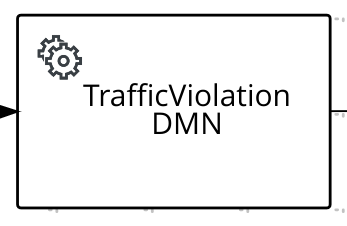Figure 198. Traffic violation service task Figure 199. Traffic violation service task properties
Figure 199. Traffic violation service task propertiesThe input for the traffic violation task includes
DriverandViolationvariables, and the output includesSuspendedandFine, which is part ofTrafficViolationResponse.Figure 200. Traffic violation service task data assignment -
When using a REST work item, the input for the task violation task includes
DriverandViolationvariables, and the output includesSuspendedandFine, which is part of `TrafficViolationResponse. Also, the URL and HTTP method is set as input parameters for the process. Figure 201. Traffic violation REST work item
Figure 201. Traffic violation REST work item Figure 202. Traffic violation REST work item data assignment
Figure 202. Traffic violation REST work item data assignment
In both cases, whether the driver is suspended or not, the related information is logged in the console.
3.9. Flexible processes for case management in Kogito
Kogito does not support the Case Management Model and Notation (CMMN) specification for case management in process services. Instead, Kogito uses Business Process Model and Notation (BPMN) extensions to provide similar case-management functionality through flexible processes.
A flexible process in Kogito is any process definition that uses ad hoc components or other features that enable the process to be executed more flexibly than traditional processes. For example, a flexible process does not require a standard start event and does not require all nodes to be connected. Some of the typical components in flexible processes include the Ad-Hoc process property that enables the process to use ad hoc auto-start fragments and to not require strict start and end events, ad hoc subprocesses that contain embedded inner activities within another process, and milestones that flag or trigger tasks and events.
Similar to case files in CMMN, flexible processes enable you to define traditional processes with more flexibility when the execution path is not rigid. This flexibility is helpful when the process cannot be fully automated or when the scope of the process is difficult to measure. A typical example of a case or flexible process is related to healthcare. A patient has a file that is accessible to the doctor and to any health professionals (or knowledge workers) who are assigned to the patient. These assigned workers take action and make different decisions and assessments until the patient is diagnosed and treated, completing the case or flexible process.
Kogito currently supports the following key case-related features in flexible processes:
-
Ad hoc processes: An ad hoc process is any process definition that has the
Ad-Hocproperty enabled in the process diagram Properties panel. This property enables the process to use ad hoc auto-start fragments, such as ad hoc subprocesses and ad hoc tasks, and to not require strict start and end events. An ad hoc process is similar to a Case in CMMN.Figure 203. Ad hoc process property -
Ad hoc subprocesses: An ad hoc subprocess contains embedded inner activities within another process and is a standard BPMN component that is supported in Kogito. An ad hoc subprocess is similar to a Stage in CMMN.
Figure 204. Ad hoc subprocess node -
Ad hoc auto-start fragments: An ad hoc auto-start fragment is any ad hoc process, ad hoc subprocess, or ad hoc task with the
AdHoc Autostartproperty enabled. This property enables the fragment to automatically start when the process is created instead of being started by the completion of the previous node or by a signal event.Figure 205. Ad hoc auto-start property -
Milestones: A milestone is a standard CMMN component that is incorporated in Kogito as a BPMN custom task. A milestone represents a single point of achievement within a process instance. You can use milestones to flag certain events to trigger other tasks or track the progress of the process.
Figure 206. Milestone node -
REST API requests as signals: A REST API request can serve as a signal event to trigger milestones or to create and start ad hoc fragments such as ad hoc processes, ad hoc subprocesses, or tasks. For non-flexible processes, an empty
POSTrequest for a process triggers the start node, whereas in a flexible process, the request creates the process instance. Similarly for ad hoc tasks, an emptyPOSTrequest instantiates the task node. All ad hoc auto-start fragments with theAdHoc Autostartproperty enabled are started automatically when the process is created.Example curl request to add comments to a ticketcurl -D -X POST -H 'Content-Type:application/json' -H 'Accept:application/json' http://localhost:8080/serviceDesk/b3c75b24-2691-4a76-902c-c9bc29ea076c/ReceiveSupportCommentExample response (JSON)HTTP/1.1 201 Created Content-Length: 305 Location: http://localhost:8080/serviceDesk/b3c75b24-2691-4a76-902c-c9bc29ea076c/ReceiveSupportComment/f3b36cf9-3953-43ae-afe6-2a48fea8a79a Content-Type: application/json { "id":"b3c75b24-2691-4a76-902c-c9bc29ea076c", "supportCase":{ "product": { "name":"Kogito", "family":"Middleware" }, "description":"Kogito is not working for some reason.", "engineer":"kelly", "customer":"Paco the customer", "state":"WAITING_FOR_OWNER", "comments":null, "questionnaire":null }, "supportGroup":"Kogito" }
3.9.1. Flexible process example
A typical flexible process consists of one or more of the following basic components:
-
Optional start event (might or might not be explicit)
-
Optional node connections (might or might not connect all nodes)
-
Enabled
Ad-Hocprocess property -
One or more subprocesses, typically ad hoc subprocesses
-
Ad hoc auto-start fragments, such as ad hoc subprocesses or ad hoc tasks
-
Milestones that flag or trigger events
-
End event to terminate the process
The following example is a real-world BPMN model scenario that demonstrates how you can use flexible processes for case management. In this scenario, a service desk uses a flexible process for handling customer tickets related to problems or questions about a specific product.
This example is based on the flexible-process-quarkus application in the kogito-examples repository in GitHub. However, this example may differ from the exact example source code as Kogito continues to be developed. Be sure to explore this and other Kogito examples in GitHub to help you develop your own applications.
|
service-desk.bpmn2 flexible processTo start the process and generate a ticket, a user provides an initial supportCase object in a REST request that contains information about the product, the customer, and the related issue:
{
"supportCase": {
"customer": "Paco the customer",
"description": "Kogito is not working for some reason.",
"product": {
"family": "Middleware",
"name": "Kogito"
}
}
}After the ticket is generated, the Triage ad hoc subprocess is automatically started and the ticket is assigned to a support team and then to a support engineer. If the system cannot determine which team to assign the ticket to, a user assigns the ticket manually to a support engineer.
The decision logic for the Triage subprocess is defined in the following SupportGroup decision table in the triage.dmn Decision Model and Notation (DMN) model:
SupportGroup DMN decision tableThe Work case ad hoc subprocess is also automatically started when the process is created. Anyone from the customer and support groups can add comments. To create a task that can be used to add a comment, a user can send an empty POST request as shown in the following example:
curl -D -X POST -H 'Content-Type:application/json' -H 'Accept:application/json' http://localhost:8080/serviceDesk/b3c75b24-2691-4a76-902c-c9bc29ea076c/ReceiveSupportCommentHTTP/1.1 201 Created
Content-Length: 305
Location: http://localhost:8080/serviceDesk/b3c75b24-2691-4a76-902c-c9bc29ea076c/ReceiveSupportComment/f3b36cf9-3953-43ae-afe6-2a48fea8a79a
Content-Type: application/json
{
"id":"b3c75b24-2691-4a76-902c-c9bc29ea076c",
"supportCase":{
"product": {
"name":"Kogito",
"family":"Middleware"
},
"description":"Kogito is not working for some reason.",
"engineer":"kelly",
"customer":"Paco the customer",
"state":"WAITING_FOR_OWNER",
"comments":null,
"questionnaire":null
},
"supportGroup":"Kogito"
}A user can then use the URL in the Location HTTP header when rendering the form action, as shown in the following example:
<form action="http://localhost:8080/serviceDesk/b3c75b24-2691-4a76-902c-c9bc29ea076c/ReceiveSupportComment/f3b36cf9-3953-43ae-afe6-2a48fea8a79a" method="post">
<label for="comment">Comment:</label>
<input type="text" id="comment" name="comment">
</form>After the customer is satisfied with the ticket response and actions, a user clicks a Resolve Case button, which sends an empty POST request to the service task to set the case to Resolved and the process emits a CaseResolved event. This event signals the CaseResolved milestone, which starts the Close ad hoc subprocess that sends, receives, and saves the customer questionnaire and closes the case.
3.10. Kogito process management add-on
Kogito provides a kie-addons-quarkus-process-management add-on that enables basic REST operations that you can use to manage process instances. These REST operations are supplemental to any other specific REST operations that you have configured in your application.
To configure process management REST capabilities for your Kogito services, you can add the process management add-on as a dependency in the pom.xml file of your Kogito project:
<dependency>
<groupId>org.kie.kie</groupId>
<artifactId>kie-addons-quarkus-process-management</artifactId>
</dependency>The Kogito process management add-on provides REST support for the following basic operations:
-
Process instances: Abort an active process instance
-
Node instances: Cancel or re-trigger a node instance, or trigger a new node instance
-
Error handling: Retrieve error details for a process instance, or skip or re-trigger a failed node instance
In addition to exposed REST operations, the process management add-on also provides the following REST exception mappers to generate more meaningful error messages for typical exception types:
-
ProcessInstanceNotFound -
NodeInstanceNotFound -
NodeNotFound -
ProcessInstanceExecutionError -
NotAuthorized -
InvalidTransition(for work items) -
InvalidLifeCyclePhase(for work items)
These exception mappers produce a valid HTTP error code with JSON payload with the context that caused the exception.
For example, the following is a ProcessInstanceNotFoundException error generated at runtime:
HTTP code : 404
{
"processInstanceId" : "c6862071-0f2e-4f21-9bc8-586245a76c3aa",
"message" : "Process instance with id c6862071-0f2e-4f21-9bc8-586245a76c3aa not found"
}3.10.1. REST endpoints for the process management add-on
After you add the kie-addons-quarkus-process-management dependency to your Kogito project and run your Kogito services, you can use the following REST endpoints to manage your process and node instances. These REST operations are supplemental to any other specific REST operations that you have configured in your application.
For each endpoint, use a REST client, curl utility, or Swagger UI (if configured for the application) to send requests with the following components:
-
Base URL:
http://HOST:PORT/management/processes/{processId}/instances/{processInstanceId} -
Path parameters:
-
{processId}: The string identifier of the process definition, such asorders -
{processInstanceId}: The integer identifier of the process instance, such asec44f890-d21d-444f-a4ec-cb88589bd79 -
{nodeId}: The string identifier of the node, such asverifyOrders -
{nodeInstanceId}: The integer identifier of the node instance, such as6e46bec2-0273-46f6-ad7d-2ff156e55a6c
-
-
HTTP headers: For
POSTrequests only:-
accept:application/json -
content-type:application/json
-
-
HTTP methods:
GET,POST, orDELETE
3.10.1.1. Process instances
Use the following REST endpoints from the process management add-on to interact with process instances:
- Return active node instances for a process instance
-
[GET] /management/processes/{processId}/instances/{processInstanceId}/nodeInstancesExample REST endpointhttp://localhost:8080/management/processes/orders/instances/ec44f890-d21d-444f-a4ec-cb88589bd79a/nodeInstancesExample curl requestcurl -X GET localhost:8080/management/processes/orders/instances/ec44f890-d21d-444f-a4ec-cb88589bd79a/nodeInstances -H 'content-type: application/json' -H 'accept: application/json'Example response (JSON){ "id": "ec44f890-d21d-444f-a4ec-cb88589bd79a", "name": "Verify order", "nodeInstanceId": "6e46bec2-0273-46f6-ad7d-2ff156e55a6c", "parameters": { "Locale": "en-UK", "TaskName": "Verify order", "NodeName": "Verify order", "Priority": "1", "input1": { "orderNumber": "12345", "shipped": false, "total": 0.8233575052440095 }, "Skippable": "true", "ActorId": "john" }, "phase": "active", "phaseStatus": "Ready", "results": {}, "state": 0 } - Abort a process instance
-
[DELETE] /management/processes/{processId}/instances/{processInstanceId}Example REST endpointhttp://localhost:8080/management/processes/orders/instances/ec44f890-d21d-444f-a4ec-cb88589bd79aExample curl requestcurl -X DELETE localhost:8080/management/processes/orders/instances/ec44f890-d21d-444f-a4ec-cb88589bd79a -H 'content-type: application/json' -H 'accept: application/json'
3.10.1.2. Nodes
Use the following REST endpoint from the process management add-on to interact with process nodes:
- Return nodes from a process
-
[GET] /management/processes/{processId}/nodesExample REST endpointhttp://localhost:8080/management/processes/orders/nodesExample curl requestcurl -X GET localhost:8080/management/processes/orders/nodes -H 'content-type: application/json' -H 'accept: application/json'Example response (JSON)[ { "name": "End", "id": 1, "type": "EndNode", "uniqueId": "1" }, { "name": "End", "id": 2, "type": "EndNode", "uniqueId": "2" }, { "name": "Hello2", "id": 3, "type": "HumanTaskNode", "uniqueId": "3" }, { "name": "Split", "id": 4, "type": "Split", "uniqueId": "4" }, { "name": "End", "id": 5, "type": "EndNode", "uniqueId": "5" }, { "name": "End", "id": 6, "type": "EndNode", "uniqueId": "6" }, { "name": "Hello1", "id": 7, "type": "HumanTaskNode", "uniqueId": "7" }, { "name": "Start", "id": 8, "type": "StartNode", "uniqueId": "8" }, { "name": "BoundaryEvent", "id": 9, "type": "BoundaryEventNode", "uniqueId": "9" }, { "name": "BoundaryEvent", "id": 10, "type": "BoundaryEventNode", "uniqueId": "10" } ]
3.10.1.3. Node instances
Use the following REST endpoints from the process management add-on to interact with node instances:
- Cancel a node instance within a process instance
-
[DELETE] /management/processes/{processId}/instances/{processInstanceId}/nodeInstances/{nodeInstanceId}Example REST endpointhttp://localhost:8080/management/processes/orders/instances/ec44f890-d21d-444f-a4ec-cb88589bd79a/nodeInstances/6e46bec2-0273-46f6-ad7d-2ff156e55a6cExample curl requestcurl -X DELETE localhost:8080/management/processes/orders/instances/ec44f890-d21d-444f-a4ec-cb88589bd79a/nodeInstances/6e46bec2-0273-46f6-ad7d-2ff156e55a6c -H 'content-type: application/json' -H 'accept: application/json' - Re-trigger a node instance within a process instance
-
[POST] /management/processes/{processId}/instances/{processInstanceId}/nodeInstances/{nodeInstanceId}Example REST endpointhttp://localhost:8080/management/processes/orders/instances/ec44f890-d21d-444f-a4ec-cb88589bd79a/nodeInstances/6e46bec2-0273-46f6-ad7d-2ff156e55a6cExample curl requestcurl -X POST localhost:8080/management/processes/orders/instances/ec44f890-d21d-444f-a4ec-cb88589bd79a/nodeInstances/6e46bec2-0273-46f6-ad7d-2ff156e55a6c -H 'content-type: application/json' -H 'accept: application/json' - Trigger a new instance of a node within a process instance
-
[POST] /management/processes/{processId}/instances/{processInstanceId}/nodes/{nodeId}Example REST endpointhttp://localhost:8080/management/processes/orders/instances/ec44f890-d21d-444f-a4ec-cb88589bd79a/nodes/verifyOrderExample curl requestcurl -X POST localhost:8080/management/processes/orders/instances/ec44f890-d21d-444f-a4ec-cb88589bd79a/nodes/verifyOrder -H 'content-type: application/json' -H 'accept: application/json'
3.10.1.4. Error handling
Use the following REST endpoints from the process management add-on to troubleshoot errors with process and node instances:
These endpoints function only when a process instance is in an ERROR state.
|
- Return error details for a process instance
-
[GET] /management/processes/{processId}/instances/{processInstanceId}/errorExample REST endpointhttp://localhost:8080/management/processes/orders/instances/ec44f890-d21d-444f-a4ec-cb88589bd79a/errorExample curl requestcurl -X GET localhost:8080/management/processes/orders/instances/ec44f890-d21d-444f-a4ec-cb88589bd79a/error -H 'content-type: application/json' -H 'accept: application/json'Example response (JSON){ "processInstanceId" : "ec44f890-d21d-444f-a4ec-cb88589bd79a", "message" : "Process instance with id c6862071-0f2e-4f21-9bc8-586245a76c3aa contains no input assignment" } - Re-trigger any failed nodes within a process instance
-
[POST] /management/processes/{processId}/instances/{processInstanceId}/retriggerExample REST endpointhttp://localhost:8080/management/processes/orders/instances/ec44f890-d21d-444f-a4ec-cb88589bd79a/retriggerExample curl requestcurl -X POST localhost:8080/management/processes/orders/instances/ec44f890-d21d-444f-a4ec-cb88589bd79a/retrigger -H 'content-type: application/json' -H 'accept: application/json' - Skip any failed nodes within a process instance
-
[POST] /management/processes/{processId}/instances/{processInstanceId}/skipExample REST endpointhttp://localhost:8080/management/processes/orders/instances/ec44f890-d21d-444f-a4ec-cb88589bd79a/skipExample curl requestcurl -X POST localhost:8080/management/processes/orders/instances/ec44f890-d21d-444f-a4ec-cb88589bd79a/skip -H 'content-type: application/json' -H 'accept: application/json'
3.11. Kogito process SVG add-on
Kogito provides an add-on named process-svg-addon, enabling the basic REST operations that you can use to visualize the process diagram and execution path of the related process instances. The REST operations are supplemental to any other specific REST operation that is configured in your application.
The add-on requires the access of process SVG files. The process SVG files can be placed in a file system, which is accessible to the service or available in META-INF/processSVG/ folder in the class path. For example, when the SVG files are generated, rename the files to {processId}.svg. The {processId}.svg file is used by the add-on and placed in a file system folder (accessible by the service) or in META-INF/processSVG folder in the class path. The configuration property kogito.svg.folder.path of the add-on points to the file system folder, otherwise the files are searched in the class path.
The VSCode extension enables you to export the process to SVG format:
|
When you export a process to SVG format, the generated SVG is named to {processFileName}-svg.svg. |
The process code generation searches this export and, if this file exists, copies and renames it to `META-INF/processSVG/{processId}.svg allowing the process SVG addon to consume it directly.
To configure process SVG REST capabilities for your Kogito services, you can add the process SVG add-on as a dependency in the pom.xml file of your Kogito project:
<dependency>
<groupId>org.kie</groupId>
<artifactId>kie-addons-quarkus-process-svg</artifactId>
</dependency><dependency>
<groupId>org.kie</groupId>
<artifactId>kie-addons-springboot-process-svg</artifactId>
</dependency>The process SVG add-on provides the following set of configuration properties:
Property |
Description |
|
Determines the folder in which the add-on searches the initial process diagrams. If this property is not enabled, then the add-on searches Default value: Example: |
|
Changes the color to fill the completed nodes when showing the execution path. Default value: Example: |
|
Changes the color of the border of the completed node when showing the execution path. Default value: Example: |
|
Changes the color of the border of the active node when showing the execution path. Default value: Example: |
The Kogito process SVG add-on provides REST support for the following basic operations:
-
Process Diagram: Return the process SVG diagram
-
Process instance diagram: Return the process SVG diagram displaying the executed path of a specific process instance
3.11.1. REST endpoints for the process SVG add-on
After you add the kie-addons-quarkus-process-svg or kie-addons-springboot-process-svg dependency to your Kogito project, add the recommended configuration properties, and run your Kogito services. You can use the following REST endpoints to receive the process related SVGs. The REST operations are supplemental to any other specific REST operations that are configured in your application.
| These REST operations are supplemental to any other specific REST operations that you have configured in your application. |
For each endpoint, use a REST client, curl utility, or Swagger UI (if configured for the application) to send requests with the following components:
-
Base URL:
http://HOST:PORT/svg/processes/{processId} -
Path parameters:
-
{processId}: The string identifier of the process definition, such astravels
-
-
HTTP methods:
GET
3.11.1.1. Process diagram
Use the following REST endpoint from the process SVG add-on to interact with the process diagram:
- Return the SVG that shows the process diagram
-
[GET] /svg/processes/{processId}Example REST endpointhttp://localhost:8380/svg/processes/travelsExample curl requestcurl -X GET http://localhost:8380/svg/processes/travels -H 'content-type: application/json' -H 'accept: image/svg+xml'
3.11.1.2. Process instance diagram
Use the following endpoint from the process SVG add-on to interact with the process instance diagram:
- Return the process SVG diagram and highlight the executed path
-
[GET] /svg/processes/{processId}/instances/{processInstanceId}Example REST endpointhttp://localhost:8380/svg/processes/travels/instances/2d115b55-ff30-42f0-ab21-e0651abb4d04Example curl requestcurl -X GET http://localhost:8380/svg/processes/travels/instances/2d115b55-ff30-42f0-ab21-e0651abb4d04 -H 'content-type: application/json' -H 'accept: image/svg+xml'
This REST endpoint can be used in environments that hold enabled security at the connected Data Index Service. The SVG add-on generates a query on Data Index Service to retrieve the executed nodes and if the Data Index Service contains enabled security, then it needs to pass a valid bearer token to complete the query.
If the SVG add-on detects a known security context enabled, then it retrieves the bearer token, otherwise the add-on reuses the token that is passed directly in the Authorization header.
| Currently, the process SVG add-on retrieves the token for systems that contain OpenID Connect using Keycloak. |
3.12. Kogito process event add-on
Kogito provides a process event add-on, which you can use to send processes, tasks, and variable events to an external event listener. In this case, the processes, tasks, and variable events are generated as a result of the execution of an operation, which modifies a process state; such events are known as runtime events.
In Kogito, every modifying operation is executed within an abstraction called a unit of work. Examples of such operations include creating a process instance, transitioning a task, and modifying a variable. A runtime event is published when a unit of work is completed.
You can use the Kogito process event add-on to build a historical representation of all process instance executions. Also, you can use this add-on with process REST API to build a custom graphical user interface to handle the user tasks.
By default, the event format follows CloudEvent specification. The CloudEvent specification allows sending information using the data field, which contains a JSON of one of the following types:
-
ProcessInstanceEvent: This event is published when a process instance is created, modified, or completed.
-
UserTaskInstanceEvent: This event is published when a change occurs on a user task.
-
VariableInstanceEvent: This event is published when a variable is created, modified, or removed.
To configure process event capabilities for your Kogito services, you can add the process event add-on as a dependency in the pom.xml file of your Kogito project:
<dependency>
<groupId>org.kie</groupId>
<artifactId>kie-addons-quarkus-events-process</artifactId>
</dependency><dependency>
<groupId>org.kie</groupId>
<artifactId>kie-addons-springboot-events-process-kafka</artifactId>
</dependency>
The Kogito process event add-on for Spring Boot is specific to Kafka. Therefore, you do not need to add additional dependencies to your pom.xml file to use an event broker.
|
For Quarkus, the Kogito process event add-on implementation is based on Smallrye Messaging library, which provides a set of connectors for event brokers, such as JMS, AMQP, and Kafka. Therefore, the Kogito process event add-on is not specifically combined with any event broker in Quarkus, but requires additional configuration to use a suitable Smallrye connector.
For example, to use Kafka as an event broker in Quarkus, you can add the following dependency in the pom.xml file of your Kogito project:
<dependency>
<groupId>io.quarkus</groupId>
<artifactId>quarkus-smallrye-reactive-messaging-kafka</artifactId>
</dependency>Smallrye defines an abstraction named channel to enable multi-broker support. For every channel that you define in your Kogito application, you can specify the connector to use for that channel using the following form:
mp.messaging.[incoming|outgoing].<channel name>.connector = <connector name>
Optionally, for Kafka connector, you can define the Kafka topic to be used for that channel using the following form:
mp.messaging.[incoming|outgoing].<channel name>.topic = <topic name>
You can also set up a channel property using the following form:
mp.messaging.[incoming|outgoing].<channel name>.<property name>= <property value>
| If the defined property is not found, then the topic name is considered to be the same as Kafka name. |
The Kogito process event add-on defines a channel for each event type, such as kogito-processinstances-events, kogito-usertaskinstances-events, and kogito-variables-events. Therefore, when the process event add-on is enabled, you must add the event types to your application.properties file using the following properties:
application.properties filemp.messaging.outgoing.kogito-processinstances-events.connector=smallrye-kafka
mp.messaging.outgoing.kogito-processinstances-events.topic=kogito-processinstances-events
mp.messaging.outgoing.kogito-processinstances-events.value.serializer=org.apache.kafka.common.serialization.StringSerializer
mp.messaging.outgoing.kogito-usertaskinstances-events.connector=smallrye-kafka
mp.messaging.outgoing.kogito-usertaskinstances-events.topic=kogito-usertaskinstances-events
mp.messaging.outgoing.kogito-usertaskinstances-events.value.serializer=org.apache.kafka.common.serialization.StringSerializer
mp.messaging.outgoing.kogito-variables-events.connector=smallrye-kafka
mp.messaging.outgoing.kogito-variables-events.topic=kogito-variables-events
mp.messaging.outgoing.kogito-variables-events.value.serializer=org.apache.kafka.common.serialization.StringSerializerAdditionally, you can disable the publishing on any channel by setting the related property to false as shown in the following example:
kogito.events.usertasks.enabled=false
kogito.events.variables.enabled=false3.13. Kogito Management Console
The Kogito Management Console is a user interface for viewing the state of all available Kogito services and managing process instances:
You can use the Management Console to view process, subprocess, and node instance details, abort process instances, and view domain-specific process data.
The Management Console requires your Kogito services to use the following Kogito components:
-
Kogito Data Index Service: Enables the Management Console to access stored events related to processes and domain data from your Kogito services. The Kogito Data Index Service requires Infinispan or MongoDB persistence and Apache Kafka messaging for your Kogito service. For more information about the Data Index Service, see Configuring Kogito supporting services and runtime capabilities.
-
Kogito process management add-on: Enables the Management Console to interact with the process data from your Kogito services through the add-on REST endpoint
/management/processes. If you do not enable this add-on for your Kogito service, the Management Console provides read-only access to your service data without the ability to modify instances, such as aborting process instances. For more information about the process management add-on, see Kogito process management add-on.
To visualize the process instance execution path at the management console, add the following add-on:
-
Kogito process SVG add-on: Enables the process SVG diagram to visualize the process instance execution path. If this add-on is not enabled for your Kogito service, the management console does not display the diagram panel. For more information about the process SVG add-on, see Kogito process SVG add-on.
3.13.1. Using the Kogito Management Console to manage process instances
You can use the Kogito Management Console to view and manage process instance details from your Kogito services. You can run the Management Console for local Kogito services or add it to your Kogito infrastructure on OpenShift.
-
A Kogito Data Index Service instance is configured and running for your Kogito service. The Data Index Service enables the Management Console to access stored process data. The Data Index Service requires Infinispan or MongoDB persistence and Apache Kafka messaging for your Kogito service. For information about the Data Index Service, see Configuring Kogito supporting services and runtime capabilities.
-
The
pom.xmlfile of your Kogito project contains the following dependency for the process management add-on. This add-on enables the Management Console to interact with the process data through the add-on REST endpoint/management/processes. For more information about the process management add-on, see Kogito process management add-on.Project dependency to enable process management REST operations<dependency> <groupId>org.kie</groupId> <artifactId>kie-addons-quarkus-process-management</artifactId> </dependency> -
The
application.propertiesfile of your Kogito project contains the following system properties for the location where the Kogito service is deployed, such ashttp://localhost:8080, and for Quarkus Cross-Origin Resource Sharing (CORS) support. These properties enable the Management Console to generate the URLs to execute the REST operations from the process management add-on.Application properties for REST URLskogito.service.url=http://HOST:PORT quarkus.http.cors=true
-
Go to the
management-consoleartifacts page, select the latest release of the Kogito Management Console, and download themanagement-console-VERSION-runner.jarfile to a local directory. -
In a command terminal, navigate to the directory location of the downloaded
management-console-VERSION-runner.jarfile and enter the following command to run the Management Console:Running the Management Console$ java -Dquarkus.http.port=8280 -jar management-console-VERSION-runner.jarThe default port for the Management Console is 8080, but this example specifies port 8280 to avoid conflicts with the example Kogito service running at port 8080.
Also, the Management Console uses the default Data Index Service port 8180. If you modified this port in your Data Index Service instance, you must also modify the port in the Management Console properties by using the start-up property
-Dkogito.dataindex.http.url=http://HOST:PORT/graphqlwhen you run the Management Console.To change the logging level of the Management Console, such as for debugging, you can specify the following start-up properties:
Modifying Management Console logging level for debugging$ java \ -Dquarkus.log.console.level=DEBUG -Dquarkus.log.category.\"org.kie.kogito\".min-level=DEBUG \ -Dquarkus.log.category.\"org.kie.kogito\".level=DEBUG \ -Dquarkus.http.port=8280 \ -jar management-console-VERSION-runner.jar=== Kogito Management Console application
Kogito Management Console consists of the following tabs that allow you to interact with your process instances and data:
-
Process Instances: Use this tab to find process and subprocess instances by status or business key
-
Jobs: Use this tab to view a list of available jobs to filter jobs by status and perform actions for individual jobs, such as view details, reschedule, or cancel.
Figure 211. Kogito Management ConsoleIn this example, the Management Console displays data for the
kogito-travel-agencyextended example application in thekogito-examplesrepository in GitHub.==== Process instances
The Process Instances tab displays the list of process instances and enables you to add filters to the list.
Figure 212. Process Instances tabWhen you select a process instance on the Process Instances page, it redirects you to the Process Details page, providing the process instance details including interactions with the process instance. You can access the Process Details page from a different Kogito Management Console tab, displaying the instance related data and enables you to perform the available actions. You can also sort the results based on the column headers.
Figure 213. Process Details pageThe Process Details page consists of the following panels:
-
Process Diagram panel
-
Details panel
-
Process Variables panel
-
Timeline panel
-
Node Trigger panel
-
Milestones panel
-
Jobs panel
- Process Diagram panel
This panel enables you to explore the process diagram and execution path of the related process instance. The execution path is displayed when the Management Console finds the
.svgresources using the Kogito process SVG add-on configuration included in the Kogito Management Console. -

This panel includes different controls to view the process diagram, such as Selection, Pan, Zoom in, Zoom out, and Fit to viewer.
- Details panel
This panel displays the basic process instance information and provides links to the related process runtime UI. If the process instance is related to other process instances, then links to the parent and subprocess instances are also available in the Details panel.

The Details panel consists of the following fields:
-
Name: The process definition ID related to the process instance.
-
Business key: Optional business key of the process instance.
-
State: The state of the process instance. The state of a process instance can be pending, active, completed, aborted, suspended, or error.
-
Id: The unique identifier of the process instance.
-
Endpoint: The endpoint of the process instance. You can click the displayed endpoint to view the process or application UI that triggered the process instance.
 Figure 216. Process instance details endpoint
Figure 216. Process instance details endpoint -
Start: Time reference indicating when the process instance is started.
-
Last Updated: Time reference indicating when the process instance is updated.
-
End: Time reference indicating when the process instance is completed.
-
Parent Process: Parent process instance of the instance (if linked). You can click and navigate to the parent process instance.
-
Sub Processes: Subprocess of the instance (if linked). You can click and navigate to the subprocess instances.
- Process Variables panel
The Process Variables panel displays the process instance domain data in a tree structure. When you hover the mouse on different elements, the available actions are displayed.

The process variables in the Process Variables panel consists of the following actions:
-
Expand or collapse: Enables you to expand or collapse an element.
-
Add item: Enables you to add a new key. When you add a new key, it contains null values, which you can edit if required.
 Figure 219. Add new key
Figure 219. Add new key -
Copy: Enables you to copy the selected value in clipboard.
-
Edit: Enables you to edit the selected element value.
-
Remove: Enables you to remove the selected element.
If there are pending changes to be saved, the panel displays Changes are not saved yet message. To save the changes that you made to the process variable, click Save, or click Abort to abort the changes. If you want to revert the changes, click the refresh icon.
- Timeline panel
The Timeline panel displays the list of node instances related to the process instance sorted by the start time. Each node consists of an icon, indicating the state of the node, such as active, completed, or error.
The actions that are available for an active node include retriggering and canceling a node. Whereas the actions for an error node include retrying and skipping the node. The node actions in the Timeline panel are connected with the Kogito runtime service to perform the requested action.
If a node in the Timeline panel is associated with a job, then select the clock icon to view the job details or click the menu for additional job operations, such as Job Reschedule or Job Cancel.
- Node Trigger panel
The Node Trigger panel displays the list of all process definition nodes in a drop-down. When you select a node, the related information is displayed, such as Node name, Node type, and Node id. Click the Trigger button, to trigger the selected node.

- Milestones panel
The Milestones panel displays a list of the milestones for the process instance, if applicable.

- Jobs panel
The Jobs panel displays the list of available jobs that are related to the process instance.


You can reschedule or cancel a job that is in scheduled or error state. You can also modify the expiration time for one-time jobs and repeat interval, repeat time, and expiration time for the periodic jobs.
==== Jobs management
The Jobs Management tab displays the list of existing jobs, which you can filter and perform related management actions such as viewing job details, rescheduling a job, or canceling a job.
You can also cancel the multiple jobs at the same time. To cancel multiple jobs, select the jobs to be canceled and click the Cancel Selected button.
=== Configuring Kogito Management Console security
For security, the Kogito Management Console accesses Keycloak as an authentication service. Once a user is authenticated, Management Console uses bearer tokens to communicate with other Kogito services.The bearer tokens are issued using OpenID Connect and OAuth 2.0 compliant authorization servers such as Keycloak.
| This procedure applies only when you are using a locally cloned copy of the Kogito Management Console repository in GitHub. |
-
You have cloned the Kogito Management Console repository from GitHub.
-
An instance of Keycloak server is running.
Ensure that you log in to the administration console of the Keycloak, navigate to the respective client configuration, and add correct URLs of different applications. For easier configuration, you can add Access-Control-Allow-Origin.
|
-
In a command terminal, navigate to the local clone of the Kogito Management Console repository and enter the following command to run the application with security enabled:
mvn clean compile quarkus:dev
Ensure that the service is not started at the same port as the security server. You can change the port by adding -Dquarkus.http.port=PORT_NUMBER to the start-up properties.
|
-
Navigate to the
src/main/resources/application.propertiesfile of the Management Console project and add the following properties:
applications.properties file# OpenID Connect configurations
kogito.consoles.keycloak.config.realm=kogito
kogito.consoles.keycloak.config.url=http://localhost:8280/auth/
kogito.consoles.keycloak.config.client-id=kogito-console-quarkus
kogito.consoles.keycloak.config.health-check-url=http://localhost:8280/auth/realms/kogito/.well-known/openid-configuration
kogito.consoles.keycloak.config.disable-health-check=false
kogito.consoles.keycloak.config.update-token-validity=30-
Replace any property definitions with those of your specific environment, especially the following properties:
-
kogito.consoles.keycloak.config.url: The base URL of the Keycloak server, such ashttps://localhost:8280/auth. All other Keycloak server pages and service URLs are derived from the base URL. -
kogito.consoles.keycloak.config.client-id: The client ID of the application. Each application contains a client ID that is used to identify the application. -
kogito.consoles.keycloak.config.realm: The realm, containing all the security configurations. -
kogito.consoles.keycloak.config.health-check-url: The health check URL that is used to check if the Keycloak server started properly. -
kogito.consoles.keycloak.config.disable-health-check: The property to disable the health check. By default, the health check is enabled. -
kogito.consoles.keycloak.config.update-token-validity: The property indicates the minimum validity (in seconds) of the token. If the token expires within the specified time, the token is refreshed.
-
-
In the same
application.propertiesfile, also configure the resources to be exposed and the required permissions for accessing the resources. -
Stop and restart the Kogito Management Console to ensure that the security changes are applied.
== Kogito Task Console
The Kogito Task Console is a user interface for viewing and interacting with user tasks in Kogito process services.
You can use the Task Console to view your list of assigned tasks, view the task details for each task, and move the task to the next phase of the task lifecycle. For more information about the task lifecycle, see Task lifecycle in Kogito processes.
The Task Console requires your Kogito services to use the Kogito Data Index Service. The Data Index Service enables the Task Console to access stored events related to tasks and domain data from your Kogito services. The Kogito Data Index Service requires Infinispan or MongoDB persistence and Apache Kafka messaging for your Kogito service. For more information about the Data Index Service, see Configuring Kogito supporting services and runtime capabilities.
=== Using the Kogito Task Console to interact with user tasks
You can use the Kogito Task Console to view and interact with user tasks in Kogito process services. You can run the Task Console for local Kogito services or add it to your Kogito infrastructure on OpenShift.
-
A Kogito Data Index Service instance is configured and running for your Kogito service. The Data Index Service enables the Task Console to access stored tasks and process data. The Data Index Service requires Infinispan or MongoDB persistence and Apache Kafka messaging for your Kogito service. For information about the Data Index Service, see Configuring Kogito supporting services and runtime capabilities.
-
The
application.propertiesfile of your Kogito project contains the following system properties for the location where the Kogito service is deployed, such ashttp://localhost:8080, and for Quarkus Cross-Origin Resource Sharing (CORS) support.Application properties for REST URLskogito.service.url=http://HOST:PORT quarkus.http.cors=true
-
Go to the
task-consoleartifacts page, select the latest release of the Kogito Task Console, and download thetask-console-VERSION-runner.jarfile to a local directory. -
In a command terminal, navigate to the directory location of the downloaded
task-console-VERSION-runner.jarfile and enter the following command to run the Task Console:
$ java -Dquarkus.http.port=8280 -jar task-console-VERSION-runner.jar|
The default port for the Task Console is 8080, but this example specifies port 8280 to avoid conflicts with the example Kogito service running at port 8080. Also, the Task Console uses the default Data Index Service port 8180. If you modified this port in your Data Index Service instance, you must also modify the port in the Task Console properties by using the start-up property |
To change the logging level of the Task Console, such as for debugging, you can specify the following start-up properties:
$ java \
-Dquarkus.log.console.level=DEBUG -Dquarkus.log.category.\"org.kie.kogito\".min-level=DEBUG \
-Dquarkus.log.category.\"org.kie.kogito\".level=DEBUG \
-Dquarkus.http.port=8280 \
-jar task-console-VERSION-runner.jarIf your Kogito project has a custom task lifecycle that defines custom states, you can use the following properties to configure the Task Console to use those states and show them in the filters:
-
kogito.task.states.list: Comma-separated list of values containing all the states that you want to show in the Task Console. Without this property, the Task Console shows the default lifecycle statesReady,Reserved,Completed,Aborted, andSkipped. -
kogito.task.active.states.list: Comma-separated list of values containing the active task states. These states are used in the Task Inbox default filter. Without this property, the default active states areReadyandReserved.
$ java \
-Dkogito.task.states.list=Started,Pending,Finished,Cancelled \
-Dkogito.task.active.states.list=Started,Pending \
-jar task-console-VERSION-runner.jar| For more information about task lifecycles, see Task lifecycle in Kogito processes. |
In this example, the Task Console displays data for the kogito-travel-agency extended example application in the kogito-examples repository in GitHub.
The Task Inbox page lists the available user tasks that you can interact with. You can use the upper toolbar options to filter the tasks or use the column headers to sort the tasks as needed. You can also search for tasks by the full name or by partial name, such as Apply.

-
Select a task name to view task details and interact with the task:

Depending on the current phase of the selected task, you can select from the available actions for that task, such as Abort, Release, Skip, or Complete, to move the task to the next phase.
For additional task details, you can select View details. This panel lists the task ID, state, owner, related process instance ID, and other helpful information about the task.

=== Configuring Kogito Task Console security
For security, Kogito Task Console accesses Keycloak as an authentication service. Once a user is authenticated, Task Console uses bearer tokens to communicate with other Kogito services. These tokens are issued by OpenID Connect and OAuth 2.0 compliant authorization servers such as Keycloak.
| This procedure applies only when you are using a locally cloned copy of the Kogito Task Console repository in GitHub. |
-
You have cloned the Kogito Task Console repository from GitHub.
-
An instance of Keycloak server is running.
Ensure that you log in to the administration console of the Keycloak, navigate to the respective client configuration, and add correct URLs of different applications. For easier configuration, you can add Access-Control-Allow-Origin.
|
-
In a command terminal, navigate to the local clone of the Kogito Task Console repository and enter the following command to run the application with security enabled:
mvn clean compile quarkus:dev
Ensure that the service is not started at the same port as the security server. You can change the port by adding -Dquarkus.http.port=PORT_NUMBER to the start-up properties.
|
-
Navigate to the
src/main/resources/application.propertiesfile of the Task Console project and add the following properties:
applications.properties file# OpenID Connect configurations
kogito.consoles.keycloak.config.realm=kogito
kogito.consoles.keycloak.config.url=http://localhost:8280/auth/
kogito.consoles.keycloak.config.client-id=kogito-console-quarkus
kogito.consoles.keycloak.config.health-check-url=http://localhost:8280/auth/realms/kogito/.well-known/openid-configuration
kogito.consoles.keycloak.config.disable-health-check=false
kogito.consoles.keycloak.config.update-token-validity=30-
Replace any property definitions with those of your specific environment, especially the following properties:
-
kogito.consoles.keycloak.config.url: The base URL of the Keycloak server, such ashttps://localhost:8280/auth. All other Keycloak server pages and service URLs are derived from the base URL. -
kogito.consoles.keycloak.config.client-id: The client ID of the application. Each application contains a client ID that is used to identify the application. -
kogito.consoles.keycloak.config.realm: The realm, containing all the security configurations. -
kogito.consoles.keycloak.config.health-check-url: The health check URL that is used to check if the Keycloak server started properly. -
kogito.consoles.keycloak.config.disable-health-check: The property to disable the health check. By default, the health check is enabled. -
kogito.consoles.keycloak.config.update-token-validity: The property indicates the minimum validity (in seconds) of the token. If the token expires within the specified time, the token is refreshed.
-
-
In the same
application.propertiesfile, also configure the resources to be exposed and the required permissions for accessing the resources. -
Stop and restart the Kogito Task Console to ensure that the security changes are applied.
== Runtime Tools Quarkus Extension
In Kogito, Runtime Tools Quarkus Extension helps in developing your Kogito applications in Quarkus. This extension adds a new user interface with unified features from the different Kogito Management Console and Task Console, which is accessible in the Quarkus Dev UI. This is intended for the local development environment, can be integrated with Quarkus applications, and allows you to test the Kogito application without the need of a complex setup.
=== Setting up the Runtime Tools Quarkus Extension
Quarkus Dev UI shows a list of extensions that you can add to your project.
-
To enable the Runtime Tools Quarkus extension from your Quarkus project, you must add the following dependency to the
pom.xmlfile:
<dependency>
<groupId>org.jbpm</groupId>
<artifactId>jbpm-quarkus-devui</artifactId>
<version>10.0.0.0</version>
</dependency>-
Add the following properties to the
application.propertiesfile to configure the users and impersonate the users on the task page using the dropdown at the top:
-
kogito.users.<user>.groups: This property creates a list of users and assigns specific roles to the users
kogito.users.jdoe.groups=admin
kogito.users.admin.groups=admin
kogito.users.user.groups=user=== Accessing Runtime Tools Quarkus Extension
After setting up the Runtime Tools Quarkus Extension, you can access the Quarkus extension in your project.
-
To access the Quarkus extension, run your project in development mode and select the
http://localhost:8080/q/devURL:
The Quarkus extension consists of different menus to navigate to different pages, such as Configuration, Kogito Runtime Tools, and Infinispan Client. Using the Kogito Runtime Tools menu, you can navigate to Process Instances, Tasks, Jobs, and Forms. The features are similar to Kogito Management Console and Task Console.
-
Process Instances: Use this section to view process and subprocess instances by status or business key. For more details, see [con-process-instances].
-
Jobs: Use this section to view a list of available jobs. You can also filter the jobs by status and perform different actions, such as view details, reschedule, or cancel. For more details, see [proc-jobs-management].
-
Tasks: Use this section to view the list of available user tasks that you can interact with by filtering based on the status. For more details, see [con-task-console_kogito-developing-process-services].
-
Forms: Use this section to generate and customize the forms directly in the browser.
=== Forms
The Kogito Quarkus extension enables you to customize the forms directly on the browser by using the dedicated code editor, which can compile HTML code and React code that is written in Typescript. You can use Patternfly components to create React forms. These customized forms are used in Task Inbox.
The Forms page in the Dev UI contains a list of generated forms in a project. To switch between the table view and gallery view, select the toggle on the top-right corner of the page. You can also filter the list of forms by entering the form name.
When you select a form in the Forms page, you are redirected to the form displayer. The form displayer contains a code editor, which compiles the source code and displays the results on the right-side panel.
Initially, the form content and the related configuration are added to the code editor. You can make changes to the code in the editor and click the play icon from the toolbar to execute the code immediately on the browser.
The Source tab loads the source code of the form in HTML or Typescript format based on the selected form. When the configurations of a form are loaded on the Connections tab, a set of resources including CDN links, URLs pointing to JS or CSS files are added to the form.

The code editor contains toolbar options, which allow you to undo and redo changes. Clicking on the play button executes the code and changes are applied immediately, while the save option allows you to save the changes on the source or configuration of the forms.
== Kogito service execution
After you design your Kogito service, you can build and run your application and then send REST API requests to the application to execute your services. The exact REST API requests that you can use depend on how you set up the application.
For example, consider a Kogito service that is set up to generate a /persons REST API endpoint and determines whether a specified customer is an adult or is underage. In this example, you can send the following POST request using a REST client or curl utility to add an adult and execute the service:
{
"person": {
"name": "John Quark",
"age": 20
}
}curl -X POST http://localhost:8080/persons -H 'content-type: application/json' -H 'accept: application/json' -d '{"person": {"name":"John Quark", "age": 20}}'{
"id": "3af806dd-8819-4734-a934-728f4c819682",
"person": {
"name": "John Quark",
"age": 20,
"adult": false
},
"isAdult": true
}Note that for JSON marshaling, Kogito is relying on the default mappers of Quarkus and SpringBoot, which can be configured according to the specific requirements.
For information about creating, running, and testing an example application with Kogito services, see Creating and running your first Kogito services.
== Additional resources * Creating and running your first Kogito services * Developing decision services with Kogito * Configuring Kogito supporting services and runtime capabilities
= Orchestrating microservices with Serverless Workflow in Kogito :parent-context: kogito-developing-decision-services :context: kogito-orchestrating-serverless
As a microservices developer or architect, you can use the Serverless Workflow specification to orchestrate application services in your Kogito project. The Serverless Workflow specification enables you to define declarative workflow models that orchestrate event-driven, serverless applications. The specification is hosted by the Cloud Native Computing Foundation (CNCF) and is currently a CNCF Sandbox project that is progressing to become an Incubating project.
The target users of Serverless Workflow orchestration are mostly developers and architects who want to define logical steps of execution declaratively (no code) for cloud-native services. Although you can orchestrate your services using process diagrams in Business Process Model and Notation (BPMN), the Serverless Workflow has less focus on business definition and more focus on function-level steps of execution. Serverless Workflow is also designed specifically for microservice orchestration and therefore has a smaller scope than BPMN. Serverless Workflow also enables you to write workflows in formats (JSON or YAML) that might be better suited for developing and deploying serverless applications in cloud or container environments.
⚠️ Quarkus is the only supported runtime for Serverless Workflow.
Ultimately, the choice of which specification to use for orchestrating event-driven microservices depends on your environment needs, development goals, and personal preference.
The Serverless Workflow functions, events, and states are the core constructs for defining the orchestration behavior for your services. You can use one or all of these three constructs in your workflow definitions.
-
functions: Function definitions are reusable constructs that you can use to define invocation information about services that need to be invoked during workflow execution. -
events: Event definitions are reusable constructs that you can use to define all consumed and produced events during workflow execution. -
states: State definitions enable you to define your workflow states (control-logic blocks) and determine what your workflow should do.
For more information about what you can automate using Serverless Workflow, see use cases.
For more information about Serverless Workflow, see the Serverless Workflow website.
| Kogito 10.0.0 implements version 0.8 of the Serverless Workflow specification. You can find the current implementation status here. |
== Serverless Workflow orchestration in Kogito
You can use Serverless Workflow definition files in your Kogito project to define your domain-specific orchestration services. Your Serverless Workflow files can be in JSON or YAML format with the extension .sw.json or .sw.yaml.
The following diagram illustrates Serverless Workflow orchestration in Kogito:
== Serverless Workflow example in Kogito
The following example is a real-world Serverless Workflow scenario in Kogito that demonstrates how you can use Serverless Workflow definitions to orchestrate your Kogito services. In this scenario, an order service uses Serverless Workflow to process orders from multiple sources and approve or deny orders.
For more Kogito examples that use Serverless Workflow, see the kogito-examples repository in GitHub.
|
The following diagram illustrates the basic architecture of this scenario:
New orders can come from different sources, such as web applications or messaging services. Each order is then converted into CloudEvents messages, which represent the events that need to trigger the workflow execution. The events are pushed to an Apache Kafka topic.
New order events that are pushed to Kafka trigger new instances of the workflow. The workflow invokes a business rule service and a human task service to make the order approval decision. The business rule service can be a Kogito service with Decision Model and Notation (DMN) decision models or Drools Rule Language (DRL) rules, or it can be an external service. For this example, the rule service uses a DRL rules in Kogito to verify whether the order can be auto-approved. If the order cannot be auto-approved, then the workflow uses the human task service, which likewise can be a Kogito service or an external service, to notify a manager that the order requires human approval.
After the order decision is made, the workflow generates an event in CloudEvents format that notifies other services or other workflows that a decision was made for a particular order.
To orchestrate these services in this way, the example uses the following ordersworkflow.sw.json Serverless Workflow definition:
ordersworkflow.sw.json workflow definition (JSON){
"id": "ordersworkflow",
"name": "Orders Workflow",
"version": "1.0",
"events": [
{
"name": "NewOrderEvent",
"source": "neworder",
"type": "kafka"
},
{
"name": "ApprovalDecisionEvent",
"source": "out-approvaldecision",
"type": "kafka"
}
],
"functions": [
{
"name": "AutoAproveOrderFunction",
"type": "rule",
"metadata": {
"ruleflowgroup": "neworder"
}
},
{
"name": "OrderManagerApprovalFunction",
"type": "decision",
"metadata": {
"taskname": "managerApproval",
"actorid": "managers",
"groupid": "managers"
}
}
],
"states": [
{
"name": "HandleNewOrder",
"type": "event",
"start": {
"kind": "default"
},
"eventsActions": [
{
"eventRefs": [
"NewOrderEvent"
],
"actions": [
{
"functionRef": {
"refName": "AutoAproveOrderFunction"
}
}
]
}
],
"transition": {
"nextState": "CheckIfNeedManagerApproval"
}
},
{
"name": "CheckIfNeedManagerApproval",
"type": "switch",
"dataConditions": [
{
"path": "$.decision",
"value": "Approved",
"operator": "equals",
"transition": {
"nextState": "OrderAutoApproved"
}
},
{
"path": "$.decision",
"value": "NeedManagerApproval",
"operator": "equals",
"transition": {
"nextState": "OrderManagerApproval"
}
}
],
"defaultCondition": {
"nextState": "OrderManagerApproval"
}
},
{
"name": "OrderAutoApproved",
"type": "inject",
"data": {
"finalDecision": "Approved"
},
"end": {
"kind": "event",
"produceEvent": {
"eventRef": "ApprovalDecisionEvent"
}
}
},
{
"name": "OrderManagerApproval",
"type": "operation",
"actionMode": "sequential",
"actions": [
{
"name": "managerAprovalAction",
"functionRef": {
"refName": "OrderManagerApprovalFunction"
}
}
],
"end": {
"kind": "event",
"produceEvent": {
"eventRef": "ApprovalDecisionEvent"
}
}
}
]
}The following diagram illustrates the basic structure and sequence of this example workflow definition:
ordersworkflow.sw.json workflow definitionThe HandleNewOrder state is the workflow starting state. This state is an event type state that requires one or more events to be consumed before the workflow can be invoked. This event state defines the instances of this workflow that are created when the referenced NewOrderEvent is consumed. In this case, events are consumed using Kafka.
After the NewOrderEvent is consumed, the state defines a list of actions to be performed. Actions define all the functions or services that must be invoked as part of the workflow. In this case, a single AutoApproveOrderFunction function or service defines how to invoke the rule service.
After the execution of the rule service is complete, the event state specifies that the workflow must transition to the CheckIfNeedManagerApprvoal state, which is a switch type state. The order is then either auto-approved if no manager approval is required, or is assigned to a manager to complete the remaining states of the workflow.
For more Kogito examples that use Serverless Workflow, see the following example applications in GitHub:
-
serverless-workflow-events-quarkus: A Serverless Workflow service for processing job applicant approvals and that showcases event-driven services -
serverless-workflow-greeting-quarkus: A Serverless Workflow greeting service with both JSON and YAML workflow definitions -
serverless-workflow-service-calls-quarkus: A Serverless Workflow service for returning country information
=== Creating and editing Serverless Workflow definitions in Kogito
You can use Serverless Workflow definition files in your Kogito project to define your domain-specific orchestration services. Your Serverless Workflow definition files can be in JSON or YAML format with the extension .sw.json or .sw.yaml.
-
You have created a Kogito project and have included any Java objects or other business assets required for your Serverless Workflow service. For information about creating a project, see Creating and running your first Kogito services.
-
In your Kogito project, create or import a
.sw.jsonor.sw.yamlServerless Workflow definition file in the relevant folder, typically insrc/main/resources.Kogito supports both JSON and YAML formats for workflow definitions. You can use multiple workflow definitions in both formats if needed.
-
Open the workflow definition file and define the following basic components:
{
"id": "sampleWorkflow",
"version": "1.0",
"name": "Sample Workflow",
"description": "Sample Workflow",
"functions": [],
"events": [],
"states": []
}id: sampleWorkflow
version: '1.0'
name: Sample Workflow
description: Sample Workflow
functions: []
events: []
states: []The Serverless Workflow functions, events, and states are the core constructs for defining the orchestration behavior for your services. You can use one or all of these three constructs in your workflow definitions.
| You can find more information about the core constructs in the Workflow Model section of the specification. |
For example, the following Serverless Workflow definition performs a customer credit check in a loan application service to approve or deny the customer loan application:
{
"id": "customercreditcheck",
"version": "1.0",
"name": "Customer Credit Check Workflow",
"description": "Perform Customer Credit Check",
"functions": [
{
"name": "callCreditCheckMicroservice",
"resource": "creditCheckResource",
"type": "service"
},
{
"name": "sendRejectionEmailFunction",
"resource": "rejectEmailResource"
}
],
"events": [
{
"name": "CreditCheckCompletedEvent",
"type": "creditCheckCompleteType",
"source": "creditCheckSource",
"correlation": [
{
"contextAttributeName": "customerId"
}
]
}
],
"states": [
{
"name": "CheckCredit",
"type": "callback",
"start": {
"kind": "default"
},
"action": {
"functionRef": {
"refName": "callCreditCheckMicroservice",
"parameters": {
"customer": "{{ $.customer }}"
}
}
},
"eventRef": "CreditCheckCompletedEvent",
"transition": {
"nextState": "EvaluateDecision"
}
},
{
"name": "EvaluateDecision",
"type": "switch",
"dataConditions": [
{
"condition": "{{ $.creditCheck[?(@.decision == 'Approved')] }}",
"transition": {
"nextState": "StartApplication"
}
},
{
"condition": "{{ $.creditCheck[?(@.decision == 'Denied')] }}",
"transition": {
"nextState": "RejectApplication"
}
}
],
"defaultCondition": {
"transition": {
"nextState": "RejectApplication"
}
}
},
{
"name": "StartApplication",
"type": "operation",
"actions": [
{
"subFlowRef": "startApplicationWorkflowId"
}
],
"end": {
"kind": "default"
}
},
{
"name": "RejectApplication",
"type": "operation",
"actionMode": "sequential",
"actions": [
{
"functionRef": {
"refName": "sendRejectionEmailFunction",
"parameters": {
"applicant": "{{ $.customer }}"
}
}
}
],
"end": {
"kind": "default"
}
}
]
}id: customercreditcheck
version: '1.0'
name: Customer Credit Check Workflow
description: Perform Customer Credit Check
functions:
- name: callCreditCheckMicroservice
resource: creditCheckResource
type: microservice
- name: sendRejectionEmailFunction
resource: rejectEmailResource
events:
- name: CreditCheckCompletedEvent
type: creditCheckCompleteType
source: creditCheckSource
correlation:
- contextAttributeName: customerId
states:
- name: CheckCredit
type: callback
start:
kind: default
action:
functionRef:
refName: callCreditCheckMicroservice
parameters:
customer: "{{ $.customer }}"
eventRef: CreditCheckCompletedEvent
transition:
nextState: EvaluateDecision
- name: EvaluateDecision
type: switch
dataConditions:
- condition: "{{ $.creditCheck[?(@.decision == 'Approved')] }}"
transition:
nextState: StartApplication
- condition: "{{ $.creditCheck[?(@.decision == 'Denied')] }}"
transition:
nextState: RejectApplication
defaultCondition:
transition:
nextState: RejectApplication
- name: StartApplication
type: operation
actions:
- subFlowRef: startApplicationWorkflowId
end:
kind: default
- name: RejectApplication
type: operation
actionMode: sequential
actions:
- functionRef:
refName: sendRejectionEmailFunction
parameters:
applicant: "{{ $.customer }}"
end:
kind: defaultFor more Serverless Workflow definition examples in Kogito, see the kogito-examples repository in GitHub.
-
Continue adding and defining any remaining components for your workflow definition files and save the completed files.
After you define your serverless workflow definitions, you can build and deploy your Kogito services as usual to your preferred cloud or container platform, such as OpenShift. When an event trigger occurs, your application orchestrates your Kogito services according to the workflow definition or definitions that you have defined. If you are using a serverless deployment platform, such as OpenShift Serverless, your application automatically scales up based on incoming demand, or scales to zero after use.
== Additional resources * Creating and running your first Kogito services * Developing decision services with Kogito * Developing process services with Kogito * Configuring Kogito supporting services and runtime capabilities
== Error handling in Serverless Workflow
You can handle the exceptions that are thrown by operation nodes as described in the Serverless Workflow Specification.
You need to specify the qualified name of the exception that might be thrown by the operation in the code field of the error definition.
|
serverless-workflow-error-quarkus is an example application that invokes an EvenService, which is throwing IllegalArgumentException if the number in the workflow model is odd.
= Configuring Kogito supporting services and runtime capabilities :parent-context: kogito-developing-decision-services :context: kogito-configuring
As a developer of business processes and decisions, you can configure Kogito supporting services and runtime properties for advanced use cases with your Kogito services.
== Kogito supporting services and runtime configuration
Kogito supporting services consist of middleware infrastructure services and other dedicated services that help you build additional functionality in the Kogito domain-specific services that you develop.
Kogito supports the following key middleware infrastructure services:
-
Infinispan persistence
-
Apache Kafka reactive messaging
Kogito also provides the following dedicated services:
-
Kogito Data Index Service indexing and querying
-
Kogito Jobs Service job scheduling
The Kogito runtime supports various configuration options for these supporting services and for other capabilities, such as the following examples:
-
Custom event listeners
-
Prometheus metrics monitoring
-
Process instance management
These supporting services, runtime configurations, and Kogito add-on components enable you to optimize your Kogito domain-specific services for your business automation requirements.
== Kogito runtime properties quick reference
The following table serves as a quick reference for commonly used runtime configuration properties supported by Kogito. You can define these properties in the src/main/resources/application.properties file of the relevant Kogito project or by using the -D prefix during application start-up.
| Some of these properties might require accompanying dependencies in the relevant Kogito project to enable the specified capability. For more information about dependency requirements, review the sections of the Kogito configuration documentation that relate to that property. |
| Relevance | Property | Description | ||||
|---|---|---|---|---|---|---|
Events |
|
Determines whether runtime events are published for process instances, either Default value: Example: |
||||
|
Determines whether runtime events are published for user task instances, either Default value: Example: |
|||||
|
Determines whether runtime events are published for process instances variables, either Default value: Example: |
|||||
|
Determines whether messages (sent or received through message events) are published in CloudEvents format, either Example: |
Infinispan persistence |
||||
For Spring Boot: |
Defines the location where an Infinispan Server is running, typically used to connect your application to Infinispan for persistence Example: For Spring Boot: |
|||||
|
Identifies the Infinispan user name and password to authenticate Infinispan persistence capabilities in the relevant application, if required, such as in the Kogito Data Index Service Examples:
|
|||||
|
Defines an optional template name of the Infinispan cache configuration to be used to persist process instance data Example: |
Kafka messaging |
||||
Incoming:
Outgoing:
Spring Boot:
|
Defines the connector, topic, and deserializer for the incoming and outgoing messages and channels for reactive messaging with Apache Kafka Examples for incoming:
Examples for outgoing:
Examples for Spring Boot:
|
Kogito Jobs Service |
||||
|
Defines the location where the Kogito service is deployed, typically used by the Jobs Service to find the source of the jobs Example: |
|||||
|
Defines the callback URL that posts to a running Kogito Jobs Service Example: |
|||||
|
(Specified in Jobs Service) Defines the retry back-off time in milliseconds between job execution attempts, in case the execution fails Default value: Example: |
|||||
|
(Specified in Jobs Service) Defines the maximum interval in milliseconds when retrying to execute jobs, in case the execution fails Default value: Example: |
|||||
|
(Specified in Jobs Service) Identifies the Kafka bootstrap server address with the port used to publish events Default value: Example: |
|||||
|
(Specified in Jobs Service) Defines the name of the Kafka topic where the events are published Default value: Example: |
|||||
RESTEasy |
|
(Spring Boot only) Lists comma-separated package names that contain REST endpoint Java classes. Sub-packages are automatically scanned. Wildcard notation is supported. Packages generated by DMN namespaces typically start with Example: |
||||
REST endpoint generation |
|
Disables the REST endpoints generation globally. Example: |
||||
REST endpoint generation for a specific resource |
|
Disables the REST endpoints generation for a specific resource. Example: In your project, which contains |
||||
Data Index service protobuf generation |
|
Disables the generation of protobuf files used by Data Index service. The protobuf files are used for domain-specific queries when the storage supports, such as Infinispan and MongoDB. In other cases, the protobuf files are not necessary and can be skipped. The default value of this property is Example: |
||||
Kogito runtime protobuf marshaller generation |
|
Disables the generation of domain-specific protobuf marshaller to serialize process variables. When setting this property to
Example: |
== Kogito runtime events
A runtime event is record of a significant change of state in the application domain at a point in time. Kogito emits runtime events as a result of successfully executed requests, or units of work, in a process instance or task instance in a process. Kogito can use these events to notify third parties about changes to the BPMN process instance and its data.
=== Process instance events
For every executed process instance, an event is generated that contains information for that instance, such as the following information:
-
Process instance metadata, such as the process definition ID, process instance ID, process instance state, and other identifying information
-
Node instances that have been triggered during the execution
-
Variables used and the current state of variables after the execution
These events provide a complete view of the process instances being executed and can be consumed by an event listener, such as a ProcessEventListener configuration.
If multiple processes are executed within a single request (unit of work), each process instance is given a dedicated event.
The following event is an example process instance event generated after the request was executed successfully:
{
"specversion": "0.3",
"id": "f52af50c-4fe2-4581-9184-7ad48137fb3f",
"source": null,
"type": "ProcessInstanceEvent",
"time": "2019-08-05T17:47:49.019494+02:00[Europe/Warsaw]",
"data": {
"id": "c1aced49-399b-4938-9071-b2ffa3fb7045",
"parentInstanceId": null,
"rootInstanceId": null,
"processId": "deals",
"processName": "SubmitDeal",
"startDate": 1565020069015,
"endDate": null,
"state": 1,
"nodeInstances": [
{
"id": "a8fe24c4-27a5-4869-85df-16e9f170f2c4",
"nodeId": "2",
"nodeDefinitionId": "CallActivity_1",
"nodeName": "Call a deal",
"nodeType": "SubProcessNode",
"triggerTime": 1565020069015,
"leaveTime": null
},
{
"id": "7a3bf1b1-b167-4928-969d-20bddf16c87a",
"nodeId": "1",
"nodeDefinitionId": "StartEvent_1",
"nodeName": "StartProcess",
"nodeType": "StartNode",
"triggerTime": 1565020069015,
"leaveTime": 1565020069015
}
],
"variables": {
"name": "my fancy deal",
"traveller": {
"firstName": "John",
"lastName": "Doe",
"email": "jon.doe@example.com",
"nationality": "American",
"address": {
"street": "main street",
"city": "Boston",
"zipCode": "10005",
"country": "US"
}
}
}
},
"kogitoprocinstanceid": "c1aced49-399b-4938-9071-b2ffa3fb7045",
"kogitoparentprociid": null,
"kogitorootprociid": null,
"kogitoprocid": "deals",
"kogitoprocist": "1"
}The event is in CloudEvents format so that it can be consumed efficiently by other entities.
The event data also includes the following extensions to enable event routing based on the event metadata without requiring the body of the event:
-
kogitoprocinstanceid -
kogitoparentprociid -
kogitorootprociid -
kogitoprocid -
kogitoprocist
=== User task instance events
If an executed request (unit of work) in a process instance interacts with a user task, an event is generated for that user task and contains information for the task instance, such as the following information:
-
Task metadata, such as the task description, priority, start and complete dates, and other identifying information
-
Task input and output data
-
Task assignments, such as the task owner, potential users and groups, business administrator and business administrator groups, or excluded users
-
Task reference name that should be used to interact with the task using the Kogito service endpoints
The following event is an example user task instance event generated after the relevant request was executed successfully:
{
"data": {
"adminGroups": [],
"adminUsers": [],
"excludedUsers": [],
"id": "4d899471-19dd-485d-b7f4-b313185d430d",
"inputs": {
"Locale": "en-UK",
"trip": {
"begin": "2019-09-22T22:00:00Z[UTC]",
"city": "Boston",
"country": "US",
"end": "2019-09-26T22:00:00Z[UTC]",
"visaRequired": true
},
"TaskName": "VisaApplication",
"NodeName": "Apply for visa",
"Priority": "1",
"Skippable": "true",
"traveller": {
"address": {
"city": "Krakow",
"country": "Poland",
"street": "Polna",
"zipCode": "12345"
},
"email": "jan.kowalski@email.com",
"firstName": "Jan",
"lastName": "Kowalski",
"nationality": "Polish"
}
},
"outputs": {},
"potentialGroups": [],
"potentialUsers": [],
"processId": "travels",
"processInstanceId": "63c297cb-f5ac-4e20-8254-02f37bd72b80",
"referenceName": "VisaApplication",
"startDate": "2019-09-16T15:22:26.658Z[UTC]",
"state": "Ready",
"taskName": "Apply for visa",
"taskPriority": "1"
},
"id": "9c340cfa-c9b6-46f2-a048-e1114b077a7f",
"kogitoprocid": "travels",
"kogitoprocinstanceid": "63c297cb-f5ac-4e20-8254-02f37bd72b80",
"kogitousertaskiid": "4d899471-19dd-485d-b7f4-b313185d430d",
"kogitousertaskist": "Ready",
"source": "http://localhost:8080/travels",
"specversion": "0.3",
"time": "2019-09-16T17:22:26.662592+02:00[Europe/Berlin]",
"type": "UserTaskInstanceEvent"
}The event data also includes the following extensions to enable event routing based on the event metadata without requiring the body of the event:
-
kogitousertaskiid -
kogitousertaskist -
kogitoprocinstanceid -
kogitoprocid
=== Event publishing
Kogito generates events only when at least one publisher is configured. A Kogito service environment can have many event publishers that publish these events into different channels.
By default, Kogito includes the following message-based event publishers, depending on your application framework:
-
For Quarkus: Reactive Messaging for sending events using Apache Kafka, Apache Camel, Advanced Message Queuing Protocol (AMQP), or MQ Telemetry Transport (MQTT)
-
For Spring Boot: Spring for Apache Kafka for sending events using Kafka
To enable or disable event publishing, you can adjust the following properties in the src/main/resources/application.properties file in your Kogito project:
-
kogito.events.processinstances.enabled: Enables or disables publishing process instance events (default:true) -
kogito.events.usertasks.enabled: Enables or disables publishing user task instance events (default:true) -
kogito.events.variables.enabled: Enables or disables publishing process instances variables events (default:true)
To develop additional event publishers, you can implement the org.kie.kogito.event.EventPublisher implementation and include the required annotations for JavaBeans discovery.
== Enabling Kafka messaging for Kogito services
Kogito supports the MicroProfile Reactive Messaging specification for messaging in your services. You can enable messaging to configure message events as either input or output of business process execution.
For example, the following handle-travelers.bpmn2 process uses messaging start and end events to communicate with travelers:
In this example, the message start and end events require the following information:
-
Message name that maps to the channel that delivers messages
-
Message payload that maps to a process instance variable
For this procedure, the messaging is based on Apache Kafka as the event publisher, so you must have Kafka installed in order to enable messaging. Your marshalling configuration depends on the messaging solution that you use.
-
Apache Kafka is installed and includes any required topics. For information about Kafka installation and configuration, see the Apache Kafka documentation.
-
Add the following dependencies to the
pom.xmlfile of your Kogito project:
<dependency>
<groupId>io.quarkus</groupId>
<artifactId>quarkus-smallrye-reactive-messaging-kafka</artifactId>
</dependency>
<dependency>
<groupId>org.kie</groupId>
<artifactId>kogito-addons-quarkus-events-process</artifactId>
</dependency><dependency>
<groupId>org.springframework.kafka</groupId>
<artifactId>spring-kafka</artifactId>
</dependency>
<dependency>
<groupId>org.kie</groupId>
<artifactId>kie-addons-springboot-events-process-kafka</artifactId>
</dependency>
<dependency>
<groupId>com.fasterxml.jackson.core</groupId>
<artifactId>jackson-databind</artifactId>
</dependency>-
Configure the incoming and outgoing messaging channels and properties:
-
On Quarkus: Add the following properties to the
src/main/resources/application.propertiesfile in your Kogito project to configure the incoming and outgoing messages and channels:Configure incoming and outgoing messages and channelsmp.messaging.incoming.kogito_incoming_stream.connector=smallrye-kafka mp.messaging.incoming.kogito_incoming_stream.topic=travellers mp.messaging.incoming.kogito_incoming_stream.value.deserializer=org.apache.kafka.common.serialization.StringDeserializer mp.messaging.outgoing.kogito_outgoing_stream.connector=smallrye-kafka mp.messaging.outgoing.kogito_outgoing_stream.topic=processedtravellers mp.messaging.outgoing.kogito_outgoing_stream.value.serializer=org.apache.kafka.common.serialization.StringSerializerReplace
travellerswith the name of the message start event. Replaceprocessedtravellerswith the name of the message end event.To prevent execution errors due to long wait times with messaging, you can also use the following property to disable waiting for message completion:
Disable message wait timemp.messaging.outgoing.[channel-name].waitForWriteCompletion=false -
On Spring Boot: Add the following property to the
src/main/resources/application.propertiesfile in your Kogito project to configure the messaging channel:Configure messaging channelkafka.bootstrapAddress=localhost:9092 kogito.addon.cloudevents.kafka.kogito_incoming_stream=travellers kogito.addon.cloudevents.kafka.kogito_outgoing_stream=processedtravellersFor example Kogito services with Kafka messaging, see the following example applications in GitHub:
-
process-kafka-quickstart-quarkus: Example on Quarkus -
process-kafka-quickstart-springboot: Example on Spring Boot
=== Applying outbox pattern in Kogito events using MongoDB and Debezium
To avoid the data inconsistencies in process services, the Kogito services must update the process data and publish events within a unit of work entirely, but not partially. However, Apache Kafka does not support distributed transactions. In order to resolve this problem, you can apply the outbox pattern with Kogito service.
When you store the data of a process service in a unit of work, you can also add the records that represent the events to be sent into the outbox tables in the same transaction. After that, a separate message relay process publishes the events that are added into the outbox tables to Kafka broker asynchronously. For more information about the outbox pattern, see Debezium blog.
Debezium is useful for message relay, which comes with
Change Data Captureconnectors for various databases, such as MongoDB. It captures new entries in MongoDB collections and stream those entries to Apache Kafka.Kogito enables you to store the data of a process and events of the same unit of work in a single transaction using MongoDB.
For this procedure, a Kogito service is configured to store the process data and events in a single transaction using MongoDB. Also, a Debezium MongoDB connector is configured and started to stream the events from MongoDB collections to Apache Kafka topics.
Prerequisites-
Apache Kafka is installed and includes required topics. For information about Kafka installation and configuration, see the Apache Kafka documentation.
-
MongoDB version 4.4 or later is installed, started, and
oplogis enabled. For information about MongoDB setting up for Debezium, see the MongoDB connector documentation. -
Debezium version 1.7 or later is installed and started. For information about Debezium installation and configuration, see the Debezium documentation.
Procedure-
Add the following dependencies to the
pom.xmlfile of your Kogito project to store Kogito events to MongoDB:
-
<dependency> <groupId>org.kie</groupId> <artifactId>kie-addons-quarkus-events-mongodb</artifactId> </dependency>
<dependency>
<groupId>org.kie</groupId>
<artifactId>kie-addons-springboot-events-mongodb</artifactId>
</dependency>-
Configure the MongoDB database and collections for Kogito services to store the Kogito events to the MongoDB collections:
Add properties to the src/main/resources/application.properties file in your Kogito project to configure the MongoDB database and collections as shown in the following example:
kogito.events.database=kogito
kogito.events.processinstances.collection=kogitoprocessinstancesevents
kogito.events.usertasks.collection=kogitousertaskinstancesevents
kogito.events.variables.collection=kogitovariablesevents-
Enable MongoDB persistence for Kogito services to use MongoDB as a runtime persistence. For more information, see [proc-mongodb-persistence-enabling_kogito-configuring].
-
Build your Kogito project and start the Kogito service.
|
Ensure that you enable MongoDB transaction by adding the following property to the Property to enable MongoDB transaction
|
When you add the previous property to your Kogito project, the process data and events that are generated in the same unit of work, are stored to MongoDB in the same transaction. This procedure avoids potential inconsistencies.
-
Start Debezium MongoDB connector to stream Kogito events from MongoDB collections to Kafka topics:
Follow the Debezium MongoDB connector deployment instructions to install the Debezium MongoDB connector, configure the connector, and start the connector.
Use the following example configuration to configure the Debezium MongoDB connector, which captures the events from MongoDB collections and stream the events to Kafka topics:
{
"name": "kogito-connector",
"config": {
"connector.class" : "io.debezium.connector.mongodb.MongoDbConnector",
"tasks.max" : "1",
"mongodb.hosts" : "rs0/mongodb:27017",
"mongodb.name" : "dbserver1",
"mongodb.user" : "debezium",
"mongodb.password" : "dbz",
"database.include" : "kogito",
"database.history.kafka.bootstrap.servers" : "kafka:9092",
"key.converter": "org.apache.kafka.connect.json.JsonConverter",
"key.converter.schemas.enable": "false",
"value.converter": "org.apache.kafka.connect.json.JsonConverter",
"value.converter.schemas.enable": "false",
"collection.include.list": "kogito.kogitoprocessinstancesevents,kogito.kogitousertaskinstancesevents,kogito.kogitovariablesevents",
"transforms": "unwrap,reroute",
"transforms.unwrap.type": "io.debezium.connector.mongodb.transforms.ExtractNewDocumentState",
"transforms.unwrap.array.encoding": "array",
"transforms.unwrap.drop.tombstones": "false",
"transforms.unwrap.delete.handling.mode": "drop",
"transforms.unwrap.operation.header": "false",
"transforms.reroute.type": "io.debezium.transforms.ByLogicalTableRouter",
"transforms.reroute.topic.regex": "(.*)kogito(.*)events(.*)",
"transforms.reroute.topic.replacement": "kogito-$2-events",
"transforms.reroute.key.enforce.uniqueness": "false",
"skipped.operations": "u,d",
"tombstones.on.delete": "false"
}
}In the previous example configuration, replace the server host, port, replica set, database, and collections information according to your MongoDB, Kafka installation, and Kogito project configuration.
You can also use the following example applications for consistency in a Kogito service using MongoDB and Debezium:
-
process-outbox-mongodb-quarkus: Example on Quarkus -
process-outbox-mongodb-springboot: Example on Spring Boot
=== Registering event listeners
You can register custom event listeners to detect and publish events that are not published by Kogito by default. Your custom event listener configuration must implement the relevant implementation for either processes or rules.
-
Create an event listener configuration class for either process or rule events, such as a
ProcessEventListenerConfigclass or aRuleEventListenerConfigclass. -
In your event listener configuration class, extend the default implementation of the configuration class as part of your listener definition:
-
Implementation for process events:
org.kie.kogito.process.impl.DefaultProcessEventListenerConfig -
Implementation for rule events:
org.drools.core.config.DefaultRuleEventListenerConfig
@ApplicationScoped
public class ProcessEventListenerConfig extends DefaultProcessEventListenerConfig {
public ProcessEventListenerConfig() {
super(new CustomProcessEventListener());
}
}@ApplicationScoped
public class RuleEventListenerConfig extends DefaultRuleEventListenerConfig {
public RuleEventListenerConfig() {
super(new CustomRuleEventListener());
}
}
These configuration classes must be injectable, so ensure that you properly annotate the classes, such as with the annotations @ApplicationScoped or @Component, so that they can be found and registered.
|
Alternatively, you can implement the relevant event listener interface instead of extending the default implementation, but this approach excludes other listeners provided by Kogito.
-
Interface for process events:
org.kie.kogito.process.ProcessEventListenerConfig -
Interface for rule events:
org.kie.kogito.rules.RuleEventListenerConfig
-
After the event listener is configured, package the listener configuration class in the
src/main/javafolder of the relevant application or add it as dependency in thepom.xmlfile of the application to make the listener available.
== Metrics monitoring in Kogito services
Kogito supports metrics monitoring modules powered by Micrometer, so you can export your metrics to any monitoring system supported by Micrometer. The primary monitoring module in Kogito is based on Prometheus, which enables you to collect and store metrics related to your Kogito assets, and then visualize those metrics through a configured data-graphing tool such as Grafana.
As an alternative to Prometheus, you can also use Elasticsearch metrics monitoring with your Kogito services, or you can subscribe to any Micrometer registry using an API exposed by the Kogito monitoring library.
=== Enabling Prometheus metrics monitoring in Kogito
Prometheus is an open source systems monitoring toolkit that you can use with Kogito to collect and store metrics related to the execution of Business Process Model and Notation (BPMN) process models, business rules, and Decision Model and Notation (DMN) decision models. You can access the stored metrics through a REST API call to a configured application endpoint, through the Prometheus expression browser, or using a data-graphing tool such as Grafana.
-
Prometheus is installed. For information about downloading and using Prometheus, see the Prometheus documentation page.
-
In your Kogito project, depending on the framework you are using, add one of the following dependencies to the
pom.xmlfile to enable the Prometheus add-on:
<dependency>
<groupId>org.kie</groupId>
<artifactId>kie-addons-quarkus-monitoring-prometheus</artifactId>
<version>KOGITO_VERSION</version>
</dependency><dependency>
<groupId>org.kie</groupId>
<artifactId>kie-addons-springboot-monitoring-prometheus</artifactId>
<version>KOGITO_VERSION</version>
</dependency>By default, all stored metrics are exported to the configured monitoring module. If you want to disable certain metrics from being exported, you can set any of the following properties in the application.properties file of your Kogito project:
kogito.monitoring.rule.useDefault=false
kogito.monitoring.process.useDefault=false
kogito.monitoring.interceptor.useDefault=false-
In the
prometheus.yamlfile of your Prometheus distribution, add the following settings in thescrape_configssection to configure Prometheus to scrape metrics from your Kogito service:
prometheus.yaml filescrape_configs:
job_name: 'kogito-metrics'
metrics_path: /q/metrics
static_configs:
- targets: ["localhost:8080"]
For Spring Boot application, the metrics path is /actuator/prometheus
|
Replace the values according to your Kogito service settings.
-
In a command terminal, navigate to your Kogito project and run the project using your preferred run mode, such as development mode:
mvn clean compile quarkus:devmvn clean compile spring-boot:runAfter you start your Kogito service, Prometheus begins collecting metrics and Kogito publishes the metrics to the configured REST API endpoint.
-
To verify the metrics configuration, use a REST client or curl utility to send a
GETrequest to the configured endpoint as follows:
curl -X GET http://localhost:8080/q/metricscurl -X GET http://localhost:8080/actuator/prometheus# HELP kogito_process_instance_completed_total Completed Process Instances
# TYPE kogito_process_instance_completed_total counter
# HELP kogito_process_instance_started_total Started Process Instances
# TYPE kogito_process_instance_started_total counter
kogito_process_instance_started_total{app_id="acme-travels",process_id="travels",} 1.0
# HELP kogito_work_item_duration_seconds Work Items Duration
# TYPE kogito_work_item_duration_seconds summary
# HELP drl_match_fired_nanosecond Drools Firing Time
# TYPE drl_match_fired_nanosecond histogram
drl_match_fired_nanosecond_bucket{identifier="acme-travels",rule_name="Brazilian citizens require visa to Australia",le="1000000.0",} 1.0
drl_match_fired_nanosecond_bucket{identifier="acme-travels",rule_name="Brazilian citizens require visa to Australia",le="2000000.0",} 1.0
drl_match_fired_nanosecond_bucket{identifier="acme-travels",rule_name="Brazilian citizens require visa to Australia",le="3000000.0",} 1.0
drl_match_fired_nanosecond_bucket{identifier="acme-travels",rule_name="Brazilian citizens require visa to Australia",le="4000000.0",} 1.0
drl_match_fired_nanosecond_bucket{identifier="acme-travels",rule_name="Brazilian citizens require visa to Australia",le="5000000.0",} 1.0
drl_match_fired_nanosecond_bucket{identifier="acme-travels",rule_name="Brazilian citizens require visa to Australia",le="6000000.0",} 1.0
drl_match_fired_nanosecond_bucket{identifier="acme-travels",rule_name="Brazilian citizens require visa to Australia",le="7000000.0",} 1.0
drl_match_fired_nanosecond_bucket{identifier="acme-travels",rule_name="Brazilian citizens require visa to Australia",le="8000000.0",} 1.0
drl_match_fired_nanosecond_bucket{identifier="acme-travels",rule_name="Brazilian citizens require visa to Australia",le="9000000.0",} 1.0
drl_match_fired_nanosecond_bucket{identifier="acme-travels",rule_name="Brazilian citizens require visa to Australia",le="+Inf",} 1.0
drl_match_fired_nanosecond_count{identifier="acme-travels",rule_name="Brazilian citizens require visa to Australia",} 1.0
drl_match_fired_nanosecond_sum{identifier="acme-travels",rule_name="Brazilian citizens require visa to Australia",} 789941.0
# HELP kogito_process_instance_sla_violated_total Process Instances SLA Violated
# TYPE kogito_process_instance_sla_violated_total counter
# HELP kogito_process_instance_duration_seconds Process Instances Duration
# TYPE kogito_process_instance_duration_seconds summary
# HELP kogito_process_instance_running_total Running Process Instances
# TYPE kogito_process_instance_running_total gauge
kogito_process_instance_running_total{app_id="acme-travels",process_id="travels",} 1.0If the metrics are not available at the defined endpoint, review and verify the Kogito and Prometheus configurations described in this section.
You can also interact with your collected metrics and application targets in the Prometheus expression browser at http://HOST:PORT/graph and http://HOST:PORT/targets, or integrate your Prometheus data source with a data-graphing tool such as Grafana:


==== Grafana dashboards for default metrics in Kogito
If any of the Prometheus monitoring modules are imported as dependencies in the pom.xml file of your Kogito project, some Grafana dashboards that use the default metrics are generated under the folder target/classes/META-INF/resources/monitoring/dashboards/ every time you compile your Kogito service.
Two types of dashboards are exported depending on the decision model used on the endpoints:
-
Operational dashboard: This dashboard is generated for DMN and DRL endpoints and contains the following metrics:
-
Total number of requests on the endpoint
-
Average number of requests per minute on the endpoint
-
Quantiles on the elapsed time to evaluate the requests
-
Exception details
 Figure 247. Generated operational dashboard example
Figure 247. Generated operational dashboard example
-
-
Domain-specific dashboard: Currently this dashboard is exported only for DMN endpoints. The domain-specific dashboard contains a graph for each type of decision in the DMN model. Only the built-in types
number,string, andbooleanare currently supported.-
If the output of the decision is a
numbertype, the graph contains the quantiles for that metric on a sliding window of 3 minutes. -
If the output is a
booleanor astringtype, the graph contains the number of occurrences for each output on a 10-minute average. Figure 248. Generated domain-specific dashboard example
Figure 248. Generated domain-specific dashboard example
-
| Generated dashboards for BPMN resources are currently not supported. |
==== Custom Grafana dashboards in Kogito
You can add custom dashboards that are defined as json files in your project. For format specification and more information, see Official documentation page.
To add custom dashboards in your Kogito project, you must follow the following conventions:
-
Dashboard files must be stored in
/src/main/resources/META-INF/dashboardsdirectory -
dashboard file names must start with
domain-dashoboard(for domain specific dashboards) oroperational-dashboard(for operational dashboards) -
Dashboard file names must end with
.json -
Dashboard file names must not conflict with the auto-generated ones
-
The
titleattribute of custom dashboards must not conflict with the auto-generated attributes
Custom dashboards are available in the Grafana panel along with the auto-generated dashboards.
==== Disabling Grafana dashboards generation in Kogito
You can disable the generation of default dashboards in Prometheus metrics monitoring using the following properties:
kogito.grafana.disabled.operational.dashboards
kogito.grafana.disabled.domain.dashboards-
Prometheus is installed. For information about downloading and using Prometheus, see the Prometheus documentation page.
-
To disable Grafana dashboard, add a comma-separated list of dashboard identifiers to the following properties:
kogito.grafana.disabled.operational.dashboards
kogito.grafana.disabled.domain.dashboardsThe kogito.grafana.disabled.operational.dashboards property disables the generation of operational dashboards and kogito.grafana.disabled.domain.dashboards property disables the generation of domain dashboards.
For example, a project containing the following resources uses the default configuration and generates the default dashboards:
Hello.drl
LoanEligibility.dmn
Traffic Violation.dmnThe following are the default generated dashboards in Kogito:
| Dashboard type | Dashboard name |
|---|---|
Operational |
|
|
|
|
|
Domain |
|
|
|
|
If you use the following configuration in the application.properties file, the generation of Hello and Traffic Violation operational dashboards, and LoanEligibility domain dashboard is avoided.
kogito.grafana.disabled.operational.dashboards=Hello,Traffic Violation kogito.grafana.disabled.domain.dashboards=LoanEligibility
| Dashboard type | Dashboard name |
|---|---|
Operational |
|
Domain |
|
|
|
The spaces between the dashboard identifiers are eliminated as follows: Example dashboard identifiers with spaces
Example dashboard identifiers without spaces
However, the spaces within a dashboard identifier are maintained as follows: Example dashboard identifiers with spaces
Example dashboard identifiers without spaces
|
=== Enabling Elasticsearch metrics monitoring in Kogito
Elasticsearch is a distributed, open source search and analytics engine that you can use with Kogito to collect and store metrics as an alternative to Prometheus.
-
Elastic is installed. For information about downloading and using Elastic, see the Elastic Stack and Product Documentation.
-
In your Kogito project, depending on the framework you are using, add one of the following dependencies to the
pom.xmlfile to enable the Elastic add-on:
<dependency>
<groupId>org.kie</groupId>
<artifactId>kie-addons-quarkus-monitoring-elastic</artifactId>
<version>KOGITO_VERSION</version>
</dependency><dependency>
<groupId>org.kie</groupId>
<artifactId>kie-addons-springboot-monitoring-elastic</artifactId>
<version>KOGITO_VERSION</version>
</dependency>By default, all stored metrics are exported to the configured monitoring module. If you want to disable certain metrics from being exported, you can set any of the following properties in the application.properties file of your Kogito project:
kogito.monitoring.rule.useDefault=false
kogito.monitoring.process.useDefault=false
kogito.monitoring.interceptor.useDefault=false-
In the
application.propertiesfile of your Kogito project, edit the following properties as needed to configure the Elastic add-on:
| Property | Description |
|---|---|
|
Specifies the host to send metrics to. Default value: |
|
Specifies the index to store metrics in. Default value: |
|
Sets the interval at which metrics are sent to Elastic. Default value: Every 1 minute |
|
Specifies the index date format used for rolling indices. This is appended to the index name, separated by the Default value: |
|
Defines the name of the Default value: |
|
Determines whether to create the index automatically if it does not exist. Default value: |
|
Specifies the Basic Authentication user name. |
|
Specifies the Basic Authentication password. |
|
Specifies the ingest pipeline name. |
|
Specifies the separator between the index name and the date part. Default value: |
|
Specifies the type to be used when writing metrics documents to an index. This configuration is only used with Elasticsearch versions 6 and earlier. Default value: |
=== Enabling metrics monitoring with a custom Micrometer registry in Kogito
As an alternative to using the metrics monitoring modules provided in Kogito, you can subscribe to any Micrometer registry using an API exposed by the Kogito monitoring library. For the complete list of monitoring systems supported by Micrometer, see the Micrometer Documentation.
As an example, this procedure demonstrates how you can export metrics to the Micrometer Atlas metrics database.
-
In your Kogito project, depending on the framework you are using, add one of the following dependencies to the
pom.xmlfile to enable the monitoring core add-on:
<dependency>
<groupId>org.kie</groupId>
<artifactId>kie-addons-quarkus-monitoring-core</artifactId>
<version>KOGITO_VERSION</version>
</dependency><dependency>
<groupId>org.kie</groupId>
<artifactId>kie-addons-springboot-monitoring-core</artifactId>
<version>KOGITO_VERSION</version>
</dependency>By default, all stored metrics are exported to the configured monitoring module. If you want to disable certain metrics from being exported, you can set any of the following properties in the application.properties file of your Kogito project:
kogito.monitoring.rule.useDefault=false
kogito.monitoring.process.useDefault=false
kogito.monitoring.interceptor.useDefault=falseAs an alternative, if you do not want to use the default listeners and the default metrics, you can import the core common module directly:
<dependency>
<groupId>org.kie</groupId>
<artifactId>kie-addons-monitoring-core</artifactId>
<version>KOGITO_VERSION</version>
</dependency>|
To write custom metrics, you can create custom event listeners and then register your Micrometer |
-
Depending on the registry that you want to use, add the relevant dependency to the
pom.xmlfile of your Kogito project. For this example, the Atlas registry requires the following dependency:Add dependency for Atlas registry<dependency> <groupId>io.micrometer</groupId> <artifactId>micrometer-registry-atlas</artifactId> <version>MICROMETER_VERSION</version> </dependency> -
Subscribe to your registry using the method
addof the globalRegistry ofio.micrometer.core.instrument.Metrics. For example, on Quarkus, create the followingAtlasProvider.javaclass in your Kogito project:Example Java class on Quarkus to subscribe to a custom Micrometer registry for Kogito core monitoringimport java.time.Duration; import javax.annotation.PostConstruct; import javax.inject.Singleton; import com.netflix.spectator.atlas.AtlasConfig; import io.micrometer.atlas.AtlasMeterRegistry; import io.micrometer.core.instrument.Clock; import io.micrometer.core.instrument.Metrics import io.quarkus.runtime.Startup; import org.slf4j.Logger; import org.slf4j.LoggerFactory; @Singleton @Startup public class AtlasProvider { private AtlasMeterRegistry registry; private static final Logger logger = LoggerFactory.getLogger(AtlasProvider.class); private AtlasProvider() { } @PostConstruct public void setUp() { AtlasConfig atlasConfig = new AtlasConfig() { @Override public Duration step() { return Duration.ofSeconds(10); } @Override public String get(String k) { return null; // accept the rest of the defaults } }; registry = new AtlasMeterRegistry(atlasConfig, Clock.SYSTEM); Metrics.globalRegistry.add(registry); registry.start(); logger.info("Atlas registry added to monitoring addon and started."); } }
== Persistence in Kogito services
Kogito supports runtime persistence for preserving process data in your services, such as active process nodes and process instance variables, across application restarts.
For Kogito persistence, you can use one of the following supported persistence stores:
-
Infinispan: (Default) Persists data using configured key-value storage definitions
-
MongoDB: Persists data using a document-based format
-
Kafka Streams: (Quarkus only) Persists data in Kafka clusters
-
JDBC: Persists data to different relational databases such as PostgreSQL and Oracle using JDBC driver.
-
File system: Persists data to files in the file system.
Runtime persistence is intended primarily for storing data that is required to resume workflow execution for a particular process instance. Persistence applies to both public and private processes that are not yet complete. Once a process completes, persistence is no longer applied. This persistence behavior means that only the information that is required to resume execution is persisted.
Node instances that are currently active or in wait states are persisted. When a process instance finishes execution but has not reached the end state (completed or aborted), the node instance data is persisted.
Persistence setup scripts for Kogito runtimes and Kogito runtimes supporting services are included in the kogito-ddl-10.0.0.0-db-scripts.zip artifact.
=== Persistence workflow in Kogito
In Kogito, a process instance is persisted when the process reaches a wait state, where the process does not execute anymore but has not reached the end state (completed or aborted).
For example, when a process reaches a user task or a catching signal event, the process instance pauses and the Kogito process engine takes a complete snapshot of the process, including the following data:
-
Process instance metadata, such as process instance ID, process definition ID, state, description, and start date
-
Process instance variables
-
Active node instances, including local variables
Process instance metadata is persisted with a predefined protobuf (protocol buffers) schema that is aware of the metadata and supports node instances that are in wait states.
For straight-through process instances that do not trigger any activity, persistence is not invoked and no data is stored.
Each persistence provider stores data according to their underlying mechanism. For instance, when using Infinispan, each process definition has its own cache for storing runtime information. The cache is based on the process definition ID and is named in the Infinispan Server. MongoDB creates a separated document collection per process definition whereas JDBC provider will use a single table for all processes but include the process definition ID in order to isolate operations. This setup facilitates maintenance of process instance data and reduces concurrency on the cache instances.
=== Persisted process instance variables and data types
Persisted process variables, local variables, and other process data are stored with the process instance. The stored data is marshalled into bytes format so it can be transferred and persisted into one of the supported persistence providers. The marshalling and unmarshalling is implemented based on protobuf (protocol buffers).
Kogito will persist all process instance variables defined in the process model once the execution reaches a wait state. Once the wait state is reached, marshalling will take place in order to transform all process variables into bytes, which can be accomplished using one of the following methods:
==== Persistence using Protobuf marshalling
Kogito generates both the protobuf schema (as PROTO files) and marshallers for persisting variables. The Kogito marshallers are based on the ProtoStream subproject of Infinispan.
When you build your Kogito project, Kogito scans all process definitions and extracts information about the data within the business assets. Based on the unique data types (regardless of how many processes reference a specified type), PROTO files are generated that build a complete schema for the application. These files are stored inside the /META-INF/resources/persistence/protobuf/ folder of the generated JAR file (e.g. quarkus-apps/quarkus/generated-bytecode.jar) and also in the target/classes/META-INF/resources/persistence/protobuf/ folder of your project after successful build.
syntax = "proto2";
package org.kie.kogito.examples.demo.orders;
import "kogito-index.proto";
import "kogito-types.proto";
option kogito_model = "Orders";
option kogito_id = "demo.orders";
/* @Indexed */
message Order {
option java_package = "org.kie.kogito.examples.demo.orders";
/* @Field(store = Store.YES) @SortableField */
optional string orderNumber = 1;
/* @Field(store = Store.YES) @SortableField */
optional bool shipped = 2;
/* @Field(store = Store.YES) @SortableField */
optional double total = 3;
}
/* @Indexed */
message Orders {
option java_package = "org.kie.kogito.examples.demo.orders";
/* @Field(store = Store.YES) @SortableField
@VariableInfo(tags="") */
optional string approver = 1;
/* @Field(store = Store.YES) @SortableField */
optional string id = 2;
/* @Field(store = Store.YES) @SortableField
@VariableInfo(tags="") */
optional Order order = 3;
/* @Field(store = Store.YES) @SortableField */
optional org.kie.kogito.index.model.KogitoMetadata metadata = 4;
}
Each PROTO file imports kogito-types.proto and kogito-index.proto files that automatically define the base types managed by Kogito.
|
Based on the PROTO files, marshallers are also generated and configured in the application so that whenever a particular data type is used in a process instance, the data is successfully marshalled and unmarshalled.
==== Persistence using Java serialization
To enable Java serialization, you should make sure all data types can be serialized. This means that classes should implement java.io.Serializable as well as have an empty constructor. It is also necessary to set kogito.persistence.proto.marshaller=false in your application.properties file.
In case you would like to use Quarkus native compilation, it is also necessary to follow the instructions so your data types can be serialized in native mode. For more details, visit (Quarkus registering for reflection)
The following annotation is usually required for Quarkus native mode:
import io.quarkus.runtime.annotations.RegisterForReflection;
@RegisterForReflection(serialization = true)
public class MyPojo implements Serializable {
}=== Supported data types for persisted variables
For optimal persistence with process data and variables, use Java objects as data types that represent your process variables. If you use other formats for data types, your data might not be persisted or your Kogito project might fail to compile.
Kogito currently supports the following data types for process variables:
| Data type | Description |
|---|---|
|
Basic text type |
|
Basic number type |
|
Extended size number type |
|
Basic floating point number type |
|
Extended size floating point number type |
|
Basic date type |
|
Basic boolean type |
|
Custom data types and other Java types such as Collections and Enums |
=== Enabling optimistic locking with persistence
Kogito runtimes need to safely handle concurrent requests to shared instances such as process instances or tasks. Kogito handles these requests using persistence enabled optimistic locking for concurrency control with the version on record (using the version field in the database or the metadata version in the case of Infinispan). This feature is optional and can be activated only with persistence by adding the following properties to the src/main/resources/application.properties file in your Kogito project,
kogito.persistence.optimistic.lock=trueBelow are the persistence providers that support optimistic locking
-
Infinispan
-
MongoDB
-
JDBC
=== Enabling Infinispan persistence for Kogito services
You can enable persistence for your Kogito services using Infinispan to persist data, such as active process nodes and process instance variables, so that the data is preserved across application restarts. For Kogito persistence with Infinispan, you must have a an Infinispan Server installed and running in order to enable persistence.
-
Infinispan Server 13.0.2 or later is installed and running. For information about Infinispan installation and configuration, see the Infinispan documentation.
-
Add the following dependencies to the
pom.xmlfile of your Kogito project:
<dependency>
<groupId>org.kie</groupId>
<artifactId>kie-addons-quarkus-persistence-infinispan</artifactId>
<version>Kogito_VERSION</version>
</dependency><dependency>
<groupId>org.kie</groupId>
<artifactId>kie-addons-springboot-persistence-infinispan</artifactId>
<version>Kogito_VERSION</version>
</dependency>
<dependency>
<groupId>org.infinispan</groupId>
<artifactId>infinispan-spring-boot-starter-remote</artifactId>
<version>INFINISPAN_SPRING_BOOT_VERSION</version>
</dependency>-
Add following property to the
src/main/resources/application.propertiesfile in your Kogito project to configure the connection to the Infinispan Server.
Replace the server host and port information according to your Infinispan Server installation.
quarkus.infinispan-client.server-list=localhost:11222infinispan.remote.server-list=127.0.0.1:11222For example Kogito services with Infinispan persistence, see the following example applications in GitHub:
-
process-infinispan-persistence-quarkus: Example on Quarkus -
process-infinispan-persistence-springboot: Example on Spring Boot
=== Enabling MongoDB persistence for Kogito services
As an alternative to using Infinispan for Kogito runtime persistence, you can enable persistence for your Kogito services using MongoDB. MongoDB is a general purpose, document-based database that enables you to store data in JSON-like documents instead of key-value storage definitions in Infinispan-based persistence storage. For Kogito persistence with MongoDB, you must have a MongoDB Server installed and running in order to enable persistence.
-
MongoDB Server 4.4 or later is installed and running. For information about MongoDB installation and configuration, see the MongoDB documentation.
-
Add the following dependencies to the
pom.xmlfile of your Kogito project:
<dependency>
<groupId>org.kie</groupId>
<artifactId>kie-addons-quarkus-persistence-mongodb</artifactId>
<version>Kogito_VERSION</version>
</dependency><dependency>
<groupId>org.kie</groupId>
<artifactId>kie-addons-springboot-persistence-mongodb</artifactId>
<version>Kogito_VERSION</version>
</dependency>
<dependency>
<groupId>org.springframework.boot</groupId>
<artifactId>spring-boot-starter-data-mongodb</artifactId>
<version>MONGODB_SPRING_BOOT_VERSION</version>
</dependency>-
Add following properties to the
src/main/resources/application.propertiesfile in your Kogito project to configure MongoDB persistence and to connect to the relevant MongoDB Server and database.
Replace the server host, port, and database information according to your MongoDB Server installation. By default, the database is named kogito.
kogito.persistence.type=mongodb
quarkus.mongodb.connection-string = mongodb://localhost:27017
quarkus.mongodb.database=kogito_dbkogito.persistence.type=mongodb
spring.data.mongodb.uri=mongodb://localhost:27017
spring.data.mongodb.database=kogito_dbOptionally, enable MongoDB transactions by adding the following property:
kogito.persistence.transaction.enabled=trueFor example Kogito services with MongoDB persistence, see the following example applications in GitHub:
-
process-mongodb-persistence-quarkus: Example on Quarkus -
process-mongodb-persistence-springboot: Example on Spring Boot
=== Enabling Kafka Streams persistence for Kogito services
For Quarkus-based Kogito services, as an alternative to using Infinispan or MongoDB for Kogito runtime persistence, you can enable persistence using Kafka Streams. Kafka Streams is a client library for building applications and microservices, where the input and output data are stored in Kafka topics. For Kogito persistence with Kafka Streams, you must have Kafka installed and running in order to enable persistence.
| Kafka Streams persistence is supported for only Quarkus-based Kogito services. |
-
Apache Kafka is installed and includes any required topics. For information about Kafka installation and configuration, see the Apache Kafka documentation.
-
Add the following dependency to the
pom.xmlfile of your Kogito project:
<dependency>
<groupId>org.kie</groupId>
<artifactId>kie-addons-quarkus-persistence-kafka</artifactId>
<version>Kogito_VERSION</version>
</dependency>-
Add the following properties to the
src/main/resources/application.propertiesfile in your Kogito project to configure Kafka persistence and to connect to the relevant Kafka server.
Replace the server host and port information according to your Kafka installation.
kogito.persistence.type=kafka
kafka.bootstrap.servers=localhost:9092For an example Kogito service with Kafka persistence, see the following example application in GitHub:
-
process-kafka-persistence-quarkus: Example on Quarkus
=== Enabling JDBC persistence for Kogito services
As an alternative to using Infinispan or MongoDB for Kogito runtime persistence, you can enable persistence for your Kogito services using JDBC. JDBC allows Kogito to persist data using different relational databases. We recommend using PostgreSQL. The complete list of supported databases is dependent on the target runtime you use, for instance, Quarkus supports the following JDBC datasources.
Kogito provides two ways to manage the database schema, either via manually applying the provided DDL kogito-ddl-10.0.0.0-db-scripts.zip, or via Flyway integration. The service does not create a schema by default.
Please check examples below on how to enable different databases using JDBC data sources.
==== Enabling PostgreSQL persistence using JDBC driver for Kogito services
You can enable PostgreSQL persistence for your Kogito services using JDBC driver.
-
PostgreSQL is installed. For information about PostgreSQL installation and configuration, see PostgreSQL documentation.
-
Add the following dependencies to the
pom.xmlfile of your Kogito project:
<dependency>
<groupId>org.kie</groupId>
<artifactId>kie-addons-quarkus-persistence-jdbc</artifactId>
<version>Kogito_VERSION</version>
</dependency>
<dependency>
<groupId>io.quarkus</groupId>
<artifactId>quarkus-jdbc-postgresql</artifactId>
</dependency>
<dependency>
<groupId>io.quarkus</groupId>
<artifactId>quarkus-agroal</artifactId>
</dependency><dependency>
<groupId>org.kie</groupId>
<artifactId>kie-addons-springboot-persistence-jdbc</artifactId>
<version>Kogito_VERSION</version>
</dependency>
<dependency>
<groupId>org.postgresql</groupId>
<artifactId>postgresql</artifactId>
</dependency>
<dependency>
<groupId>org.springframework.boot</groupId>
<artifactId>spring-boot-starter-jdbc</artifactId>
</dependency>-
Add the following properties to the
src/main/resources/application.propertiesfile in your Kogito project to configure PostgreSQL and to connect to the PostgreSQL server.
Replace the server host, port, and database information according to your PostgreSQL Server installation. By default, the database is named kogito.
kogito.persistence.type=jdbc
quarkus.datasource.username=kogito-user
quarkus.datasource.password=kogito-pass
quarkus.datasource.jdbc.url=jdbc:postgresql://localhost:5432/kogito
# Below properties are required to create database schema with Flyway at startup.
quarkus.flyway.migrate-at-start=true
quarkus.datasource.db-kind=postgresqlkogito.persistence.type=jdbc
spring.datasource.username=kogito-user
spring.datasource.password=kogito-pass
spring.datasource.url=jdbc:postgresql://localhost:5432/kogito
# Below properties are required to create database schema with Flyway at startup.
spring.flyway.enabled=true
spring.flyway.locations=classpath:db/{vendor}For an example Kogito service with PostgreSQL persistence using JDBC driver, see the following example applications in GitHub:
-
process-postgresql-persistence-quarkus: Example on Quarkus -
process-postgresql-persistence-springboot: Example on SpringBoot
==== Enabling Oracle persistence using JDBC driver for Kogito services
You can enable Oracle persistence for your Kogito services using JDBC driver.
-
Oracle Database is installed and running.
-
Add the following dependencies to the
pom.xmlfile of your Kogito project:
<dependency>
<groupId>org.kie</groupId>
<artifactId>kie-addons-quarkus-persistence-jdbc</artifactId>
<version>Kogito_VERSION</version>
</dependency>
<dependency>
<groupId>io.quarkus</groupId>
<artifactId>quarkus-jdbc-oracle</artifactId>
</dependency>
<dependency>
<groupId>io.quarkus</groupId>
<artifactId>quarkus-agroal</artifactId>
</dependency><dependency>
<groupId>org.kie</groupId>
<artifactId>kie-addons-springboot-persistence-jdbc</artifactId>
<version>Kogito_VERSION</version>
</dependency>
<dependency>
<groupId>com.oracle.database.jdbc</groupId>
<artifactId>ojdbc8</artifactId>
</dependency>
<dependency>
<groupId>org.springframework.boot</groupId>
<artifactId>spring-boot-starter-jdbc</artifactId>
</dependency>-
Add the following properties to the
src/main/resources/application.propertiesfile in your Kogito project to configure and to connect to the Oracle database.
Replace the server host, port, and database information according to your Oracle Server installation. By default, the database is named as kogito.
kogito.persistence.type=jdbc
quarkus.datasource.username=kogito
quarkus.datasource.password=kogito
quarkus.datasource.jdbc.url=jdbc:oracle://oracle:1521/kogito
# Below properties are required to create database schema with Flyway at startup.
quarkus.flyway.migrate-at-start=true
quarkus.datasource.db-kind=oraclekogito.persistence.type=jdbc
spring.datasource.username=kogito
spring.datasource.password=kogito
spring.datasource.url=jdbc:oracle://oracle:1521/kogito
# Below properties are required to create database schema with Flyway at startup.
spring.flyway.enabled=true
spring.flyway.locations=classpath:db/{vendor}== Kogito Data Index Service
Kogito provides a Data Index Service that stores all Kogito events related to processes, tasks, and domain data. The Data Index Service uses Apache Kafka messaging to consume CloudEvents messages from Kogito services, and then indexes the returned data for future GraphQL queries and stores the data in the Infinispan persistence store. The Data Index Service is at the core of all Kogito search, insight, and management capabilities.
The Kogito Data Index Service has the following key attributes:
-
Distinct focus on domain data
-
Flexible data structure
-
Distributable and cloud-ready format
-
Infinispan-based persistence support
-
Message-based communication with Kogito runtime (Apache Kafka, cloud events )
-
Powerful querying API using GraphQL
| The Kogito Data Index Service is not intended for permanent storage or audit log purposes. The Data Index Service is designed to make business domain data accessible for processes that are currently in progress. |
=== Data Index Service workflow in Kogito
The Kogito Data Index Service is a Quarkus application, based on Vert.x with Reactive Messaging, that exposes a GraphQL endpoint that client applications use to access business domain-specific data and other information about running process instances.
The Data Index Service uses Apache Kafka messaging to consume CloudEvents messages from Kogito services, and then indexes the returned data for future GraphQL queries. These events contain information about units of work executed for a process.
Indexed data from the Data Index Service is parsed and pushed into the following Infinispan caches:
-
Domain cache: Generic cache for each process definition where the process instance variables are pushed as the root content. This cache also includes some process instance metadata, which enables data correlation between domain and process instances. Data is transferred in JSON format to an Infinispan Server.
-
Process instance cache: Cache for each process instance. This cache contains all process instance information, including all metadata and other detailed information such as executed nodes.
-
User task instance cache: Cache for each user task instance. This cache contains all task instance information, including all metadata and other detailed information such as data input and output.
-
Jobs cache: Cache for each scheduled job instance. This cache contains all job instance information, including all detailed information related to a specific job, such as the number of times a job is fired and next time the same job will be fired.
The indexing functionality in the Data Index Service is provided by choosing one of the following persistent providers:
When using Infinispan, Apache Lucene provides indexing and a protobuf (protocol buffers) schema and generated marshallers manage the communication between the Data Index Service and Infinispan.
After the data is indexed and stored in a cache, the Data Index Service inspects the process model to update the GraphQL schema and enable a type-checked query system that consumer clients can use to access the data.
|
Infinispan indexing
Infinispan also supports data indexing through an embedded Apache Lucene engine. To determine which attributes must be indexed, Inifinispan requires Example indexed model in Infinispan Server configuration
For more information about Infinispan indexing, see Indexing of protobuf encoded entries in the Infinispan documentation. |
==== Index the domain-specific data in Data Index Service
You can enable or disable the domain-specific types or custom types indexing in Kogito. To achieve this, you can change the value of the kogito.data-index.domain-indexing property to true or false, based on the behavior you want to achieve. By default, the domain indexing is enabled on Data Index Service using MongoDB and Infinispan persistence type. When you disable the domain indexing, the Data Index Service stops creating custom types in GraphQL queries, and the GraphQL schema starts exposing queries only for ProcessInstances, UserTaskInstances, and Jobs types.
The Data Index PostgreSQL persistence provider does not support indexing for custom types. Therefore, setting the kogito.data-index.domain-indexing property to true does not have any impact.
|
=== Using the Kogito Data Index Service to query application data
Kogito provides a Data Index Service that stores all Kogito events related to processes, tasks, and domain data. The Data Index Service uses Kafka messaging to consume CloudEvents messages from Kogito services, and then indexes the returned data for future GraphQL queries and stores the data in the Infinispan persistence store. The Data Index Service is at the core of all Kogito search, insight, and management capabilities.
You can use the Kogito Data Index Service to index, store, and query process data in your Kogito services.
-
Infinispan Server 13.0.2 or later is installed and running. For information about Infinispan installation and configuration, see the Infinispan documentation.
-
Apache Kafka is installed, including required topics, and the Kafka messaging server is running. For information about Kafka installation and configuration, see the Apache Kafka documentation.
For a list of configuration options for setting up the Kafka consumer, see Consumer Configs in the Kafka documentation.
For more information about using Kafka messaging on Quarkus, see Using Apache Kafka with reactive messaging in the Quarkus documentation.
-
Configure your Kogito project to enable Infinispan persistence and Apache Kafka messaging.
For instructions on enabling persistence, see [proc-infinispan-persistence-enabling_kogito-configuring].
For instructions on enabling messaging, see [proc-messaging-enabling_kogito-configuring].
-
Go to the
data-index-service-infinispanartifacts page, select the latest release of the Data Index Service, and download thedata-index-service-infinispan-VERSION-runner.jarfile to a local directory. -
In a command terminal, navigate to the directory location of the downloaded
data-index-service-infinispan-VERSION-runner.jarfile and enter the following command to run the Data Index Service with the required Infinispan credentials:
$ java \
-Dquarkus.infinispan-client.auth-username=INFINISPAN_USER_NAME \
-Dquarkus.infinispan-client.auth-password=INFINISPAN_PASSWORD \
-jar data-index-service-infinispan-VERSION-runner.jarFor more information about Infinispan authentication on Quarkus, see Infinispan client in the Quarkus documentation.
To change the logging level of the Data Index Service, such as for debugging, you can specify the following start-up properties as needed when you run the Data Index Service:
$ java \
-Dquarkus.log.console.level=DEBUG -Dquarkus.log.category.\"org.kie.kogito\".min-level=DEBUG \
-Dquarkus.log.category.\"org.kie.kogito\".level=DEBUG \
-jar data-index-service-infinispan-VERSION-runner.jar-
In a separate command terminal window, navigate to your Kogito project and run the project using your preferred run mode, such as development mode:
mvn clean compile quarkus:devmvn clean compile spring-boot:runWith the Data Index Service and your Kogito project both configured and running, the Data Index Service starts consuming messages from the defined Kafka topics, such as kogito-processinstances-events.
-
In a web browser, navigate to the
http://HOST:PORTlocation configured for your running Kogito service, such ashttp://localhost:8080/, to explore the exposed data model.
To query the available data using the GraphiQL interface, navigate to http://HOST:PORT/graphql, such as http://localhost:8080/graphql in this example, and begin executing supported queries to interact with your application data.
{ ProcessInstances {
id,
processId,
processName,
state,
nodes {
name,
type,
enter,
exit
}
} }For available query types, click Docs in the upper-right corner of the GraphiQL interface.
For more information about supported queries with the Data Index Service, see [ref-data-index-service-queries_kogito-configuring].
=== Supported GraphQL queries with the Data Index Service
After you configure and run your Kogito service and the Kogito Data Index Service, you can query the available data using the GraphiQL interface displayed at http://HOST:PORT/graphql, such as http://localhost:8080/graphql.
The Kogito Data Index Service supports GraphQL queries for domain-specific (domain cache) types and for process instances, task instances, and jobs.
==== GraphQL queries for domain-specific types (domain cache)
Use the following GraphQL queries to retrieve data about process definitions. These example queries assume that a Travels Business Process Model and Notation (BPMN) process model is running or has been executed.
- Retrieve data from process definitions
You can retrieve data about a specified process definition from your Kogito service.
{
Travels {
visaApplication {
duration
}
flight {
flightNumber
gate
}
hotel {
name
address {
city
country
}
}
traveller {
firstName
lastName
nationality
email
}
}
}- Correlate data using the
metadataparameter
You can use the metadata parameter to correlate data from domain-specific types (domain cache) with data from process instances and task instances. This parameter is added to all root models that are deployed in the Data Index Service and enables you to retrieve and filter query data.
{
Travels {
flight {
flightNumber
arrival
departure
}
metadata {
lastUpdate
userTasks {
name
}
processInstances {
processId
}
}
}
}- Filter query results using the
whereandmetadataparameters
You can use the where parameter with multiple combinations to filter query results based on process definition attributes. The attributes available for search depend on the BPMN process model that is deployed, such as a Travels process model in this example.
{
Travels(where: {traveller: {firstName: {like: "Cri*"}}}) {
flight {
flightNumber
arrival
departure
}
traveller {
email
}
}
}
The like operator is case sensitive.
|
You can also use the metadata parameter to filter correlated query results from related process instances or tasks.
{
Travels(where: {metadata: {processInstances: {id: {equal: "1aee8ab6-d943-4dfb-b6be-8ea8727fcdc5"}}}}) {
flight {
flightNumber
arrival
departure
}
}
}{
Travels(where: {metadata: {userTasks: {id: {equal: "de52e538-581f-42db-be65-09e8739471a6"}}}}) {
flight {
flightNumber
arrival
departure
}
}
}- Sort query results using the
orderByparameter
You can use the orderBy parameter to sort query results based on process definition attributes. You can also specify the direction of sorting in ascending ASC order or descending DESC order. Multiple attributes are applied to the database query in the order they are specified in the query filter.
{
Travels(orderBy: {trip: {begin: ASC}}) {
flight {
flightNumber
arrival
departure
}
}
}- Limit and offset query results using the
paginationparameter
You can use the pagination parameter to specify a limit and offset for query results.
{
Travels(where: {traveller: {firstName: {like: "Cri*"}}}, pagination: {offset: 0, limit: 10}) {
flight {
flightNumber
arrival
departure
}
traveller {
email
}
}
}==== GraphQL queries for process instances, user task instances, and jobs
Use the following GraphQL queries to retrieve data about process instances, user task instances, and jobs.
- Retrieve data from process instances
You can retrieve data about a specified process instance from your process definition.
{
ProcessInstances {
id
processId
state
parentProcessInstanceId
rootProcessId
rootProcessInstanceId
variables
nodes {
id
name
type
}
}
}- Retrieve data from user task instances
You can retrieve data from a specified user task instance.
{
UserTaskInstances {
id
name
actualOwner
description
priority
processId
processInstanceId
}
}- Retrieve data from jobs
You can retrieve data from a specified job instance.
{
Job {
id
status
priority
processId
processInstanceId
executionCounter
}
}- Filter query results using the
whereparameter
You can use the where parameter with multiple combinations to filter query results based on process or task attributes.
{
ProcessInstances(where: {state: {equal: ACTIVE}}) {
id
processId
processName
start
state
variables
}
}{
ProcessInstances(where: {id: {equal: "d43a56b6-fb11-4066-b689-d70386b9a375"}}) {
id
processId
processName
start
state
variables
}
}{
UserTaskInstances(where: {state: {equal: "Ready"}}) {
id
name
actualOwner
description
priority
processId
processInstanceId
}
}By default, every filtered attribute is executed as an AND operation in queries. You can modify this behavior by combining filters with an AND or OR operator.
{
ProcessInstances(where: {or: {state: {equal: ACTIVE}, rootProcessId: {isNull: false}}}) {
id
processId
processName
start
end
state
}
}{
ProcessInstances(where: {and: {processId: {equal: "travels"}, or: {state: {equal: ACTIVE}, rootProcessId: {isNull: false}}}}) {
id
processId
processName
start
end
state
}
}Depending on the attribute type, the following operators are also available:
-
String array argument:
-
contains: String -
containsAll: Array of strings -
containsAny: Array of strings -
isNull: Boolean (trueorfalse)
-
-
String argument:
-
in: Array of strings -
like: String -
isNull: Boolean (trueorfalse) -
equal: String
-
-
ID argument:
-
in: Array of strings -
equal: String -
isNull: Boolean (trueorfalse)
-
-
Boolean argument:
-
isNull: Boolean (trueorfalse) -
equal: Boolean (trueorfalse)
-
-
Numeric argument:
-
in: Array of integers -
isNull: Boolean -
equal: Integer -
greaterThan: Integer -
greaterThanEqual: Integer -
lessThan: Integer -
lessThanEqual: Integer -
between: Numeric range -
from: Integer -
to: Integer
-
-
Date argument:
-
isNull: Boolean (trueorfalse) -
equal: Date time -
greaterThan: Date time -
greaterThanEqual: Date time -
lessThan: Date time -
lessThanEqual: Date time -
between: Date range -
from: Date time -
to: Date time
-
- Sort query results using the
orderByparameter
You can use the orderBy parameter to sort query results based on process or task attributes. You can also specify the direction of sorting in ascending ASC order or descending DESC order. Multiple attributes are applied to the database query in the order they are specified in the query filter.
{
ProcessInstances(where: {state: {equal: ACTIVE}}, orderBy: {start: ASC}) {
id
processId
processName
start
end
state
}
}{
UserTaskInstances(where: {state: {equal: "Ready"}}, orderBy: {name: ASC, actualOwner: DESC}) {
id
name
actualOwner
description
priority
processId
processInstanceId
}
}- Limit and offset query results using the
paginationparameter
You can use the pagination parameter to specify a limit and offset for query results.
{
ProcessInstances(where: {state: {equal: ACTIVE}}, orderBy: {start: ASC}, pagination: {limit: 10, offset: 0}) {
id
processId
processName
start
end
state
}
}==== Data Index service Gateway API
Data Index incorporates a set of queries or mutations that allow firing operations on runtime services endpoints using GraphQL notation.

| The Kogito process management add-on needs to be enabled for Kogito runtime service to perform the requested operation. |
The Data Index Gateway API enables you to peform the following operations:
- Abort a process instance
Retrieves a process instance with the ID passed as a parameter and launches the abort operation on related Kogito service.
mutation {
ProcessInstanceAbort (id:"66e05e9c-eaab-47af-a83e-156498b7096d")
}- Retry a process instance
Retrieves a process instance with the id passed as a parameter and launches the retry operation on related Kogito service.
mutation {
ProcessInstanceRetry (id:"66e05e9c-eaab-47af-a83e-156498b7096d")
}- Skip a process instance
Retrieves a process instance with the ID passed as a parameter and launches the skip operation on related Kogito service.
mutation {
ProcessInstanceSkip (id:"66e05e9c-eaab-47af-a83e-156498b7096d")
}- Retrieve a process instance diagram
Retrieves a process instance diagram that shows the execution path. When the diagram field of a process instance is queried, a call to a specific Kogito service is generated to retrieve the requested process instance diagram.
{ProcessInstances(where: { id: {equal: "1017afb1-5749-440e-8b9b-6b876bb5894d"}}){
diagram
}}| The Kogito process SVG add-on also needs to be enabled for Kogito runtime service to retrieve the process instance diagram. |
- Retrieve the process instance source file content
Retrieves the process instance source file. When the source field of a process instance is queried, a call to a specific Kogito service is generated to retrieve the requested process instance source file content.
{ProcessInstances(where: { id: {equal: "1017afb1-5749-440e-8b9b-6b876bb5894d"}}){
source
}}| The Kogito source files add-on also needs to be enabled for Kogito runtime service to retrieve the process instance diagram. |
- Retrieve process instance nodes
Retrieves the nodes of a process instance that are coming from the process definition. When the nodeDefinitions field of a process instance is queried, a call to a specific Kogito service is generated to retrieve the requested list of available nodes.
{ProcessInstances(where: { id: {equal: "1017afb1-5749-440e-8b9b-6b876bb5894d"}}){
diagram
}}- Update process instance variables
Updates the variables of a process instance using the id passed as a parameter. Retrieves a process instance using the id passed as a parameter and launches the update operation on related Kogito service with the new values passed in variables parameter.
mutation {
ProcessInstanceUpdateVariables
(id:"23147fcc-da82-43a2-a577-7a36b26094bd",
variables:"{\"it_approval\":true,\"candidate\":{\"name\":\"Joe\",\"email\":\"jdoe@ts.com\",\"salary\":30000,\"skills\":\"java\"},\"hr_approval\":true}")
}- Trigger a node instance
Triggers a node instance using the node definition nodeId. The nodeId is included in the nodeInstances of a process instance using the id passed as parameter.
mutation{
NodeInstanceTrigger(
id: "9674e3ed-8c13-4c3f-870e-7465d9ca7ca7",
nodeId:"_B8C4F63C-81AD-4291-9C1B-84967277EEF6")
}- Retrigger a node instance
Retriggers a node instance using the id, which is similar to nodeInstanceId related to a process instance. The id of the process instance is passed as a parameter.
mutation{
NodeInstanceRetrigger(
id: "9674e3ed-8c13-4c3f-870e-7465d9ca7ca7",
nodeInstanceId:"01756ba2-ac16-4cf1-9d74-154ae8f2df21")
}- Cancel a node instance
Cancels a node instance with the id, which is similar to nodeInstanceId related to a process instance. The id of the process instance is passed as a parameter.
mutation{
NodeInstanceCancel(
id: "9674e3ed-8c13-4c3f-870e-7465d9ca7ca7",
nodeInstanceId:"01756ba2-ac16-4cf1-9d74-154ae8f2df21")
}- Reschedule a job
Reschedules a job using the id. The job id and other information are passed in the data parameter.
mutation{
JobReschedule(
id: "9674e3ed-8c13-4c3f-870e-7465d9ca7ca7",
data:"{\"expirationTime\": \"2021-08-27T04:35:54.631Z\",\"retries\": 2}")
}- Cancel a job
Cancels a job using the id passed as a parameter.
mutation{
JobCancel(
id: "9674e3ed-8c13-4c3f-870e-7465d9ca7ca7")
}- Retrieve the user task schema
Retrieves the schema of the user task instance using the taskId. The call allows you to pass the user and groups parameters even if the parameters are mandatory. If user and groups parameters are used to run the call to runtimes. When the schema field of a user task instance is queried, a call to a specific Kogito service is
generated to retrieve the requested task schema.
{UserTaskInstances (where: {id: {equal: "b356d136-e601-43ee-9c2d-ee47198b9303"}}) {
schema(user:"jdoe" groups:["managers"])
}}- Update a user task instance
Updates the data of a user task instance using the taskId and the information passed in the parameters. The parameters passed is only affected with this operation. The call allows you to pass the user and groups parameters even if the parameters are mandatory. If user and groups parameters are used to run the call to runtimes.
mutation{
UserTaskInstanceUpdate (
taskId:"b356d136-e601-43ee-9c2d-ee47198b9303",
user: "jdoe",
groups: ["managers", "users", "IT"],
description: "New task description"
priority: "High"
actualOwner: "jdoe"
adminGroups: ["managers","IT"]
adminUsers: ["admin"]
excludedUsers: ["katy"]
potentialGroups: ["users"]
potentialUsers: ["alice"]
inputParams: "{\"it_approval\":true,\"candidate\":{\"name\":\"Joe\",\"email\":\"jdoe@ts.com\",\"salary\":30000,\"skills\":\"java\"},\"hr_approval\":true}"
)
}- Add a comment to a user task instance
Adds a new comment to the user task instance using the taskId and the information passed in the comment parameter. The call allows you to pass the user and groups parameters even if the parameters are mandatory. If user and groups parameters are used to run the call to runtimes.
mutation{
UserTaskInstanceCommentCreate(
taskId:"b356d136-e601-43ee-9c2d-ee47198b9303",
user: "jdoe",
groups: ["managers", "users", "IT"],
comment: "New Comment to add"
)
}- Update a comment in a user task instance
Updates a comment using the commentId and the information passed in the comment parameter in a user task instance. The call allows you to pass the user and groups parameters even if the parameters are mandatory. If user and groups parameters are used to run the call to runtimes.
mutation{
UserTaskInstanceCommentUpdate(
commentId:"b356d136-e601-43ee-9c2d-ee47198b9303",
comment: "Comment new content",
user: "jdoe",
groups: ["managers", "users", "IT"]
)
}- Delete a comment in a user task instance
Deletes a comment using the commentId in a user task instance. The call allows you to pass the user and groups parameters even if the parameters are mandatory. If user and groups parameters are used to run the call to runtimes.
mutation{
UserTaskInstanceCommentDelete(
commentId:"b356d136-e601-43ee-9c2d-ee47198b9303",
user: "jdoe",
groups: ["managers", "users", "IT"]
)
}- Add an attachment to a user task instance
Adds a new attachment to the user task instance using the taskId and the information passed in the name and uri parameter. The call allows you to pass the user and groups parameters even if the parameters are mandatory. If user and groups parameters are used to run the call to runtimes.
mutation{
UserTaskInstanceAttachmentCreate(
taskId:"b356d136-e601-43ee-9c2d-ee47198b9303",
user: "jdoe",
groups: ["managers", "users", "IT"],
name:"Attachment name"
uri:"https://drive.google.com/file/d/1Z_Lipg2jzY9TNewTaskAttachmentUri"
)
}- Update an attachment in a user task instance
Updates an attachment using the attachmentId and the information passed in the name and uri parameter in a user task instance. The call allows you to pass the user and groups parameters even if the parameters are mandatory. If user and groups parameters are used to run the call to runtimes.
mutation{
UserTaskInstanceAttachmentUpdate(
attachmentId:"b356d136-e601-43ee-9c2d-ee47198b9303",
name:"Attachment new name"
uri:"https://drive.google.com/file/d/1Z_Lipg2jzY9TAttachmentNewUri",
user: "jdoe",
groups: ["managers", "users", "IT"]
)
}- Delete an attachment in a user task instance
Deletes an attachment using the attachmentId in a user task instance. The call allows you to pass the user and groups parameters even if the parameters are mandatory. If user and groups parameters are used to run the call to runtimes.
mutation{
UserTaskInstanceAttachmentDelete(
attachmentId:"b356d136-e601-43ee-9c2d-ee47198b9303",
user: "jdoe",
groups: ["managers", "users", "IT"]
)
}=== Enabling Kogito Data Index Service security with OpenID Connect
For Quarkus-based Kogito services, you can use the Quarkus OpenID Connect adapter with the Kogito Data Index Service to enable security using token authorization. These tokens are issued by OpenID Connect and OAuth 2.0 compliant authorization servers such as Keycloak.
| This procedure applies only when you are using a locally cloned copy of the Kogito Data Index Service repository in GitHub. |
-
You have cloned the Kogito Data Index Service repository from GitHub.
-
In a command terminal, navigate to the local clone of the Kogito Data Index Service repository and enter the following command to run the application with the required security properties:
mvn clean compile quarkus:dev \
-Dquarkus.profile=keycloak \
-Dkogito.protobuf.folder=/home/git/kogito-apps/tree/master/data-index/data-index-service/src/test/resources \
-Dkogito.protobuf.watch=trueThe Kogito Data Index Service contains a Quarkus profile to encapsulate the security configuration, so if the service requires security, you can specify the quarkus.profile=keycloak property at build time to enable the needed security. If the keycloak Quarkus profile is not added, the OpenID Connect extension is disabled.
-
Navigate to the
src/main/resources/application.propertiesfile of the Data Index Service project and add the following properties:
applications.properties file# OpenID Connect configurations
%keycloak.quarkus.oidc.enabled=true
%keycloak.quarkus.oidc.tenant-enabled=true
%keycloak.quarkus.oidc.auth-server-url=http://localhost:8280/auth/realms/kogito
%keycloak.quarkus.oidc.client-id=kogito-service
%keycloak.quarkus.oidc.credentials.secret=secret
%keycloak.quarkus.oidc.application-type=service
%keycloak.quarkus.oidc.web-app-tenant.auth-server-url=http://localhost:8280/auth/realms/kogito
%keycloak.quarkus.oidc.web-app-tenant.client-id=kogito-service
%keycloak.quarkus.oidc.web-app-tenant.credentials.secret=secret
%keycloak.quarkus.oidc.web-app-tenant.application-type=web-app
kogito.data-index.vertx-graphql.ui.path=/graphiql
kogito.data-index.vertx-graphql.ui.tenant=web-app-tenant
# HTTP security configurations
%keycloak.quarkus.http.auth.permission.authenticated.paths=/*
%keycloak.quarkus.http.auth.permission.authenticated.policy=authenticated
The quarkus.oidc.enabled property enables or disables security at build time, while the quarkus.oidc.tenant-enabled property enables or disables security at runtime.
|
Replace any property definitions with those of your specific environment, especially the following properties:
-
quarkus.oidc.auth-server-url: The base URL of the OpenID Connect (OIDC) server, such ashttps://localhost:8280/auth. All other OIDC server page and service URLs are derived from this URL. If you work with Keycloak OIDC server, ensure that the base URL is in the following format:https://HOST:PORT/auth/realms/KEYCLOAK_REALM. -
quarkus.oidc.client-id: The client ID of the application. Each application has a client ID that is used to identify the application. -
quarkus.oidc.credentials.secret: The client secret for the application.
If you are enabling security at runtime using the quarkus.oidc.tenant-enabled property, the quarkus.http.auth.permission path and policy must specify how authentication is applied. By default, if security is enabled, the user must be authenticated to access any path.
|
The default configuration provides a multi-tenant configuration so that the Kogito Data Index Service can use two endpoints with different security quarkus.oidc.application-type configurations:
-
The
/graphqlendpoint is configured as aserviceapplication that enables Bearer token authentication. -
The
/graphiqlinterface endpoint, shown in the previous configuration file example, is configured as aweb-appapplication that redirects unauthenticated users to the Keycloak login page. You configure this endpoint using thekogito.data-index.vertx-graphql.ui.pathproperty.
-
In the same
application.propertiesfile, also configure the resources to be exposed and the required permissions for accessing the resources.
For example, you can enable only users with the role confidential to access a single /graphql endpoint:
%keycloak.quarkus.http.auth.policy.role-policy1.roles-allowed=confidential
%keycloak.quarkus.http.auth.permission.roles1.paths=/graphql
%keycloak.quarkus.http.auth.permission.roles1.policy=role-policy1-
Stop and restart the Kogito Data Index Service to ensure that the security changes are applied.
=== Enabling MongoDB persistence for the Kogito Data Index Service
Instead of using the default Infinispan-based persistence in the Kogito Data Index Service, you can configure the Data Index Service to use MongoDB persistence storage if needed.
-
MongoDB Server 3.6 or later is installed and running. For information about MongoDB installation and configuration, see the MongoDB documentation.
-
Go to the
data-index-service-mongodbartifacts page, select the latest release of the Data Index Service, and download thedata-index-service-mongodb-VERSION-runner.jarfile to a local directory. -
In a command terminal, navigate to the directory location of the downloaded
data-index-service-mongodb-VERSION-runner.jarfile and enter the following command to run the Data Index Service with the required MongoDB connection information:
$ java \
-Dquarkus.mongodb.connection-string=MONGODB_SERVER_CONNECTION_STRING \
-Dquarkus.mongodb.database=DATABASE_NAME \
-jar data-index-service-mongodb-VERSION-runner.jarFor more information about MongoDB configuration on Quarkus, see Using the MongoDB client in the Quarkus documentation.
-
After the Data Index Service is running, compile and run your Kogito project as usual and navigate to the
http://HOST:PORTlocation configured for your running Kogito service, such ashttp://localhost:8080/, to explore the exposed data model.
Indexes are created on every attribute that is annotated with @Indexed and @Field in the protobuf files. However, a single MongoDB collection can have no more than 64 indexes, including the default _id Index.
|
=== Enabling PostgreSQL persistence for the Kogito Data Index Service
Instead of using the default Infinispan-based persistence in the Kogito Data Index Service, you can configure the Data Index Service to use PostgreSQL persistence storage if needed.
-
PostgreSQL Server 13 or later is installed and running. For information about PostgreSQL installation and configuration, see the PostgreSQL documentation.
-
Go to the
data-index-service-postgresqlartifacts page, select the latest release of the Data Index Service, and download thedata-index-service-postgresql-VERSION-runner.jarfile to a local directory. -
In a command terminal, navigate to the directory location of the downloaded
data-index-service-postgresql-VERSION-runner.jarfile and enter the following command to run the Data Index Service with the required PostgreSQL connection information:
$ java \
-Dquarkus.datasource.jdbc.url=POSTGRESQL_SERVER_JDBC_URL \
-Dquarkus.datasource.username=POSTGRESQL_USERNAME \
-Dquarkus.datasource.password=POSTGRESQL_PASSWORD \
-jar data-index-service-postgresql-VERSION-runner.jarFor more information about PostgreSQL configuration on Quarkus, see JDBC Configuration Reference in the Quarkus documentation.
-
After the Data Index Service is running, compile and run your Kogito project as usual and navigate to the
http://HOST:PORTlocation configured for your running Kogito service, such ashttp://localhost:8080/, to explore the exposed data model.
Data Index Service with PostgreSQL does not support indexing domain-specific data. The GraphQL schema only exposes queries for ProcessInstances, UserTaskInstances, and Jobs.
|
==== PostgreSQL database setup for the Kogito Data Index Service
Kogito provides two ways to manage the database schema, either via manually applying the provided DDL kogito-ddl-10.0.0.0-db-scripts.zip, or via Flyway integration. This integration is done via Quarkus Flyway and the following guide can give extra details about how to use it. In a nutshell, to create the required tables for Data Index on an empty database, you must add the quarkus.flyway.migrate-at-start=true property.
=== Enabling Oracle persistence for the Kogito Data Index Service
You can configure the Kogito Data Index Service to use Oracle persistence storage if needed.
-
Oracle Database is installed and running.
-
Go to the
data-index-service-oracleartifacts page and select the latest release of the Data Index Service. -
Download the
data-index-service-oracle-VERSION-runner.jarfile to a local directory. -
In a command terminal, navigate to the directory location of the downloaded
data-index-service-oracle-VERSION-runner.jarfile and enter the following command to run the Data Index Service with the required Oracle connection information:
$ java \
-Dquarkus.datasource.db-kind=oracle
-Dquarkus.datasource.jdbc.url=ORACLE_SERVER_JDBC_URL \
-Dquarkus.datasource.username=ORACLE_USERNAME \
-Dquarkus.datasource.password=ORACLE_PASSWORD \
-jar data-index-service-oracle-VERSION-runner.jarFor more information about Oracle configuration on Quarkus, see JDBC Configuration Reference in the Quarkus documentation.
-
After the Data Index Service is running, compile and run your Kogito project as usual and navigate to the
http://HOST:PORTlocation configured for your running Kogito service, such ashttp://localhost:8080/, to explore the exposed data model.
Data Index Service with Oracle does not support indexing domain-specific data. The GraphQL schema only exposes queries for ProcessInstances, UserTaskInstances, and Jobs.
|
==== Oracle database setup for the Kogito Data Index Service
Kogito provides two ways to manage the database schema, either via manually applying the provided DDL kogito-ddl-10.0.0.0-db-scripts.zip, or via Flyway integration. This integration is done via Quarkus Flyway and the following guide can give extra details about how to use it. In a nutshell, to create the required tables for Data Index on an empty database, you must add the quarkus.flyway.migrate-at-start=true property.
=== Quarkus Dev Service for Kogito Data Index Service
When you use the Kogito Process Quarkus extension, a temporary Data Index Service is automatically provisioned while the Quarkus application is running in development mode. When you use one of the following Quarkus extensions, the Dev Service is set up for immediate use:
<dependency>
<groupId>jbpm</groupId>
<artifactId>jbpm-quarkus</artifactId>
</dependency><dependency>
<groupId>org.jbpm</groupId>
<artifactId>jbpm-quarkus</artifactId>
</dependency>When you start your Quarkus project in development mode, an in-memory instance of the Data Index Service is automatically started in the background. This feature is enabled by Quarkus Dev Services, and leverages Testcontainers to start an image of the Data Index Service.
The Kogito Process Quarkus extension sets up your Quarkus application to automatically replicate any Kogito messaging events related to process instances and user tasks into the provisioned Data Index instance.
Once the service is up and running, you can query the GraphQL interface directly using http://localhost:8180/graphql or using the Quarkus Dev UI console http://localhost:8080/q/dev.
The Data Index GraphQL endpoint can query for ProcessInstances and UserTaskInstances. For more information about operations and attributes to query, see Kogito Data Index GraphQL queries.
Quarkus Dev Service for the Kogito Data Index Service does not support indexing for custom types. The GraphQL schema only exposes queries for ProcessInstances, UserTaskInstances.
|
You can share the same Data Index instance across multiple Kogito services during development. Sharing Data Index instances is enabled by default, therefore, only one Data Index instance is started. This behaviour can be adjusted to start multiple instances using the quarkus.kogito.devservices.shared property.
The Quarkus Dev Service also allows further configuration options including:
-
To disable Data Index Dev Service, use the
quarkus.kogito.devservices.enabled=falseproperty. -
To change the port where the Data Index Service runs, use the
quarkus.kogito.devservices.port=8180property. -
To adjust the provisioned image, use
quarkus.kogito.devservices.imageName=quay.io/kiegroup/kogito-data-index-ephemeralproperty. -
To disable sharing the Data Index instance across multiple Quarkus applications, use
quarkus.kogito.devservices.shared=falseproperty.
For more information about Quarkus Dev Services, see Dev Services guide.
== Kogito Jobs Service
Kogito provides a Jobs Service for scheduling Business Process Model and Notation (BPMN) process events that are configured to be executed at a specified time. These time-based events in a process model are known as jobs.
By default, Kogito services use an in-memory timer service to handle jobs defined in your BPMN process models. This default timer service does not cover long time intervals and is only suitable for short delays defined in the process. For advanced use cases where time intervals can be days or weeks or when additional event handling options are required, you can configure your Kogito project to use the Kogito Jobs Service as an external timer service.
The Jobs Service does not execute a job, but triggers a callback that might be an HTTP request on an endpoint specified for the job request or any other configured callback. The Jobs Service receives requests for job scheduling and then sends a request at the time specified on the job request.

The Kogito Jobs Service currently supports only HTTP POST requests that are sent to an endpoint specified on the job-scheduling request. The HTTP callback information must be specified in the job-scheduling request.
|
The main goal of the Jobs Service is to work with only active jobs. The Jobs Service tracks only the jobs that are scheduled and that need to be executed. When a job reaches a final state, the job is removed from the Jobs Service. All job information and transition states are sent to the Kogito Data Index Service where they can be indexed and made available for GraphQL queries.
The Jobs Service implementation is based on non-blocking APIs and Reactive Messaging on top of Quarkus, which provides effective throughput and resource utilization. The scheduling engine is implemented on top of Vert.x and the external requests are built using a non-blocking HTTP client based on Vert.x.
=== Supported job states in the Kogito Jobs Service
The Kogito Jobs Service uses an internal state control mechanism to manage the job scheduling lifecycle using the following supported job states:
-
Scheduled
-
Executed
-
Canceled
-
Retry
-
Error
The Jobs Service workflow through these states is illustrated in the following diagram:

=== Supported job types in the Kogito Jobs Service
The Kogito Jobs Service supports the following job types:
-
Time scheduled: A job that is scheduled at a specified time and executed only once when that point in time is reached. The time must be specified on the job scheduling request and must be in the future.
-
Periodic scheduled: A job that is scheduled at a specified time and executed after a specified interval, and then executed repeatedly over a specified period of time until a limit of executions is reached. The execution limit and interval must be specified in the job-scheduling request.
=== Supported configuration properties in the Kogito Jobs Service
The Kogito Jobs Service supports the following configuration properties. You can set these properties either using the -D prefix during Jobs Service start-up or in the src/main/resources/application.properties file of the Jobs Service project.
| Name | Description | Value | Default |
|---|---|---|---|
|
Defines the retry back-off time in milliseconds between job execution attempts, in case the execution fails |
Long type |
|
|
Defines the maximum interval in milliseconds when retrying to execute jobs, in case the execution fails |
Long type |
|
|
Identifies the Kafka bootstrap server address with the port used to publish events |
String |
|
|
Defines the name of the Kafka topic where the events are published |
String |
|
=== Using the Kogito Jobs Service as a timer service
By default, Kogito services use an in-memory timer service to handle time-based events (jobs) defined in your Business Process Model and Notation (BPMN) process models. This default timer service does not cover long time intervals and is only suitable for short delays defined in the process.
For advanced use cases where time intervals can be days or weeks or when additional event handling options are required, you can configure your Kogito project to use the Kogito Jobs Service as an external timer service. Whenever you need to schedule a timer as part of process instance, the timer is scheduled in the Jobs Service and the Jobs Service calls back to the Kogito service upon timer expiration.
The Kogito Jobs Service also supports Infinispan, PostgreSQL, or MongoDB persistence that you can enable when you run the Jobs Service so that job data is preserved across application restarts.
-
Go to the
jobs-service-commonartifacts page, select the latest release of the Jobs Service, and download thejobs-service-common-VERSION-runner.jarfile to a local directory. -
In a command terminal, navigate to the directory location of the downloaded
jobs-service-common-VERSION-runner.jarfile and enter the following command to run the Jobs Service with in-memory persistence enabled:
$ java -jar jobs-service-common-VERSION-runner.jarIf the Jobs Service uses the default in-memory storage, all job information is lost between application restarts.
To change the logging level of the Jobs Service, such as for debugging, you can specify the following start-up properties:
$ java \
-Dquarkus.log.console.level=DEBUG -Dquarkus.log.category.\"org.kie.kogito\".min-level=DEBUG \
-Dquarkus.log.category.\"org.kie.kogito\".level=DEBUG \
-jar jobs-service-common-VERSION-runner.jar-
In your Kogito project, add the following dependency to the
pom.xmlfile to enable the Jobs Service add-on:
<dependency>
<groupId>org.kie</groupId>
<artifactId>kie-addons-quarkus-jobs-management</artifactId>
</dependency><dependency>
<groupId>org.kie</groupId>
<artifactId>kie-addons-springboot-jobs-management</artifactId>
</dependency>-
In your Kogito project, add the following properties to the
src/main/resources/application.propertiesto define the locations of the Jobs Service and the callback to be used when the timer expires:Configure Kogito service properties for Jobs Servicekogito.jobs-service.url=http://localhost:8085 kogito.service.url=http://localhost:8080 -
In a command terminal, navigate to your Kogito project and run the project using your preferred run mode, such as development mode:
mvn clean compile quarkus:devmvn clean compile spring-boot:runWith the Jobs Service and your Kogito project both configured and running, the Jobs Service can receive any job-scheduling requests to function as the external timer service.
By default, the implementation of the Jobs Service uses the following basic components:
-
An implementation of the
org.kie.kogito.jobs.JobsServiceinterface that is used by the service to schedule jobs -
A REST endpoint registered at the path
/management/jobs
If the default REST clients used by the Jobs Service add-on do not meet your needs, you can configure custom REST clients using the relevant service implementors. The REST client depends on the application type:
-
On Quarkus, the Jobs Service uses a Vert.x web client:
io.vertx.ext.web.client.WebClient -
On Spring Boot, the Jobs Service uses a rest template:
org.springframework.web.client.RestTemplate
In both cases, you produce an instance of the client to enable detailed setup of the client.
=== Persistence in the Kogito Jobs Service
The Kogito Jobs Service supports the following persistence mechanisms for job data:
-
In-memory persistence: (Default) Job data is persisted with the Jobs Service in-memory storage during the Jobs Service runtime. If the Jobs Service is restarted, all job information is lost. If no other persistence configuration is set, the Jobs Service uses this persistence mechanism.
-
Infinispan persistence: Job data is persisted using Infinispan storage so that the data is preserved across application restarts. If the Jobs Service is restarted, the service continues to process any previously scheduled jobs.
-
PostgreSQL persistence: Job data is persisted using PostgreSQL storage so that the data is preserved across application restarts. If the Jobs Service is restarted, the service continues to process any previously scheduled jobs. Flyway is used to manage database schema.
-
MongoDB persistence: Job data is persisted using MongoDB storage so that the data is preserved across application restarts. If the Jobs Service is restarted, the service continues to process any previously scheduled jobs.
==== Enabling Infinispan persistence in the Kogito Jobs Service
You can enable Infinispan persistence in the Kogito Jobs Service during application start-up.
-
Go to the
jobs-service-infinispanartifacts page, select the latest release of the Jobs Service, and download thejobs-service-infinispan-VERSION-runner.jarfile to a local directory. -
In a command terminal, navigate to the directory location of the downloaded
jobs-service-infinispan-VERSION-runner.jarfile and enter the following command to run the Jobs Service with Infinispan persistence enabled:
$ java \
-jar jobs-service-infinispan-VERSION-runner.jarFor more information about Infinispan configuration with Quarkus applications, see Infinispan client in the Quarkus documentation.
==== Enabling PostgreSQL persistence in the Kogito Jobs Service
You can enable PostgreSQL persistence in the Kogito Jobs Service during application start-up.
-
Go to the
jobs-service-postgresqlartifacts page, select the latest release of the Jobs Service, and download thejobs-service-postgresql-VERSION-runner.jarfile to a local directory. -
In a command terminal, navigate to the directory location of the downloaded
jobs-service-postgresql-VERSION-runner.jarfile and enter the following command to run the Jobs Service with PostgreSQL persistence enabled:
$ java \
-Dquarkus.datasource.jdbc.url=DATASOURCE_JDBC_URL \
-Dquarkus.datasource.reactive.url=DATASOURCE_URL \
-Dquarkus.datasource.username=DATASOURCE_USERNAME \
-Dquarkus.datasource.password=DATASOURCE_PASSWORD \
-jar jobs-service-postgresql-VERSION-runner.jar|
By default, Flyway is enabled in the Kogito Jobs Service. According to the In case you want to manage the database without Flyway automation, set the |
For more information about PostgreSQL configuration with Quarkus applications, see Quarkus reactive SQL client and Flyway in the Quarkus documentation.
==== Enabling MongoDB persistence in the Kogito Jobs Service
You can enable MongoDB persistence in the Kogito Jobs Service during application start-up.
-
Go to the
jobs-service-mongodbartifacts page, select the latest release of the Jobs Service, and download thejobs-service-mongodb-VERSION-runner.jarfile to a local directory. -
In a command terminal, navigate to the directory location of the downloaded
jobs-service-mongodb-VERSION-runner.jarfile and enter the following command to run the Jobs Service with MongoDB persistence enabled:
$ java \
-Dquarkus.mongodb.connection-string=MONGODB_SERVER_CONNECTION_STRING \
-Dquarkus.mongodb.database=DATABASE_NAME \
-jar jobs-service-mongodb-VERSION-runner.jarFor more information about MongoDB configuration with Quarkus applications, see Using the MongoDB client in the Quarkus documentation.
=== Enabling Kafka messaging in the Kogito Jobs Service
The Kogito Jobs Service supports Apache Kafka messaging to publish events for each job state transition to a defined Kafka topic. Any application can subscribe to this Kafka topic to receive information about jobs and job state transitions. For example, the Kogito Data Index Service is subscribed to the Jobs Service Kafka topic so that if you configure and run the Jobs Service, the Data Index Service can begin indexing jobs with their current state.
You can enable Kafka messaging in the Kogito Jobs Service during application start-up and in the Jobs Service application.properties file.
-
In the
src/main/resources/application.propertiesfile in the Jobs Service project, add the following properties to identify the Kafka bootstrap server with the port used to publish events and the Kafka topic where the events are published:Defining Kafka server and topic in Jobs Serviceapplication.propertiesmp.messaging.outgoing.kogito-job-service-job-status-events.bootstrap.servers=SERVER_ADDRESS mp.messaging.outgoing.kogito-job-service-job-status-events.topic=TOPIC_NAME -
Run the Jobs Service with the property
-Dquarkus.profile=events-support:
$ java \
-Dquarkus.profile=events-support \
-jar jobs-service-common-VERSION-runner.jarAlternatively, you can add the environment variable QUARKUS_PROFILE=events-support.
=== Enabling Kogito Jobs Service security with OpenID Connect
For Quarkus-based Kogito services, you can use the Quarkus OpenID Connect adapter with the Kogito Jobs Service to enable security using bearer token authorization. These tokens are issued by OpenID Connect and OAuth 2.0 compliant authorization servers such as Keycloak.
| This procedure applies only when you are using a locally cloned copy of the Kogito Jobs Service repository in GitHub. |
-
You have cloned the Kogito Jobs Service repository from GitHub.
-
In a command terminal, navigate to the local clone of the Kogito Jobs Service repository and enter the following command to run the application with the required security properties:
mvn clean compile quarkus:dev -Dquarkus.profile=keycloakThe Jobs Service contains a Quarkus profile to encapsulate the security configuration, so if the service requires security, you can specify the quarkus.profile=keycloak property at build time to enable the needed security. If the keycloak Quarkus profile is not added, the OpenID Connect extension is disabled.
-
Navigate to the
src/main/resources/application.propertiesfile of the Jobs Service project and add the following properties:
applications.properties file%keycloak.quarkus.oidc.enabled=true
%keycloak.quarkus.oidc.tenant-enabled=true
%keycloak.quarkus.oidc.auth-server-url=http://localhost:8280/auth/realms/kogito
%keycloak.quarkus.oidc.client-id=kogito-jobs-service
%keycloak.quarkus.oidc.credentials.secret=secret
%keycloak.quarkus.http.auth.policy.role-policy1.roles-allowed=confidential
%keycloak.quarkus.http.auth.permission.roles1.paths=/*
%keycloak.quarkus.http.auth.permission.roles1.policy=role-policy1
The quarkus.oidc.enabled property enables or disables security at build time, while the quarkus.oidc.tenant-enabled property enables or disables security at runtime.
|
Replace any property definitions with those of your specific environment, especially the following properties:
-
quarkus.oidc.auth-server-url: The base URL of the OpenID Connect (OIDC) server, such ashttps://localhost:8280/auth. All other OIDC server page and service URLs are derived from this URL. If you work with Keycloak OIDC server, ensure that the base URL is in the following format:https://HOST:PORT/auth/realms/KEYCLOAK_REALM. -
quarkus.oidc.client-id: The client ID of the application. Each application has a client ID that is used to identify the application. -
quarkus.oidc.credentials.secret: The client secret for the application.
-
In the same
application.propertiesfile, also configure the resources to be exposed and the required permissions for accessing the resources.
If you are enabling security at runtime using the quarkus.oidc.tenant-enabled property, the quarkus.http.auth.permission path and policy must specify how authentication is applied. By default, if security is enabled, the user must be authenticated to access any path.
|
This example configuration enables only users with role confidential to access any endpoint.
-
Stop and restart the Kogito Jobs Service to ensure that the security changes are applied.
== Kogito process management add-on
Kogito provides a kie-addons-quarkus-process-management add-on that enables basic REST operations that you can use to manage process instances. These REST operations are supplemental to any other specific REST operations that you have configured in your application.
To configure process management REST capabilities for your Kogito services, you can add the process management add-on as a dependency in the pom.xml file of your Kogito project:
<dependency>
<groupId>org.kie.kie</groupId>
<artifactId>kie-addons-quarkus-process-management</artifactId>
</dependency>The Kogito process management add-on provides REST support for the following basic operations:
-
Process instances: Abort an active process instance
-
Node instances: Cancel or re-trigger a node instance, or trigger a new node instance
-
Error handling: Retrieve error details for a process instance, or skip or re-trigger a failed node instance
In addition to exposed REST operations, the process management add-on also provides the following REST exception mappers to generate more meaningful error messages for typical exception types:
-
ProcessInstanceNotFound -
NodeInstanceNotFound -
NodeNotFound -
ProcessInstanceExecutionError -
NotAuthorized -
InvalidTransition(for work items) -
InvalidLifeCyclePhase(for work items)
These exception mappers produce a valid HTTP error code with JSON payload with the context that caused the exception.
For example, the following is a ProcessInstanceNotFoundException error generated at runtime:
HTTP code : 404
{
"processInstanceId" : "c6862071-0f2e-4f21-9bc8-586245a76c3aa",
"message" : "Process instance with id c6862071-0f2e-4f21-9bc8-586245a76c3aa not found"
}== Kogito Trusty Service and Explainability Service
Kogito provides a Trusty Service that stores all Kogito tracing events related to decisions made in Kogito services. As an aid to the Trusty Service workflow for storing tracing events, Kogito also provides a supplemental Explainability Service that provides an explanation for the decisions made in Kogito services.
The Trusty Service uses Apache Kafka messaging to consume CloudEvents messages from Kogito services, and then processes the tracing events and stores the data, including any explainability results from the Explainability Service, in the Infinispan persistence store. The Explainability Service likewise uses Apache Kafka messaging to consume CloudEvents messages from the Trusty Service, and then applies explainability algorithms. Some algorithms require the Explainability Service to interact with the Kogito service that evaluated the decision. This communication is performed with HTTP POST requests.
The Trusty Service and Explainability Service are at the core of the TrustyAI metrics monitoring initiative in Kogito.
The Kogito Trusty Service has the following key attributes:
-
Focus on decisions
-
Flexible data structure
-
Distributable and cloud-ready format
-
Infinispan-based persistence support
-
Message-based communication with Kogito runtime (Apache Kafka, cloud events )
-
Integration with the Explainability Service to retrieve advanced analysis for the decisions
The Kogito Trusty Service and Explainability Service are Quarkus applications, based on Vert.x with Reactive Messaging. Tracing data from the Trusty Service is parsed and pushed into the Decisions cache for each decision made in a Kogito service. Each record contains information about all decision inputs, outputs, and errors, if any.
The Trusty Service storage is provided by Infinispan. Communication between the Trusty Service and Infinispan is handled through a protobuf (protocol buffers) schema and generated marshallers.
After the tracing event is analyzed and stored, the Trusty Service exposes the data with a dedicated API.
For example Kogito services that use the Trusty Service and Explainability Service, see the following example applications in GitHub:
-
dmn-tracing-quarkus: A DMN decision service on Quarkus that uses thekie-addons-quarkus-tracing-decisionadd-on to generate tracing events that the Kogito Trusty Service and Explainability Service can consume and expose.
=== Enabling Kogito Trusty Service security with OpenID Connect
For Quarkus-based Kogito services, you can use the Quarkus OpenID Connect adapter with the Kogito Trusty Service to enable security using token authorization. These tokens are issued by OpenID Connect and OAuth 2.0 compliant authorization servers such as Keycloak.
| This procedure applies only when you are using a locally cloned copy of the Kogito Trusty Service repository in GitHub. |
-
You have cloned the Kogito Trusty Service repository from GitHub.
-
In a command terminal, navigate to the local clone of the Kogito Trusty Service repository and enter the following command to run the application with the required security properties:
mvn clean compile quarkus:dev -Dquarkus.profile=keycloakThe Kogito Trusty Service contains a Quarkus profile to encapsulate the security configuration, so if the service requires security, you can specify the quarkus.profile=keycloak property at build time to enable the needed security. If the keycloak Quarkus profile is not added, the OpenID Connect extension is disabled.
-
Navigate to the
src/main/resources/application.propertiesfile of the Trusty Service project and add the following properties:
applications.properties file# OpenID Connect configurations
%keycloak.quarkus.oidc.enabled=true
%keycloak.quarkus.oidc.tenant-enabled=true
%keycloak.quarkus.oidc.auth-server-url=http://localhost:8280/auth/realms/kogito
%keycloak.quarkus.oidc.client-id=kogito-service
%keycloak.quarkus.oidc.credentials.secret=secret
%keycloak.quarkus.oidc.application-type=service
# HTTP security configurations
%keycloak.quarkus.http.auth.permission.authenticated.paths=/*
%keycloak.quarkus.http.auth.permission.authenticated.policy=authenticated
The quarkus.oidc.enabled property enables or disables security at build time, while the quarkus.oidc.tenant-enabled property enables or disables security at runtime.
|
Replace any property definitions with those of your specific environment, especially the following properties:
-
quarkus.oidc.auth-server-url: The base URL of the OpenID Connect (OIDC) server, such ashttps://localhost:8280/auth. All other OIDC server page and service URLs are derived from this URL. If you work with Keycloak OIDC server, ensure that the base URL is in the following format:https://HOST:PORT/auth/realms/KEYCLOAK_REALM. -
quarkus.oidc.client-id: The client ID of the application. Each application has a client ID that is used to identify the application. -
quarkus.oidc.credentials.secret: The client secret for the application.
If you are enabling security at runtime using the quarkus.oidc.tenant-enabled property, the quarkus.http.auth.permission path and policy must specify how authentication is applied. By default, if security is enabled, the user must be authenticated to access any path.
|
-
Stop and restart the Kogito Trusty Service to ensure that the security changes are applied.
== Additional resources * Creating and running your first Kogito services * Developing decision services with Kogito * Developing process services with Kogito
= Release notes for Kogito 10.0.0 :parent-context: kogito-developing-decision-services :context: kogito-release-notes
These release notes highlight some of the new features, fixed issues, and known issues in Kogito 10.0.0. These release notes are not comprehensive.
For the complete list of new features, fixed issues, and known issues in Kogito 10.0.0, see the following release notes pages in Atlassian Jira. Each Kogito release includes one or more Kogito tooling releases as shown in this list.
== Summary of key features in Kogito
Kogito offers the following key features. For more information about these and other features in Kogito, see the Kogito documentation links where provided. Not all Kogito features are fully documented.
=== Kogito domain-specific services
-
Lightweight cloud-native services based on high-level business models, such as processes and decisions
-
Layering on Quarkus or Spring Boot to enable developers to run Kogito on their preferred cloud-native application development stack
-
Automated decision-making capabilities based on rule units to run within defined business constraints
-
Automatically generated business domain APIs using domain-specific data models
-
Standards-based resources for Kogito services, such as Business Process Model and Notation (BPMN) 2.0 for processes, Decision Model and Notation (DMN) for decisions, and MicroProfile Reactive Messaging and CloudEvents for messaging
=== Kogito supporting services and consoles
-
Data Index Service for indexing, storing, and querying your Kogito service data
-
Jobs Service for scheduling process events over extended periods of time
-
Trusty Service for storing all Kogito tracing events related to decisions made in Kogito services.
-
Explainability Service that provides an explanation for the decisions made in Kogito services, in conjunction with the Trusty Service.
-
NoSQL key-value persistence store based on Infinispan to enable elastic persistence scalability
-
JSON-like document-based persistence with MongoDB as an alternative to using Infinispan for Kogito runtime persistence
-
Messaging capabilities based on Apache Kafka to enable messages as either input or output of business process execution
-
Business monitoring capabilities based on Prometheus for generated metrics
-
Process management add-on to enable basic REST operations for managing process instances
-
Process SVG add-on to enable basic REST operations for visualizing process diagram and the related execution path
-
Management Console includes a new panel to view the process diagram, displaying the execution path of the related process instance
-
Management Console user interface for viewing the state of all available Kogito services and managing process instances
-
Task Console user interface for viewing and interacting with user tasks in Kogito process services.
-
Audit Investigation Console user interface for monitoring and investigating Decision Model and Notation (DMN) model executions in Kogito.
=== Kogito developer tooling
-
Code generation based on the process models and decision models that developers create
-
Local live (hot reload) coding on Quarkus for Kogito domain-specific services
-
Apache KIE™ Kogito Bundle VSCode extension (recommended) for modeling in Visual Studio Code
-
Kogito GitHub Chrome extension for viewing graphical business models directly in GitHub, including model differences in GitHub pull requests
-
Business Modeler online viewer for online modeling
-
Kogito DMN editor supports opening DMN 1.1, DMN 1.2, and DMN 1.3 models and saves any model as DMN 1.2
-
Kogito standalone editors for embedding editors in your application
=== Kogito deployment on OpenShift
-
Scalable and auto-provisioned infrastructure managed by the Kogito Operator
-
Kogito command-line interface (CLI) to interact with the Kogito Operator to deploy Kogito services on OpenShift
-
Support for Source-to-Image (S2I) builds and binary builds for deploying Kogito services on OpenShift
= New features in Kogito 1.43.0
The following sections describe some of the new features or enhancements in Kogito 1.43.0.
== Kogito runtimes
=== Kogito Serverless Workflow
== Known issues in Kogito 10.0.0
The following list describes some of the known issues in Kogito 10.0.0. For more information about each known issue, select the Atlassian Jira link provided.